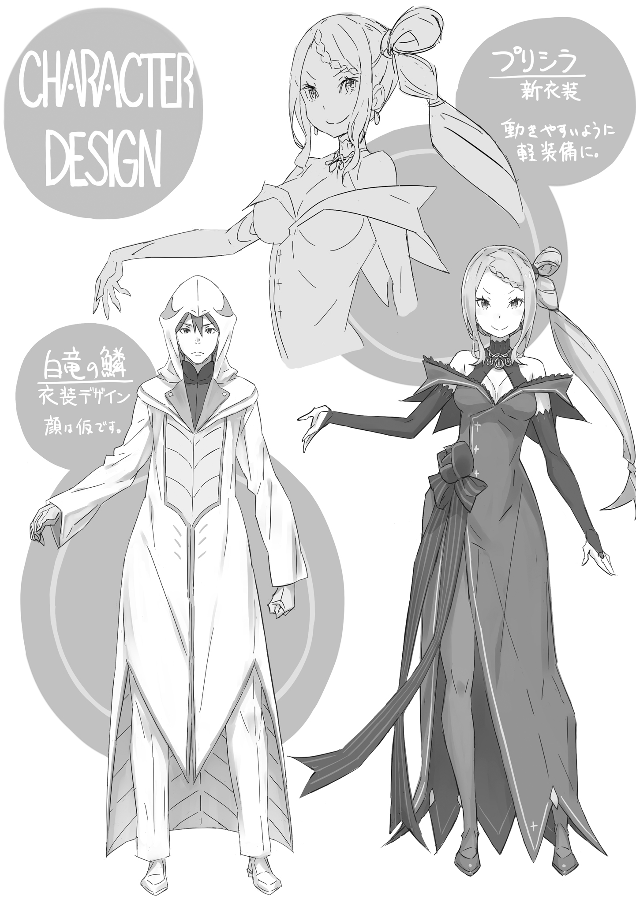

| Re：ゼロから始める異世界生活 19 | |
| 長月 達平 & 大塚 真一郎 | |
本作品を示すサムネイルなどのイメージ画像は、再ダウンロード時に予告なく変更される場合があります。
本作品は縦書きでレイアウトされています。
また、ご覧になるリーディングシステムにより、表示の差が認められることがあります。
口絵・本文イラスト●大塚真一郎
プロローグ 『混戦都市』
１
──広場には、ひどく醜悪な緊張感が張り詰めていた。
四方を水路に囲まれた広場だ。一度氾濫した影響で水路の水嵩は高く、周囲には溢れた水で濡れた形跡が残っている。広場に行くには水路に渡した石橋を渡る必要があり、濡れた石橋の先には一つの人影──否、悪夢が笑顔を浮かべて立っていた。
「──『暴食』の大罪司教」
戦慄と緊張に渇く舌を舐め、オットー・スーウェンは奥歯を噛みしめる。
その名を反芻した背中を冷や汗が伝う。当然だ。大罪司教の肩書きには、それだけ重たい意味がある。──この都市で、この世界で、彼らほど憎悪される存在はいない。
だが、オットーにとって『暴食』の存在は、単純な世界の敵という以上の意味がある。
『暴食』の大罪司教は、オットーの属するエミリア陣営にとって、許し難い敵なのだ。
「......また、ナツキさんやラムさんに文句を言われますね、これ」
陣営の中、特に因縁の強い二人ではなく、自分が『暴食』と遭遇した事実にオットーは息をつく。──正直、その事実に安堵してもいる。
何を優先すべきか、怨恨は判断を鈍らせる。怒りは、冷静な思考の邪魔をする。
そういう意味で、オットーの『暴食』への敵意は陣営内では比較的浅い。ただし、だからこそ努めて冷静に気掛かりに気付ける。例えば──、
「......僕の記憶だと、『暴食』の大罪司教は違う名を名乗っていたはずでしたが」
「あれれ、僕たちより先に俺たちに会ってたのかなァ？ なら、お兄さんってば食べ残されててスゴイじゃん。アレ、逆かな？ 悪食も見逃す無味乾燥ってヤツ？」
「どっちにしろ、いい意味ではなさそうですね......」
問いかけに笑って答える少年──ライ・バテンカイトス。そのひび割れた笑声を聞きながら、オットーはやはり自分の記憶と目の前の少年が一致しないと判断する。
数時間前にも、オットーは『暴食』を名乗る存在と都市の中で遭遇した。そのときは這う這うの体で逃げ出したわけだが、その『暴食』と彼とは別人だ。ただ、どちらかが大罪司教を騙った偽物、ではない。それは両者と直接遭遇したオットーには断言できる。
──何故なら大罪司教は、決して他人に騙れない邪悪な雰囲気を纏っているのだから。
「......つまり、『暴食』の大罪司教は二人いる。いや、最低二人って方が正確ですか」
「へえ......いい線いってるよ、お兄さん。見たことない顔にしちゃ上出来だ。どこでどんな熟成の仕方した人なのか、僕たち、興味あるなァ」
舌なめずりと好奇の眼差しに、オットーの腹の奥で臆病の虫が震える。
現状、オットーの立場は決していいとは言えない。危険を承知で都市庁舎を飛び出したのは自分だが、覚悟より重たい試練をぶつけるのはいかがなものか。
都市の四方にある大水門の制御塔、その四ヶ所同時攻略はそれぞれの塔を大罪司教が一つずつ占拠していることを見越した作戦だ。はみ出し者の存在は計算外である。
そして、何より一番の計算外は──、
「──オイ、仲良くお喋りしてんじゃねーよ、商人！ そんな場合じゃねーだろ！」
そう勇ましく怒鳴るのは、凛々しさと可憐さが奇跡的に同居した顔立ちの少女だ。
煌めく金髪に赤い灼眼、この都市において最もやんごとなき立場の五人──栄えある王選候補者の一人である、フェルトが八重歯を剥いて怒鳴っていた。
そんな彼女の存在に、オットーは心底頭の痛い顔で額に手をやり、
「僕も全くの同意見なんですが......フェルト様、どうしてこんなところにいらっしゃるんですか？ それも、よりにもよって大罪司教と......」
「なんだよ、アタシが避難所にいねーのがそんなに意外か？ あそこではああでも言わねーと、あの馬鹿がアタシの傍から離れようとしねーから仕方なくだ」
「ラインハルトさんをあの馬鹿呼ばわりとは......」
しかめっ面で美少女ぶりを台無しにするフェルト、そんな彼女の答えにオットーは内心の葛藤を押し隠しつつ、フェルトの言葉にも一理あると考える。
実際、ラインハルトの憔悴を思えば、フェルトの傍を離れたがらないのも道理だ。
──魔女教の都市占拠以来、オットーがフェルトと鉄火場で遭遇したのはこれが二度目。
一度目はフェルトを人質に、ラインハルトの父親であるハインケルが彼を言いなりにしている場面だった。オットーは運命を呪いながらその状況の打破に協力し、ハインケルを縛り上げた上で、ラインハルトを連れてスバルたちに合流したのである。
その際、フェルトはハインケルの見張りに残ると宣言し、彼女を戦場へ連れてゆくことを嫌ったラインハルトはそれを承諾、別行動を取ったのだが──、
「それはフェルト様の建前だったと。でも、別行動の結果は......」
「うるせーな！ アタシだって引きがわりー自覚はあんだよ！ でも、引いちまったもんは引いちまったもんだろーが！ なら、今の手札でやるしかねーんだ！」
「その答え自体は僕好みでもありますけど、ね」
孤立無援の騎士不在、そんな状況で大罪司教と相対し、しかし怯むことなく抗おうとする姿勢には素直に感服する。ただし、手札が貧弱すぎるのは困りものだ。
「ほ、本気でやんのか、フェルト！ 相手は大罪司教だってんだぞ......!?」
「根性入れろ、ガストン！ 娘にパパって呼ばれる前に死にたくねーだろ」
その、フェルトの手札に当たる人物が、彼女の隣で頬を引きつらせる大男だ。
ガストンと呼ばれた男は武器を持たず、拳を構えて真っ直ぐに立つ。その構えはなかなか洗練されているが、如何せん心構えの方が伴っていない。
大勝負、それも相手が大罪司教となると、いささか役者不足な感は否めない。
「そんな悲観的にならないでくれよォ。どんな出会いも味を引き締める美食への一歩！ 『暴食』なんて言われちゃいるけど、俺たちも下拵えの大事さくらい知ってるからさァ」
共感性のない理屈で、バテンカイトスが怯えるガストンの心を抉る。それを横目に、オットーは広場にいる別の陣営──白い外套を纏った、五人の男の一団を見た。
揃いの外套と、彼らの中心人物の顔にオットーは見覚えがある。
「確か、ダイナスさんでしたね。キリタカさんの護衛の、『白竜の鱗』のまとめ役」
「そういうあんたはエミリア様のところの内政官だったな。お互い、運がない」
「ええ、まったくです」
小刀を両手に握り、肩をすくめた人物──ダイナスにオットーは首肯する。
『白竜の鱗』は、都市の代表の一人であるキリタカの私兵であり、ミューズ商会の防衛を中心として、このプリステラで発生した事態の収拾に奔走している集団だった。
ダイナスはキリタカの副官であり、聞いた話だと、ミューズ商会を『憤怒』の大罪司教が襲撃した際、アナスタシアたちを逃がすための殿になったと。
実際、それを指揮していたはずのキリタカの姿は彼らの中には見当たらない。
「若旦那は連れ去られた。俺たちは、捜し回ってる最中だ」
「連れ去られた、ですか。それは......」
「......分が悪いのはわかってる。だけどな、あんたにもわかるだろう」
オットーが口にしなかった言葉の先を、ダイナスが苦い顔で否定する。
この状況下で、魔女教徒に連れ去られたキリタカの安否は絶望的だ。彼以外の十人会に所属する重役は、そのことごとくが殺されていたと聞かされている。
キリタカは交渉相手であり、単純な敵味方で割り切れる関係性ではなかったが、立場と責任に見合った行動をした事実は尊敬に値する。彼らの、分の悪い賭けを責められない。
「それにしても......」
オットー、それにフェルトたちと『白竜の鱗』。その三陣営が作り出した三角形の中心にバテンカイトスは立っている。一見、有利なのはオットーたちに見えるが、実状は見た目ほど単純ではない。──もっと、ちゃんと戦える人間にいてほしかった。
「主力と言えない編成で敵の主力と正面衝突......どんな悪い冗談ですか」
「アタシと白服連中はまだマシだろーが。一人で徒歩のお前に言われたくねーぞ」
ぼやくオットーにフェルトからもっともな突っ込みが入る。
その点に関してはオットーも言い訳不可能だ。事実、三陣営の戦闘力で並べれば、単独で手ぶらのオットーが一番期待薄なのは間違いない。
「おいおい、ケンカしないしない！ どうせなら協力しておくれよ、僕たちの捜し物に！ あァ、どこにいるの、捜してるよ、会いたい、会いたい、会わせてってねェ！」
「会いたい......？ いったい、何の話をしてるんです」
戦力を悲観するこちらを余所に、バテンカイトスは熱に浮かされたような表情で己の体を抱いている。その言葉尻を拾って、オットーは眉を顰めた。
バテンカイトスの態度は余裕の表れだ。その気になれば、彼は一瞬でオットーたちをねじ伏せることができる。──だから、その気にさせない。言葉で、交渉で。
「何度も説明させられるのはさすがに面倒だなァ。どうにも他の人たちは口を割ってくれなくてさァ。嫌だ、嫌だね、嫌だよ、嫌だとも、嫌じゃない、嫌だろうねってさァ」
険しい顔でフェルトが「ちっ」と舌打ちする。勇ましい彼女はバテンカイトスの会話に付き合う気はないらしいが、その判断はこの場のオットーと方針違いだ。
オットーも、大罪司教には本能的な嫌悪がある。だが、話はできる相手だ。
これでもオットーは『言霊の加護』で様々な生物と交渉を重ねてきた。意思疎通ができれば、どんな相手からも譲歩を引きずり出してみせよう。
『暴食』がどんな難題をぶつけてこようと、スバルを取り巻く問題に比べればはるかにマシだ。その点、スバルの存在に力を借りている気分にもなる。
「まあまあ、そう言わず。もしかしたら力になれるかもしれませんよ？ せっかくですから話してみてください。例えば、放送にあった要求の件とかでしょうか？」
「俺たちが知りたいのは一個だけ......さっきの、あの放送をした英雄の居所さ」
──前言撤回。
やっぱりスバルの力は貸してくれなくていいし、できれば名前も聞きたくなかった。
そんなオットーの内心を余所に、バテンカイトスがそっと赤らんだ自分の頬に両手を当てて、くねくねと腰をくねらせて身悶えする。
「その愛しい愛しい英雄が、僕たちを裁きにきてくれるはずなんだよ。この小さな胸が、それを求めて高鳴って高鳴って、張り裂けそうなのさァ！」
「......この厄介事ばっかり呼び寄せる体質、どうにかなんないのかな、あの人」
本人がいれば「望んでねぇよ！」と反論があっただろうが、この場にいない人物と口論していても埒が明かない。
「そら見ろ！ 話すだけ無駄だって言っただろーが！ 誰が身内を売るかってんだよ！」
「一応、敵陣営なんですが、身内判定はきっとお互い様でしょうしね......」
鼻息の荒いフェルトの哲学に、オットーは苦笑しながら頬を掻く。
好人物だ。あるいはオットーも、スバルたちとの出会いが遅かったら彼女に力を貸すのも悪くないと思ったかもしれない。その真っ直ぐな人間性は美徳だ。だから、ここは歪んだ人間性の持ち主として、厄介な敵との戦い方を一手、ご指南しよう。
「さて、ただ今のご質問ですが......聞いた相手が悪かったですね。彼女たちは答えを知りませんよ。さっきの演説の主と、彼女たちは合流していませんでしたから」
「へえ？ その口ぶりだと、お兄さんは違うって感じだねえ？」
「ええ、僕はさっきまで一緒でした。なんでしたら、居場所へお連れしましょうか？」
そのオットーの発言に、三者三様の反応がある。フェルトが眉を怒らせ、ダイナスが頬を硬くし、そしてバテンカイトスが目を輝かせたのだ。
それぞれの反応を視界の端に入れ、オットーは商談に臨むつもりで両手を広げる。
「僕も自分の命は惜しいですし、どうでしょう。命の保障さえしていただければ」
「へえ！ 知ってる！ 知ってるんだ!? 俺たちの英雄の居所を！ 愛しい愛しい英雄の姿を！ あの弱くて脆くて、支えてあげないと不安で仕方ないあの人を！」
「──？ ええ、はい」
興奮気味なバテンカイトスの物言いに、オットーは違和感を覚えながら頷いた。
まるで、少なからずスバルを知っているような口ぶりだ。自分の英雄像を口にしただけにしては、あまりにもナツキ・スバルという人間に迫った発言だった。
「いいえ、ご案内しましょう」
だが、オットーはその違和感をねじ伏せる。
スバルのことだ。大罪司教ともう二、三人顔見知りでも驚きはしない。さすがに全員と因縁があるとは、『強欲』『暴食』『色欲』『憤怒』──全員と、いつの間にかあった。
「あれ？ 急にしょぼくれた顔になったね、お兄さんさァ」
「余計なお世話ですよ。それより、どうしますか？ この場で僕たちを皆殺しにして手がかりなしと、全員の命の保障と引き換えに英雄との面会。どちらがお望みで？」
「ふーん......」
会話の主導権を握るべく、商談の姿勢を維持するオットーにバテンカイトスは従順だ。纏ったどす黒い空気と裏腹に、そこだけは見た目通りの子どもらしい純朴さのようなものを残していて、その不均衡さが何とも不気味さを醸す。
ひょっとすると、彼もまた望まずして怪物となった可哀想な少年で──、
「──今、僕たちを憐れんだだろう？」
「え？」
ふと、オットーがそんな感傷を抱いた瞬間、バテンカイトスの表情が変わった。
少年らしさが消え、瞳に虚ろな感情を宿した双眸が、オットーの魂を舐る。
「その目、覚えがあるなァ。見下す目だ。侮る目だ。見くびる目だ。俺たちを商品扱いして......あァ、そうか。さっきから臭いと思ってたんだ」
オットーを見るバテンカイトスの双眸が、虚ろな感情から憎悪へとすげ変わる。瞬間、全身の肌が粟立つ感覚にオットーの喉が凍った。
「お前、商人だろ？ 物に値段をつけて、他人に売り払って私腹を肥やす連中だ。人間の価値も思惑も、全部全部！ 秤に載せて金に換える亡者だろ？」
「そ、れは......ちょっと、見解の相違があると思いますが」
声の震えを隠しながら、雲行きの怪しい流れにオットーは頭を回転させる。ただでさえ綱渡りの心境が、そこに途中で目隠しを追加したような気分だ。
渡り切れるかどうかはもはや時の運──否、綱を握っている相手の気分次第といったところか。そして、その相手の気分はすでに最悪へと転がり出したあとで。
「あァ、クソ！ 騙されるもんか、騙されないさ！ 誰がお前らみたいな奴らの話なんて聞くもんかッ！ 所詮この世は暴飲ッ！ 暴食ッ！ 食って、食んで、しゃぶって、啜って、舐って、齧って、飲み込むまでは信じられやしないッ！」
「はんっ！ 結局、こうなるんじゃねーか」
四肢を震わせて吠えるバテンカイトスの姿に、フェルトが不満げに鼻を鳴らした。溢れ出す鬼気を前に背筋が凍るオットーと違い、彼女の胆力は大したものだ。
そのまま、フェルトは自分の腰裏から短剣を抜くと、慣れた姿勢で構えた。
「あの、フェルト様って戦えるんですか？」
「女子どもは下がってろなんて言い出すなよ？ アタシの命は他の誰にも委ねねーよ。アタシの主人はアタシだ。アタシのことは、アタシが決める」
臨戦態勢のフェルトの意気軒昂、その隣で青い顔をしているガストンとは心構えにおいて雲泥の差といったところか。現状、ガストンが戦力になる見込みは薄く、存在は賑やかしのようなもの。修羅場で役に立たないスバルみたいなものだ。
「そう考えただけで、あの人の価値すごい下がるな......」
ともあれ、及び腰の面子が揃うより、戦う気概がある顔ぶれの方が選択肢は多い。
フェルトと『白竜の鱗』、そしてオットーの三者を見回して、バテンカイトスが「そろそろいいかい？」と長い舌から唾液をこぼす。
「美食においては下拵えと素材が大事、良品が揃って初めて美食に価値が生まれるッ！」
「わかるようなわからないような......」
「わからなくて大いに結構！ 俺たちの美学は僕たち以外の誰かにわかってもらおうなんて思っちゃいないッ！ さァ、それじゃそろそろ──イタダキマスッ！」
会話の間に前菜は決めていたのだろう。大口を開け、鋭い牙を見せつけるバテンカイトスが地を蹴り、オットーへ向かって突っ込んでくる。
水際に立っていたオットーは、そうして真っ直ぐ迫る冒涜者へ指を突き付け、
「商人との商談は最後まで聞くものですよ。──絶対に、切り札があるから」
「はァ？」
「保険です、よ！」
疑念に眉を顰めたバテンカイトスの前で、オットーが靴の踵を強く二度鳴らした。
その音を合図に、引き寄せられるように水面が弾んで──、
「──ッッ!!」
オットーの背後の水路から飛び出した水竜の群れが、飛び込んでくるバテンカイトスの四肢に喰らいついて、獰猛な狩りが始まった。
２
「──あの女剣士の素性は、私の妻であった先代『剣聖』です」
制御塔へ向かう道中、連れ合いの『剣鬼』が語った事情を聞いて、ガーフィールは自分の胸の奥、心臓を鷲掴みにされたような感覚を味わった。
──同行するヴィルヘルム、『剣鬼』と呼ばれる男は王国史に残る生ける伝説だ。
彼と、その妻の『剣聖』の物語は多くの人々に愛され、今なお歌い継がれている。
故に、ヴィルヘルムの事情はガーフィールにも深く突き刺さっていた。ましてや、一度は失った妻との再会が、意に沿わない敵同士となればなおさらだ。
「聞いた話ッじゃ、先代の『剣聖』ってのァ、白鯨にやられたって......」
「その敵討ちは済ませた、はずでした。ですが、彼奴らは死した妻の亡骸を弄び、魂を踏み躙って、かつて妻が守ろうとした人々に剣を向けさせている」
「────」
「到底、許せることではない」
声色に静かな剣気を込め、堂々と前を見据える男の足取りにガーフィールは息を詰めた。この横顔に、同じ男として何が言える。何を言える。
最愛の女の生死を弄ばれ、その剣を望まぬ血で曇らされた男に、何を。
「俺様ァ......」
それと同時に、ガーフィールにもまた譲れぬ想いがあった。
ヴィルヘルムが亡妻であると語った女剣士、彼女の剣からガーフィールを庇って、その胸を貫かれた少女がいる。今も、生死の境を彷徨う彼女を救うには、『死神の加護』を持つ女剣士を討ち果たし、ミミを『死』から解放する以外にない。
そしてそれは、彼女に救われたガーフィールがやらなくてはならない役目だった。
「譲っていただきたい、とは申しません。ただ、相手がいかに強敵か、それをお伝えする必要があった。『剣聖』と『八つ腕』......生前の実力そのままとは思えませんが」
「......生きてッた頃より強ェって？」
「いえ、その逆です。──全盛期には程遠い」
首を横に振ったヴィルヘルムに、ガーフィールは心中複雑な思いを味わった。
すでに二度、ガーフィールは屍人となった戦士との戦いを経験している。その両方で後れを取ったにも拘らず、あれが全盛期以下の実力だというのだ。
ガーフィールは英雄の伝説や伝記が好きだ。歴史に名を残した人々を尊敬している。
自分は、勝てるのか。──その、憧れた伝説の、本物との戦いに。
「──ガーフィール殿」
「わかってらァ」
名前を呼ばれ、足を止めた。正面、肌が粟立つほどの剣気を感じる。
見れば、ガーフィールたちの行く先、高い高い制御塔の入口へ続く通りに、こちらを待ち構える人影があった。巨躯と細身、それと──。
「見るからに、異形。あれが、『色欲』の大罪司教」
うねうねと蠢く、異様に肥大化した影が通りの向こうを埋め尽くしている。月明かりの角度で鮮明には見えないが、その異様な存在感を見落としはしない。
スバルからも詳しく聞かされている。──『色欲』の、おぞましい権能の力は。
両腕を覆う、銀色の盾を擦り合わせ、ガーフィールは静かに戦意を高めていく。
『色欲』との因縁は色濃い。屍人の剣撃がミミを傷付けたこともそうだが、『色欲』の大罪司教の権能は、都市の住人を人ならざる姿へと変貌させた。その中の一人、黒竜に姿を変えられたのは、ガーフィールと複雑な関係にあったギャレク・トンプソン──。
記憶をなくした母と結ばれ、新たに生まれた弟妹の父親となっていた人物だった。
夫が、父親が、人の姿を奪われたと知れば、あの家族がどれだけ傷付くことか。それはもはや、ガーフィールにとって他人事ではない。だから──、
「──『焚火に座るオレグレン』ッだ。出てきたッことを後悔させてやらァ」
『色欲』と、その傘下の屍人の姿を目にして、ガーフィールが強く拳を打ち合わせる。その隣ではヴィルヘルムも腰の剣に触れ、瞳の温度を急速に下げていた。
研ぎ澄まされる剣気に全身の産毛を逆立てながら、ガーフィールはちらと横を見た。その視線を受け、ヴィルヘルムも短く顎を引く。
そして──、
「──っ！」
ガーフィールとヴィルヘルム、二人が地を蹴ったのは寸分の狂いなく同時だった。
踏み込みで石畳を爆ぜさせ、低い姿勢から『剣鬼』が敵へ猛進する。待ち構える敵の間合いへ瞬時に入り込み、刹那、銀閃が真っ直ぐに閃いた。
敵は異形と二人の剣士、その細身の剣士へと迷いなく剣がひた走る。
銀光一閃、衝撃と甲高い擦過音が都市の夜空に響き渡り、ヴィルヘルムの美しい初撃が刀身の細長い剣によって受け流される。それは、まるで刃同士を躍らせるような超級の技量の為せる業だ。ただし、この剣撃の狙いは首ではない。
放たれた剣圧の巻き起こす風が、長剣を担った人影のローブを、頭から被った布を引き剥がして、その下に隠された顔貌を夜気にさらけ出した。
「────」
冷たく凍えた青い双眸、可憐の一言では語り尽くせぬ愛らしい容貌。たっぷりと長い炎の赤毛を一つに纏め、ついに露わになる伝説の中の伝説──。
「──テレシア」
その、年若い少女の姿を見たヴィルヘルムの瞳に、言葉にし得ない激情が過った。
そんな老剣士の──否、夫の動揺に目もくれず、身を翻したテレシアの斬撃がヴィルヘルムへと迫る。その長い剣を手足のように自在に操り、的確に相手の急所を狙うテレシアはまさしく死神。一つの戦場で、一人で亜人を千人斬った伝説に偽りなし。
だが、その伝説に偽りがないのならば──、
「──り、ぁぁぁぁ!!」
剣風が竜巻の如く荒れ狂い、テレシアの放った斬撃がことごとく撃ち落とされる。
それをしたのは、千人を斬った『剣聖』を下し、彼女を娶った『剣鬼』の剣勢だ。ヴィルヘルムは寸前の動揺を即座に封じ込め、一介の剣士として剣を振るった。
その実力、全盛期に程遠くとも、なおも剣の頂へ指をかける領域にある。
ここから始まるのは、剣と剣の頂上決戦──かつて行われ、伝説となった大一番だ。
「だァから、そのッ邪魔ァさせられッねェ!!」
「────」
そこへ、無粋に割り込む愚を犯さず、ガーフィールは巨漢へジグザグに飛びかかった。
地を蹴り、真っ直ぐ敵へ迫ったヴィルヘルムと違い、ガーフィールは通りを囲む建物の壁を三次元的に使い、常識に囚われない角度からの攻撃を仕掛ける。
そうでなくては牙が、爪が届かない。何故なら敵は、八本の腕を持つ英傑だ。
「『八つ腕』の、クルガン──ッ！」
吠えるガーフィールを迎え撃つのは、巨躯を包む外套の下から現れた四本の腕だ。
太くたくましい丸太のような腕が、大岩をも砕くガーフィールの打撃を真っ向から受け止め、突き抜けた衝撃波が足下の街路を陥没させる。
腕に跳ね返ってくる感触、意気軒昂にして絶好調、一切の不備なし。
初撃が止められたことへの感慨もなく、ガーフィールは次々と代わる代わる連撃を叩き込み、生物的な手数の不利を、運動量の手数有利で埋めようとする。
「うらららららららァ──ッ！」
拳が、爪が、蹴りが、牙が、あらゆる角度からクルガンへ襲いかかる。
その攻撃が無駄でないのは、クルガンの青い肌を削り、流血する姿からも明らかだ。
届いている。効いている。ガーフィールの爪は、あの伝説の『八つ腕』へ届く。
その高揚感と、戦いへの集中力で雑音を遮断せよ。あらゆる音を切り捨てて、今、この瞬間の生死に全霊を注ぐ虎となれ。──でなくば、命が削れゆく。
「お、ぉぉぉぉッ！」
吠えながら、爪と牙を振るう獣となりながら、ガーフィールは敵の喉笛を狙う。
──ガーフィールは、雑念が多い。
これは以前、ラムにも指摘されたことだ。戦いの中、雑念が多い。決して地頭がいいわけではないのに、次から次へと思い悩むことが湧いてくる。
話し合ったわけでもないのに、『死神の加護』の所有者との戦いを譲ったとか。『色欲』の大罪司教を正面に、記憶をなくした母や父親違いの弟妹が心配だとか。自分よりよほど強いのに、スバルやオットーが無事か気掛かりだとか。
──こんなことで、ラインハルトに怯えた弱い自分にミミを救えるのか、とか。
考えまい、と必死にそれらを頭から追いやろうとする。だが、考えないようにするという行為は、考える行為といったい何が違うというのか。
──そうして、雑念が視界を曇らせた瞬間、ガーフィールの胴を豪腕が薙いだ。
「ぶ」と肺の中身を押し出され、目を剥くガーフィールの体が軽々と吹っ飛ぶ。その吹っ飛ぶガーフィールへ追いつき、相手は追撃の一撃、真上からの衝撃に石畳へと背中から叩き付けられ、血を吐くガーフィールの顔面がさらに踏みつけを喰らう。
無言の一撃に鼻面を押し潰され、鼻血で視界と呼吸がおぼつかなくなる。その背中を蹴り上げられ、浮いた体へと打撃、打撃、打撃、執拗に殴られる。
「ごぇッ、がぎ......ごォ!?」
視界が赤くなり、呼吸を差し挟む隙がない。八本の腕が繰り出す連撃には文字通り隙間がなく、ガーフィールは哀れな人形のように弄ばれる。
その間、相手は言葉もなく、ガーフィールを容赦なく巨大な拳で殴り続けた。
「────」
無言、そこにはやはり戦士の矜持も、戦いへ臨むものの心構えも何もない。生前の強ささえも半端となれば、ここで辱められる存在は何者なのか。
──また、懲りずに雑念を抱く自分を思い、ガーフィールは頬を歪めた。
「が、ぁぁあぁあああ──ッ！」
次の瞬間、ガーフィールの牙が相手の手首へ突き刺さり、殴打する腕を深々と抉った。噴出するどす黒い血を浴び、ガーフィールはそのまま反撃へ転じようとする。
「──が、ぐッ」
その、開いた牙の口腔に丸めた外套をねじ込まれ、ガーフィールは目を剥いた。眼前、ローブに隠れていた巨躯、その敵の姿が露わになる。
巨人族に匹敵する強大な体格、その首から上には鬼もかくやと言わんばかりの凶相たる面構えがあり、かの戦士を『闘神』と言わしめた八本の腕が開帳される。
通常、肩から伸びる二本の腕に加えて、同じ出所からさらに二本、脇腹からもう二本の腕が生え、残った一組は背中側から大きく正面へ掌を向ける形だ。
『八つ腕』のクルガン、多腕族の中でも戦うために生まれたとしか思えぬ威容──その戦闘力を目の当たりにして、奮い立たせたはずの心胆が大きく震える。
それは決して、英雄を前にした高揚感ではなく、怯えだった。
まるで、悪い夢だ。──昨日からずっと、覚めない悪夢がこの心を蝕んでいる。
「あ、ぁぁぁっああぁ！」
バッと、目の前の光景が弾けた錯覚があって、ガーフィールが己の停滞を自覚する。
止まっている、暇などない。眼前の敵が誰であるのか、覚悟は決まっていたはずだ。
「馬鹿、やってる場合ッじゃァねェ──ッ」
奥歯を噛みしめ、ガーフィールは自分の頬を噛み切った血を味わい、正気へ立ち返る。
眼前、なおもクルガンは堂々たる姿でガーフィールを見据えていて、
「ここで怖気づいて、何のために俺様だってんだよォ！ 大将も！ オットー兄ィたちだって待ってんだ！ 戦うしか、俺様にゃァできねェだろォがよォ！」
吠える。それが虚勢でも、虚勢から力を引き出せばいい。
踏みとどまり、足を突き刺した地面から力を吸い上げる。『地霊の加護』の力で、折れ砕けた骨を接ぎ、割られた額を回復して、ガーフィールは正面へ踏み込んだ。
瞬間、反撃の狼煙になれとばかりに、渾身の一撃が放たれる。
獣腕が唸りを上げ、汲み上げた大地の力を一点に集中して放たれた威力は、直撃を受ければ建物が倒壊し、水路さえ爆砕する破壊力を秘めていた。
銀製の盾に覆われた火力が、真っ直ぐに英雄へと直撃する。腰溜めの状態から解放された両腕、それが一直線にクルガンの胸骨へ叩き込まれ──、
「──っだろ」
その渾身の一撃が、クルガンの正面で交錯した二本の大刀──『八つ腕』のクルガンが生前から愛用した武装、鬼包丁によって防がれる。
打撃の威力が殺されたわけではない。受け流しも、払いのけもされなかった。
単純な真っ向からの力比べで、ガーフィールの一撃は英雄に届かなかったのだ。
「──ガーフィール殿！」
遠く、足を止めたガーフィールの鼓膜に、ヴィルヘルムの声が届いた。
あちらも、決して余所見のできない剣戟を繰り広げている真っ最中だったはずだ。そんな戦いの只中で、それでもなお、ガーフィールを呼んだのは。
──それだけ、致命的な瞬間だと、ヴィルヘルムの目にも見えたからで。
「──ぁ」
刹那、ガーフィールの視界を覆ったのは、眼前に立つクルガンの威容ではなかった。
クルガンは立ち尽くしたまま、その大きな背中の向こうから、蠢く巨大な影が一気にこちらへ覆いかぶさろうと迫ってきたのだ。
その巨大な影は、クルガンの巨躯ごとガーフィールを呑み込まんとする。それは、戦いが始まる前から、ずっと通りの奥で蠢いていたもので──、
「──『色欲』じゃ、ねェ？」
『色欲』の大罪司教、そうだと思っていた影の正体が、直近へ迫ってようやくわかる。
そこにあったのは、ぶよぶよと蠢く大きな血の塊だ。濃密な血臭が鼻腔を侵し、吐き気を催す破滅的な造形に、ガーフィールの体が呑み込まれる。
「────」
呼吸ができなくなり、視界が赤く染まって、ガーフィールは天を仰いだ。
血の塊に汚された視界、頭上に揺らめく月が見えて。
──月すらも、無様なガーフィールを嘲笑っているような気がした。
３
「それで、何があったんかワイに話す気ぃはあるんか？」
険しい横顔をした騎士に、大股で歩くリカードがそう声をかけていた。
決戦を前に予想外の問いかけがあって、それを受けたユリウスが切れ長な瞳を細める。
「──。珍しいな、リカード。君がそんな風に他人を気遣うだなんて」
「つまらん言い方して誤魔化さんでもええやろ。ここにおるんはワイだけなんや。お嬢も他の連中もおらんのやから、たまの弱音ぐらい内緒にしといたるわ」
「......君には敵わないな」
普段はあまり感じさせないが、大雑把なようでリカードはよく人を見ている。
そうでなければ『鉄の』の団長は務まらないし、断片的に伝え聞く彼の壮絶な経歴からもその歴史は窺えた。自分のことばかりで、周りを見る目がなければ生き抜くことはできない。──奴隷と傭兵、どちらの立場であっても。
「まぁ、年の功ってヤツやな！ これでも、ワイは陣営の頼れるオトンのつもりでおるんや。娘婿の相談ぐらいいつでも乗ったるわ」
「娘婿とは恐れ多い。私はアナスタシア様に、そんな不敬な想いは抱いていないよ」
「なんや、お嬢のこととは言うとらんやんけ。ミミのことかもしれんやろ。他にもワイの娘は仰山おんのに、最初にお嬢が出てくる時点で説得力ないわ」
その指摘にユリウスが苦笑する。そうして、己の前髪に触れて思案する姿は普段と変わらないが、その表情に微かな無理を見つけ、リカードは犬面の鼻を鳴らした。
優美を地でいくユリウス、その仕草や言い回しに精彩を欠いている感は否めない。そうした兆候を見逃してはならないと、リカードの長年の嗅覚が訴えていた。
「都市庁舎の奪還に失敗したあたりからか？ どうも調子狂っとるやろ。お嬢はなんや突っ込んだ話はせんかったけど、ワイは遠慮せんと聞くぞ」
「容赦をしてくれないのだね」
「当然や。こちとら命懸けやからな。迷ってる奴に背中預けるんはワイかて御免や。どうや、ワイのこの無敵の理屈に反論あるんか？」
「──。いや、君が正しい。間違っているのは私だ」
緩やかに首を横に振り、ユリウスが形のいい眉を顰めた。
それは、ユリウスが己の内に言い表せぬ不穏を抱えていることの証明だ。が、それを肯定しながら、続く言葉がなかなか出てこない。
間違っているのは自分だと、そう認めてなお、何も言えないユリウス。
「なんでそこで黙んのや。何を迷うことがあんねん。素直に思うたこと口に出すだけと違うんか。何にそんなに悩んで......んや、迷っとるんや」
「......歯切れが悪くてすまない。ただ、そう、適切な言葉が見つからないんだ。私自身、どうしてこうまで気に病むのか、その答えが判然としない」
静かなリカードの問いかけに、ユリウスが複雑な色を浮かべたまま応じる。彼はしかめ面のリカードの前で、自分の腰の騎士剣の柄に触れた。
「君も察している通り、私の迷いの原因は都市庁舎の戦い──より正確に言えば、剣を交えた大罪司教にある。『暴食』の、ロイ・アルファルドと名乗った少年だ」
「なんや。まさか、子どもとやり合うんが気が重いなんて言うんやないやろな」
「私も、そこまで覚悟と無縁の男ではないよ。たとえ相手が子どもであろうと、許し難い悪の道に染まったなら裁かれなくてはならない。だが......」
そこで言葉を切り、ユリウスは短く吐息をつくと、
「彼が、私に対して言い放った言葉が頭を離れないんだ」
「頭を離れん......？」
「おそらく、『暴食』の権能は他者の記憶と関係している。クルシュ様がご自身の記憶をなくされ、スバルたちの陣営の少女が誰からも忘れ去られた。この都市においても、すでにそうした被害は出ていると考えるべきだ。そして──」
「そして？」
「──その被害は、私たちにとっても他人事とは言えないだろうということだよ」
ユリウスの持って回った言い方に、リカードは鼻面に皺を寄せ、一拍遅れて理解が追いつく。つまり、ユリウスはこう言っているのだ。
「まさか、ワイらの仲間の誰かが『暴食』の餌食になったっちゅーんか？」
「......都市庁舎の屋上で相見えた『暴食』は、明らかに私を見知ったような態度だった。あの言動は、陣営の外にいる人間にはできないもののように思う」
「んな、馬鹿なことが......」
あるものか、とリカードは否定したがったが、それは単なる責任逃れだ。
もし、ユリウスの懸念が正しく、陣営の関係者が『暴食』の手にかかり、その記憶を奪われてしまっていたのだとしたら──、
「ミミたちも、団の連中も揃っとったはずや。もちろん、ワイとお嬢......ユリウス、お前もちゃんとおる。せやのに、あと誰が欠けてるなんて話になるんや」
「その認識自体を誤魔化すのが、『暴食』の持つ権能とやらなのだろう。私たちは仲間を奪われたかもしれないのに、それを知ることさえできない」
聞けば聞くほど悪辣な力は、なるほど白鯨の戦いにあった危険な霧の効力に近い。あの魔獣の霧にも、浴びた人間の存在が記憶からすら消失する力があった。
ただし、消えた記憶を喰らって育つ、『暴食』の大罪司教の力の方がおぞましい。
だが──、
「何を迷うことがあんねん」
「む......」
「確かに腹の立つ話やな。ワイらの身内をワイらが忘れて、のうのうと相手が覚えとるやなんて腸が煮えくり返るわ。──せやけど、やることは変わらんやろ」
「──『暴食』の大罪司教を撃破して、記憶を取り戻す」
「で、都市を解放して、英雄として凱旋や。あの兄ちゃんの演説にばっかり、カッコええとこ取られてたら『最優』の名前が泣いてまうやろ！」
そう言って力こぶを作り、リカードが大口を開けて覇気を漲らせる。その力強い姿勢に一瞬呆気に取られ、すぐにユリウスは「ふ」と唇を緩めた。
「おうおう、調子戻ってきたみたいやないか。どうや、話してみるもんやろ？」
「そう、だね。敬服する。やはり、君は団長の器だ」
「よせよせ、照れ臭い。こんなもん、ただの年の功や！」
ガシガシと乱暴に焦げ茶の髪を掻いて、リカードが大股で前を歩き始める。故に、問題は解決と考えたリカードに、このときのユリウスの表情は見えなかった。
──なおも、深い憂いと苦悩を抱えながら、瞬きの裏にそれを隠した表情が。
『暴食』に対して、ユリウスは言い知れぬ不安と、不得手な感覚を抱いている。
それはおおよそ、リカードへ伝えたものでは説明の足りない感覚だ。あるいは、ユリウスの本能は『相対すべきではない』とさえ、警鐘を鳴らしていた。
しかし、ユリウスは誓ったのだ。──主君に、友に、この騎士剣に。
多くの人々と敵対し、あらゆる陣営と因縁深い存在である『暴食』とは、決着をつけたいと願うものが大勢いたのだ。だが、状況がそれを許さなかった。状況が、彼らに理不尽を押し付けた『暴食』との、正々堂々たる決着を許さなかった。
その役目を、僭越ながら背負ったのだ。ならば、不安などねじ伏せ、足を進める。
──ユリウス・ユークリウスよ、征け。信義に恥じぬ騎士でありたいならば。
そうして突き進んだ先にこそ、誇れる己があるならば──、
「──あァ、やっぱり俺たちに会いにきてくれたんだねえ、感激だなァ」
──あの、悪鬼羅刹の存在を、その騎士剣で以て討ち果たすのだ。
正面、ユリウスとリカードが二番街の制御塔を目前とすると、その高い塔の手前にある広場の中央に、悠然とこちらを見据える小柄な人影が立っている。
色の濃い茶髪を丁寧な三つ編みにして、緑の長衣を纏った年若い少年だ。年齢は十代の真ん中から前半、まだ子どもといって何ら差し支えない。ただの、無害な子どもだ。
──その全身から、おびただしい勢いでどす黒い鬼気が溢れ出してさえいなければ。
「......ユリウス、さっきは悪かったわ」
「何の謝罪を？」
「いやなに......これを、子ども扱いしとるんかなんて、馬鹿にしとったのと同じや」
広場でこちらを出迎えた少年を眺めて、リカードが太い腕を組みながらそう言った。
彼らしい言い回しで、眼前の少年の異質さを認めたのだ。直接相対すればわかる。この少年を普通の子どもとして扱うなど自殺行為だ。そんなことが可能なのは、よほど隔絶した実力の持ち主、ラインハルトぐらいにしか許されまい。
「もっとも、彼ならばこうして二度目の機会自体を許さなかっただろう。この邂逅が叶ったことが、すでに君が在り方を逸脱した何よりの証明だ」
「ははッ、ホントに好きだよねえ、そういう言い方！ 僕たちも嫌いじゃないけどさァ、なんて言うのかな。詩的で華やかで？ 美しいよね、配膳がさァ！」
ユリウスの言葉を聞きつけ、少年が手を叩いて大はしゃぎする。その発言はユリウスを揶揄するものだったが、当人はそれを意に介さない。
前に出て、リカードと隣に並びながら、口を開けて笑う少年を視線で射抜くと、
「──『暴食』の大罪司教、ロイ・アルファルド」
「あァ、きてくれると思ってたよ。信じてたさ。そうさ、そうだ、そうだよ、そうだろ、そうだろう、そうだとも、そうじゃないか、そうだろうともさ、そう願い続けるからこそ！ 暴飲ッ！ 暴食ッ！ 待ち望んだ甲斐があるってもんさッ！」
ユリウスの指摘を受け、少年──アルファルドが自分の細身を抱いて身悶えする。
その姿勢、見紛うはずもなく、都市庁舎の屋上で相対した大罪司教だ。
「気色の悪いガキやな。あれで間違いないな？」
「ああ、彼だ。──あの年齢で大罪司教とは、嘆かわしいがね」
頬を歪めたリカードの問いかけに、ユリウスは静かに顎を引く。そんな両者の様子を交互に眺めて、アルファルドは長い舌で自分の歯列をなぞりつつ、
「今度は食いでのあるワンちゃんまで連れてきてくれたってわけだッ！ その気遣い、たまんなく嬉しいなァ！ なんせ、俺たちは満腹感優先の『悪食』だからねえ」
「人の面見て悪食宣言なんぞ、どっから突っ込んだらええのかわからんわ。ワイらはお前の食い物やないし、ええもん食ってるから肉質も悪ぅないわ」
「リカード、話が逸れていないか？」
背中から大鉈を引き抜いて、軽々と構えるリカードにユリウスが質す。それから、ユリウスも騎士剣に手をかけ、戦意を徐々に高めつつ、
「君の侮辱も聞き慣れた頃だったのでね。友人に同行を願ったのだが......よもや、君はそれを卑怯などとは言うまいね？」
「あァ、いいよ、そういう自分への言い訳みたいなの。そうやって、気分を盛り上げるのが自分流なんだろうけどさ、それも結構、薄味だよね。『悪食』とは言ったけど、別にわざわざカスカスの味がしないもの食べたいわけじゃないんだよね、僕たちも」
「先の大歓迎のわりにつれないことを言う。薄味とは......」
「自覚あるくせに。そういうとこは可愛いと思うよ、うんうん。甘じょっぱいよねえ」
ひらひらと手を振り、アルファルドは軽薄な態度を崩さない。それが挑発か、素の態度なのかは不明だが、涼しく受け流すユリウスと違い、リカードは大きく舌打ちする。
「好き放題言ってくれるやないか、坊主。ガキやから大目に見てもらえると思うたら大間違いやぞ。お前のやらかしとることは可愛げがないわ。アナ坊も大概やったけど、お前と比べたら比べられたらアナ坊が可哀想や。──どタマ、かち割ったる」
「おお、怖い怖い。そんな怖い顔で睨まないでおくれよォ。ワンちゃんって言ったのがそんな気に障ったのかなァ。謝る、謝るよ、リカードさん。俺たちはこれでも、ちょっと君に憧れてたんだぜ？ 物怖じしないで、でっかい声で喋れる無神経さとかさァ！」
「......ああ、なるほどやな。これは確かに、腹立つわ」
名前を呼ばれるリカードが、ユリウスの言を思い出したように牙を鳴らした。
知らない身内がやられ、こちらの素性は割れている。言外にそうとしか思えない言動を繰り返すアルファルドに、不確かで曖昧な怒りだけが募っていく。
そして、それこそが『暴食』の術中、ということなのだろう。
「これ以上、言葉を交わせば彼の掌の上だ。我々としても、それは望ましくない」
「おっとォ、それってもっともらしい言い方だけど、こっちの意見を封殺ってヤツだよねえ。ほら、またそういうつまらない結論ッ！ 気になってるくせに、気になってないふりをするのがホントにお上手！」
「────」
「自分の好奇心は胸に仕舞って、優先順位に従うお利口さんだね。それって騎士として立派な美徳だけどさァ、人間的には退屈そのものなんだよ」
「──そうか。では、少しでも君の心が興じれば幸いだ」
それ以上の会話を望まず、騎士剣を引き抜いたユリウスの唇から詠唱が紡がれる。
途端、ユリウスの周囲に淡い六色の光──精霊騎士と契約する六体の準精霊が浮かび上がり、すらりとしたその長身を美しい瞬きが包み込んだ。
精霊騎士ユリウス・ユークリウス、彼を『最優』たらしめる剣技と精霊術の融合。
「それを、僭越ながらお見せしよう」
「劣等感の香ばしさも、挫折を味わった芳醇な舌触りも、強く何かを渇望する甘美な絶望も、後生大事に抱え込んだ秘密の満腹感も、君には何にも！ なぁんにもないッ！」
流麗な仕草で、細い騎士剣に鮮やかな光を纏わせ、ユリウスは身構える。その隣、リカードが大鉈を肩に担うのを横目にし、
「リカード、最初から全力を注ぎ込む。合わせてくれ」
「おお、任せい」
臨戦態勢に入った二人の前で、「ハッ」と鋭い牙を剥くアルファルド。彼が大きく両腕を振ると、その長衣の袖口から飛び出した虎爪が指に装着される。鋭い切れ味となった左右の五指を操り、ユリウスとリカードに対抗する腹積もりだ。
子どもの細腕、頼りない暗器。いずれも、リカードの大鉈どころかユリウスの騎士剣の威力さえ受け切れない貧弱さに見えるが──、
「精霊騎士、ユリウス・ユークリウス。──油断はしない！」
行儀よく、戦端が切られる瞬間にユリウスが自分の名前を名乗る。
無論、傭兵稼業のリカードにその理屈は通用しない。ただひたすらの命の取り合い、生死の懸かった場で貫く仁義の持ち合わせなど皆無。
そんな、両極端な戦意を真っ向から浴びて、アルファルドは舌なめずりした。
「いいさ、いいよ、いいとも、いいかも、いいじゃない、いいだろう、いいじゃないか、いいだろうさ、いいだろうともさ、いいだろうからこそッ！ 暴飲ッ！ 暴食ッ！ 美食、悪食、それから飽食ッ！ 大味、薄味、美味、珍味ッ！ 根こそぎ全部喰らってやるさッ！ 面白みのない人生それも、僕たちを満たす、未知の味だッ！」
「──エル・クラウゼリア！」
吠えるアルファルドを正面に、ユリウスが騎士剣を構えながら詠唱する。
眩く輝く六色の光がユリウスの眼前で円を描き、その中央に突き込まれた剣の先端から極光がアルファルドへと放たれた。
六種類の属性が混ざり合い、虹色に輝く破壊の力は全てを呑み込む一撃だ。
ユリウスの持てる最大火力、出し惜しみせずにそれをぶつける。──宣言通り、油断はしない。余裕を見せることができる相手でもない。
「うおらぁぁぁ──っ！」
その眩い光に遅れて、石畳を砕く勢いでリカードが正面へ踏み込む。大鉈を振りかざし、アルファルドが極光にどう対応しようと仕留める覚悟だ。
豪風を纏った一撃と、破壊の象徴たる虹色の極光──その二つの脅威を前に、しかし、アルファルドは凶悪に牙を剥き出し、嗤った。
その凶笑が、ユリウスの胸中に禍々しい不穏な気配を湧き立たせる。その正体が、戦いに挑む前に自身を蝕んだものと同質と、ユリウスは奥歯を噛んだ。
そうして、不穏な予兆を覚えるユリウスの視界で、ロイ・アルファルドは嗤ったまま、
「──本当、兄様は想像通りで素敵だね」
第一章 『強欲攻略戦開幕』
１
「──スバル!!」
聖堂の入口を蹴破って、中へ踏み込んだスバルたちを銀鈴の声音が出迎える。
それは祭壇の前、白い花嫁衣裳に身を包んだ人智を越えた美少女、エミリアのものだ。
煌めく長い銀髪を装飾品で飾り、純白のドレスに袖を通した彼女は美しい。それこそ目が潰れそうなほどで、衣装選びからスバルがしたかったくらいだ。
「最高にＥ・Ｍ・Ｔ......！ って感想はともかく、ギリギリ間に合ったみたいだな」
「それに見たところ、円満に式が進んでいた様子もなさそうだ。どうやら、場違いな邪魔者扱いされる心配はしなくて済みそうだね」
聖堂の中を見渡し、微かに張り詰めた緊張感を見て取ったラインハルトが頷く。
広々とした聖堂だ。床には赤い絨毯、壁には厳粛な雰囲気を醸し出す調度品が飾られ、中央の祭壇と新郎新婦を華やかに演出している。列席者はいずれ劣らぬ美女たちがざっと五十人、お揃いのドレスが何とも鮮やかで魅力的な光景だ。
その顔におよそ人間らしい感情がなく、人形めいた無機質さがなければ完璧だった。
「当然だが、エミリアたんのこと抜きにしてもまともな結婚式とは思えねぇな」
「エミリア、たん？」
ふと、スバルの呟きを聞きつけ、祭壇の前の白い服の男──レグルスが呟いた。そのままレグルスは不機嫌に唇を緩め、「お前か」とスバルを睨みつける。
「不埒な浮気女の相手はお前か。......理解に苦しむよね。隣の赤毛ならまだしも、僕を振り切って選ぶのが君なわけ？ 彼女の眼球ってガラス玉か何かなのかな？」
「宝石みたいって言えよ。あと、隣と比較されると何も言えねぇからやめろ」
「黙れよ。祝いの席はこれから悼みの席に変わる。君たちは招待客から弔問客に鞍替えする準備を......ああ、いらないか。すぐに君たちも、送る側から送られる側だからさぁ」
「お前、よく強気に出られるな。空港で成田離婚どころか、結婚式でフラれてんだぜ。もっと顔真っ赤にしろよ。それと、俺の隣にいるのが誰か聞いてなかったのか？」
殺意に声の低くなるレグルスを挑発し、スバルは隣のラインハルトを顎でしゃくる。その仕草にレグルスは、「ああ」と無関心に金色の瞳を細めた。
「なんだっけ、『剣聖』？ 聞いたことはあるよ。剣を振るしか能のない奴の呼び名じゃなかった？ そんな奴を連れてきて、権威で僕がひれ伏すとか思うわけ？ やだやだ、それって滑稽だよね。歴史とか血統とか、そういう古臭い伝統主義で僕が倒せると思うの？ そういうのって、新しい風に無様に負ける前振りでしょ。それ、実演したいわけ？」
「剣を振るしか能がない、というのは言い得て妙だね。事実、僕が皆に期待されている役割の多くはそれが理由だ。ただ、今はその役目が果たせるか少し怪しい」
「へえ？ 実力の違いがわかったってこと？ なかなか殊勝な考えじゃないか」
不敵な態度のレグルスに、ラインハルトは「いや」と首を横に振った。その彼の手は腰の剣──彼が常に持ち歩く、白い聖剣の柄に触れている。
その姿勢のまま、ラインハルトは短く息をつくと、
「この『龍剣』は、アストレア家の初代から伝わる一種の宝剣でね。間違いなく、世界最高の一振りなんだけど......一つだけ欠点があるんだ」
「欠点ってーと、なんなんだ？」
「この剣を抜くのに相応しい敵でない限り、鞘から引き抜くことができないんだ」
つまり、とそこで言葉を切り、ラインハルトの青い瞳がレグルスを射抜いた。
「──どうやら、君では相手は務まらないというのが剣の結論らしい」
「──ッ！」
ラインハルトの意図はともかく、レグルスの表情が痛烈な屈辱に激しく歪んだ。
その言葉が嘘でないことは、エルザ相手にも『龍剣』が抜けなかったことを知るスバルにはよくわかる。だが、その事実もレグルスには何の慰めにもなるまい。
「あのさぁ！ 『剣聖』が剣も抜かずに何ができるわけ？ 自惚れるなよ、三下が。僕とお前とじゃ次元が違うんだよ。未完結なお前らと完結した個である僕！ 他人と比較してしか自分の価値も確かめられない愚図共が、偉そうに僕を評価するんじゃない！」
「......なんていうか、お前はアレだな」
「ああ？」
「ブーメランがひどすぎる。突っ込み待ちなのか？ 完結してるとかどうとか言ってるわりに、他人と比べなきゃ安心できないのはお前の方だろ」
「──ッ、足りない欠陥品が！ 満たされたこの僕に、説教を垂れるなぁ!!」
我慢できなかったスバルの言葉に激昂し、レグルスがついに強硬手段に出る。
凶人が吠え、床を蹴りつけた瞬間、破壊の奔流が聖堂を粉砕しながらスバルたちへ押し寄せた。石材と木材の区別なく、建材全てが砂のように噛み砕かれる破壊の力──、
「スバル、こっちだ」
「おわっ!?」と悲鳴を上げるスバル、その腰を抱えてラインハルトが軽やかに跳躍、悠々と破壊の嵐を飛び越える。一足跳びで攻撃を逃れたラインハルト、彼は目を回すスバルを優しく床に下ろすと、レグルスへ一気に飛びかかろうとする。
「動くな！ おかしな真似をすれば、彼女たちの命はない！」
しかし、反撃は両手を列席者へ向けたレグルスの脅しに出鼻を潰される。
レグルスが両手を向けたのは着飾った女性たち、彼女たちはおよそ人間らしい反応を見せず、感情の凍えた瞳で眼前の争いを無関心に眺めている。
「この状況で肝が据わってる、って話じゃねぇよな。なんなんだ、この人たち」
「全員、僕の大切な妻たちだよ。僕の愛に応えてくれる麗しの乙女たちだ。君たちは、そんな何の罪もない彼女たちを死なせようっていうのか？ どうかしてるぞ、卑劣漢が！」
「やべぇな。薄々わかってたけど、会話が成立しねぇ」
どこまで本気の訴えなのか、レグルスの論法は支離滅裂だ。まず、人質にするのが自分の愛する妻たちだというところから破綻している。最悪なのは、レグルスの悪言実行の態度──支離滅裂な人質作戦、それがスバルたちに十分機能してしまうことだ。
「僕は彼女たちを死なせたくなんてない。それでも、君たちが抵抗するなら殺さなくちゃならない。端から一人ずつ順番に。......そんな残酷を強いるなんて、悪魔だよ、君たち」
「そんな脅迫、俺たちがいつしたよ？ 一個もしてねぇぞ」
「言い訳するなよ！ 直接、手を下すのは僕かもしれない。だけど、そうさせたのは君たちなんだ。君たちの殺意が彼女たちを殺す。それはもう、僕という道具を使った君たちの殺人だ。彼女たちを殺した責任から逃げようとするなよ。この妻殺し共め......！」
歯軋りして、レグルスが憎悪の瞳でスバルたちを睨みつける。──彼は本気だ。本気で自分の破綻した理屈を信じて、正義を実行する使命感に酔ってさえいる。
可能な限り、スバルも女性たちは救いたい。だが、いつ爆発するかわからない凶人相手に、人質の数は五十前後。ラインハルトでも、全員を同時に救出するのは不可能だ。
このまま、状況がレグルスにコントロールされる緊迫感が張り詰め──、
「──私のこと、忘れないでくれる？」
次の瞬間、スバルたちを牽制するレグルスの隣で青白い光が瞬いた。
光は一瞬で聖堂全体へ浸透し、直後に空気が甲高い悲鳴を上げて凍り付く。音の連鎖は止まらず、共鳴し、奏でられる自然の音楽が聖堂の中を冴え冴えと満たした。
──瞬きの直後、聖堂の中に展開されるのは氷による大結界だ。
青く煌めく氷の結界、それはレグルスに人質にされる女性たちを守る氷壁となり、祭壇ごとレグルスの下半身を凍らせ、床に縫い付ける楔となっていた。
そして、立ち尽くすレグルスの喉に、エミリアが手にした氷の剣を突き付ける。
「油断したわね。あなたの負けよ」
「......あのさ、空気を読むってこと知らないのかな。今さ、僕があいつらを追い詰めてたところじゃない。卑劣な敵を毅然とした態度で退けて、さすが旦那様って妻たちに証明する場面でしょ。みんなも僕の正しさを信じてる。なのに、何してくれてるのかなぁ」
「今すぐ、私やみんなを解放して。全員がそうとは言わないけど、怖いからあなたに従ってる人もきっといるわ。それでもあなたと一緒にいたい人を大事にして。それから......」
「──エミリア！ ダメだ！ それじゃそいつは止まらない！」
「え？」
普通なら、完全に勝負が決した場面だ。だから、エミリアの判断は間違っていない。間違っているのは、『普通ではない』レグルスの方なのだから。
「まったく、君を妻に迎えなくて正解だったよ」
ため息まじりに身をよじり、それだけでレグルスは氷の縛めを引き剥がした。束縛を砕かれ、エミリアが目を見開く。直後、その白い首をレグルスの掌が正面から掴む。
そのまま、レグルスはもがくエミリアの体を軽々と宙に吊り上げた。
「か、ふ......っ」
「乱暴で、おまけに男を立てることも知らない。精神的に浮気性じゃ、心と体が処女だろうと意味がない。不埒な女め。僕の純情を弄んで。こんな悪女、見たことがないよ」
「やめろ！ その子から手を離せ、馬鹿野郎！」
足をばたつかせ、エミリアがレグルスの胸や急所を蹴るが、ダメージがない。その抵抗を忌々しげに見るレグルスが、スバルの罵声に「馬鹿？」と首を傾げる。
「馬鹿は君だろ。状況が見えてないの？ それとも、わかろうとする努力の放棄かな？ そこまで僕が説明しなきゃなんないの？ それって、自分で考える労力を惜しんで、他人の恩情に縋る思考放棄だよね？ 君さぁ、それって人としてどうなの？ どう思うわけ？」
「ぐ......」
「わかった。エミリア様から手を離すんだ。君の要求を聞こう」
スバルが息を呑む傍らで、ラインハルトがそう声をかける。それを聞いた凶人は頬を歪め、ラインハルトに「そうそう」と向き直った。
「これだよ。これが謙虚な態度ってヤツさ。お互いの望みを叶えるために、人は言葉を交わすって機能を身につけたわけだよ。これを有効活用しなきゃね。そのあたりを勘違いして、言えばわかることでも暴力で押し通そうとする奴の多いこと多いこと」
「長い口上は必要ない。それ以上、その御方を苦しめられるのは僕も、僕の友人も辛い」
「そう？ なら、単刀直入に言ってやるよ。──腰の剣を外して、こっちへくるんだ」
見せつけるように、レグルスがエミリアの体をさらに高く持ち上げる。その間、エミリアは氷剣でレグルスを何度も斬りつけるが、ダメージは通らない。
それを見て、ラインハルトは迷わず『龍剣』を外し、スバルに手渡した。
「......いざとなったら、俺がこれ抜いてあいつに斬りかかるぞ」
「それも一つの案ではあるけど、残念なことに君にも抜けないと思う。──大丈夫。必ずエミリア様を取り戻してみせるよ」
小声でやり取りし、丸腰のラインハルトが前へ出る。そして、レグルスは自分から五メートルほどの距離で「そこまでだ」とラインハルトの足を止めさせた。
五メートル、ラインハルトならばないも同然の距離だ。が、レグルスはいつでもエミリアを殺せる。地上最強であろうと、迂闊には動けない。
──レグルスの有する『強欲』の権能、その正体は今のところ全くの不明だ。
レグルス本体の無敵具合と、圧倒的な攻撃力を両立する力。完全無欠の能力などない。必ずどこかに綻びがあるはずだ。それが攻略の鍵になる。
ただ、針の穴ほどの打開策が見つからない今は、ラインハルトに頼るしかない。
「さて、君の望み通りにしたが、このあとはどうすればいい？」
「このまま僕に殺されろ、というのはさすがにあんまりだろう？ 君は僕の妻や、この悪女のためだが誠意を尽くした。なら、僕もそれに応えたい。身勝手な奴だと勘違いされたくはないんだ。日々の小さな幸せで満たされる、欲のない人間とわかってもらいたい」
「自分を勘違いされたくない、か。なるほど。よくわかるよ」
「でしょ？ だからさ、僕から一つだけ条件を出そう。君にはそこで、一度だけ僕の攻撃を受けてもらう。防ぐのも避けるのもなしだ。それで、僕と君たちとの間の諍いを帳消しにしよう。二人がかりで僕と妻を殺そうとした卑怯を許そうじゃないか」
どうだい、と片目をつむったレグルスに、ラインハルトは静かに考え込む。だが、それを後ろで聞くスバルには最悪の提案にしか聞こえなかった。
レグルスの破壊、あの一撃にはラインハルトだって耐えられない。
「わかった。受けて立とう」
しかし、そのスバルの焦燥と裏腹に、ラインハルトはすんなり提案を受けてしまう。その答えにスバルは瞠目し、レグルスは笑みを深めた。
「いい覚悟だ。卑劣漢にも最低限の誇りはあるみたいだね。君に、敬意を払おう」
一見、聞こえのいい台詞を口にするレグルスに虫唾が走る。ゆっくり、レグルスは右手にエミリアを掴んだまま、その左手をラインハルトへ向けた。
「ラインハルト、何か考えがあるんだよな？ 信じてるぞ？」
「スバル、約束だ。僕の足りない部分を、君が補ってくれるんだろう？」
「その台詞、この流れで言われると縁起でもねぇんだけど」
勝算があるから提案を受けた、そう信じたいスバルに曖昧な返答だ。が、その真意を問い質すより早く、レグルスが突き出した腕を軽く振っていた。
見えない。ただ、振った腕から何かがラインハルトへ放たれたのは確かだ。不可視の、『見えざる手』のような攻撃が繰り出されたのか、それすらわからない。
──わかるのは、スバルの前でラインハルトが血飛沫と共に倒れたことだけ。
鮮血をぶちまけ、ラインハルトが膝から崩れ落ちる。倒れ込んだ絨毯に赤い血が大量に染み込み、『剣聖』は四肢を震えさせて沈黙する。
「え......」
震える手足、それは臨死の肉体が見せるショック症状の痙攣だ。やがて、それすらなくなったとき、肉体から命が完全に失われ、潰える。
──それは、ラインハルト・ヴァン・アストレアの疑いようのない死だった。
「どんな人間であれ、訪れる死ってのは呆気ないものだよね。どれだけ偉大な功績を残した人間であろうと、どれだけ醜悪な罪業に手を染めた極悪人でも、死は平等に訪れて命を奪い去る。不平等がまかり通るこんな世の中じゃ、その平等は優しくて残酷なものさ」
自分の一振りでラインハルトを殺害し、その死を見届けたレグルスが瞑目する。凶人は神妙な顔つきで、自分の行いの結果をまるで天の差配のように論評した。
「いずれ必ず終わりは訪れる。だから、生きている人間は幸福を求め続ける。僕は、自分の求める幸せがささやかなもので満足しているよ。これでもしも僕が『強欲』な人間だったら、あらゆるものを求めて欲して堪えられない欲深だったなら、とても幸せになんてなれっこない。でも、僕はささやかな幸せだけで満足できる感性に恵まれた存在だ」
ラインハルトを殺した腕を胸に当て、レグルスは震える吐息をこぼした。
そして──、
「満たされている僕から問おう。君は満足して死ねたかい？ ダメだったならご愁傷様」
「う、おおお──ッ!!」
その戯言を塗り潰すように吠え、スバルはレグルスに聖堂の椅子を投げつけていた。
飛んでくる椅子を乱暴に払い、四散させ、レグルスは不愉快そうにスバルを見る。
「潔かった彼と比べて、君はずいぶんとやかましい上に見苦しいね」
「当方、騎士らしくない騎士って立場に誇りと自信があってな！」
ラインハルトの血で染まる絨毯を踏み、スバルは腰の裏から愛鞭──ギルティウィップを抜いて、その先端を容赦なくレグルスへと解き放った。
そのスバルの行動に、レグルスは掴んだエミリアを見せつけるように掲げ、
「その目は飾りかな？ 人質がいるのが見えてないわけ？」
「──それはおかしいな。君の話だと、人質は解放してくれるはずだよ」
「──っ!?」
その声音が響いた瞬間、レグルスの表情が驚愕に歪む。
聖堂を走るスバルの背後、赤々と神々しい光が立ち上り、流れる血が炎となって一人の青年を蘇らせる。──赤毛に青い双眸の超人が、立ち上がる。
「──『不死鳥の加護』」
瞠目するレグルスの疑問に美声が重なり、一瞬で聖堂の中の攻防が入れ替わる。
「────」
スバルの鞭が祭壇の向こう、そこで棒立ちになっていた金髪の女性を引き寄せる。
掴まれていたエミリアが氷剣を手放し、ラインハルトへ向けてそれを蹴り飛ばす。
飛び出すラインハルトが氷剣を受け取り、硬直するレグルスへ向けて振り上げた。
射線から巻き添えになる女性がいなくなり、氷の剣を手にした『剣聖』は迷わない。
──瞬間、世界から音が失われ、青い光が聖堂を衝撃と共に吹き飛ばしていた。
２
──青い極光が収まり、視界が元通りに戻ったとき、聖堂の有様は一変していた。
「確か俺、前にも同じこと言った気がすんだけど......」
建物の前方部分、荘厳な雰囲気のあった祭壇と壁画が跡形もなく消し飛び、夜の兆しが迫りつつある水門都市の街並みと豪快に繋がってしまった。
すっかり風通しの良くなった聖堂、舞い込む風が巻き上げる砂埃を吸わないように口を押さえながら、スバルは空いた方の手でラインハルトを指差した。
「やっぱり、お前の方が化け物じゃねぇか！」
「前にも言ったけど、ひどいな、スバル。僕だって、傷付く心はあるんだから」
「傷付く心とか言ってる場合か！ ちゃんと体が傷付け！ さっきのなんだったんだよ！」
ラインハルトの規格外ぶりに、改めてスバルは頭を抱える。それから、スバルは自分の腕の中、レグルスの傍から奪い取った女性に目を向けた。
「ギリギリ、紙一重になって悪かった。あんた、体は大丈夫か？ 痛いとこないか？」
なるべく真摯に、怯えさせないように声をかけるが、女性からの反応は芳しくない。彼女はその場にへたり込み、スバルの言葉もほとんど耳に入っていない様子だ。
それがショックによるものなのか、あるいはそうとも言い切れないのか──、
「──スバル」
朽ちた祭壇の傍らで、振り返ったラインハルトがスバルを呼んだ。その手の中、聖堂の破壊活動に貢献した氷の剣が木っ端微塵に砕け散る。
ラインハルトの剣撃に一度だけでも耐えたのだ。その耐久度は称賛に値する。そして、その氷剣を作り出したエミリアが、ラインハルトの左腕にそっと支えられていた。
あの一瞬の攻防で、ラインハルトは見事にレグルスから彼女を奪い返したのだ。そのラインハルトの隣で、エミリアは喉を押さえて苦しげに咳き込んでいる。
「エミリアたん！ 大丈夫か？」
「こほっこほっ......ん、大丈夫。ちょっと喉が辛いけど......」
「何もされてない？ 変なこと言われなかった？ あいつ、ベロで女の子のほっぺとか舐めそうなタイプだけどいやらしいことされてない？ その花嫁衣裳超可愛いね。着替えとか誰に、まさかレグルスじゃないよな？ クソ、あの野郎、絶対に許さねぇ。でも、ドレスのチョイスはいいと思う。何着ても可愛いね、エミリアたん。マジ俺の天使だよ」
「ちょ、ちょっとスバル落ち着いて。何言ってるのか分かんない」
鼻息荒く詰め寄るスバルを、エミリアが戸惑いに頬を赤くして押し止める。なおも不安の尽きないスバル、その様子にエミリアはふっと微笑んだ。
「ん、ホントにへっちゃら。ありがとう。私、スバルがきてくれるって信じてた」
「俺も、エミリアたんが俺を信じて待っててくれるって信じてたぜ。正直、結婚式に間に合わない可能性と、その前にエミリアたんが暴れる可能性が一番怖かった......」
「ふふ、心配しないの。私、あの人と結婚なんてしないもの。誰かと結婚するなら、それは私の好きな人とじゃないとダメだって思うもん」
「だよねー！ よかった、安心したぜ。ところで、その好きな人って......」
「あ！ スバルこそ、その足！ ケガは大丈夫なの!?」
本題から好奇の話題へ移ったところで、エミリアがスバルの右足の状態に気付く。包帯を厚く巻かれ、薄く血の滲んだ傷跡だ。その痛々しさを心配するエミリアに、会話の肩透かしを味わいながら、スバルは「大丈夫大丈夫」とその足で床を踏む。
「見た目こんなんだけど、意外と平気なんだ。ちょっと大げさに包帯巻いてるだけ」
「ホントに？ スバルってすぐやせ我慢しちゃうから心配で......」
「エミリアたんの心配は嬉しいけど、鉄火場で嘘はつかないって。それより......」
そこで言葉を切り、スバルは自分の足よりも優先すべき問題──エミリアの解放のため、レグルスから一発もらったラインハルトの方へと目を向けた。
「ラインハルト、お前は大丈夫なのか......って、グロ！ おい、それ、大丈夫!?」
まじまじと見て、初めてわかるラインハルトの凄惨な状況にスバルは目を剥く。
白い衣装の前面が派手に破け、覗く胸板は血で真っ赤に染まっている。まるで爆発物の直撃を受けたような有様で、エミリアも「きゃっ」と悲鳴を上げた。
「た、大変！ すぐに服を脱いで！ 手当てするから！」
「ああ、心配かけてすみません。ですが、大丈夫です。ほら、傷はありませんから」
慌てる二人に笑いかけ、ラインハルトが白い袖で自分の胸の血を拭う。と、その拭われた胸板には、確かに出血する傷がない。血糊の下には無傷の肉体だけがあった。
「傷、ない......けど、喰らってたよな？ それに、俺の後ろでも火がボワーッって」
「そう！ すごーく燃えてて、あれもビックリして、何がどうしちゃったの？」
「どうしたか、と言われると答えが難しいですね。とはいえ、あの場はあれで正解でした。スバルも、黙って見ていてくれて助かったよ。相手の気を引かずに済んだ」
「お前のことだから何とかできんだろうって思っただけだよ。方法が予想外すぎたけど」
微妙に主眼のズレた返答をもどかしく思いつつ、スバルはあの瞬間の考えを告白。ただし、血塗れで倒れた姿は死体にしか見えず、わりと本気の焦りではあったが。
「それでも君は信じてくれていた。だから、嬉しかったよ」
「お前が意味深に、足りないところは任せるとか言いやがるからだろ！ 怒るぞ！」
悪気のないラインハルトの肩を小突き、スバルは唇を曲げて悪態をつく。
「それで、答え合わせは？ 分身か、まさか身代わりの術ってんじゃないだろ？ 容赦なく燃えてたけど、騎士だけじゃなく忍者までやってるなんてやめてくれよ」
「生憎、シノビの鍛錬は受けていないよ。あれは『不死鳥の加護』といって、一度だけなら死んだ状態から蘇れる加護のおかげだ。蘇るときの見た目が派手なのと、死んだように見えたって君の言葉は正しいよ。実際、ちょっと死んでいたからね」
「ちょっと死んでいたからね、じゃねぇよ！ なんなの、馬鹿なの!?」
予想外どころではない答えが返ってきてスバルは仰天するしかない。
一度死ねる加護の効果とは何事か。『死』をなんだと思っているのだ。スバルに言えたことではないが──否、むしろ、スバルにしか言えないことだ。
「お前、俺のお株をどこまで奪う気だよ......」
「──？ すまない。だけど、大罪司教の気を引くのにはあれが最善の手だと思ったんだよ。実際、うまくいった。まぁ、できれば二度と死ぬのは御免だけどね」
「でも、私を助けるためでしょ？ そのために死なれるなんて、すごーく罪悪感......」
「うぐぅ」
「なんでスバルが苦しそうな顔するの？」
思わぬブーメランに突き刺され、胸を押さえて呻くスバル。それから、スバルはそっと背後にへたり込んだままの金髪の女性、そして周囲の女性たちを見回して、
「ところで、さっきまでの話を総合すると、あの人たちって......」
「そう、レグルスの奥さんたち......なんだけど、私、それをすごーく認めたくなくて」
問いかけに形のいい眉を顰め、エミリアが複雑な表情でそう答える。そのエミリアの言いたいことは、スバルにも何となくだが伝わってきた。
「あんな扱いのこの様子で、幸せなお嫁さんなんてとても信じられねぇしな」
レグルスの破綻した脅し文句を思えば、彼が普段から妻たちをどんな風に扱ってきたかは想像に難くない。だから彼女たちは美しく、そして物悲しいのだ。
ここにきて、ますますレグルスへの怒りが募ることに驚かされる。いったい、大罪司教とはどこまで嫌悪と憎しみを積み上げれば気が済むのか。
そんな、際限なく湧き上がる怒りの感情を燻らせていると──、
「──スバル、どうやら」
「わかってる」
ふと、呼びかけてくるラインハルトにスバルは頷き返した。そうして表情を引き締めて振り返る二人に、同じ方向へ顔を向けたエミリアが紫紺の瞳を見開く。
──その視線の先、夕闇を背負うのは禍々しい鬼気を纏った白髪の凶人だ。
「あのさぁ、僕にあんな真似して和気藹々ってどういうこと？ 人間性が欠落してるにも限度があるだろ？ それともあれかな。地を這う虫でも踏み潰した感覚なのかな。僕への暴挙は、虫けらを踏み潰したも同然かい？ それってさぁ、どうなのかなぁ!!」
崩壊した聖堂の壁、うず高く積まれた残骸の上から三人を睥睨する凶人、それが自らの発言で自らの感情をささくれ立たせ、こちらへ向かって真っ直ぐに跳躍した。
その着地と同時に、凶人は白い礼服の襟を正し、糊の利いた上着の袖を伸ばす。上着と同じく純白のズボンの裾を払い、優雅に前髪を直した姿は平然としたものだ。
それはラインハルトの斬撃を浴びてなお、純白の衣装に一片の汚れすら付けぬまま。
「──なるほど。スバルから聞いていた通り、奇妙な手合いのようだ」
「奇妙な手合い？ 訂正してくれるかな。僕をそんな低俗で頭の悪い形容で呼ぶなよ」
忌々しげに頬を歪め、レグルスがラインハルトを睨みつける。そして、凶人は正した衣装を見せつけるように両足を開いて、堂々とこちらへ胸を張った。
「僕は魔女教大罪司教『強欲』担当、レグルス・コルニアス。──この世界で最も満ち足りた、人生の完成した男さ。覚えておきなよ、出来損ない共」
「......お前らの、その挨拶だけちゃんとしてるのって社員教育でも受けてるのか？」
大罪司教特有の口上、会うたびにそれを聞かされるスバルはうんざりと肩を落とす。そのスバルの隣で、エミリアが「魔女教の、『強欲』担当......」と意味深に呟く。
そのまま、エミリアは自分の唇に指を当て、何やら考え込みながら、
「ねえ、レグルス。......あなた、前に私とどこかで会ったことがある？」
「はぁ？ なんなわけ？ 知らないけど？ っていうか、今さら出会いが惜しくなったとか言い出すわけ？ やめてくれよ、馬鹿馬鹿しい。せっかく顔が可愛いっていうのに、精神的に浮気性じゃどうしようもないんだよ！ 僕はそんな浮気女に......ぶわっ」
「ぐちゃぐちゃうるせぇよ、嫌味枠！」
エミリアを貶める顔面に、スバルは容赦なく鞭を叩き付けた。その衝撃に顔を弾かれたレグルスだが、ゆっくりと戻った彼の顔に鞭で打たれた跡はない。
「......こいつは、本格的に『無敵』のカラクリを解かねぇと話にならねぇな」
「ごちゃごちゃと余裕ぶるなよ、間抜け。今、君の死が確定した。これから報いを......」
「──悪いが、君の相手は僕だ。時間稼ぎに付き合ってもらおう」
瞬間、ラインハルトの前蹴りが、レグルスを豪快に後ろへ吹っ飛ばしていた。
「がぐっ!?」と苦鳴を上げ、レグルスは受け身も取れずに地面を弾み、残骸の山へと全身で激突。山を崩しながら、なおもその向こうへ突き抜ける。
「じゃあ、打ち合わせ通りに僕が彼の相手をする。スバル、君は『無敵』の攻略法を」
ゆっくりと長い足を下ろし、そう言ったラインハルトにスバルは頷く。
「ああ。時間を稼ぐのはいいが......別に、アレを倒してしまっても構わんのだぞ？」
「可能ならそうしたいね。それと、女性たちにも避難を。ここは戦場になるから」
「待って、ラインハルト！ あんまり使えないかもしれないけど、これ！」
そのまま、身軽に敵へ向かおうとするラインハルトをエミリアが呼び止めた。彼女が差し出したのは、魔法で再び形作られた氷の剣だ。
「──ありがたく」
氷剣を受け取ったラインハルトが、その場でエミリアに恭しく一礼する。
それから前へ向き直り、レグルスを追って聖堂の外へ飛び出していく。それも、文字通りひとっ飛びで視界から消えた。その脚力に遅れて大風がこちらの髪を乱す。
すぐ、聖堂の外では罵声と轟音の入り混じる戦闘が始まったのがわかった。
「よし、エミリアたん、今のうちだ！ ラインハルトが言ってた通り、まずはこの人たちを避難させよう！ 全員、話は......って、聞いてくれんのかな？」
勇んで振り返り、しかしスバルは女性たちの様子に途方に暮れる。
ここまでかなり衝撃的な場面が連続したはずだが、女性たちは能面のような無表情で一切動揺していない。目の前でラインハルトが一度は死んだにも拘らず、だ。
「ねえ、あなた、大丈夫？ どこもケガはないわよね？」
そんな中、エミリアが絨毯にへたり込む女性の肩を揺する。スバルが鞭で助けたその女性は、エミリアの懸命な声にゆるゆると顔を上げ、青い瞳に彼女を映した。
「ん、大丈夫そう。立てる？ 今すぐここを離れましょう。周りの子たちも一緒に......」
「私は......私たちは、ここに残ります。逃げるなら、あなたお一人でどうぞ」
「──っ、どうして？ 足が痛いの？ それなら私がおんぶしてあげる！ 他の子たちだって危ないの！ 氷の壁は張ったけど、あれぐらいじゃ全然安心できなくて......」
「──旦那様から、お許しを得ていません」
必死なエミリアの声を、ひどく感情の凍えた声で女性が遮った。
絶句するエミリアを、彼女はその透徹した眼差しでそっと見つめて、
「旦那様のお許しなく勝手なことをすれば、旦那様のお怒りに触れることになる」
「そんなの、私たちが......っ」
何とかすると、エミリアはそう訴えたかったはずだ。だが、自分を見つめる女性の眼差しが、エミリアにその先の言葉を言わせなかった。
「レグルスと戦ってるのは『剣聖』ラインハルトだ」
そこへ、やり取りを横から見ていたスバルが口を挟んだ。
「あんたたちが、レグルスを怖いと思うって気持ちはわかる。けど、あいつはラインハルトが必ずぶっ倒す。それでも、俺たちの話は聞けないか？」
「倒す？ 笑わせないでください。──誰が相手でも同じことです。誰が旦那様に......レグルス・コルニアスに、敵うものですか」
スバルの言葉を鼻で笑い、女性は一切の救いを拒絶した。
その嘲笑は、彼女が初めて見せた感情らしい感情だった。何も知らない子どもが語った夢物語を、大人が大人げなく笑い飛ばすような嘲笑だった。
それは、なんと歪な関係なのだろうか。
──彼女たちは、レグルスの妻たちは、これ以上ないほど夫の強さを信じている。
それは相手が『剣聖』だろうと揺るがない信頼、失われることのない呪いの縛めだ。レグルスはその比類ない力で、確かに妻たちの心をしっかり繋ぎ止めている。
妻は夫を心から信じ、夫は妻の心を掴んで離さない。──それは、理想の夫婦だ。
「上辺だけ取り繕って、最悪だ......！」
言葉では彼女たちを救えない。動かせない。それを痛感する。
彼女の意見は、同じ立場にある女性たちの総意だ。それは全員が一切異論を挟まず、自分の立ち位置から動こうとすらしない態度が証明している。
彼女たちをここから連れ出すには、それこそ力ずくしか考えられないが──、
「そんな無体な真似ができるか！ ラインハルト！ 作戦変更だ！」
この瞬間の女性たちの説得を諦め、スバルは祭壇の残骸を駆け上がっていく。その残骸の山の向こう、そこで繰り広げられる人外決戦の主役に脚本の指示がいる。
しかし、そうしてスバルが残骸の山頂へ到達し、争いの場を覗き込んだ瞬間だ。
「──あのさぁ！ いい加減にしてくれないかなぁ、君さぁ！」
薄闇の落ち始めた街路で、レグルスが子どもの癇癪のような金切り声を上げる。白髪の凶人は無造作に腕を振り、その勢いで街路がめくれ、建物が倒壊し、破壊が拡大する。爆発のような勢いで破壊力だけがまき散らされ、美しい街並みが秒速で台無しだ。
「あの馬鹿、どこまで自分勝手に......うお！ 怖っ!? なんだ!?」
配慮を知らないレグルスの暴力、その余波で小石や残骸が弾丸のように飛んでくる。頭を抱えて被害から逃れながら、スバルは視界にラインハルトの姿を捜し、見つけた。
ラインハルトは今まさに、塔の壁を夜空へ向かって垂直に駆け上がっていく真っ最中だった。その重力を無視した行為にスバルが目を剥くと、
『──作戦変更？ スバル、中にいた女性たちは？』
「──っ!? なに!? これ、お前どっから声出てんの!?」
『これは『伝心の加護』だよ。見える距離の友人ぐらいになら声を届けられる』
「どんどん人間離れするな!? あと、さっきからビュンビュン俺の周りを何が飛び交ってんの!? 怖い！ 風の音しか聞こえない！」
『ああ、わかった。──それはすぐにやめさせる』
そこで塔を蹴り、ラインハルトは月面宙返りを敢行。レグルスの破壊によって粉々にされる塔を離れ、落下する体が凄まじい勢いで高速スピンする。その勢いのまま地面に着地したラインハルトの長い足が、空気を切り裂く真空波をぶっ放した。
「なん、なんだよ、お前はぁッ！」
その真空波に直撃され、罵声を上げるレグルスの体が再び吹っ飛ぶ。そうして体ごと後ろの建物をぶち壊していく光景を見て、スバルは目を瞬かせた。
「今の、殺人雑技団みたいな技はなんだ？」
『おそらく、彼の攻撃手段は小石や砂粒だ。それを防ぐために、こっちも風の刃ぐらいは使わないと砂粒の隙間はよけられない』
「そんな雨を避け続けるみたいな話されても困る」
察するに、さっきまで聞こえていたスバルの周囲の風の音も、レグルスが放った攻撃の余波からラインハルトが守ってくれていた音だろう。
「それはいい！ 作戦変更だ！ あの人たちは動けない！ レグルスが怖いんだ！」
『......無理もないね。わかった。──じゃあ、次は』
「Ｉ作戦から実行する！」
事前の打ち合わせに従い、ラインハルトが青い双眸を細め、前進した。それを、崩した建物の中から現れるレグルスが、自分の体を払いながら見据える。
「さっきから好き放題やってくれるじゃないか。君も、ずいぶんと馬鹿げた力の持ち主みたいだけど、頭が残念じゃ宝の持ち腐れってヤツだよね。殴っても蹴っても、僕には何の意味もないってことが、そろそろわかった頃じゃないのかなぁ！」
「確かに、一通り試してはみたけど、わかりやすい攻撃手段は通じないようだ。だから、ここから先は少しだけ、回りくどい方法を試していく！」
凶相を浮かべたレグルスへと、ラインハルトの前進の速度が上がった。
そのラインハルト目掛け、ついに学習したレグルスが左右の腕を縦と横に同時に振るった。放たれる縦の破壊と横の破壊、それがラインハルトへ同時に襲いかかる。
しかし、ラインハルトはその不可視の攻撃を、スバルの目では追い切れない挙動──しいて表現するなら、十六人ぐらいに分身して見える速度で回避した。
そしてレグルスへ肉薄すると、そこで温存していたエミリアの氷剣を振るい、レグルスの体を下から上へと斬撃、美しい軌跡そのままに、レグルスの体が打ち上がる。
吹き飛ぶ凶人の絶叫と、砕け散る氷剣の軽やかな音が重なり、戦場が移動する。
「スバル！ 待って、どうするつもりなの？」
「これからあいつを誘導して、そっちで対策を......わ、エミリアたん、大胆！」
「だってこのドレス、可愛いけど動きづらくて......」
残骸の山を上がってくるエミリア、その姿を見てスバルは思わず目を丸くした。
白いウェディングドレス、そのスカートの裾を大胆に破いて、エミリアは動きづらさを大きなスリットで改善している。これで戦いやすくはなったのだろうが、代わりにエミリアの長く白い足がかなり上の方まで露わになっていて、目に毒だ。
「普段のスカートと違って、なんかすごい悪いことしてる気分......」
「そんなこといいの！ それより、ラインハルトに何をさせる気なの？」
「ここにくる前に考えてた作戦の一つ。レグルスの『無敵』をどう破るか見極めないとだからね。──考えられる可能性を、一個ずつ潰してくって寸法だよ」
そう言ってエミリアに頷きかけ、スバルは聖堂の端に置いていた白い剣──ラインハルトから預かった『龍剣』を回収し、聖堂の外へと足を向ける。
そして、飛び出す前に一度だけ、中にいるレグルスの妻たちへと振り返った。
「悪いのはレグルスだ。だから、俺はあんたたちを責めたりはしない。だけど、これだけは言わせてもらうぜ」
「────」
「だからどうしたって、そう言わなきゃ何も始まらねぇよ。目は、開けてなきゃダメだ。瞼の裏っ側には見たいもんも、明日も何もないんだから」
それが、頑なな彼女たちの心を解きほぐせるとは思わない。だからこれは前置きした通り、スバルが言いたかっただけの言葉だ。
「──スバル、いきましょう。私たちも、戦わなくちゃ」
勇ましい花嫁姿の少女が、そんなスバルの心意気をわかってくれている。
それだけで今は十分だと、スバルは差し出されるエミリアの手を取って、一緒に聖堂の外へ走り出した。──ラインハルトの戦場へ、共に駆け付けるために。
３
「ぷぁっ！ この、ちょこまかちょこまかとぉ!!」
夕闇に沈む水門都市に金切り声を響かせ、レグルスが腕を振り下ろす。
凶人が握った手から放つのは、何の変哲もない砂粒だ。足下の砂を拾い、それを投げつけるだけ。せいぜい目潰し程度の威力しか持たないはずのそれは、しかしレグルスの手から投じられた場合に限り、恐ろしい威力の砂の散弾へ変化する。
石造りの美しい街並みが砂粒に破壊され、轟音と共に容赦なく崩壊していく。
「──しっ！」
そして、その砂の散弾に狙い撃ちにされる赤毛の『剣聖』は、何もないはずの空を蹴って飛翔し、物理法則を無視した挙動でレグルスへ迫ろうとしていた。
「この......っ！ ぶんぶんと空を飛び回って、虫けらの分際でさぁ！」
常識の外を生きるラインハルト、その動きは練達の戦士でも追い切れない。故に、戦士として素人同然のレグルスに、ラインハルトは捉えられない。それでも、感じる気配を頼りにレグルスは闇雲に砂を投げつける。──気配のある、四方八方へ。
「お前、なんなんだよぉぉぉ!!」
「王選候補者であるフェルト様の騎士だ。ぜひ、次代の王にはフェルト様をよろしく」
「──ッ!?」
場違いな宣伝を生真面目に聞かされ、レグルスが目を回して敵の姿を捜す。その後頭部へと、ラインハルトが手にした鉄材を豪快に叩き付けた。壊音、一発で鉄材は根本からへし折れ、武器の役目を果たせなくなる。
「お前......ッ」
「不意打ちや死角からの攻撃も通らないか。僕の加護とも違う条件のようだね」
打撃を受け、しかし傷を負った気配のないレグルスにラインハルトが呟く。
『無敵』の条件、その解明は急務だ。幸い、凶人はラインハルトの動きについてこられていないが、ラインハルトとて永遠には戦えない。いずれ、押し負ける。
「その顔、勝ち目がないのはわかってるんだろ？ 今まで君は何でもその暴力でうまくやってきたのかもしれないけど、犠牲の上にしか自分の幸せを築けない奴の限界なんてそんなもんなんだよ！ どれだけ多くを踏み躙ってきたんだ、欲深でおぞましい化け物め！」
「──耳が痛い言葉だ。少なからず、自覚はあるよ」
支離滅裂なレグルスの言動、しかし、ラインハルトは恥じ入るように目を伏せる。
「は？ 何それ、開き直ったの？ 自分の罪は自分で自覚してますって、わかってるから水に流せってわけ？ いい加減にしろよ、自分本位男。誰も反省を活かした君の未来になんて期待してないんだよ。大事なことは今と過去だ。君が踏みつけにしたとき、その靴裏を舐めた誰かがいたってことなんだよ！ 咎人が！ 今すぐ死ね！ この偽善者め！」
「......君と話していると、まるで鏡を見せられているような気分になるよ。スバルがまともに耳を貸すなと言っていた意味がよくわかる」
「何を気取って......ああ、そういえば、さっきの奴がスバルか！ 僕から花嫁を奪った外道！ あの男好き女もだけど、あいつも許さないぞ。すぐに償わせて......がべっ!?」
言葉の途中で顎を跳ね上げられ、口を閉じられるレグルスの天地が逆転する。
一瞬で距離を詰めたラインハルトがレグルスの顎に掌底を入れ、浮いた体の足を掴んで力任せに振り回し、豪快に石畳へ叩き付けた。そのまま、ラインハルトはレグルスの頭を石畳に押し付け、白い礼服姿の男を使って街路の整地を始める。
「なんだよ！ 自分のことはいいけど、友達はダメって？ 反吐が出るなぁ！」
「君とまともに取り合うのはやめだ。聞くに堪えない。特に、友人の悪口なんかはね」
上半身で床を均しながら、レグルスの凶相がラインハルトを睨みつける。その視線に微笑で応じた直後、ラインハルトが力強く跳躍、夜天の中へ二人が浮かぶ。
轟々と風が吹く夕闇の空、浮遊感に包まれる二人の視界に白い満月が映り込む。手を伸ばせば届きそうな月の明かりを浴び、レグルスが嘲弄の舌打ちをした。
「いい加減に気付けよ！ 威力の問題じゃないんだ。高い場所から叩き落とせば、それで勝てるとか子どもの発想だよ。君が馬鹿なのか、それとも僕を馬鹿にしてるのかなぁ？」
「破壊力で倒せるなら、地割れへ叩き込むぐらいのことを試してもいいんだけど......それとは別の手段を試す。付き合ってもらうよ」
言いながら、ラインハルトは頼るもののない中空で器用に体勢を整える。そして、レグルスの頭を掴んだ腕を振りかぶり、「何を......」とこぼす凶人が目を見開いた。
眼下、そこに広がる光景を目の当たりにして、レグルスが歯を剥いて吠える。
「お前ぇぇ！ ふざけるなよぉ！」
「ひとまず、変わり種の第一弾だ。──第二弾がないことを切に願うよ」
ラインハルトにしては珍しい皮肉、それを気に留める余裕はレグルスにはない。
振りかぶられた体を、ラインハルトは腕の力だけで豪快に真下へ投げ捨てる。しなる鞭のような筋肉が、決して軽くないレグルスの体を眼下へ──風を浴びるレグルスが手足をばたつかせるが、抵抗空しく、彼の眼前に水面が迫る。
「たかが、水に落としたくらいで......」
両手を突き出し、レグルスは迫る水面へ落ちる衝撃に備える。空中で無防備なのはラインハルトも同じこと。すぐに逆襲すれば──、
「──エミリアたん、お願い！」
「ウル・ヒューマ──！」
聞こえてくる忌々しい男女の声と、目の端に捉えた忌々しい男女の取り合わせ──こちらを指差す黒髪の少年と、力強く詠唱する銀髪の少女。
──次の瞬間、落下するレグルスへ、真上から超速で巨大な氷柱がぶち込まれる。
氷柱に背を穿たれ、のけ反る体を後続の氷柱が次々と直撃。手足を、胴体を氷漬けにされた状態で、冷たい凍結に覆われるレグルスが水路へと轟沈した。
「────」
都合、五本の氷柱に射貫かれ、芯から凍り付くレグルスが水中へと没する。水面はレグルスの着水地点を中心に凍っていき、それはさながら氷の墓標のようだった。
「──よっしゃ！ 池ポチャ作戦......通称、Ｉ作戦は無事成功だ！」
「これで倒せれば苦労はないんだけどね」
氷の墓標を眺めるスバルたちの隣に、月へ届かん跳躍を見せたラインハルトが帰還。空を蹴られる彼の協力がなければ、この挑戦は文字通り水泡に帰したろう。
空を蹴られる人材が前提の作戦なんて、そもそも立てる方が間違っているが。
「でも、結果を出した。君の作戦と、僕の微力だ。エミリア様のお力も大きい」
「人の心を読むんじゃない。とはいえ、完全にハメ技で殺しにいってるからな......」
凍っていく水面を見つめ、スバルは警戒を緩めずに相手の出方を窺う。しかし、そんなスバルの隣で、エミリアは長い睫毛に縁取られた瞳を伏せる。
「あの状態で水に落ちたら、いくら何でも助からないと思うけど......」
「気後れしてるエミリアたんには悪いけど、正直、ここで片付いてくれるのが一番ありがたい流れだよ。今なら、よってたかって溺死体を作った罪悪感だけで済むから」
本音を言えば、スバルも率先して人死にに関わりたいとは思わない。それが自分の命を脅かした相手であろうと、復讐心で動いてひどい目に遭うのはこりごりだ。
「けど、それでも......」
やはり、大罪司教だけは例外だ。奴らだけは、決して見逃すことはできない。
それは奴らが強敵だからではない。奴らが凶悪で、俗悪で、性悪で、醜悪で、害悪で、極悪で、暴悪で、罪悪で、劣悪で、邪悪で、言葉で語り尽くせぬ悪意の塊だからだ。
「──危ない！」
鋭い掛け声、直後に眼前で水面が割れ、スバルは軽い浮遊感を味わっていた。
浮遊感の正体は、スバルとエミリアを抱えて後ろに飛んだラインハルトだ。直後、スバルたちの足下に水路から飛び散る水飛沫がかかり、──街路が壮絶に抉られる。
その破壊、まさしく直前に猛威を振るった砂粒と同じ結果だ。
「どうやら、氷漬けで水に落としたくらいじゃ決着はつかないらしいね」
「......みたいだな。それにしても、あの攻撃は砂以外でも効果があんのか」
ラインハルトとスバル、両者の呟きの元凶は共通だが、見ているものは別物だった。
スバルは、砂粒ではなく水飛沫に抉られた地面を観察する。そして、ラインハルトが見ているものは水路の上、水面に浮かんだ流氷に立つ人影で──、
「......体、どこも凍ってない。さっきの、聖堂のときとおんなじだわ」
エミリアも、その人影──流氷の上に佇む凶人、レグルス・コルニアスを見て呟いた。
手足を封じ、胴体を凍らせ、水中へ落としたにも拘らず、レグルスは生還した。それもエミリアの言が示す通り、その体に一分の傷も作らぬままにだ。
ラインハルトの物理攻撃、エミリアの魔法攻撃、そして水攻めの自然攻撃と三パターン試してみたが、いずれも効果は出ていないと言って差し支えない。
レグルスの権能は、根本的な防御力の強化とは質が違う。確実とは言えないが、絶対防御壁のようなもので体を覆っているわけではない。
あるいは防護に穴があればと、それを確かめる目的の池ポチャ作戦だったが。
「濡れてもねぇってことは、透明な箱に入ってる説も否定されたか......」
「──甘い顔をして、つけ上がらせればこれだよ」
ゾッと、こちらへ投げかけられる静かな声音に、スバルは危険な凶兆を感じ取って身を硬くした。──レグルスの、感情の冷え切った視線が突き刺さってくる。
流氷の上、凶人は傷も、濡れた形跡さえないまま、スバルたちに唇を歪めて、
「わかってない。わかってないわかってないわかってない。君たちは本当に何にもわかってない。無駄だよ。勝ち目なんてないんだよ。届かない。無意味だ。どうしてそんなに物わかりが悪いのかなぁ？ 言って聞かせて、行動で示して、それでわかんないかなぁ？」
ぶつぶつと口にしながら、レグルスが流氷を渡ってこちらへやってくる。その途中、氷の足場が途切れた地点で発生した現象に、スバルは瞠目した。
「なんだよ。ようやく、自分が誰を相手にしてるのか自覚が芽生えたのかな？」
そう言って、凶相の瞳を輝かせるレグルスが、水の上を平然と歩いて渡っている。足のつく箇所が凍っているわけではない。波打つ水の上を、歩いてくるのだ。
それも、レグルスの有する権能の影響なのか。だが、『無敵』でもあり、水の上を渡ることも可能とする効力とは、いったいどんなものが考えられるのか。
「──スバル、僕の剣を」
「あ？ お、おお......」
不気味なレグルスの接近を前に、スバルは抱えていた『龍剣』をラインハルトへと手渡す。愛剣の感触を確かめるラインハルト、その横顔にエミリアが声をかける。
「その剣、抜けそう？」
「いえ、びくともしません。ですが、この剣以外では危険な相手だと判断します」
ここまでの攻防で、聖堂の中でのレグルスの脅威度判定は更新されたらしい。しかし、抜けない剣を手にしたラインハルト、その真意はスバルには計り知れない。
「剣が抜けないのにどうするの？ 鞘を付けたままでぶつとか？」
「いやいや、エミリアたん、さすがにそんな短絡的な......」
「はい。エミリア様の仰る通りです」
「仰る通りなの!?」
エミリアの力技な発想を、ラインハルトが力強く肯定して頷く。その答えにエミリアは「やっぱり」と納得しているが、スバルの心中は複雑だ。
この世界の強者に往々にして見られるのが、圧倒的な力を武器とした力押しだ。最強の正拳突きがあれば、小技などいらないと考えるのが彼ら彼女らなのである。
とはいえ、正拳突き一本では太刀打ちできないのが大罪司教──、
「スバル、君はエミリア様と権能の看破に集中してくれ！」
鋭く言い残して、風を踏んだラインハルトが真っ直ぐに飛ぶ。それを待ち受けるレグルスが禍々しく嗤い、その両手を水面へ伸ばし、指先が水を掻いた。
「お前も本当にわかんない奴だよなぁ！ そんな馬鹿は死んだ方が世界のためだよ！」
轟然と言い放って、レグルスが両腕を振り上げる。勢いよく飛び散る水飛沫は、英雄を殺すための殺戮の水遊びだ。この世で最も危険な水遊びに対して、ラインハルトは『龍剣』を強く握りしめ、果敢に突っ込んでいく。
瞬間、ラインハルトを取り巻く世界が水に蹂躙され、噛み砕かれる。
風景画そのものを握り潰すような冒涜的な破壊劇、それが目の前で展開される光景にスバルが絶句。が、硬直するスバルの手を隣のエミリアが取って、
「大丈夫」
その一言が、スバルには見切れないラインハルトの無事を保証してくれた。そして、事実として水飛沫を掻い潜り、ラインハルトはレグルスの眼前へ踏み込む。
『剣聖』と凶人の視線が交錯し、レグルスが心底忌々しげにため息をついた。
「つくづく、想像力のない奴だよね、君」
「足下の小銭を探して上を見ることを忘れる。──僕の主のお言葉だ」
罵声と返答、そしてラインハルトの繰り出す剣撃がそれらに重なった。
宣言通り、ラインハルトは鞘に収まったままの『龍剣』を振り回し、嵐のような打撃をレグルスに叩き込む。人体を硬いものが打つ音が途切れることなく続いて、見える光景は水遊びの延長上にある、子どもの人形遊びのようにも思えた。
だが、レグルスの水遊びが触れるものを戮殺する暴悪の顕現だったように、ラインハルトの人形遊びも、一撃一撃が必殺の威力を秘めた超次元の剣技だ。字面で見たときと、発生する事象にあまりにも差がありすぎる。
加えて一つ、明らかに厄介な変化が生じていた。それは──、
「あいつ、攻撃喰らっても吹っ飛ばなくなってやがる」
呟くスバルの眼前、レグルスの横っ面に『龍剣』が叩き付けられる。が、レグルスは顔面を弾かれることさえなく、虫を払うような仕草で手を振るだけだ。ラインハルトの攻撃が必中しても、衝撃すら受け付けなくなっている。
水上の攻防、いつしか水面に立っているのはレグルスだけでなく、ラインハルトも同じことをしているが、とにかく超人たちの攻防は一進一退──否、停滞していた。
それが、嫌な予感を掻き立てる。こちらの推測を進める条件が足りない状態で、手詰まりの事態だけが進行することに悪い予感が込み上げた。
そして、その予感は的中することになる。
「──なに」
水上、右の足が沈む前に左の足を出して、レグルスとの超接近戦に臨んでいたラインハルト、その足が止まった。止められたのだ。体勢を崩し、均衡が破られる。
ラインハルトの右足、その膝下が爆ぜ、大量の鮮血が水面を赤く染めていた。
「喰らった!? 何をだ!?」
スバルが叫び、ラインハルトも自分の足の傷と痛みに眉を顰める。
何が起きたのか、遠目のスバルたちにも当事者のラインハルトにもわからない。その解答は出題者から、失格の答え付きでもたらされる。
「化け物みたいな身のこなしで、砂や水飛沫は避けてくれたものだけどさ、甘いよね。本気で僕とやり合う気なら、僕が吐く息にも気を付けなきゃ。──ため息にもね」
予想外の回答と、レグルスがぞんざいに足を振り上げたのは同時だ。姿勢が崩れ、足の踏ん張りがきかないラインハルトへと、レグルスの靴裏が叩き付けられる。
砂が散弾となり、水が文字通りの『死に水』となるレグルスの攻撃だ。その直接攻撃を受ければ、人体が原形を留めなくとも不思議はない。
その靴裏を、ラインハルトはとっさに『龍剣』の鞘で受ける。だが──、
「ぐ......ッ！」
「何でできてるやら、邪魔な剣だよね。鞘から抜けないなんてのも馬鹿げてる。そういうの、身の丈に合わないって言うんだよ。僕には理解できない感性だけどさぁ！」
衝撃波が突き抜け、二人が立つ水面に波紋が生じた次の瞬間、凄まじい勢いで水路の水が吹き飛ぶ。そして、ラインハルトの全身が真後ろへと弾き出された。
限界まで張力を与えたゴム毬のように、ラインハルトの体が凄まじい勢いで飛ぶ。
受け止めた蹴りの威力は散ることなく、ラインハルトに街路を削らせ、水路を爆ぜさせ、止まることのない勢いを与え、吹き飛ばしていった。
「ダメ！ 止まって──っ！」
そのラインハルトを止めるべく、手をかざしたエミリアからマナが迸る。
それは吹き飛ぶラインハルトの進路、地面から次々と生える氷の壁だ。それでラインハルトを受け止め、衝撃を散らそうとエミリアが試みる。しかし、生じた氷の壁にラインハルトがぶつかった瞬間、──氷壁が、人型に抜けた。
「──え」
愕然と、目にした光景にエミリアが絶句する。
その間もラインハルトの体は後続の氷壁と衝突するが、そのことごとくを素通りするかの如く、──否、指で障子を破くように貫き続けた。
引き止める術がない。そのまま、ラインハルトはプリステラの街並みへ飛び込み、建造物を破壊しながら転がり、転がり、転がって、視界から消える。
「......さて、これで一番面倒な奴は片付いたよね」
そのラインハルトから興味をなくして、レグルスの注意がスバルたちへ戻った。
凶気を宿した視線に射竦められ、スバルは身を硬くする。隣ではエミリアも同じように頬を強張らせ、一瞬のうちに中空に無数の氷柱を形成、狙いを敵に定めた。
「......やれやれだ。物わかりの悪い女って嫌だよね。躾をする手間がかかる。まぁ、女って大抵は物わかりも覚えも悪いものだから、まずは躾けられる自分の立場ってものを教えてあげるところからなんだけどさ。だからこそ、従順になってからは悪くないんだけど」
「えいや！」
「......君、本当に人の話を聞かない女だなぁ」
グダグダと中身のない発言を続けるレグルス、その最中に氷柱が全身へ突き刺さる。エミリアの掛け声と共に放たれた魔法の一斉掃射だ。だが、効果はない。レグルスは体に当たって砕けた氷片を払い落とし、水面の上で両手を広げた。
「何をしても無意味なんだよ！ 僕は完璧な、完成された人間だ！ 満たされた僕にこれ以上も以下もない！ 僕は、永劫を手に入れた唯一の人間なんだよ！」
「満たされてるなんて、あなた、大嘘つきだわ！ あなたの言ってることは、欲しい欲しいもっと欲しいって、すごーく身勝手なことばっかりだもの！」
「──あ？」
「満たされてるなら、奥さんたちをもっと大事にして！ あんな風に縛り付けて、それで諦めさせて、それから、それから......」
紫紺の瞳に強い感情を宿して、エミリアが棒立ちのレグルスへと言葉をぶつける。エミリアの感情論は珍しくはないが、ここまで激情を露わにすることは滅多にない。
そして、彼女は「ぁ」と、自分自身の見つからずにいた言葉の先を見つけたように、
「わかった。──私、あなたのこと、大っ嫌いだわ！」
「お前ぇぇえぇぇ──ッ!!」
「怒るなんて、ふざけないで！ 怒ってるのは私の方！ もうカンカンなんだから！」
激昂するレグルスへと、エミリアが眉をきりりと立てて言い返す。その姿勢、実に真っ直ぐで気持ちのいいものだが、凶人のボルテージが上がるのは危険な兆候だ。
「エミリアたん、よく言った！ よく言ったけど、いったん下がろう！」
「でも！」
「あいつのカラクリが解けないうちは倒せない！ ラインハルトも気掛かりだし、俺たちがやらなきゃいけないことを間違えちゃダメだ」
憤慨するエミリアの腕を引いて、スバルはラインハルトと合流するべきだと意見する。
究極、レグルスを倒すためにはラインハルトの存在が不可欠だ。いくらラインハルトでも、あれだけ吹き飛ばされれば安否も危ぶまれる。
一瞬、エミリアは躊躇う姿勢を見せたが、すぐに怒りを豊かな胸中に仕舞い込み、スバルと一緒にレグルスから距離を取るべく走り出した。
そのスバルたちの判断に、レグルスも怒り心頭で追ってくると思われたが──、
「────」
不気味に水面に立ったまま、レグルスは棒立ちでスバルたちの背を見送っている。足を動かす素振りもなく、逃げるこちらを追おうという意思も見られない。
その様子をスバルは不審に思ったが、相手が動かないならこちらの望むところだ。この隙に距離を開いて、次なる検証の準備を──、
「──ぁ？」
そう考えたところで、再びレグルスへちらと目を向けたスバルが唖然となる。その動揺はエミリアにも伝搬し、振り返った彼女は大きな瞳を丸くした。
「ね、ねえ、スバル......私、すごーく嫌な予感がするんだけど」
「気が合うね。実は俺もだ」
気休めにならない意見交換のあと、顔を見合わせた二人が一緒に足を速める。背後、その光景の意味はわからない。ただ、碌なことにはならない。
水路の端に立つレグルスがゆっくりと腕を掲げる。そのレグルスの五指が掴んでいるのは、膨大な量の水の塊。──水路を流れる水が、固形化していた。
製氷機で作った氷のように、水路からぽっかりと四角く水が抜かれたのだ。その量、二十五メートルプールを丸々引っこ抜いたような、甚大な水量である。見る限り、凍っているわけではない。水の質感を失わないまま、ただ現象を超越された。
「逃げる。逃げるか。ああ、いいんじゃない？ 僕と君たちとの力の差を考えたら、それが当然の考えってもんさ。尊重するよ。ただ」
そう言って、レグルスが何の気なしに跳躍する。が、その飛距離と速度が尋常ではない。矢のような速度でレグルスが立つのは、都市の三番街に建造された刻限塔だ。
よくよく、大罪司教は刻限塔のような高い建物が好きなものだ。と、そんな皮肉を口にしている余裕もない。──おおよそ、このあとの展開に想像がついた。
互いの距離は遠く、塔の上のレグルスの顔は豆粒のようにしか見えない。なのに、スバルにはレグルスの、禍々しい凶笑がありありと窺えた。
「そら、逃げ切れるものなら逃げてごらんよ。──花嫁失格の欠陥女と、そんな女を後生大事に抱えて逃げる厚顔無恥の間男め。僕から君たちへ、贖いの雨を贈ろうじゃないか！」
吠えるレグルスの頭上、五指に掴まれる水の塊がゆっくりとほどけ、次の瞬間、凄まじい勢いで水が弾ける。その水の弾ける勢いは、遠く、走るスバルたちへも追いすがるほど強く、強く、街並みが飛沫に千切られ、砕かれ、壊れていく──。
「スバルっ！」
「逃げろ逃げろ逃げろ逃げろ逃げろぉ──っ!!」
降り注ぐ殺戮の雨が都市を大破壊で蹂躙し、文字通りの絨毯爆撃が逃げる二人の背中へと容赦なく襲いかかってきていた。
４
──崩壊が押し寄せてくる。
降り注ぐ水の雫は、本来なら乾いた街路に一点の痕跡を残して消える儚きモノ。それが今や、一滴一滴が壮絶な破壊の魔手となって都市を蹂躙していく。
水滴が触れた物体は、紙に刃を当てるより無抵抗に結合を失い、それが建物を倒壊させ、街路をズタズタに引き裂き、崩落の余波が拡大、都市が失われていった。
「おおおおお──っ！」
背後に迫る破壊に対して、スバルは絶叫しながら全力疾走を続ける。隣を走るエミリアは銀髪をたなびかせ、口を引き結びながら同じく全力疾走だ。
しかし、風光明媚な水の都には縦横無尽に水路が張り巡らされている。結果、都市の街路は入り組んでいて、真っ直ぐに逃げ続けることさえも難しい。走る二人の正面にも、すぐ別の水路が立ちはだかる。迂回、そんな余裕はないが──、
「やべぇ！」
「イチかバチかだけど......スバル、掴まって！」
逃げ道がなくなる脅威に叫ぶスバルへエミリアが手を伸ばした。その白い手をスバルが躊躇いなく繋いだ瞬間、大気を急速に冷気が満たしていく。
エミリアの内側で莫大なマナが渦巻き、淡い光が二人の周囲を取り巻いて、瞬く。
──エミリア自身の魔法と、微精霊の力を借りた魔法と精霊術のデュエットだ。
「──みんなお願い！」
祈りを込めたエミリアの指示に、微精霊たちが溢れんばかりの光を放った。
直後、スバルたちが走る地面が白く染まり、息が白く染まる銀世界が展開される。そのことに驚くスバルを連れ、エミリアは真っ直ぐ、水路へ向けて加速して、
「ええーい！」「うおわーっ!?」
心の準備がないまま水路へ突入され、スバルは驚愕の声を上げた。だが、エミリアの狙いはスバルの想像を超えて、絶体絶命の状況を大きく前進させる。
その狙いとは──、
「うおおおお！ エミリアたんすげぇ！ 賢い！ 可愛い！」
「馬鹿なこと言ってないの！ 制御が難しいから、手を離さないで！」
そう言ったエミリアの手を強く握り返し、スバルは足下に集中──凍結した水路の表面を滑走し、スバルとエミリアは速度と逃走路の確保に成功していた。
エミリアが魔法で、微精霊が精霊術で、それぞれ水路を凍らせて道を確保する。その上を滑走して、スバルとエミリアは破壊の雨の予報地域から全力逃走を続けた。
速度は十分、だがバランスが悪い。スバルはエミリアの手を強く握り、
「エミリアたん！ 氷でスケート靴を作ろう！ 靴裏にブレード......こう、鋭い部分を作って、氷の上を滑るための靴だ」
「すけーと......あ！ 氷の上を滑る靴なら見たことある！ 確か......こう！」
氷上滑走を続けながら、エミリアがイメージを膨らませて魔法を行使、スバルとエミリアの両者の足先を氷が覆い、即席のスケート靴が完成する。
──スバルがエミリアに伝授した『アイスブランドアーツ』は、氷の魔法であらゆる武具を作り出し、それらをエミリアが自在に操って戦う氷の闘法だ。
これを実用段階へ持ち込むために、二人はイメージの共有に結構な時間を費やした。スケート靴の素早いイメージ共有は、その経験の賜物と言える。
「よし、これで自由がきく！ これなら......」
「──たまにさ、いるんだよね。君みたいな、自分が特別とか勘違いしてる奴がさ」
即席のブレードのエッジを試して、加速するスバルの鼓膜を粘着質な声が舐る。
息を呑んで背後を見れば、スバルたちが滑走する水路、その凍結した氷道を踏み割りながら、レグルスが二人に追走しているところだ。
「土壇場で思いついた打開策が勝利の一手だとか思うわけ？ それを思いつくのは自分が特別だからとか、自惚れてるんじゃないの？ でも、それってさ、普段から節度を持って身の程を弁えた在り方を良しとする僕への冒涜なんじゃないかなぁ？」
毒にも薬にもならないコメントはともかく、状況はかなり悪い。
悠然と歩くレグルス、その歩みの速度が姿勢と合っていない。踏みしめる一歩の加速が尋常でなく強く、水路を全力滑走するスバルたちとの距離がぐんぐん詰まる。
「あの野郎、気持ち悪っ！」
「スバル、微精霊の子を一人付けるから頑張れる!?」
背後を気にするスバルに、エミリアが掌の上の微精霊を差し出して問いかける。一瞬、その言葉に「え？」とスバルは眉を上げ、すぐに頷き返した。
「ああ、任せて！ これでも、ガキの頃は氷上のプリンセスって言われてたんだぜ！」
「ごめん、ちょっと何言ってるのかわかんない」
髪が長くて愛らしかった幼少期の話に、エミリアは微笑んで繋いだ手を離す。そして、エミリアは速度を維持したまま後ろ向きに滑り、背後のレグルスへ掌を向けた。
「ええーいっ！ 当たって！」
氷柱が、氷剣が、氷槍が、氷塊が、次々とレグルスを四方から穿ち貫く。だが、そのいずれもレグルスの体にぶつかり、ダメージを与えられずに砕かれる。
その間、レグルスの速度は落ちず、スバルたちも速度を殺すわけにはいかない。
「頼むぞ、微精霊くん！ ちゃん？ どっちだかわからねぇが、お前が頼りだ！」
エミリアに預けられた微精霊に頼み込み、スバルは目下、水路を氷の道へと作り変えることを優先する。波打つ水面を平らに整え、レグルスに応戦してくれているエミリアのフォローとなるよう、決死の製氷作業だ。
「えい！ や！ うやぁ！」
一方、エミリアはスバルに信頼と微精霊を預け、レグルスとの攻防に集中する。
スケート未経験のエミリアだが、経験不足を持ち前の身体バランスで強引にねじ伏せ、加速と減速を巧みに使い分けながらレグルスへ接近攻撃を仕掛けた。
氷の双剣で首を払い、氷槌で胴体を打ち抜く。氷槍が正中線の急所を次々と穿つのと、レグルスの上半身を凍結させる青い魔力が同時に迸った。
しかし、レグルスは淡々と、エミリアの抵抗を嘲笑うように踏破して、
「思うんだけどさ、無駄な抵抗って一種の名誉棄損だよね。だってほら、相手と圧倒的な力の差があるのにそれを認めない。だから無駄な抵抗をするわけじゃない。それって、相手の強さを、努力の結晶を、生まれ持った才能を認めないってことだ。つまり、相手への思いやりの欠如だよ。それは、ちっぽけな僕の僕であるという権利の冒涜──」
「これなら、どう！」
嘲笑するレグルス、その股座をエミリアの氷の三節棍が真下から打ち抜いた。一瞬、スバルさえも身を縮めたくなる威力だが、生憎とレグルスにダメージは通らない。
ただし、肉体的に被害はなくとも、精神的な被害は相応に見られた。レグルスが頬をひくつかせ、白い眉を顰めながらエミリアを睨みつける。
「慎みってものがない女だなぁ！ さっきから全部急所で、ついにそこまで狙ってくるなんて恥じらいがないのか？ とんだ欠陥女だよ、君は！ 花嫁に不適格だ！」
「言ったでしょ！ あなたの花嫁にはならない！ 私、きっと笑えなくなるもの！」
怒りも露わに手を伸ばしてくるレグルス、その指先をエミリアは寸前で回避する。
氷上をフィギュアスケートの選手のように華麗に舞い、大胆なスリットの入ったドレスで滑るエミリアは氷の妖精と呼ぶべき可憐さとテクニックで凶人を翻弄し続ける。
「笑う？ 笑わなくていいんだよ、妻って立場は！ 僕が愛するのは妻たちの顔だ！ 愛する相手に愛せる状態を望むのは当然だろう？ 僕を弄ぶな、悪女が！」
「笑っても怒っても、泣いても寝顔でも、その人はその人！ あなたこそ、悪者ね！」
白いドレスの少女と白い礼服の男が氷上で壮絶に激突する。
俯瞰して見れば、元が新郎新婦だった二人の光景はいっそ絵画的ですらある。だが、その実態は一方通行と押し付けによる仮初の婚姻関係で、氷上を行くのは妖精の如く可憐な絶世の美少女と、この世の悪辣を全て詰め込んだ大罪司教だ。
舞い、滑り、側宙し、飛び、加速し、のけ反り、回転し、減速し、スケートの演目のようにエミリアが氷上を縦横無尽に飛び回る。その捕まらないエミリアに、レグルスが痺れを切らして飛びつこうとする瞬間──、
「──エミリアたん！」「ん、なぁ!?」
スバルが鞭でエミリアの細い体を一気に引き寄せる。と、水路の合流地点を曲がり切れず、レグルスは二人を素通り、突き当たりの壁へ頭から突っ込んだ。
一方、微精霊の作ったカーブする氷壁、それを利用して水路を曲がったスバルは、鞭でエミリアの回避を助け、高速で回転してくる彼女をがっしりと支える。ちょうどエミリアを後ろから抱きしめる形になりながら、二人は重なったまま水路をさらに奥へ。
「ありがと、スバル。おかげで助かっちゃった」
「大丈夫、役得！ それよりＫ（急所）作戦とＫ２（金的）作戦も失敗だ。どっか一部が弱点ってジークフリートパターンもダメか！ 弱点どこだよ！」
「──弱点なんてないって、いい加減に気付けよ、浮気女と間男がぁ!!」
スバルが叫んだ直後、怒声が張り上げられ、水路の合流地点で巨大怪獣が暴れたような水柱が爆発的に噴出する。そして、滝のように降り注ぐ水をぶち破り、あらゆる物理法則を無視したレグルスの直進がスバルたちへ加速した。
レグルスから生じる加速力、それが突っ込んでくる凶人の通り道に衝撃波を生み、凄まじい勢いで水路の水が爆発する。大水路の水量は一度水門が開いた際の影響が大きく、レグルスが広範囲に水を撒くほどに街並みの崩壊は一挙に拡大した。
「マズい！ このままだと追いつかれる！」
「スバル、ギュってしててね」
「え？ 頼まれなくてもするけど、どうすんの!?」
「こう、するの！」
エミリアの呼びかけに応え、スバルは彼女の細い腰を強く引き寄せる。そのまま体を預けてくるエミリアが、二人の頭上に氷柱を形成、──真後ろの方向へ射出する。
氷柱の狙いはスバルたちの進路、レグルスを外れた方角だ。そのエミリアの魔法にスバルは困惑して眉を寄せたが──、
「お願い、捕まえて！」
「──っ！ そういうことか！」
エミリアの真意を理解し、スバルは鞭を振るって遠ざかる氷柱を絡め取った。だが、氷柱の威力はスバルの腕力では止まらない。そして、それでいい。
「う、お、お、おおおお!!」
宙を走る氷柱に牽引され、スバルとエミリアの滑走の速度が一気に上がる。
その速度に微精霊の仕事が間に合わず、二人の足下で半端に凍った水が霧のように飛沫を立てる。以前、テレビで見たことのあるジェットスキーのような状態だ。
ただし、安全航行第一のジェットスキーと違い、当てもなく空を走る氷柱にはスバルたちへの配慮がない。鞭を握る手の力加減を崩せば、即座にひっくり返る。
「これ、結構、バランスが......！ しかも......！」
「魔法もずっとは飛んでくれないの。だから、はい！ 次の！ はい！」
「はいって！ やるけども！」
射出の推進力を氷柱が失い、水路へ落ちる前に次の氷柱をエミリアが生成する。鞭の先端を緩め、スバルはすぐ次の氷柱へ鞭を飛ばし、同じことを繰り返す。
氷柱を鞭で捕まえ、勢いが死んだら次の氷柱へ対象を変える。──やっていることを並べればそれだけの行いだが、極限の集中力を必要とする蛮行だ。
曲芸、あるいは神技と呼ぶべき技量を鞭歴一年のスバルに要求するエミリア。あまつさえ彼女自身は、スバルがそれをしくじるなどと欠片も思っていない。
これほどの信頼を好きな少女に預けられ、どうして失敗することなどできようか。
「俺の手に宿れ、神様仏様お師匠様──っ！」
「それで、私はこっち！」
神仏と、鞭の師匠であるクリンドを同列に並べ、スバルはワンミスで死亡が確定しかねない荒業に果敢に挑む。エミリアはそんなスバルに信頼と体重を預けたまま、背後へ迫るレグルスへと極大の氷柱を叩き込む。
──空が落ちてきたのかと錯覚するほど、エミリアが生み出したのは極大の氷塊だ。
それは大水路を隙間なく埋め尽くし、逃げ場のないレグルスを豪快に押し潰す。だが、レグルスはその氷塊へ体ごと突っ込み、綺麗に氷をくり抜いて突破した。
砕くでも割るでもない、触れた部分だけが抜ける怪奇現象──それは、レグルスの蹴りを受けたラインハルトが、氷壁とぶつかって人型の穴を開けたのと同じ現象だ。
つまり、あの瞬間のラインハルトと、今のレグルスに働く力は同じモノ。ここからも、レグルスの権能の仕組みを紐解くヒントが得られそうだが──、
「追いつかれちゃう！」
「はは！ 逃げられると思ったわけ？ 無駄な抵抗だけじゃなく、自意識過剰と過小評価も僕の権利の侵害じゃないか。その無神経のツケをここで払え！ そら、追いつくぞ！」
吠えるレグルスが水面を蹴りつけ、津波のような水の暴力が放たれる。直前の極大氷塊の意趣返しとばかりに、今度はスバルたちの方に逃げ場のない攻撃だ。
その津波を見上げ、エミリアが息を呑む。スバルはその体を掻き抱いて、
「──ああ、そうだ！ ようやく、追いついたところだ！」
「なに!?」
津波を前に啖呵を切るスバルの声に、レグルスが目を見開く。その瞬間、スバルたちの滑走する大水路へと、街路を砕いて横合いから突っ込んでくる人影がある。
──街路を砕き、建造物を破壊して水路へ突入してくる影、それはレグルスの蹴りを受け、彼方へ吹っ飛んでいたラインハルトだった。
彼はなおも勢いを失わないまま、真っ直ぐ水路へ入り、津波へと突っ込む。
「──待たせてすまない」
一言の謝罪が、振り切られる『龍剣』の鞘の斬撃と重なる。鈍器による斬撃という矛盾の一撃、しかしそれは『剣聖』の剣圧の前には何ら障害とならない。
横一線の剣撃を浴びて、津波はその質量の半ばで断ち切られる。そのまま、水は津波の形を保った状態で水路へ落ち、水柱を立てて脅威の排除に成功する。
「どこまでも！ 馬鹿げてるなぁ、君！」
その水柱を破って、飛び出すレグルスが歯を剥きながらラインハルトへ肉薄する。そのレグルスの手刀を避け、水を蹴って水面を走るラインハルトが苦笑した。
「よく言われる言葉だ。だが、君もなかなか規格外だね」
「同一視するなよ、化け物が。大体、君って暇なわけ？ もっと自分の人生を生きろよ！ いったいどれだけ熱心に人の恋路を邪魔してくれれば気が済むのかなぁ！」
「恋路と呼ぶには、君とエミリア様の感情は一方通行すぎるよ。それに......」
『龍剣』を旋回させ、レグルスの攻撃を打ち払いながらラインハルトは背後を見る。彼の青い双眸が見るのは、『剣聖』の帰還を喜ぶスバルとエミリアの姿だ。
その抱き合う二人の姿に、ラインハルトは微笑を浮かべる。
「僕は、どうせなら友人の恋路を応援する。あわよくば、結婚式に呼ばれたいんだ」
「ちんけな夢の報告をありがとう。その夢はあの世で叶えればいいんじゃないかなぁ！」
命懸けの状況で豪胆なユーモアを口にするラインハルトに、レグルスの咆哮が死を伴って繰り出される。そのレグルスを迎え撃つラインハルトは、滑走するスバルたちの正面で水面を蹴り、『龍剣』の鞘で攻撃を払って戦線を維持した。
そうして、力強く水面を踏むラインハルトの足を見て、レグルスが唇を歪める。
その足は一度、レグルスの一撃を受けて爆ぜるように負傷していたはずの部位だ。少なくとも、ラインハルトが膝をつくほどに痛々しい傷だったはずで。
「まったく、小憎らしい奴だなぁ、君！ 剣だけじゃなく、治癒魔法もお手の物か。人より恵まれたあらゆる資質で、いったいどれだけ大勢の心を踏みつけにしてきた？ 努力もせずに他人の心を砕いて、さぞいい気分なんだろうね！」
「君の勘違いを一つだけ否定しておくよ。──僕には治癒魔法を使う適性はない。この足は、大気中の微精霊が僕を気遣って大急ぎで治してくれた。それだけさ」
白い裾を血で染めたまま、ラインハルトが健在な足で水上に踏ん張り、レグルスの鳩尾を『龍剣』の先端で突く。無論、それでダメージは通らない。
だが、先のエミリアの三節棍同様、レグルスのプライドはいたく傷付けられた。
「吹っ飛べ」
静かに、短く、それ故に本気の怒りと殺意が込められた呟きだった。
一歩、追走に遅れるレグルスが、大水路の水面に手を入れ、畳返しの要領でその水量をひっくり返す。──莫大な津波が再発生し、スバルたちへ一挙に迫る。
「Ｊ作戦！」
「じぇーって、何を......きゃっ」
津波を見た瞬間、ラインハルトへ指示したスバルがエミリアを抱き上げる。
そして羽根のように軽い彼女を抱いたまま、スバルは微精霊の力で大水路に氷のジャンプ台を形成、一気にそこへ突入し、勢いよく宙へと飛び出した。
高々と大水路の真上に飛び出し、スバルとエミリアが津波の範囲外へ逃れる。ギュッと腕に力を込めるエミリアを横抱きにして、スバルは背後を振り返った。
そこには大水路に残り、津波と相対するラインハルトがいて──、
「ふ──っ」
鋭い呼気を吐き、ラインハルトの姿が霞んだ。刹那、水を蹴り、空を蹴り、津波の裏側へ回り込んで、『剣聖』の姿がレグルスの真正面へ出現する。
「この......っ」と、ラインハルトの速度にレグルスが激昂するのと、その胴体を真下から『龍剣』が打ち上げたのは一瞬の攻防だ。脇の下から侵入する一撃を受け、レグルスの体が大水路の上へ吹っ飛び、すぐに跳躍したラインハルトが追いつく。
そして次なる一撃で、レグルスを奴自らが作り出した津波の攻撃へ叩き落とした。
「──っ、馬鹿が！」
高速で墜落するレグルスの罵声が、背中から津波へ激突して衝撃と共に爆ぜる。莫大な水量が真っ二つに割れ、大水路に沿った街路がおびただしい水に晒された。
割れた津波によって作られる渦、その中心にレグルスが腕を組んだ姿勢で立つ。彼は踏み込み一つで水柱を生むと、その上に乗ってラインハルトへ飛びかかった。
「自分自身の攻撃なら通じるとでも？ 君、自分を過大評価するのはいいけど、相手を不当に見下げる悪癖も大概にしろよ。そんな馬鹿な方法、通じるわけがないだろ!?」
「これも、効果なし──」
全てを噛み砕く水の暴力も、優先度が上のレグルスの体には通用しない。
『無敵』の構成をほどかれ、ただの水となって四散した津波を目にしたラインハルトが、大水路の横で成り行きを見届けたスバルに顎を引くのがわかった。
ジャンプ台からの着地に失敗し、横抱きにしたエミリアを守りながら尻で地べたを滑り続けたスバル。そのラインハルトの首肯を受け、尻をさすりながら立ち上がる。
「自分の攻撃でＪ（自爆）作戦も通じないか！ クソ、尻が痛ぇ！」
『Ｗ作戦とＭ作戦も効いていないね。すまない、力不足だ』
一瞬、視線の合ったラインハルトから『伝心の加護』でテレパシーが飛んでくる。それでＷ（脇の下）とＭ（鳩尾）の両作戦の失敗が確定、次へ移行する。
『無敵』を破るための方策として、わりとスバルは思いつく限りのパターンを挙げた。着想は全て漫画・ゲームの受け売りだが、アプローチは間違っていないはずだ。
ペテルギウスの権能がそうだったように、レグルスにも必ず弱点はある。
「水に沈めて窒息作戦も、体のどこかが弱点のジークフリート計画も、自分の攻撃が致命傷ってなるオウンゴールプランもダメ！ あと何がある？」
「スバル、置いていかれちゃう！ 私たちも！」
「わかってる、けど......」
──逸るエミリアに手を引かれながら、スバルは必死に頭を回転させる。
ラインハルトがレグルスを引きつけている今が、奴の権能を推理する絶好の機会だ。
レグルスとの戦いとは、『無敵』の権能を破る戦いだ。それさえ突破すれば、レグルスなどそこらのチンピラから毛を抜いたような実力者でしかない。
「考え方が悪いのか？ 発想が間違ってる？ 固定観念が、あるとしたら」
この戦いで散見された、いくつかの奇妙な現象。蹴飛ばされたラインハルトや、突貫するレグルスが氷塊を突き抜けたこと、砂粒や水飛沫が大量破壊兵器になること。それに時折、レグルスが見せる尋常でない身体能力、そのカラクリも権能にあるはず。
「スバル、私、どうしたらいい？ 何かできることはない？」
考え込むスバルに、歯痒い表情のエミリアが問いかけてくる。
遠く、彼方では大水路を舞台にラインハルトとレグルスの激闘が続いており、津波と水柱、その戦いの凄まじさが震える大気で伝わってくる。
そこに何も介入できない自分が、エミリアには不甲斐なくてならないのだ。そしてそれはスバルも同じこと。──向けられた信頼に、応えられない自分が歯痒い。
エミリアも、ラインハルトも、スバルを信じて力を貸してくれている。
信じてくれているのは二人だけではない。他の制御塔の奪還に向かった仲間たちも、朗報を期待して待つ身内も、スバルが放送で呼びかけた都市の住人たちもそうだ。
「エミリアたん、何でもいい。今、ヒントが欲しい。あいつに捕まってる間、聞いたこととか気付いたことはないか？ 何でもいい」
「捕まってる間に聞いたこと......」
考える。考える。考える考える考える考える考える。
考えながら、スバルは思考の袋小路を破るためにエミリアに助力を求める。彼女にとっても嫌な記憶だろうが、レグルスと接した時間はエミリアの方が長い。
あるいは何か、権能を暴くヒントを敵が漏らしていないとも限らない。
そのスバルの質問に、エミリアは「ええと」と形のいい眉を顰めながら、
「まず、ショジョ？ それかどうかについて聞かれて......」
「あいつぶっ殺す」
天使に何を聞いているのか。レグルスへの好感度が最悪を突き抜ける。
そのスバルの怒りを余所に、エミリアはなおもこの数時間の記憶を探り続け──、
「奥さんたちを番号で呼んでて、笑っただけで殺そうとして、それを悪い王様みたいって言ったら、あの子は小さな王様......ううん、『小さな王』って」
「──小さな、王」
たどたどしく記憶を辿るエミリア、その唇からこぼれた単語にスバルが引っかかる。
それは、単なる皮肉的な表現とも考えられる。レグルスの態度は亭主関白なんて可愛げはなく、どこまでも独裁的で、まさしく器の小さな王様に相応しい。
それを、『小さな王』と称されるのも納得の性格だ。
ただ、その『小さな王』なる響きが、スバルには別の形で聞き覚えがあった。
それは──、
「──星の名前だ」
はたと、スバルは気付く。
レグルス、シリウス、カペラ、アルファルド、そして『ベテルギウス』。──それら大罪司教の名前は全て、スバルの知る星の名前と符合していると。
これまでにも、何度かそうした考えが頭を過ったことはある。だが、そのたびにスバルの理性がそれを否定してきたのだ。何故なら、それは本来ありえないこと。スバルの知る星の名前とは、この世界の星の名前ではない。スバルの元いた世界の星名なのだから。
──故に、それはありえない符合、実現しないはずの邂逅だった。
しかし、絶対にないと言い切れないことを、すでにスバルは水門都市で学んでいる。
「『水の羽衣亭』、ワフー建築、荒れ地のホーシン......」
呟くそれらは、スバルが異世界で出くわした元の世界の残り香を覚えるもの。スバル以外の存在が、この異世界に持ち込んだ別世界の爪痕だった。
この世界には、ありえないと笑い飛ばせないぐらいにスバルの暮らした世界の影響が色濃く残っている。──ならば、大罪司教たちが冠する名前も、そうではないのか。
これを、単なる偶然の一致と考えるのはあまりに無理がある。
何故なら、ただ名前と星名が符合しただけではないのだ。『レグルス』の星名の語源、それはラテン語で『小さな王』を意味する言葉──偶然は、二つは重ならない。
スバルのその推測をさらに後押しするのが、ペテルギウス・ロマネコンティの存在だ。
もし、ペテルギウスの名前が、星名の『ベテルギウス』を由来とするものだとしたら、その語源はアラビア語で『ジャウザーの手』という。──その言葉が転じて、奴の権能である『見えざる手』となったとは考えられないだろうか。
そして、獅子座を意味する『レグルス』の星名には、もう一つ別の名前がある。そちらの星名の語源、ラテン語が意味するのは──、
「──エミリア、聞きたいことがある」
点と点が結び付き、声の調子を落としたスバルにエミリアが目を瞬かせる。それから、彼女はすぐに真剣な表情で、「何でも聞いて」と力強く頷いた。
その、彼女の紫紺の眼差しを浴びながら、スバルは自分の首にそっと触れて、
「聖堂であいつに首を掴まれてたよな。そのときなんだけど......あいつの、レグルスの手は熱かったか？ それとも冷たかったか？」
スバルのその問いかけに、エミリアが形のいい眉を顰める。
それは記憶を探る作業であり、スバルの質問の意図を計りかねた証でもある。だが、記憶が聖堂の出来事へ立ち返った途端、エミリアは顰めた眉を上げた。
「ううん。今、考えてみたら......何にも感じなかった。熱くも、冷たくもなかったの。まるで、何にもないものに触られてたみたいに」
「何にもないもの？」
「すごーく、変なの。影とか、空気に触られてたみたいな......」
うまく言語化できず、もどかしい思いをするエミリア。しかし、そのエミリアの返答に息を呑み、スバルは自身の中の疑問をどうにか形にする。
──激戦に傷付かず、息を乱すこともない。水路へ落とされて濡れることも、全身のどこへ攻撃してもダメージを通さない。挙句、投げつける砂粒や水飛沫は一撃必殺の威力となり、都市をおもちゃ箱のように振り回す圧倒的な力を発揮する。
これはもはや、『無敵』などと単純な能力では到底実現できない被害だ。
「──ラインハルト！」
エミリアの手を取り、激戦の続く大水路へとスバルが大声を上げる。
『剣聖』と凶人は割り込む隙のない攻防の真っ只中だ。だが、刹那の油断も許されない死線上で、ラインハルトは確かにスバルの方へ意識を向けた。
その耳に届けと、スバルは渾身の声を張り上げる。
凶人、レグルス・コルニアス。その『強欲』の権能がスバルの想像通りなら──、
「──そいつの、心臓が動いてるか確かめてくれ！」
第二章 『炎上都市賛歌』
１
イェーイ、こちら現場のリリアナでーっす！
はいはい、今ぁ、私たちは水門都市プリステラの四番街！ 魔女教の大罪司教に占拠された制御塔の一本！ そちらの攻略作戦に挑戦していまーす！
恐るべき魔女教の大作戦！ これに対抗するは、都市に残された反逆の牙！ 最強の面子が勢揃いし、今、制御塔四ヶ所同時攻略の火蓋が切って落とされる！
そんな、いずれ劣らぬ強者たちの集いの中、何故かただの可愛い歌い手である私ことリリアナ・マスカレードまでもが堂々参戦、こいつぁ予想外！ だけど、引くわけにゃぁいかんぜよ！ それじゃあ、この舞台に参加しているイカれた面子を紹介するぜー！
「──いい加減、その面も見飽きてきた頃合いじゃな。そろそろ、妾の足下にそっ首を差し出すがよい。褒美に、その頭蓋骨で燭台でも作ってやろう」
はいきたー！ 俺様我様妾様！ 残酷発言も猟奇的趣味もなんのその！ でも、それされちゃうと私たちもまとめてお陀仏しちゃうので勘弁な！
切れ長の赤い瞳は炎の輝き、舞い踊る姿も揺らめく焔が如し！ その機嫌と性格もチラチラと火勢の変わる炎みたいで、もうとにかく触れるな危険の真紅の美貌！
陽剣片手に飛び回る、私の命綱にして攻守の要！ プリシラ・バーリエル様だーっ！
プリシラ様は燃え上がる水路の側面を駆け抜けながら、一気呵成に赤々輝く陽剣を振るう！ 振るう！ 振り回しまくる！
衝撃、煌めき、さんざめき！ 苛烈な一撃を受けて、相手が大きく吹っ飛んだーっ！
が！ 踏みとどまったぁ！ そしてプリシラ様を睨みつけるぅ！
「ああ、ああ、嗚呼、まったく！ どうして皆さん一緒くたになって、私とあの人との逢瀬を邪魔しようとなさるのか！ 悲しい、悲しい悲しい！ 悲しみで胸が張り裂けてしまいそう！ 心震わす、激しい情動......ああ、悲しみが止まらないぃぃ！」
出たーぁ！ 叫びながらボロボロ涙を流して泣き喚く、ご存知包帯怪人だぁーっ！
顔を、体を白い包帯でグルグルのグルグルに巻きまくって隠し！ 魔女教御用達のローブを大胆に着崩し！ 女捨ててる勢いで両腕の鎖をブンブン振り回す危険領域！
もはや何言ってんのか私にも誰にもわからなーい！ 魔女教大罪司教『憤怒』担当、シリウス・ロマネコンティ、デス！ 最初に自分で名乗ってましたし！
「──し、ぃぃぃぃぃ!!」
吠え、怪人シリウスが涙ながらに鎖を振るう！ その涙が引火したみたいに、制御塔前の広場が爆発炎上する！ この連動性、意味わっかんねえ！
白い火の手に包まれる広場！ その周囲には水路を取り囲むように人、人、人が大わらわ！ 四番街の避難所にこもっていた人々が、この戦いを見るためにわざわざ駆け付けてくれた──わけじゃなーい！ 今、みんな寝転がって泣き喚いてますし！ それこそギャンスカ泣いて喚いて騒がしいシリウスと同じ感じで！
つまり、これが水門都市を大混乱の渦中にぶち込んだ『憤怒』の力だーぁ!!
泣き喚く皆さんの目がもう完全に正気じゃねえ！ 感情に毒されてるっていうか、感情に酔ってるっていうか、感情に支配されてるっていうか、もうそんな感じ！
このまま放っておいたら碌なことにならないのは明白の潔白の漂白なので、ここらでいっちょかましてやろうじゃぁないですかぁ!!
「ずびっ、ずびびっ......さ、ざぁざぁ、一世一代の大舞台ってヤツでふよぅ！」
高台に立って！ 燃え盛る舞台と泣き喚く観客と、もうしっちゃかめっちゃか火花を散らす舞姫たちを見下ろして、私もまた舞台に上がったと声を上げます。
正直、私の心もずんちゃかずんちゃか、感情に毒されて酔って支配されてないなんてこたぁ言えません。言えませんが、こんなの、歌に触れてりゃ日常茶飯事！
ちょっとした感情の高波ぐらい、越えられなくて何が吟遊詩人か、どんとこーい！
最後に！ このイカれた面子の最後の一人、真打を紹介するぜ──っ!!
「さあさあ、遠からん人は音に聞けぃ！ 近い人は踊りも見ろぉ！ もっと遠い人にはもっと大きい声を出すからそれを聞けぃ!! 女、リリアナ・マスカレード、歌って奏でて踊ってやります！ 聞きさらせぇ！ ──『朝焼けを追い越す空』!!」
リュリーレを操る指に繊細かつ大胆な力を込めて、喉を開いて遠くへ届くように、近くに美しく響くように、世界から音と歌を借りて、演奏開始──！
このリリアナ・マスカレードの、いつも通りの、大一番──！
でもまぁその前に！ なんでこうなったのか、一瞬だけ立ち返ってみたりーっ！
２
「あの、あのあのあのあの、プリシラ様！ あのぅ、本当によかったんで？」
「何の話じゃ」
青い顔をしたリリアナの問いかけに、プリシラは顔色一つ変えずに冷淡に答える。
場所は水門都市プリステラの中枢、都市庁舎の会議室だ。
直前まで、ここでは都市を占拠した大罪司教への対策会議が開かれており、四本の制御塔に対して四人の大罪司教、それぞれを攻略する割り振りが確定したところだ。
大罪司教はいずれ劣らぬ邪悪揃い、どれが一番の難敵なのかなどと一概には言えないが、少なくとも、プリシラ組の担当する『憤怒』の大罪司教は被害の規模が大きい。
他者の感情に干渉する『憤怒』の権能は、すでにプリステラ全域へ及んでいるのだ。
「そんな強敵といざ決戦って流れで、お供についてゆくのが私だけって色々おかしくありませんっ!? 『剣聖』様とは言わずとも、せめてお連れの騎士のアル様くらい......」
「妾の従僕に騎士などおらぬ。アルはただの道化に過ぎぬし、この街でアレは勝手を働きすぎた。少しばかり罰を与えねばな。そも、妾一人で何が不足じゃ」
「そりゃ、プリシラ様は巨乳でいらっしゃるから神みたいなものですがっ！」
堂々と胸を張り、強気に振る舞うプリシラにリリアナが自分の薄い胸を叩いて吠える。その剣幕にプリシラは薄く微笑み、リリアナはハラハラと涙を流した。
「これ、何故に泣くか。おかしな娘よな」
「だってだって、世を儚みたくもなりますよぅ。誰ですか、魔女教が統率の取れてない無法者集団みたいに言ってたの。統率、バリバリ取れてるじゃあーりませんか」
そうでなくて、どうして都市の重要施設を同時に占拠、こうして十万人規模の人々を相手に優位に立つなんて離れ業ができるのか。
そう、敵の強大さにリリアナが改めて恐れおののいていると──、
「──あれれ、なんや、とんでもな場面に出くわしてしもたね」
と、はんなりとした声の乱入があり、思わずリリアナがそちらへ振り返る。そこで、会議室の入口から中を覗き込んだ女性と目が合った。
「......女狐か」
「まぁー、人のこと見つけるなり女狐て、ひどすぎるんと違う？」
そう言って、プリシラの呟きに可憐な顔をしかめたのは王選候補者のアナスタシアだ。
プリシラとアナスタシア、どうもこの二人は候補者の中でも特に相性が悪いらしく、都市庁舎で合流してからの短時間で、すでに何度も言葉の刃をぶつけ合っていた。
そこへきて、プリシラの前で泣きじゃくるリリアナの絵面を見たのだ。
「まぁた、お姫さんがひどいこと言ったんと思って何がおかしいん？」
「妾がこの歌女に？ 無思慮な発言も大概にせよ。これの価値を最も正しく認めておるのは妾じゃ。それが何故、妾の手で価値を貶める？」
「ええっ!? プリシラ様、私に優しくしてくださっていたつもりなんですか!?」
思わず叫んだリリアナが、プリシラに見つめられて口を塞いで縮こまる。その二人の関係性を眺めて、アナスタシアはやれやれと肩をすくめた。
「うまく手懐けたみたいやけど、ホントに大丈夫なん？ 相手は大罪司教やよ？」
「くどい。すでに纏まった話を混ぜっ返すような真似を望むか？ 時間がない。手短に本題に入れ。──妾は遊ぶつもりはないぞ」
「......ホント、やりづらいお人やねえ」
苦笑にしては、苦めの感情が濃い表情を作り、アナスタシアが眉尻を下げる。それから彼女は、プリシラに「あんな」と前置きして、
「みんなが離れたあとの、都市庁舎の守りのことなんやけど」
「姑息な連中のすることは同じよ。こちらが制御塔へ人手を割けば、欲深い俗悪のいずれかが必ず空いた本陣を狙ってこよう。──アルは好きに使え」
「──ホント、話が早いわぁ。それはそれで、厄介なお人やね」
元々それが狙いで話を持ちかけたのか、プリシラの答えにアナスタシアが頷く。
その二人のやり取りを聞きながら、リリアナの頭は話に追いつくので手一杯だ。そもそも、プリシラはアルを都市庁舎へ残す気満々だったようだが──、
「ははぁ、なるほど！ プリシラ様はアル様を信頼していらっしゃるんでひえええっ！」
納得しかけたリリアナを、プリシラが紅の眼差しで焼き焦がした。照れ隠しにしては灼熱すぎる眼光に、リリアナは大慌てでアナスタシアの後ろに隠れる。
「お姫さん、そんな苦々しい顔せんでもええやないの」
「信頼、信用などと軽はずみに言うからじゃ。妾がアレを重用しておることは否定せぬが、アレを信用しておるかはまた別の話じゃ。アレは話さぬことが多い」
そこで、プリシラは「もっとも」と意味深な視線をアナスタシアへ向け、
「隠し事については貴様も言えた話ではあるまい、女狐？」
「──。さあ、何のことなん？」
「白を切るなら好きにせよ。妾の知ったことではない。せいぜい、己の騎士と見定めたものに対して、不格好な罪悪感を募らせておくがいい」
鼻を鳴らしたプリシラに、アナスタシアが苦い感触を口の端に浮かべる。リリアナには意味のわからないやり取りだが、天上人の二人だけは通じ合った様子だ。
ともあれ──、
「他に話はないな？ 妾と歌女は役目がある。貴様は震えて報告を待つがよい」
「いやぁな言い方せんといて。......作戦は？」
「妾の妾たるを証明するのに、つまらぬ小細工がいるか？ 歌女を連れ、堂々と正面から向かう。ああ、その前に寄るところがあったな」
「寄るところ？」
大胆不敵を地でいくプリシラに、アナスタシアが形のいい眉を顰めた。その反応にプリシラは深々と頷いて、嫣然とした微笑みを浮かべると、
「妾の宿に寄る。──相応しい装いに着替えねばならぬからな」
３
「歌女を連れて舞う以上、妾もそれに見合った装いでなくてはならぬ」
言いながら、プリシラは無人の宿へ帰り着くと、自分の屋敷から宿に持ち込んでいた衣装の数々を並べ、相応しい戦装束を選ぶべく、着替えを始めた。
「うわひゃっ、ええ!? ちょっとちょっと、でゅへへ......」
人目がないとはいえ、堂々と裸身を晒して着替えるプリシラ。それを同室で遠慮なく眺めながら、リリアナは慌てふためき、同時に眼福する。
「ありがたやーありがたやー......なんですが、こんな悠長でいいんでせうか？」
「必要を為すのに悠長も何もあるまい。妾とて手抜きはせぬ。ここで選ぶ一着が、この都市の命運を分ける一手となると知るがいい」
「プリシラ様のドレスが都市の命運をっ!?」
何とも大仰な話だが、一概にそんな馬鹿なとは遮れない雰囲気だ。
それは実際、プリシラが気分や機嫌で実力が上下する性質の持ち主であると、同じく気分や機嫌でその日の曲の出来栄えが変わるリリアナは理解していたからだ。
いるのだ、世の中には。外的、内的要因が世界の趨勢を左右する、そんな人間が。
「か、勝てますかねー、私たち」
「無論じゃ。この世界は、妾の都合の良いようにできておる。──とはいえ、此度は敵の積んだものが多い。崩すのは相応の手間がかかろうよ」
弱気な発言を咎められるかと思いきや、プリシラは淡々とした声音でそう返答する。それから、彼女は自分の橙色の髪を持ち上げ、リリアナに背を向けて、
「妾に触れることを許す。ドレスの背中を留めよ」
「うひ」
何故か気持ち悪い笑みが出てしまったが、リリアナはそそくさとプリシラの傍へ。彼女の指示に従い、濃い赤の発色をしたドレスの背中の留め具を弄る。
そうして、完成したプリシラの姿を見て、思わず吐息がこぼれた。
「お、お綺麗です、プリシラ様......」
「当然じゃな。貴様の歌声に合わせた。妾が他人にこうして歩み寄ることなどそうそうないぞ。故に、貴様には妾の期待に応える責務がある」
「うひゃほーい、責任重大じゃないですかーっ！」
両手を上げておののくリリアナ、その眼前でプリシラの着替えが完了する。
肩を大胆に露出し、すらりと長い足の付け根までスリットの入った紅のドレスだ。プリシラの美貌を引き立てる役目を果たしつつ、動きやすく舞うことを前提とした意匠。首元を大粒の宝石で飾り、見るものを焼き尽くす炎の美が顕現する。
「これだけ美人でしかも巨乳......神じゃ、神が降臨されたのじゃ......！」
「神などと、馬鹿げた存在に縋るでない。妾の名をこそ呼ぶがいい」
「プリシラ様......っ！」
と、そんなやり取りを交わしつつ、プリシラとリリアナの二人は宿を離れ、今度こそ目的地へと足を進める。その場所こそが──、
「──制御塔、ですね。『憤怒』の大罪司教がいるってお話の」
呟くリリアナ、その声音にわずかな硬さがあった。それは、いよいよ避け難い戦いを目前とした不安と緊張、しかしそればかりでもない。
「歌女、貴様の気掛かりは『歌姫狂い』のことであろう？」
「ええと、あの、はい、ですです。キリタカさんの話はお聞きしましたので......」
プリシラの指摘に目を伏せ、リリアナは胸の前でちょんちょんと指を合わせる。
リリアナとキリタカの関係は、一言で言えば歌い手とその支援者だ。出会った当初は色々とすれ違いもあったが、現在、このプリステラでの関係は良好だったと言える。
リリアナを『歌姫』と担ぎ出し、献身的でいてくれたキリタカ。しかし、彼が惚れ込んだのはリリアナの歌ではなく、リリアナ自身であった。
「ちやほやされて嬉しかったですし、私もあれこれと浮かれた時間を過ごしましたが、キリタカさんとはなあなあの関係と言いますか......」
キリタカの表明する好意に、リリアナは真っ向から報いたことはなかった。それが、今さらリリアナにはひどく居た堪れない。
もう、彼とは会えない、話せないと、そんな状況になって初めて──。
「私は、キリタカさんのことを......」
「十人会の最後の一人か。奴らの要求を思えば、件の男は生かされていようよ」
「って、えええ!? キリタカさんが生きてる!? ホントですか!?」
しんみりと故人を偲ぼうとして、思わぬ言葉にリリアナが飛びつく。プリシラはそんなリリアナの反応に「自明の理よ」と頷いた。
「十人会の人間しか、奴らが要求した『魔女の遺骨』の在処を知らぬと言ったな。もし、それを知るものが根こそぎいなくなればどうなる？」
「それは、お骨が手に入らなくなる、のでは？」
「当然そうなる。じゃが、そうなれば遺骨を欲した愚物の要求は叶わぬ。要求が叶わぬのなら、そのものは大水門を盾にする必要がなくなる。わかるか？」
プリシラの説明に考え込んで、リリアナは「あ」と理解に至った。
大罪司教が制御塔を占拠したのは、大水門を盾にした交渉のためだ。大罪司教たちはそれぞれ、自分たちの欲しいモノを求めて都市に人質交渉を持ちかけている。
その要求が絶対に叶わなくなれば、彼らが大水門を開け放たない理由などない。
「腹いせか戯れか、いずれにしても都市は水底に沈んでいよう。そうさせぬために、十人会の首を全て落とすことなどできん」
「でもでも、邪魔が目的なら全滅させるって可能性はあるのでわ？」
「欲するモノから手を引く潔さがあれば、それも考えられよう。だが、この手の奴輩は自身の望みを手放す術を知らん」
十人会が壊滅状態の今、キリタカが死ねば『魔女の遺骨』の在処はわからなくなる。その場合、『魔女の遺骨』を欲する大罪司教が自棄になって水門を開放する可能性が高く、それは他の大罪司教も望まない。──自分の要求が叶わなくなるからだ。
「でも、それだと、十人会の方々が次々と狙われたことがおかしくないですか？」
「不審な点などない。そも、十人会の関係者を殺したのは奴らではなかろうよ」
「は？」
「魔女教なる愚物共が『魔女の遺骨』を欲するとわかっていれば、それを知る関係者を消すことで目論見を阻める。そう発想するものがいれば同じことは起ころう」
淡々としたプリシラの物言いに、そろそろリリアナの頭が追いつくのが限界だ。
プリシラは何を言っているのか。それではこの都市に、魔女教の大罪司教以外に悪事を働く何者かがいて、それが十人会の人間を消して回ったと──。
「大方、全員消されては困ると泡を食ったのだろうよ。それが転じて、『憤怒』の大罪司教が女狐たちのいた商会を狙った。『歌姫狂い』の身柄を押さえにじゃ」
「つまり、大罪司教に先回りした誰かがいたってことですか？ そんなこと......」
「──一度、開いた水門から流れ込んだ水が、文字通りに敗戦を押し流した」
それは、数時間前に発生した一番街の大水門が短時間だけ開かれたときの話か。
ほんの数秒だが、大河から流れ込んだ大水はかなりの被害を都市に刻んだ。しかし、都市への被害を度外視すれば、あの大水がもたらした恩恵も少なからずある。
最大の恩恵は、都市庁舎へ攻撃を仕掛けたナツキ・スバルたちの敗北を流したこと。
大水による横槍がなければ、攻略組の敗戦は濃厚──こうして再起し、二度目の決戦を挑む戦力は残されていなかったかもしれない。
確かにそのことごとくは、大罪司教に対して痛手を与えているのかもしれない。
「プリシラ様は、その、よくわからない誰かの心当たりがあるんです？」
ふと、疑問に思ったリリアナが問いかけると、プリシラが軽く眉を上げた。彼女は胸の谷間から抜いた扇で口元を隠し、「どうしてそう思う？」と聞き返してくる。
「妾が知っていると、そう考えた根拠はなんじゃ？」
「いえあの、確信めいた言い方をされていたので、何かご存知なのかなぁと」
「──。なるほどな。歌女の傍らで長く喋りすぎたか。妾らしくもない」
視線を外して、そう呟くプリシラは質問には答えない。答えないことが答えだと、リリアナは素直にそう受け取り、深くは追及しなかった。
ただ、ほんの少しだけ、制御塔へと向かう足取りが軽くなる。
「キリタカさんが生きてらっしゃるなら、それは素直に朗報ですよね」
「連れ去られた可能性が高い以上、喋る口以外が無事かは妾にもわかりかねるがな」
「なんでまたそんな不安になるようなことを仰る!?」
安心させたいのかさせたくないのか、プリシラの意地悪にリリアナが絶叫した。
そして、そんな会話の一段落と──目的の、制御塔への到着はほぼ同時のことだった。
４
制御塔前広場は、拍子抜けするぐらいの静寂で満たされていた。
いざ大罪司教、の覚悟で乗り込んできたことを思えば、まさしく肩透かしを食らった気分で辺りを見回し、リリアナは大いに大いに首を傾げる。
「あ、あれあれ？ あれあれあれ？ どうしましょう、プリシラ様......もしかしてこの戦い、私たちの戦わずして改め歌わずして勝利でしょうか？」
それならそれで、という気分でリリアナはプリシラにそう尋ねる。
正直、リリアナたちの目的は制御塔の奪還であって、大罪司教の撃破は絶対ではない。うっかり一段飛ばしに目的が叶うなら、それに越したことはないのだ。
「ぐふふ、相手の失策ならそれに乗じるのが賢い選択ですよぅ。ここは一つ、ささっと制御塔の中に入って、大水門だけ押さえてしまえば......ぐえぇぇ！」
勇んで前に出たリリアナ、その首が後ろから白い指に絞められる。そうして、鶏の断末魔のような声を上げたリリアナを、プリシラは「たわけ」と引き寄せた。
「そう急くな。貴様も、客の反応が悪くとも、中途で歌を切り上げたりはしまい？」
「そ、それは当然ですが、ええと、そのことと、私の首と何の関係が......？」
「──つまるところ、敵も同じことをするということよ」
そう、プリシラが言い放ち、リリアナが無理解に目を丸くした瞬間だった。
不意に、リリアナたちの正面にあった制御塔、堅固な石塔が足下から燃え上がり、月明かり以外に頼りのなかった制御塔前広場が煌々と照らし出される。
明暗が一瞬で切り替わる感覚に目を瞬かせ、「うひぃっ」と悲鳴を上げたリリアナがプリシラの胸に飛びつく。それを受け止め、プリシラの表情は動かない。
ただ、彼女の紅の双眸は一点、炎の制御塔の前、宙から降り立った存在へ向いた。
それは──、
「──わざわざ、こうして足を運んでいただいてごめんね？ ありがと」
穏やかな語り口でプリシラたちを出迎えたのは、白い包帯姿の異形の怪人だった。
すらりと細い肢体を包帯で包み、肌の露出は唇と眼球以外は皆無。包帯のあちこちを自分か他人かわからぬ血で汚し、おぞましい風貌で悠然と立つ。
その姿、見間違えようとしても見間違えようがない。
「あれが、『憤怒』の大罪司教......意外と、普通の人でわ？」
──『憤怒』の大罪司教、シリウス・ロマネコンティ。
その歓待を受け、プリシラの胸の谷間に埋まったリリアナが呆然と呟く。それが聞こえたわけではあるまいが、シリウスは「あらあら」と胸の前で手を合わせ、
「驚かせてごめんね？ ほら、今夜は都市の機能が麻痺していて、街のあちこちが真っ暗でしょう？ なので、ちょっぴり背伸びして明るくしてみたんです」
そう言って両手を広げ、シリウスが自慢げに背後で轟々と燃える制御塔を示す。
ちょっぴり明るく、なんて勢いの火力ではないが、その心掛け自体は見上げたものだ。こうして会話も成立しているし、リリアナはシリウスへの印象を上方修正する。
「なんだなんだ、大罪司教なんてお話でしたから不安一杯胸一杯でしたが、意外と話せるお人じゃありませんか！ 私、誤解してたかもしれませんよぅ」
「まあ、嬉しいことを言ってくださいますね、お嬢さん。その優しさに、私も思わず感涙しそうです。人と人はわかり合える......互いに手を結び合えば！ そうでしょう？」
「いぃえぇ！ まさしく！ そう、やっぱりそれって愛ですよね！」
「ええ、そうです！ 愛です、愛なのです！ 愛には愛を！ そこに幸せがある！」
拳を固めたリリアナに、シリウスもまた自らの幸福論を熱弁する。そんな愛と幸せの物語に火が付いて、リリアナはますますシリウスに好印象を抱いた。
そして、これだけ誠実な相手ならばと、リリアナの方に欲が出る。プリシラの胸の谷間に埋まったまま、リリアナは「はいはい！」と手を上げて、
「愛に愛で応える愛の第一人者であるあなたにお聞きしたいのですがっ！ もしよろしければ、キリタカさんの安否についてお聞かせ願えたりしませんでしょーか！」
「キリタカ......ああ、十人会の！ 遺骨の在処を知る十人会最後のお一方......ええ、ええ！ 彼でしたら、私の方で保護しました。ほら、この街は危ないでしょう？ まさか、遺骨の在処を知る方々を誰かが消して回るとはお思いませんでしたから」
そう言って、シリウスがそっと自分の懐に手を忍ばせ、一冊の本の表紙を見せる。漆黒の装丁、題名のない本──それは、世に広く知られた『福音書』だ。
「魔女教徒の下へ届けられる、未来の在り方を示す『福音書』......これがなければ、あなたの大切な人も危うかった。どうです？ 素晴らしいとは思いませんか？」
「そ、それは確かに！ もはや一家に一冊......いえ、一人一冊『福音書』！」
大切な人、という表現には少しばかり躊躇いがあるものの、その記述がキリタカの生存に繋がったとなれば、リリアナも『福音書』の効力に平伏する他にない。
何より、シリウスは誠実に、真摯に、本音で語ってくれている。
「嘘は言いません。私の夫は誠実な人......だから、私も彼に相応しくありたいのです」
「こ、これは、もはや聖女の風格......！」
その訴えを受け、リリアナは「プリシラ様っ」と胸の谷間からプリシラを見上げて、
「いかがでしょう、話し合ってみてわ！ こう、総合的に見て、いきなり斬り合い押し合い巡り合いってな刃傷沙汰に持ち込む必要はなかりけりではなかろーかと......」
「......よもや、ここまで効果覿面とはな。感受性が強すぎるのも考え物か」
「あるぇー？ ここで頑ななプリシラ様の心が解きほぐされ、花のような笑顔が咲き乱れるはずでは？ そして、私たち三人で手を取り合って踊るみたいな......」
と、そんな平和な展開を望むリリアナの細い肩に、プリシラがそっと手を置いた。そして、何事かと首を傾げるリリアナを、紅の瞳が絡め取り──、
「プリシラさみゃふっ」
次の瞬間、プリシラが噛みつくようにリリアナの唇を奪っていた。
「んーっ！ んんーっ！ んぐむーっ！」
突然のことに顔を真っ赤にして、リリアナが必死に手足をバタつかせる。が、肩を押さえるプリシラの腕はびくともせず、リリアナは徐々に抵抗力を失っていった。
柔らかい唇、歯列をなぞる熱い舌、全身が蕩ける感覚にリリアナは腰砕けになる。
「......っぁ」
「まぁ、こんなもので十分じゃろう」
ぺたりと、その場にへたり込んで荒い息をつくリリアナ。その正面でプリシラは自分の唇を赤い舌で舐め、何の悪気もない顔で頷いている。
「ぷ、プリシラ様っ！ 今のはなんばしよっとですか！ せ、責任取ってくだしゃいっ！ あげなことされたら、もうお嫁にいげねーだ！」
「口吸いを許したのは妾とて同じであろう。初心を理由に詰め寄るのは勝手じゃが、正気に戻る切っ掛けと、それ以上の快楽があったじゃろうが」
「ふぇ？ 快楽と、切っ掛けって......」
ぽ、と頬を赤らめたリリアナが、妙に艶っぽい仕草で自分の唇を指でなぞる。そんな二人の様子を目の当たりにして、「まあまあ！」とシリウスが己の頬を手で挟んだ。
「女性同士でだなんて......でも、そういう愛もありますよね。愛の形は人それぞれ様々ではありますが、多様性があると、最後には一つの愛へと結び付く素晴らしさが......」
「──茶番はやめよ、聞くに堪えん」
ふと、プリシラの鋭い一言に冷たい沈黙が広場に落ちた。
と、そこへいきなり、リリアナが「あーっ！」と叫び声を上げて、
「あれ!? あれあれ!? あれあれあれ!? さっきまでの親近感はどこへ!? 突然戻ってきた現実感に、私の膝が集中的にやられてる！ 見て、震えてますよぅ！」
ガクガクと、激烈に震える足を指差してリリアナが慌てふためく。
それを横目に、プリシラは自分の豊満な胸を強調するように腕を組んで、
「世の中、薄っぺらな理屈を並べて悦に浸る輩は多いが、中でも貴様は極めつけよ。道化にしてはおぞましく、愚者にしては周りを惑わす。──生かしておく理由が見つからぬ」
徹頭徹尾、真っ向からプリシラの敵意に突き刺され、シリウスの表情が初めて変わる。
怪人は正気のプリシラと、正気に戻ったリリアナとを交互に眺めた。そして、今の口付けが『憤怒』の権能からリリアナを解放したのだと理解し、涙を浮かべる。
「なんて、なんてひどいことを！ 彼女は、私とわかり合うための道を歩み始めていたのに。それを無理やり引き戻すなんて、『愛』を奪い去るなんて、ひどすぎる！」
「うぎゃぉう！ 今さらですが、私、誰かとキスしたの初めてでしたぁっ！」
「この炎の歓迎だけは妾好みじゃ。これだけは褒めて遣わす」
「すげえ！ 今、一個も会話成立してないっ！」
三者の我が強すぎる場面で、それぞれの主張が大渋滞を起こしている。ただ、それでもプリシラの敵意と、シリウスの憤慨は双方向で成立する。
なので、リリアナは頭を抱え、膨れ上がる両者の戦意に翻弄されながら、
「あ！ そういえば、キリタカさんの話は本当？ 嘘？ キリタカさんの明日はどっち!?」
「言ったでしょう！ 嘘は言いません！ 夫の想いに背くことになるから！ ですが、あの方を保護したのは、他の大罪司教の暴走を防ぐため......ですから、あの方だけを特別扱いはしません。──さあ、周りを見てください！」
「え？ 周り？ 周りって、ボーボー燃える塔以外の何が......って、ええええ!?」
両手を広げたシリウス、その指摘に周りの水路を眺めたリリアナが仰天する。それは炎に照らされる茫洋とした闇、その奥でゆらゆらと揺らめく無数の人影──、
「あ、あの人たちは......」
「──集められた街の住人であろうよ。最初から、水路の傍に伏せてあったな」
プリシラのその呟きに、意味を理解したリリアナの全身が総毛立つ。
最初、リリアナたちが広場にやってきたとき、その静けさには拍子抜けを味わったぐらいだった。が、その静寂の実態がわかると、途端に静寂の意味が変わる。
何故ならそれは誰もいない静寂ではなく、千人が息を潜めた静寂だったからだ。
「え？ これ、もしかしてこの中にキリタカさん!? おのれ、私の敵になった!?」
「御覧なさい、この光景を！ 誰一人、和を乱すことなく整然と息を揃えて......これが、これがお互いを思いやった結果でなくてなんです!? 思い合えば、人はこれだけ多くのことが為せる！ その証明ではありませんか！」
「証明？ 何の証明じゃ。これが、貴様の薄っぺらい主張の証人だとでも？」
周囲の人々を示して、思い合う大切さを訴えるシリウスをプリシラが嘲笑する。プリシラはそのまま、隣で棒立ちのリリアナの肩に触れ、
「あれらを正気に戻せ。それが貴様の役目、そのための口吸いであるぞ」
「お、思い出させないでくださいよぅ！ あと、あまりこっち見ないでください。なんかプリシラ様見てると、胸がキュンキュンして......」
「効き目が強すぎたか。妾の美貌も罪作りよな」
嘯くプリシラを乙女の眼差しでチラ見して、リリアナは周囲の人々へと注意を向ける。
宵闇の舞台を取り囲む観衆、その全員が正気を逸した目をしている。それはリリアナも避難所などで幾度も見た、錯乱し、暴力的な衝動に支配された人々の姿と同じだ。
この中に、本当にキリタカが混じっているのか、リリアナは己の薄い胸を押さえる。
「言っておくが、先ほどの貴様もあれら凡俗と同じ目をしておったからな」
「うえぇい、ホントですかっ!? 怖っ！ あ！ でもでも、それならプリシラ様が片っ端から皆さんとキスして回ったら全部解決するのではみぎゃあああああ！」
迂闊な発言をしたリリアナが、プリシラに顔面を掴まれて悲鳴を上げる。頭の中身が耳から出そうな痛みを味わい、リリアナは悶絶して発言を後悔した。
「役目を履き違えるな。貴様には貴様の役目がある。そして、妾の役目もまた」
「うごごごご......ぁ、プリシラ様？」
軋む顔面を解放され、驚くリリアナの前にプリシラが歩み出る。
プリシラの紅の双眸に射抜かれ、シリウスの禍々しい紫紺の瞳が爛々と光り輝いた。
「強情ですね、お嬢さん。どうやら、あなたの方に問題があるご様子。二人口付けを交わすぐらい深い仲なのに、あなたの言葉は一方通行......わかり合おうと努力したことは？ 一つになろうと願ったことは？ 私や、この大勢の方々のように！」
吠えるシリウスの足踏みと、広場を囲った千人の足踏みが一糸乱れず一致し重なる。
広場を巨獣が踏みつけたように激震が襲い、水嵩の高い水面が衝撃に溢れた。赤々と燃え上がる制御塔は火勢を増し、愛はともかく、数の脅威は明白にある。
「も、もしも、あんな大勢の人がいっぺんに襲ってきたら......」
「さあ、あなたたちも知りなさい。愛に包まれ、一つになることの喜びを──！」
「って、ギャーッ！ 言った傍から終わったーっ!!」
雄叫びを上げ、群衆が明るい舞台へ我先にと駆け上がろうとしてくる。それらが一気にリリアナたちの下へ押し寄せれば、乙女の柔肌は容易く蹂躙、命はご臨終だ。
「うきゃーっ！ おとさんおかさんキリタカさーんっ!!」
「何度も言わせるな。──他の誰でもなく、妾の名をこそ呼ぶがいい」
しがみつくリリアナに左腕を預け、プリシラが空いた右腕を空へとかざした。
刹那、『空』の鞘から抜き放たれる宝剣──『陽剣』が鮮やかな真紅の刀身を晒し、太陽の没した夜を灼熱が切り裂く。その赤い一閃、まさしく太陽の復権だ。
「妾の陽剣、その眩さに頭を垂れよ。これは原初の炎にして、皇帝の座を最初に照らした灯火である。──その赤の輝き、貴様らの知るそれと同じと思うな」
「えええええ!?」
プリシラの宣告、その直後に広場を囲む水路が一斉に発火し、リリアナが驚愕する。
凄まじい火の手が制御塔を中心に立ち上り、業火は赤を通り越して神々しい白炎へと変わる。白炎は揺らめくなどと軟弱な表現を拒むように、高く雄々しく屹立した。
プリシラの陽剣は水路さえ燃やす。──広範囲、広場を囲んだ水路の全てを。
「これは......」
その常外の光景を目にして、さすがのシリウスも動揺を隠せない。
赤く燃える制御塔と、白く燃え上がる水路。異なる炎が夜を照らすが、水路の白炎の影響は殊の外大きい。暴徒と化した群衆が燃える水路を越えられずにいるのだ。
当然だった。炎に羽虫が飛び込むのは道理だが、人間には終わりを拒む本能がある。
「この世で最も尊いものが愛と、そう嘯くのは勝手じゃが、貴様の賛同者たちは自分の命を危うくしてまで、貴様の愛の証明に付き合うつもりはないようじゃな」
握り直した陽剣、その先端をシリウスへ向け、プリシラが嗜虐的な笑みを浮かべた。
すぐ間近で、プリシラのその微笑を目にしたリリアナは絶句する。侮蔑と嘲弄、その究極たるプリシラの邪悪な微笑、それが恐ろしく美しい。
ここまで、リリアナは何度もプリシラの美貌に見惚れ、称賛し、心に焼き付けてきた。だが、違った。──真に、彼女が美しいのは今この瞬間だ。
その、この世で最も美しい顔をしたプリシラが、なおも沈黙する怪人を罵る。
「そもそも、一つになることが愛であるなどと馬鹿馬鹿しい。妾を見よ。唯一無二にしてこの世で最も優れたる妾を。どう足掻こうと、妾と凡俗が一つになれようものか」
「あれ？ あの、プリシラ様、ちょっと言いすぎかも。その、ここは一つ手心を......」
「貴様の全てを否定してやる。──この、俗物が」
「全否定て、なんでまたそこまで仰りますやら!?」
ここまで言いたい放題されれば、『憤怒』の大罪司教でなくとも逆上したくもなる。
リリアナはシリウスの激昂を恐れ、プリシラの口を塞ごうと飛び跳ねたが、虫を払うような彼女の一撃にあえなく失敗、地べたにひっくり返る。
「ぷぎゃんっ！ プリシラ様、あんまりですよぅ。こうなったらせめて、相手がびゃびゃっと動くより早く、その陽剣でズンバラリしていただくしか......っ！」
「たわけ。それをすれば、妾以外が真っ二つであろうが。都市が血で染まる光景も一度ぐらいは見物じゃが、今ここで急ぎ果たすこともない」
「うぐぐぐぐ......」
「そんなことより、三度言わせるな。──貴様の役目を果たせ」
そう言われ、床に座り込んでいたリリアナがぴょんと立ち上がる。彼女は背負っていたリュリーレをぎゅっと握り、白炎の彼方の人波を見つめた。
あれらを、『歌』でシリウスの権能から解放するのがリリアナの役目──、
「実物見ちゃうと、本気でやれんのかすんごい不安で胸一杯なんですがっ」
「やれなくば死ぬるのみ。貴様の喉に全員の命がかかると思え。誉れであろうが」
「うきゃーっ！」
顔を覆って猿のように鳴くリリアナ、それでやるべきことは定まったと、プリシラは沈黙を守り続ける『憤怒』の怪人を睨みつける。
そして、その視線に対して、ここまで何も言わずにいた怪人は──、
「──あなた、初めてお見かけする人種ですね」
そう言って、シリウスは逆上するどころか愉しげに頬を歪め、自分の体を抱いた。包帯に覆われた顔の中、主張の強い紫紺の瞳が見開かれる。
「そう、そう、そう！ あなたこそ、この曇りのない愛の信仰が息づく世界に混ざり込んだ一片の異分子！ あなたとわかり合うことこそが、此度の私への『試練』では!?」
凄絶な笑みが、プリシラの唯我独尊を祝福する。
唇を横に裂いて、やけに白く見える歯を剥き出しながら、シリウスは友人や家族の間違いを寛容に許すように、プリシラの主張を真っ向から受け止め、優しく包み、否定する。
「改めて......私は魔女教大罪司教『憤怒』担当、シリウス・ロマネコンティ」
優雅にローブの裾を摘んで、怪人が深愛なる親愛を込めて、微笑みながら一礼する。
それが、大罪司教『憤怒』の、シリウスの歪んだ親愛の表れ──、
「──愛であなたを救いましょう。普遍の、不偏の、不変の愛であなたを包みましょう」
厳かに言って、ゆっくりとシリウスが両腕を伸ばした。
と、音を立てて金色の鎖が袖口から現れる。怪人がくるくると腕を回すと、金鎖の射程が伸び、風を切り、擦れ合う金属音が夜空に歪に響き渡る。
それは、一撃を浴びれば柔肌を痛々しく切り裂く凶器の咆哮、怪人は微笑む。
「さあ、『試練』を始めましょう！ 夫との再会を果たしたこの都市で、再びあの人と巡り合い、愛し合うために、私の身に降りかかる『試練』！ この『試練』を乗り越えたとき、真にあの人に相応しい私が、あの人の愛に焼かれるでしょう！」
晴れ晴れしく、恋する乙女のように声を弾ませたシリウス。その痩身が前のめりになったかと思った瞬間、怪人の体が弾かれたように前へ飛ぶ。
「果てることなく不愉快な敵よ。──妾の気は長くない。急げよ、歌女」
「うひぇ!? プリシラ様!?」
それだけ言い残して、プリシラもまたシリウスへ向かって前進した。
両者、勢いよく距離を詰め、赤炎と白炎が照らす石畳の広場を舞台に、赤く輝く宝剣と煌めく金鎖とが互いの命を狙って炸裂する。
──目を剥くリリアナの前で、シリウス相手にプリシラの命懸けの剣舞が始まる。
不規則な軌道を描き、一撃たりとも定石に従わない変則的なシリウスの鎖撃、それをプリシラは文字通り、剣と共に舞うことでことごとく切り払う。
プリシラの剣技の凄さは、リリアナも都市探索珍道中の間に幾度も目にした。それはこの大一番、シリウス相手に一歩も引かない剣勢からも痛感させられる。
プリシラならば、シリウスの打倒も可能だろう。ただし、そのためには都市の人々を『憤怒』の権能から解放し、怪人の道連れを防がなくてはならない。
そして、そのための役割こそが、『歌姫』リリアナ・マスカレードの大舞台だった。
「どっせい！ ちくせう！ やったりますよぅ！ ここでやらなきゃ女が廃るっ！ リリアナ・マスカレード、一世一代の大舞台だいっ！」
使命感ではなく、もっと強烈な衝動に突き動かされ、リリアナはリュリーレを担いで走り出した。そして、白炎に抱かれる水路の水際に立って、炎の向こうに見える人々へ向けて音楽を奏でる。──暴力の衝動に呑まれた人々を、奪還するために。
「とりあえず、聞いてください。──荒れ地のホーシンって熱ぅっ!?」
聞こえる範囲へ『歌』を届けようとして、最初の一歩目で盛大に躓いた。白炎に顔面を舐められ、リリアナは激しくもんどりうって倒れる。
「ぐおおおお！ 熱い熱い熱いぃぃ！ 私のお手々が焼け焦げる！ 喉が肺が焼けたら、この戦い我々の敗北......って、あれ？」
火の手にべろりとやられ、二目と見られぬ爛れた顔になったかと思いきや、同じ被害を被ったはずの手やリュリーレに焼けた形跡がない。ペタペタと顔に触れば、やはりそこにも火傷の感触はなく、ただ灼熱を味わった感覚だけがあって。
「これ、プリシラ様の白い炎は普通の火じゃない......？」
それを確かめるため、リリアナは再び水際の白炎へそっと手を伸ばした。指先、ほんのちょっぴり白炎に舐めさせ、それで事実を確認するつもりだ。
が、ふと風に煽られた火勢が強まり、リリアナの全身が白炎に呑まれた。
「ぐおおおお！ ヤバい！ この火ってめっちゃメラメラ！ めっちゃメラメラ！ 普通の火の七倍熱い！ これに焼かれたら七倍苦しんで死ぬ！」
想像以上の苦痛に喘ぎながら、しかしリリアナの肉体に火傷の被害はない。予想した通り、プリシラの白炎はモノを焼かない炎だ。ただし、炎熱そのものは残っている。
ここから言えることは──、
「──迂闊に水路に近付けないから、『歌』なんて届けようがないんですがっ!!」
と、そんな最後まで絶望感たっぷりな事実が横たわったのであった。
５
水際で歌うことに失敗し、悶え苦しむリリアナの姿をプリシラは視界の端に捉える。
陽剣の炎が作り出した白炎だ。選んだモノだけを焼き尽くす陽剣の炎は、どれだけ浴びようとリリアナの体を焼くことはない。ただし、痛苦はそのままだ。
ああして衆愚に『歌』を聞かせようとしても、簡単に事は運ばないだろう。
「あらあら、余所見する余裕がありますか？ あなたも『試練』なら、もっと真剣にどうぞ。そうでなくては夫に顔向けできないのです」
刹那、意識の欠片をリリアナへ割いたと、相対するシリウスに糾弾される。
自分を見ろ、と要求の内容だけなら可愛いものだが、振り向かせる方法は金鎖による暴虐だ。一発で肉を裂き、骨を砕く凶器の洗礼が次から次へと撃ち出され、プリシラはそれを陽剣を駆使して払い、穿ち、叩き落とす。
持ち主同様に不愉快な攻撃だと、プリシラは金鎖を薙いで鼻を鳴らした。
「あの子、途方に暮れた顔をしていますね。あの子の心を占める悲哀、それが手に取るように感じられます。しくしくと痛んで、あなたも可哀想とは思いませんか？」
「微塵も思わん」
穏やかな語り口の反面、苛烈な攻撃を撃ち込んでくる敵にプリシラは冷静だ。
風を切り、大気を薙ぎ、変幻自在の攻撃を演出する金鎖。喰らい付けば二度と離さぬ金属製の蛇の顎が、プリシラの柔肌を狙って高速で来襲する。
伸び縮みする鎖の擦過音は途切れることなく連鎖し、戦場を俯瞰すればプリシラの姿が金色の檻に閉じ込められたようにすら見えるだろう猛攻。その戦場を塗り潰すような全方位攻撃を、プリシラは陽剣一本で鮮やかに切り抜ける。
「小うるさく品のない騒音、無闇矢鱈に当たり散らす節操のなさ、美意識の欠片も感じられん粗末な得物、薄っぺらで聞くに堪えない雑言......よくもまぁ、これだけ妾の癇に障るもてなしばかり用意できるものよ。その不敬、いっそ感心する」
「ぷ、プリシラ様すっげえええええ──っ!!」
ふと、それまで退屈な顔をしていたプリシラが、リリアナの忌憚のない賛辞を聞いて唇を緩める。そのプリシラの微笑も知らず、リリアナは拳を調子よく突き出して、
「へいへいへーい！ プリシラ様、そのままどんどんやっちゃってくださーい！」
「そら見よ、あれが取り繕うことを忘れた素直な感想よ。つまらぬ小理屈を並べ立てる輩よりよほど快い。......まぁ、アレは世界に一人でいいとは思うがな」
「あれ!? 今の褒めた？ 褒めたんですよね!? 褒めたってことでいいですね？ 喜びますよ!? よっしゃやったバンザーイ！」
大はしゃぎするリリアナを背景に、機嫌を立て直したプリシラの勢いが加速する。
前進し、襲いかかる金鎖を次々と切り払って炎が上がる。陽剣と金鎖の衝突で生まれるのは可愛げのある火花ではなく、大気を焼き尽くす煌炎だ。剣戟のたびにそれが炸裂する光景は、物理的にも精神的にも他者の介入を拒絶する。
だが、人外魔境の斬り合いは、プリシラ単独では作り上げられない。
「あら、あらあら、まあ、まあまあ！」
感嘆の声を上げながら、全身を駆使したシリウスの金鎖が踊り狂う。旋回する金鎖の先端は音越えを果たし、それを自在に操る手腕は卓越した武のそれだ。
プリシラの剣舞が華やかなら、シリウスの演舞は苛烈にして鮮烈、あくまで剣を主体としたプリシラと違い、シリウスの攻撃は全身を使った魔技に近い。
鎖を扱う技を、血の滲むほど鍛錬しなければ辿り着けない領域にあった。
「これだけ言葉と手を尽くしているのに、こうまで頑なな方は初めてですよ。いったい、何がこんなにもあなたの心の扉を固く閉ざした原因なのでしょう？」
「無意味に勘繰るな。到底、貴様に妾の思惑を解き明かすなど不可能よ」
しかし、剣技と魔技をぶつけ合いながら、両者の間には一切の敬意がない。
シリウスの一方的な幸福論を、プリシラの哲学は正面から否定する。その隔たりを嘆くように、大きく後ろへ飛んだシリウスが自分の顔を掌で覆った。
「できはしないと、私が諦めてしまえば世界は闇！ どんな心にも開く余地はあり、生きている限り感情は色づく！ わかってください。私は、あなたを救いたいのです！」
「────」
「あなたも悲しみ、戸惑う心があるはず。弱味を見せないことが強く在ることだと思い違いしていませんか？ 結局、人が独りでできることには限界がある。他者と繋がり合い、寄り添うことで初めて見える頂もある。そのために必要なのが共感、良心、そして愛！」
黙り込んだプリシラに、シリウスが毒のような言葉を流し込む。
その言動は心に甘く寄り添い、長年付き合った友人のように親しげで、仕草は他人の警戒を優しくほどく愛嬌に溢れている。──拒むことが罪と錯覚させる、ほろ苦い誘惑だ。
「よくもまぁ、臆面もなくべらべらと妄想を他人に語れるものじゃな。思い違いも大概にせよ。貴様に妾のことなど、上澄みすらも掬わせる気はない」
その甘く痺れる誘惑を、プリシラは己の自我の強固さのみで撥ね退ける。
が、自我の強さではシリウスも負けてはいない。そのプリシラの反論を予想していたかのように、気落ちすることなくシリウスは首を傾けた。
「では、こんな趣向はいかが？ 『アイリスとの王』」
「────」
「それとも、『ティレオスの薔薇騎士』？ 『マグリッツァの断頭台』？」
ふと、シリウスの唇から紡がれた言葉を受け、プリシラの表情に変化が生じた。
それまでの、シリウス相手に見せていた退屈な感情が失われ、代わりに表出したのは冷たく、冴え冴えとした強烈な殺意──、
「──死ぬがいい」
囁くように言った瞬間、プリシラの姿が一歩目から最高速へ達する。
瞬時にプリシラとシリウスの間の距離が掻き消え、陽剣の凄まじい斬撃が容赦なく怪人の細い首を狙った。そのまま斬撃が走れば、シリウスの命脈は首と共に断たれる。
それは、シリウスの権能の影響下にある人々の道連れを意味する。だがこの瞬間、プリシラの殺意はそれらの事情を一切配慮していない。
ただ、シリウスを誅殺する。──その曇りのない殺意が、陽剣に宿っていた。
「──ぇ？」
絶対回避不可能な斬撃、殺戮の予感に固まったリリアナが呆然と呟く。
それもそのはず、一瞬の攻防、プリシラの一撃でシリウスの首が刎ねられ、リリアナ含めた観衆全員の首があわや吹っ飛ぶ、そのはずが──、
「プリシラ様ぁ!?」
鎖の一撃を真っ向から浴びて、プリシラが大きく後ろへ吹き飛ばされていた。
第三章 『絶縁状にサインを』
１
「──そいつの、心臓が動いてるか確かめてくれ！」
そう叫んだ胸中、スバルは自分の心臓が破裂せんばかりに高鳴る音を聞いていた。
根拠のない推論、しかし、直感は確信に結び付くほどに訴えている。
──星名を名乗る大罪司教と、スバルの知る元の世界の星の知識。
全てに意味があるのなら、ここでスバルを叫ばせた直感にも、きっと意味がある。
そう思った直後だ。
「──っ」
濃密で強烈な圧迫感が押し寄せ、スバルは自分が天地を見誤った錯覚を味わう。
空気が、はっきりそれとわかるほど濁った。
瘡蓋を無神経に剥がされ、その下の湿った傷口を執拗に舐られるような不快感。本能が覚えるおぞましい嫌悪の元凶は、こちらへ振り返る凶人──レグルスの視線だ。
「────」
濁り切った空気の彼方、空っぽの瞳が呪いのようにスバルの心を蝕む。錆びた針で眼球をこすられる感覚に、四肢が凍り付くのをスバルは体感した。
「余所見とはいただけないね。君の相手は僕のはずだ」
だが、そうしてスバルに振り返ることは、『剣聖』に背を向けることに他ならない。
首だけで振り返ったレグルスへと、ラインハルトの『龍剣』が唸りを上げる。白い鞘が頭部を直撃する音は、人体に対して振るわれる暴力の音ではない。それは、砲弾が砦へ撃ち込まれる音に等しく、殴られるレグルスの周囲で大水路が弾けた。
元々、水上で戦う両者の余波を受け、大水路の水流は狂いに狂っている。そこへきてラインハルトの渾身の一撃が閃けば、一時とはいえついに水路の底部が見えた。
大気が悲鳴を上げ、渦巻く水流が弾けて消える。余波でそれが発生する斬撃を浴びて、スバルなら百回は死んでいてもおかしくない。
しかし、それすらもなお、凶人の肉体に傷一つ付けられない。
「勘違いするなよ、『剣聖』。僕がお前と遊んでやってたのは、僕の心の広さと余裕がそうさせてたからさ。でも、優しい僕にだって我慢の限度があるんだからさぁ」
「──っ」
剣撃を浴びた頭を撫で、凶笑を作ったレグルスに何かを感じたのか、ラインハルトが大きく後ろへ距離を──取ろうとして、足が止まった。
何もない背後の空間、そこにラインハルトの第六感は確かな脅威を感じ取ったのだ。
そして、次の回避候補へ足を動かす前に、
「ここいら一帯の空気は全部、もう僕が触れたあとの所有物だよ」
ぐんと顔を近付け、レグルスが下からラインハルトを覗き込む。その間違った距離感の詰め方に奥歯を噛み、ラインハルトは『龍剣』の柄を跳ね上げた。
狙い違わず、『龍剣』の柄頭がレグルスの胸の中央を抉る。が、その衝撃をレグルスは涼しい顔で受け流し、「ご苦労様」とラインハルトを嘲弄した。
「無駄な努力って、自分の程度がわかってないからこそ起こりえる悲劇だよね。もう、付ける薬が見当たらないから......せいぜい、派手に死になよ」
「──どうやら、スバルの推測は正しかったらしい」
「......あ？」
レグルスの嘲笑が歪み、彼は自分の胸を見下ろして目を見開いた。
そこにはなおも柄頭が当たり、レグルスの急所にダメージを通せていない。しかし、ダメージ以外の目的は、確かに果たされていた。
「──ッ！」
一杯食わされたと、そう気付いたレグルスが怒りの形相でラインハルトに掴みかかる。指先が肩に食い込み、ラインハルトの肩甲骨が軋み砕ける音が響いた。
そのまま、レグルスはラインハルトを掴んだ腕に力を込めると、
「──空に落ちる気分を味わったことはあるかなぁ？」
言いながら、レグルスが空を仰ぎ見る。その空の彼方、夜天に浮かんだ白い月を視界に捉えると、その空へ向かってラインハルトを力ずくで投げ飛ばした。
無論、どれだけボールを高く投げても、空の彼方へ届くことなどありえない。だが、ここまで見せてきたレグルスの権能、それが合わされば話は別だ。
「────」
ぐんぐんと速度を維持したまま、ラインハルトの体が夜空へ飛び込んでいく。その勢いは止まることなく、やがて、彼の姿は肉眼で確認できない彼方まで消える。
「ラ、ラインハルト──っ！」
『──スバル』
とっさに、彼方へ飛んでいく影に手を伸ばしたスバル、その脳裏に声が響いた。
「これ、『伝心の加護』......っ!? ラインハルト、お前は......」
『君の推測で正しい。──彼の心臓は動いていない』
「────」
『すまない。少し、戻るのに手間取る。これ以上は──』
そこで、無線が途切れるようにラインハルトの声が聞こえなくなった。おそらく、『伝心の加護』の効果範囲の外へと飛ばされたのだ。
正直、ラインハルトのことは気掛かりだが、彼はスバルの信頼に応えてくれた。
「よくやってくれたぜ、ラインハルト......！」
「スバル！ ラインハルトが......」
「大丈夫ってのも変だが、ラインハルトはたぶん大丈夫！ 心配は後回しでいい！」
「それはわかってる！ それで、次は私たちの番！ どう戦うの？」
拳を固めたスバルに振り返り、エミリアが戦意満々の表情で問いかけてくる。そのエミリアの切り替えにスバルは面食らうが、彼女の姿勢はシンプルだ。
エミリアは真剣に、自分がこの場で求められる役割を全うしようとしてくれている。
ラインハルトがそうしたように、スバルがそうしようとするように──。
「スバルを信じることなら、私、ラインハルトにだって負けてない。さあ、どうするの？」
「──いいね、信頼と期待が重たくて、やる気が出てくる」
ギュッと握った手に力が入って、スバルはその温もりに頬を歪めて笑った。
エミリアに、そしてラインハルトに大感謝だ。あとで、ラインハルトの骨は拾おう。
「ごちゃごちゃと、人生の落伍者二人で楽しそうじゃないか、君たちさぁ」
そんな二人を振り返り、強敵を退けたレグルスが礼服の襟を正している。彼は水流の落ち着きつつある水上で、ゆっくりと流れに逆らってこちらへ歩き始めた。
「少しは大人しく絶望ってモノをしてみたらどうなの？ これから君たちは、僕に対して行った非道と卑劣の罰を受けなきゃならない立場じゃないか。そうでしょ？ そうなるでしょ？ 不貞と心の姦淫だ。どっちも、万死に値する大罪ってモノだよ」
ぐだぐだと、またくだらない理屈を並べ立てるレグルス。ラインハルトを遠ざけたことで余裕を取り戻した様子だが、ずいぶんと舐められたものだ。
「それに、今世紀最大の清純派ヒロインに不貞の疑いをかけやがるとは、それこそお前がふてえ野郎って話だろうが」
「......なに？」
「聞こえてねぇふりすんな、若白髪。お前、少しは空っぽな頭働かせて考えろよ」
そのスバルの強気な返答に、思わぬ反撃を受けた顔でレグルスが押し黙った。
そんなレグルスに見えるように、スバルは自分の頭を指で叩くと、
「お前がこれまで、どれだけ自分のやりたい放題やってきたのか知りたくねぇし、聞きたくもねぇが......気付いてるか？ お前は今、確実に詰められてんだぜ？」
「は？ 詰める？ 意味がわからなすぎて笑えもしないね。いったい何が言いたいわけ？ いや、別に知りたくもないし聞きたくもないけどね。聞くだけ無駄な戯言だろうしさぁ」
「強がってるとこ悪ぃが、お前には聞く権利がある。ほら、お前の大好きな権利だ」
「僕の、聞く権利......？」
足を止め、レグルスはスバルの言葉に耳を傾ける。その姿勢と態度、初めて奴に好感を持った。──スバルの口先が通用する、扱いやすい敵として。
そんな意を包み隠さず嘲笑に込めて、スバルは「ああ、なんせ」と言葉を継いで、
「自分がどうやって負けるのか、知らないで負けたら悔しくて憤死するだろ？」
「お前......ッ」
片目をつむり、ウィンクしたスバルに愚弄されたとレグルスが憤慨する。そのまま、凶人はこちらへ踏み出そうと膝を曲げたが──、
「そうはさせないから！」
そのレグルスの頭上から、エミリアが作り出した無数の氷柱が降り注ぐ。それは直接レグルスを狙うのではなく、彼の周囲に突き立つことで氷の檻を形成、氷結の格子によってレグルスを拘束しようと試みた。
しかし、レグルスはそれを煩わしげに腕で払い、跡形もなく粉砕する。
「何かと思えば猿みたいに同じこと繰り返してさぁ！ いつになったらわかる？ 覚える？ 学ぶんだよ！ なんだこれ、開き直ってるわけ？ 顔がいいことに胡坐をかいて、頭を使わないことを正当化してるってこと？ 調子に乗るなよ、不完全！」
氷牢を破壊し、レグルスが傲然とがなり立てる。エミリア渾身の氷牢、それはラインハルトの剣撃と同じく、レグルスに対して何ら痛痒になりえない。
だが、あれでいい。それで構わないのだ。
「ここまで相手しててわかったことだけど......あいつ、性格マジで陰険だ」
「えっ、う、うん、そうかもしれないけど......」
「いや、ただの悪口じゃなくて大事なことなんだよ。──あいつは性格が最悪で、他人を踏みつけて見下さなきゃ気が済まない。だから、全部の攻撃を受けて立つ」
戸惑うエミリアに首を振り、スバルはレグルスを『歪んだ正々堂々』と分析する。
完成した個を謳い、自分は満たされた存在だと嘯くレグルス。その歪んだ思想と器の小ささ、何より肥大した虚栄心こそが奴の弱点、付け入る隙だ。
「本当なら、あいつはこっちの仕掛けにいちいちかかずらう必要なんてないんだ。その余計な行動で一秒稼げるのは、俺たちの有利なアドバンテージだよ」
「その一秒で、レグルスに勝てるの？」
「積んでいけば必ず。俺が、君と一緒に勝ってみせる。だから、信じてくれる？」
「──うん、わかった。スバルを信じる。ううん、信じてる」
現在進行形で花嫁姿の想い人に言われれば、発奮しない男がどこにあろうか。
故に、男ナツキ・スバル、全身全霊を以てその信頼に応えるのみ。
「エミリアたん、耳貸して」
「ちゃんと返してね？」
そっと首を傾けるエミリアに耳打ちすると、スバルの言葉に彼女が驚く。一瞬、彼女の紫紺の瞳を憂慮が満たしたが、それは直前のやり取りで封殺だ。
そのために今の一言を引き出したのかと、エミリアは少しだけ不満げだが──、
「勝つよ。あいつに吠え面かかせてね。そのあと、もっかいお姫様抱っこさせて」
「バカ」
その一言で不満顔を崩して、エミリアは大水路へと振り返った。
そして──、
「──アル・ヒューマ」
詠唱によってマナが世界へ干渉し、尋常ならざる変化が形となって顕現する。
これで幾度目か数える気にもならないが、水門都市の夜空をつんざく大気の悲鳴が、強大な氷柱となって形成され、一挙に地上へと射出される。
そのことごとくが水上の凶人へ叩き込まれるが、やはりそのことごとくが役目を達することなく砕かれ、凄まじい量のダイアモンドダストが視界を覆い尽くした。
「負かすとか大口叩いたわりには芸がないし、永遠に攻撃してれば根負けするとでも思ってるの？ 言っとくけど、他人の根負けに期待するって、相手の精神性を心底馬鹿にした人として最低最悪の考えだから......は？」
白くけぶる視界を煩わしげに腕で広げ、大水路の外のスバルたちを睨みつけようとしたレグルスが、予想外の展開に呆気に取られた。
冷たい氷の粒が舞い散る景色の彼方、見えたのは背中を向けて逃げるスバルの姿で。
「......この期に及んで、逃げる？ なんだよ、なんなんだよ、何様のつもりなんだよ！」
沸騰し、吠えるレグルスが水面を蹴って凄まじい勢いでこちらの背中へ追い縋る。本気で風を追い越す速度、到底、スバルの足で引き離せるものではない。
そのスバルの背中へ、真っ直ぐにレグルスの指が届かんとするが──、
「なっ!?」
「こういう場でこそ輝くスキル！ パルクール！」
怒らせれば怒らせるほど、ワンパターンになる男だと睨んでいた通りだ。
その必殺の一撃を、スバルはまるで見ていたようにしゃがんで躱す。そのまま、駆け込む街路の壁に足をかけ、取っかかりを掴んで素早く建物の上に這い上がった。
その軽業の挙動に、置き去りのレグルスが怒りと驚きに瞳を熱くする。
「なんだよ！ 猿みたいに必死じゃないか。けどさぁ、そういう凡人の悪足掻きってヤツが、まさに自分の分相応をわかってないって、そう言ってるんだよ！」
二階、三階と悠々と踏破し、ひょいと屋上の縁を乗り越えたスバルを見上げ、レグルスが激情に支配されながら吠える。が、その表情がふと訝しげなものへ変わり、
「──待て。君、七十九番はどこへやった？」
スバルの傍ら、エミリアの不在にレグルスが遅れに遅れて気付く。その鈍さには感謝だが、まだ今しばらくは気にしてもらっては都合が悪い。
「おい、答えなよ。七十九番だ。さっきまで、君が持っていこうとして......」
「うわ、本気で女の子のこと番号で呼んでる事実と物扱いにドン引きだけど、目ぇ血走らせて男の尻追っかけてくるのに夢中になってた現状の方がもっと引くな。え？ 疑問なんだけど答えると思う？ なんで？ 頭お気楽トンボなの？」
「──っ」
屋上と地上で視線を交錯し、スバルが自分の頭を指差してレグルスをおちょくる。
正確には極楽トンボだが、些細な国語力の違いなどレグルスには通じまい。ただ、スバルが言葉に目一杯込めた嘲りと挑発だけははっきり伝わった様子で。
「調子に乗るなよ、猿男。お遊び気分で人を小馬鹿にした報いを受けろよ！」
言って、レグルスは逃げるスバルを追うのではなく、スバルが這い上がった建物の壁をグッと掌で押し込んだ。──瞬間、石臼を挽くような重々しい音がして、ダルマ落としの要領で建物の空間がズレ、高さ一メートルほどが丸々押し出された。
「──っ」
当然、そんな建築設計を極端に無視したリフォームを行えば、建造物の強度が保証されるわけがない。一メートル、上階が下階に落ちる衝撃が建物全体に走り、凄まじい勢いで崩壊が始まる。始まる。崩れていく。
「この、大馬鹿野郎!!」
次なる暴虐の予想は立てていたが、想像の斜め上をいくやり方にスバルは叫ぶ。
そして崩れる建物の上、スバルは隣の建物へ飛び移り、足りない距離を鞭で稼ぐ。手すりに鞭の先端を絡めて支えとして、沈む船ならぬ崩れる建物からの離脱に成功。
だが、そこで一息をつく余裕はスバルに与えられない。
「ほら、ほらほら、ほらほらほら！ 逃げろ逃げろ、弱虫鼠め。逃げ遅れたらおしまいだ。潰れてひしゃげて、二目と見れない潰れたトメトになれよ！」
頭上を仰ぎながら、レグルスが上機嫌に次々と手近な建物に同じことをしていく。
すなわち、ダルマ落としに建物の階層が抜かれ、隣の建物と激突し、子どもが積み木を崩すような気安さで、美しい街並みとスバルの逃げ道が破壊されていくのだ。
「こなくそおおぉぉぉ──っ！」
その嵐のような崩壊の中心で、スバルは傾いでいく建物の上を駆け抜ける。
歪む屋上を飛び越え、悲鳴を上げて曲がる手すりの下を潜り、隣り合って崩れる建物の中に飛び込んで逃げ道を探り、窓をぶち割って階段へ突っ込む。
その間も、目の前のルートはみるみる内に形を変えてしまい、一瞬の判断ミスと度胸不足が命取りとなる状況が続く。
「はははは！ 無様だなぁ！ 鼻水垂らして逃げる才能があるんじゃない？ もっと同情したくなるような悲鳴を上げなよ、花嫁泥棒！」
「──っ」
遠く、崩壊の音に紛れてレグルスの嘲笑が聞こえるが、その内容まではスバルの鼓膜に届かない。どうせ、届いたところで無意味な雑音だ。そこに割く意識さえも惜しみ、スバルの集中力はこの状況下で極限を発揮する。
『──いついかなる瞬間にも活路はあります。確実。それを見つけ出すための努力を疎かにしませんよう。諦めた瞬間、命は尽きるのです。命運』
脳裏を過るのは、スバルに異世界パルクールを仕込んでくれた師の言葉だ。
どんな事態にも活路は見出せると、そう叩き込んでくれた師の金言にはレグルスの無駄話の万倍の価値がある。──否、無価値を何倍にしても無価値だ。レグルスの無駄話と師の金言とは比較対象にもならない。
ともあれ──、
「──生きる」
師の金言の真意は、危機的状況でのパルクール的極意というだけでなく、あらゆる状況における心構えの在り方だ。その心構えこそが、この絶望的な状況でスバルの心がへこたれるのをかろうじて支えてくれている。
手足は重く、荒れ狂う状況は最悪だ。ネガティブな考えが頭を支配しそうになる。しかし、それを押しのけ、スバルは窮地を脱するための光明を懸命に探った。
体は熱く、頭は冷静に、心を澄ませ、魂に問いかける。
必要なのは、死と隣接した状況の打破。それはこの環境からの離脱でもいいし、あるいは環境が変化するのでも構わない。すなわち──、
「──レグルス！ 俺は、お前の権能の正体を知ってるぞ！」
息を吸い、スバルは可能な限り大きな声でそう叫んだ。
叫んで、なおも崩壊中の建物内でのパルクールは継続する。轟然と倒壊する建物、その音に紛れ、今の叫びがレグルスの耳に届かない可能性もある。届いたとしても、それが響くかどうかは賭けだった。
ただ、レグルスがスバルの分析通りの性格なら、決して勝算は低くない賭けだ。
そして、賭けの結果は──、
「へえ？ 面白いこと言うじゃないか。君なんかが、僕を理解したとか言い出すわけ？」
そう、欠片も面白がっていない声がして、破壊的解体作業の手が止まった。
「────」
途端、性質の悪いルービックキューブのような建物の変形がやむ。とはいえ、難易度が極悪から凶悪へ下がった程度の話。建物の倒壊は継続中で、その中から命からがら脱出しなくてはならないことも変わらない。
「一秒前と比べれば月とスッポン──っ！」
傾ぐ壁を蹴り、荒れた床を転がり、窓を破って外へ飛び出す。鞭を窓枠に絡めて落下の勢いを殺し、三階から地面へと五点着地、衝撃を散らして石畳に大の字になる。
「ぜ、はぁ、はぁ、はぁ......っ」
手足、指先まで痺れがあり、弾む息で胸が破裂しそうだ。胸の内側にある肺が腫れ上がったように痛み、心臓が拍動するたびに全身を巡る血の勢いを感じる。
体力と気力、両方の意味でギリギリの賭けだった。
思いつくのと思い切るのと、どちらが遅くても今頃はぺしゃんこだったはずだ。
だが、賭けには勝った。分析は正しかった、そういうことだろう。
「────」
単純に言えば、レグルスはクズだ。単純に言いすぎて何の説明にもならなかった。
言葉を選ぼう。──レグルスは、承認欲求と自己顕示欲の権化と言っていい。
自らを無欲と称し、自分の存在は単体で完結しているなどと嘯きながら、レグルスは自身の感性を、存在価値を、他人に誇示しなくては生きられない。
感性を押し付け、価値観を上塗りし、恐怖と暴力で自分が最上だと強要する。
それは好戦的だからではない。狭量だからだ。
──強いから勝ち誇りたいのではなく、器が小さいから他者をねじ伏せるのだ。
だから、ラインハルトを正面から迎え撃ち、挑発行為を繰り返すスバルを目に見える形ですり潰そうとする。戦局的判断など二の次の、自慰行為だ。
自分が傷付くことも、敗北することもないという前提条件に立った上で、相手の全てをねじ伏せて心をへし折る。──それを勝利としか感じられない男なのだ。
故に、スバルに言わせ放題にさせておくなど絶対にできず──、
「いい様じゃないか。ちょっと走り回ったくらいで情けないもんだね。そんな調子でこの僕と張り合おうなんて、本気で足下が見えてないよねえ、君」
「──っ」
「おっと、逃がすわけないだろ？」
近付く気配に足を振り上げ、反動で飛び起きたスバルを風が遮る。
瞬間、スバルの眼前の空間が獣の牙に抉られたように削れる。危うく、スバルの頭が吹っ飛びかねない位置への攻撃だ。
「う......」
「手加減は苦手でね。ほら、そういう強者の振る舞いっていうのかな。それって無欲な僕とは相性が悪いんだよ。実際に完璧である僕が言うと、嫌味に聞こえかねないけどさ」
鼻先を掠めた一撃に息を詰め、硬直するスバルをレグルスが上機嫌に見下ろす。礼服の腰に手を当てて、悠然と立つ凶人はご満悦だ。
自分を挑発した相手の無様な様子に、レグルスは楽しげに鼻を鳴らした。
「それで？ 僕の権能の正体がわかったって？ いや、君みたいに口先だけがぺらぺらと立つ人間の見本みたいな奴の言葉、信じる余地なんてないけどさ。見当違いでしかなかったとしても、成否のわからないまま死ぬなんて可哀想だろ？ 僕はさ、慈悲深いんだ」
「慈悲深い、ね」
ぺらぺらと上滑りする言葉を並べ、案の定、レグルスはスバルにトドメを刺さない。それどころか、圧倒的優位の立場で、スバルの考えを聞いてやろうとさえ言い出した。
一瞬、そのレグルスの言葉にスバルは対応を考える。
ここで出鱈目な話を聞かせて、時間稼ぎを続けるのも一つの手だ。が、それは二つの観点から得策ではないと答えが出る。第一に、本気で見当外れの話を持ち出した場合、レグルスは即座に見切りをつけてスバルを殺しにかかるだろう。
そして第二に、こっちの方が重要だが──スバルもまた、自分の推測が正しいのかどうか、レグルスの反応から見極める必要があるからだ。
だから──、
「どうした？ 話さないの？ それとも、話せないのかな？ やっぱり、さっきのがその場しのぎの嘘っぱちだったんなら、処刑を再開するだけだけどさぁ......」
「──いや、答えてやるよ、レグルス。お前の、権能の正体を」
「────」
石畳に片膝をついたまま、スバルは強い意思を込めてレグルスを睨んだ。その視線を涼しい顔で受け止め、凶人はスバルの言葉の続きを待っている。
その余裕ぶった表情へ、スバルは指を突き付け、言い放った。
それは──、
「──お前の権能の正体、それはゲームプレイ中のスタートボタンってヤツだ」
「......は？」
満を持して、そんな覚悟でぶつけられた言葉に、レグルスが呆気に取られる。
それは決して、自分の権能の正体を言い当てられたことへの驚きではなく、まるで聞き覚えのない単語を聞かされたことへの無理解の反応だ。
その驚きが解ければ、すぐにレグルスは侮辱されたと顔を真っ赤にして騒ぎ出す。その前に、スバルは指を突き付けた手を開いて、掌を相手へ向けたまま続けた。
「肉体の時間を止める、『獅子の心臓』。──そう、言い換えてもいいぜ」
「────」
「答え合わせは......ああ、その顔を見りゃ十分だな」
答えがなくとも、確証は得られた。
その驚愕に引き歪んだレグルスの顔を見れば、スバルの推測の的中は明らかだった。
２
──大罪司教の名前と、スバルの知る天体の星名との一致。
このことがレグルスの有する『強欲』の権能、その効力をスバルに推測させる切っ掛けとなったのは間違いない。が、スバルはこの事実を歓迎はしていなかった。
正直、スバルにとってはいい迷惑である。
なにせ、名前の由来が星にあるスバルにとって、夜空の星々は兄弟みたいなものだ。
それをよりにもよって、この世で最も唾棄すべき大罪司教たちと並べられるなど、最低最悪の屈辱と言ってもいい。命名者の悪趣味には胸が悪くなる。
ただ、大罪司教に星名を付けた存在の功罪はあとで問うとして、それがもたらした恩恵についてはファインプレーと言わざるを得ない。
前述の通り、大罪司教の名前と一致する星名、この語源を辿ることが敵の権能を解き明かす鍵になる可能性が高い。──『ベテルギウス』の語源である『ジャウザーの手』を意味する言葉から派生し、ペテルギウスの権能が『見えざる手』となったのだ。
ならば、レグルスの『強欲』の権能にも同じことが当てはまって不思議はない。
獅子座を意味する『レグルス』、その語源は『小さな王』。そして、レグルスには他にも『コル・レオニス』の別名があり、その語源こそが──、
「──獅子の心臓」
その言葉が頭に浮かんだ瞬間、スバルはとある考えを最有力として据えた。
それを確信とするために必要だったのが、ラインハルトに頼んだレグルスの拍動の確認だ。その結果、ラインハルトが空へ飛ばされ、今も戻ってきていない問題が発生したが、代わりに推測は確信へと固まった。
──そもそも、スバルの戦いはレグルスと再び相対する前から始まっている。
レグルスの権能が『無敵化』に類するものとわかった時点から、スバルは思いつく限りの無敵のパターンを想定し、攻略法を模索し続けていた。
窒息作戦もジークフリート計画もオウンゴールプランも遊びではない。本気だ。活路はいつも、本気の中にしか見つからない。
「超強力なバリアって線は、ラインハルトの攻撃で割れてないんだからなし。回数制の無敵って線も、あんだけ攻撃喰らってあの反応なんだから、やっぱりなし」
単純な防御力なら、ラインハルトの攻撃で突破できないはずがない。仮に無敵に回数制限があれば、どこかでもっとレグルスが焦りを見せたはずだ。奴に腹芸はできない。決着を急がなかったところが、その可能性を否定する。
そうして様々な可能性が潰れ、『獅子の心臓』の単語と、エミリアのレグルスの体温を感じなかったという証言、そこにラインハルトのくれた確信が結び付いて、わかる。
スバルの想定した無敵のパターンの中、それに当てはまる可能性は一つ──それは『無敵化』の権能ではなく、肉体の『時間停止』だ。
もっと、より正確に言えば、レグルスはあらゆる物体の『時間停止』が可能なのだ。
満たされている。欠落していない。完結している。
それが、事あるごとにレグルスが語った歪んだ持論だ。それが奴の醜悪な在り方を証明しているが、それ自体が奴の有する権能の告白でもあったのだ。
「肉体の時間が止まってるってことは、変化しないってことだ。変化しないってことはケガもしないし、水に濡れたりもしない。投げた砂、飛ばした水も時間が止まってるから、当たったモノに止められないで、素通りする」
漫画などでお馴染みの異能に、『空間の断裂』のような力がある。
文字通り、空間そのものに断裂を生み、それに当たったものを強度を問わずに切断するといった力であることが多く、レグルスの存在はそれに近い。
時間の止まったレグルス・コルニアスは、空間の歪みそのものと言っていい。
時間を止めた砂粒は、あらゆる防護を突破する破壊力を持ち、水の時間を止めることで水面の上を自由に歩き、自身の時間を止めることで全ての攻撃を無効化する。
最強の矛と盾、その力は権能の応用、『無敵』はあくまで時間停止の副産物なのだ。
「──と、考えたわけだが、どうだ？」
掌を突き出したまま、スバルはつらつらと自分の考えを述べ終えた。それを受け、珍しく無言のレグルスは、驚愕に歪めていた頬を引き締め、首を横に振った。
それから「はぁ」と深くため息をつくと、
「あのさぁ、それに僕が答える義務とかあるわけ？ 君の考えがどうとか、全然興味のない話だしね。実際、つまらない話だった。聞くだけ無駄だったよ、本当にさぁ」
「......本気で、ここまでブーメランを気にしない姿勢に恐れ入るよ。お前、自分がなんて言ってたのか歩いてもないのに忘れたのか？ 鶏以下じゃねぇか」
髪をかき上げ、堂々と前言を翻すレグルスにスバルは呆れる。そのスバルの反応に大げさに歯噛みし、レグルスは怒り心頭の表情で前へ。
「口先だけで偉そうに......っ！ 自分の秘密を明かさないなんて権利以前の問題だろ。自分の我を通そうとするなよ、鬱陶しい！ お前も、爆ぜて飛び散れば......」
「そしたら、エミリアの居場所がわからなくなるな？」
「──ッ」
息を詰め、痛いところを突かれたとレグルスの足が止まった。そのあたり、本当に素直で結構なことだ。──スバルも、陥れ甲斐がある。
「悪党ならこういうとき、痛めつけて喋らせてやるって凄むもんだぜ」
「誰が悪党だ......ッ」
「なるほど、こりゃ吐き気を催す邪悪だ」
無自覚な悪こそ邪悪、とはよくぞ言ったものだ。皮肉なアドバイスのつもりだったが、逆にげんなりさせられる。ただ、説明のおかげでだいぶ息は整った。
潮時だと、スバルは足を止めたレグルスの頭上、淡く輝く光へ目を向けて──、
「──やれ！」
瞬間、エミリアから借りた微精霊が、レグルスの頭上へと氷の飛礫を落とした。とっさに顔を上げ、眼前に迫る氷塊を見て、レグルスが「はっ」と笑う。
「間違ったやり方に固執する！ いい加減、学習しろよ！ 通じないってさぁ！」
降りかかる飛礫を避けもせず、腕を掲げて全身に浴びるレグルス。
当然、その飛礫がレグルスの防御を抜けるはずもなく、砕かれた氷塊は散り散りになってマナへと還る。それを見届け、レグルスが大手柄を立てた顔で振り返り、
「──ワンパターンなのは認めるよ。けど、お前こそそろそろ学んだら？」
直前のレグルスの発言、それを揶揄しながら射程外へ逃れたスバルが舌を出す。その走る背を見て、レグルスの目が見開かれた。
元々、飛礫の狙いはレグルスの注意を引くことだけだ。『無敵』の種が『時間停止』とわかった以上、レグルスには幼児の張り手も横綱の張り手も大差がない。
「ああ、一応、お前は認めてないんだっけ、『時間停止』。バレバレだけど」
「お前ぇぇ──ッ！」
怒声のレパートリーも少なく、吠えるレグルスがスバルへ向けて地を蹴る。直後、爆発的な勢いで加速し、白い凶人が一気に迫ってくる。
そのまま、死の指先がスバルへ届く──寸前、レグルスの足場が消えた。
「はぁ!?」
「すげぇ意外だけど、真っ向勝負ばっかのお前は搦め手に超弱ぇよな」
そう言ったスバルの背後、ただの穴にレグルスが落ちる。落とし穴とも呼べないただの穴だが、レグルスを落とすにはこれが肝要だ。下手に土を被せて蓋などすると、水面に立つのと同じ原理で落ちない可能性が高い。
足場があれば、その時間を止めて踏ん張れる。だが、ただの穴にはそれができない。
そのままレグルスは穴の淵に激突し、体ごと地面を削って穴を掘り進める。途中、『時間停止』が地面に働いて動きが止まるが、落とし穴の効力は証明された。
「まだまだあるぜ。エミリアたんとこの微精霊は聞き分けがいいからな」
「──っ」
「まぁ、俺のベア子の方が可愛いけど」
憤慨するレグルスに中指を立て、スバルはさらに足下が疎かになるよう誘導する。
逃げ回る間、微精霊にはあちこちに魔法で穴を掘らせてある。スバル用に目印は付けてあるのだが、注意力散漫なレグルスでは見分けられまい。案の定、一度穴に嵌まったことが堪えたのか、レグルスは次を恐れて大胆な一歩が踏み出せなくなる。
術中だ。それで追跡の手が緩むなら、穴などいくらでも掘ってやる。
無論、こんな罠など一流どころか二流どころの戦士でも引っかかりはしない。皮肉な話だが、この程度の罠にかかるのはレグルスが真っ向勝負しか知らない証拠だ。
──正々堂々、真正面からチート能力で敵をねじ伏せる。
それ以外やってこず、それ以外の戦法を持たない男の証明なのである。
「悪ぃな。生憎、俺はこっちきてから真っ向勝負したことなんか一回しかねぇし、その真っ向勝負でボコボコにされた記憶しかねぇ」
「小細工した上に開き直るわけ？ 君、男らしい矜持ってモノがないのかなぁ！」
「自分のプライドの無価値さは知ってるよ。権能はともかく、お前個人の裏ならいくらでもかけるぜ。こんなことばっかやってると性格悪くなってく気分だが」
これがあるから、スバルは渋るエミリアを説き伏せて自分が戦場に残ったのだ。こういう性格の悪い戦いは、根が素直なエミリアには到底できない。
性格が素直で天使なエミリアには他の役目がある。まさしく適材適所だ。
もちろん、手数の問題とは別に体力の問題もある。さっきのように追い込まれれば危うくなると知れたので、迂闊に建物の中へ逃げ込むことはできない。
ただ──、
「──足が、痛まねぇな」
じっと、逃げるために奮闘する自分の右足を見下ろし、スバルは片目を閉じた。
ここまでの乱戦やパルクール中もだが、右足の調子がすこぶるいい。エミリアの心配への答えは強がりではなく、一度ならず二度までも千切れかけたことや、得体の知れない黒い肉腫に侵されていることなど忘れてしまいそうになる。
もし仮に、この肉腫と『龍の血』に深い関わりがあるなら、その血が言っている。
──相対する凶人、『王』を騙る不届き者に親竜王国の威信を示せと。
「いや、国の事情とか知らんけども。恩恵だけはもらっとく」
「ちまちまと、ウザったいんだよ!!」
怒声がして、次の瞬間に穴だらけの地面が一気に爆砕、破片や土塊が周囲へ飛び散る。
見れば、息を荒げるレグルスが業を煮やし、足止めの穴ごと地面を吹き飛ばしていた。無論、レグルスの取れる対策としてはそれが最適解だ。
だが、そこへ──、
「やっと気付いたの？ ムカついたら何でも吹っ飛ばすくせに、なんで最初にそれしなかったの？ もしかして、体じゃなくて頭の時間止めてた？」
「──ッッ」
拍手をしながらコメントしてやるだけで、レグルスの勝利を敗北に塗り替える。当然だが、この間にスバルはレグルスの一手が届かぬ距離へと退避済みだ。
ゲームで強敵と戦うときの基本戦術、『引き撃ち』の実践だ。こう考えると、レグルスとの戦いではこれまでで一番、元の世界の知識を利用している。
「そうすると、お前はマヨネーズ以来の現代知識チートの相手......いや、待った。その前に別の奴がいたわ。あいつとも激戦だった」
「誰の、話を......」
「俺に負けて、俺の鞭の材料になった奴の話だよ」
腰をひねって鞭を見せてやると、レグルスの怒りがまたしても沸点を超える。凶相を浮かべたレグルスが、スバルへの殺意を周囲の建物で発散、街の形が変わる。
その反応は期待通りだが、八つ当たりが避難所を巻き込まないかは綱渡りものだ。できるだけ避難所から遠ざけたいが、街の各所に点々とあることがかえって裏目に出る。
「ふぅーっ」
深く息を吐いて、スバルは集中力を高めた。
自身の無事と、エミリアへ注意を向けさせないこと。レグルスをこちらへ引きつけ、凶人の被害が街の住人に出ないように留意──やることが、多い。
「お？ なんだ、励ましてくれてんのか？」
ふと、スバルの顔の周囲を淡く青白い輝きが舞った。エミリアから借りた、名前も知らない微精霊の一体、それがスバルを叱咤するように揺らめく。
エミリアと波長の合った微精霊だ。心優しいか、一生懸命の似た者同士だろう。
「そう思うと力が湧いてきた。なんか、オタンコナスって言われてる気分」
首筋を伝う汗を拭い、スバルも決死の覚悟を軽薄な言動の裏に隠して笑った。
スバルが続ける時間稼ぎ、その意図をレグルスに見抜かれてはならない。仮に意図が見抜かれても、真意を見抜かれるわけにはいかない。
それが、勝利条件を分担し、こちら側を引き受けたスバルの責務だ。
「────」
一瞬だけ、スバルはちらと視線を彼方へ向ける。
その方角に、戦場を離脱したエミリアの向かった目的地──一度は離れた、あの聖堂がある。そここそが、レグルスの君臨する『王国』の所在地だ。
正確には、そこが『小さな王』を中心とした、花嫁たちの『小さな王国』だ。
──そもそも、前提からしておかしいとスバルは気付くべきだった。
水門都市を襲った未曾有の大災害、それを演出した最悪の大罪司教たち。それぞれがそれぞれの性質の悪さを発揮する、いずれ劣らぬ邪悪の権化──だが、そんな大罪司教たちの中、不必要な人員をぞろぞろ連れ歩くのはレグルスだけだ。
それをスバルは、単なるレグルスの自己顕示欲と、妻たちへの執着と所有欲の表れだと思い込んでいた。──だが、そうではなかったなら、どうだ。
スバルの『死に戻り』が死を前提とするように、ペテルギウスの『見えざる手』が不可知の領域に及ばぬように、レグルスの権能にも必ず制限がある。
その制限こそが、戦場にすら堂々と侍らせる花嫁たちの存在なのではないか。
それが、レグルスの制限、あるいは『小さな王』という権能の効果──『獅子の心臓』が機能するには、花嫁の人数か距離、何らかの条件が必須なのだ。
そう考えたから、スバルはこの場を引き受け、エミリアを送り出した。
スバルの言葉では届かぬ場所へ、エミリアの真摯な訴えが届くことを信じて。
だから──、
「頼むぜ、エミリア。──花嫁たちを、小さな王国から連れ出してくれ」
３
──遠く、置き去りにしてきた彼方から、激しい戦いの音が聞こえ続けている。
「────」
一瞬、声が聞こえた気がして、エミリアは足を止めそうになるのを自制した。
声が聞こえるはずがない。祈るような心地で、エミリアは走る足の速度を上げる。
戦いの音、などと欺瞞だ。聞こえてくるのは一方的な暴虐の音であり、その激しさの分だけ、追われるスバルの命が危険に晒されている。それと同時に、この轟音が聞こえ続ける限り、それはスバルがレグルスから逃げ続けられている証でもあった。
「急がなくちゃ......！」
氷霧の目くらましを使い、スバルとレグルスを戦場に残して、エミリアは元きた道を逆走している。水路を滑走してかなり距離を稼いでしまった。取り戻すのは大変だ。
しかし、無茶な時間稼ぎをスバルが引き受けてくれたのだから、大事な役目を任された自分がへこたれてなどいられない。
ドレスの裾を大胆になびかせ、エミリアは制御塔の偵察と同じ要領で、あちこちの建物に氷の足場や階段、道を作ることで都市を豪快に縦断する。
「アイスブランドアーツ、練習しててよかった」
スバルの提案で始めた練習だが、エミリアの戦い方に合っているだけでなく、拙い魔法の技量の底上げにまで役立ってくれていて、スバルには感心しきりだ。
そう素直に感謝すると、スバルは決まって「エミリアたんの氷の妖精みたいなとこが見たかっただけだよ。偶然、偶然」と、謙遜してしまうのだが。
ともあれ、その日頃の練習のおかげで、エミリアは氷で武具以外にも色々なものを作ることができるようになった。この移動法も、そんな応用の一環である。
「『くりえいと・あいすろーど』......！」
言い慣れない言葉だが、ようは自在に自分用の道を氷で作る魔法の使い方だ。普段は他の人がいると危ないので使わないが、今は非常時、緊急事態──、
「ちゃんと、ちょっと時間が経ったら消えてなくなるから」
誰にともなく言い訳して、氷の道を次々と踏み越え、エミリアが都市の空を行く。そうして、驚くほどの速度で目的地へ到達、彼女が目指していたのは──、
「──みんな、まだここにいる!?」
蹴破られた入口の扉を潜り、中へ飛び込んだエミリアが声をかける。彼女の紫紺の瞳に映るのは、まだ破壊の余韻が残る聖堂の様相と、居並ぶ花嫁たちの姿だ。
「よかった。まだいてくれ......」
花嫁たちが残っていたこと、その事実に安堵しかけたエミリアだが、すぐにそれが迂闊な一言であると気付いて口を噤んだ。確かに、花嫁たちは変わらず聖堂に佇んでいる。ただし、彼女たちは本当に、全く変化ない状態で佇んでいたのだ。
エミリアの記憶と寸分の狂いなく、花嫁たちは同じ場所、同じ姿勢、同じ表情をして、何の変化もない状態で次の指示を待ち続けていたのだ。
「それも、レグルスが動くなって命令したから......？」
それが能力と無関係の、暴力と恐怖による躾の結果だとエミリアはわかっている。その徹底ぶりと、そうまで彼女たちを恐怖させたレグルスへの怒りが再燃する。
しかし、この瞬間、それを持ち帰っても何の意味もない。
「落ち着くの、私。──スバルが、頑張ってくれてるんだから」
深呼吸して、エミリアは自分の荒ぶる感情を鎮める。
花嫁たちの様子は痛々しいが、全員が聖堂の中に留まってくれていたのは朗報だ。もし花嫁たちが聖堂を出て、バラバラに行動していたら大変なことになっていた。
だって、この作戦には花嫁たち全員の協力がどうしても必要なのだ。
だから──、
「お願い、みんな！ 私の話を聞いて！」
あとは、聞こえてくるスバルの奮闘に応えるために、一刻も早く答えへ至らなくては。
「────」
赤い絨毯を踏み、前へ出たエミリアの一声に視線がゆるゆると集まってくる。だが、視線が孕むのは無感情、無感動であり、エミリアへの好意も悪意もどちらもない。
それがかえって珍しく、沈黙の圧にエミリアは心臓が重たく鳴るのを感じる。
「──旦那様はどうされましたか？」
と、その沈黙の空気を破り、エミリアに問いかけてきたのは正面──唯一、花嫁たちの列を離れ、壊れた祭壇の前に座っていた金髪の女性、百八十四番だった。
エミリアを着替えさせ、忠告し、同時に未来への絶望を口にしたときと同じ冷めた目つきで、百八十四番は戻ってきたエミリアに無感情に問いかけてきた。
その視線に、朗報を持ち帰れなかったエミリアは微かな疼痛を覚えつつ、
「レグルスなら外よ。......ごめんなさい。まだ、やっつけてる最中なの」
「そうですか。──でしょうね」
そう、ほんのわずかに唇を緩め、吐息をつく百八十四番の姿が悲しい。
そこに落胆の色はない。落胆とは期待の裏返しで、期待がなければ失望もしないからだ。そして彼女の期待なら、すでにエミリアは一度裏切っている。
だから、唇を緩める彼女の嘲笑を、エミリアは責められない。
ただし──、
「あなたに、その笑い方は似合わないと思うわ」
「......失礼しました。旦那様に禁じられているのに、不細工な笑みを見せてしまい」
「謝らないで。私を笑うならいいの。嬉しくはないけど、慣れてるから」
「────」
己の胸に手を当て、そう言ったエミリアに百八十四番が嘲笑を消した。
他者を傷付ける目的の言動、それをぶつけられることにエミリアは慣れている。それで痛みが減るわけではないが、耐えることは覚えたつもりだ。
でも、自分を傷付ける百八十四番の姿に、痛む心を耐え忍ぶ術は知らない。
「それにこういうとき、我慢しなくちゃいけないなんて教わってないから」
諦め切った百八十四番の姿が、エミリアの胸の奥に目には見えない火を付ける。
胸の内側が熱い。スバルがたまに言っている言葉の意味がわかる。本当に、熱い。
我慢できないぐらい、耐えられないぐらい、悲しくて痛くて、熱いのだ。
「────」
目をつむり、渦巻く熱を呑み込んで、エミリアはぐっと聖堂の中を見回した。
中央に百八十四番、その左右に分かれて整然と並んだ花嫁たち──いずれも番号で呼ばれ、『自分』であることさえ奪われた彼女たちを、エミリアは救いたい。
たとえ、望まれなかったとしても、救おう。──『魔女』と、そう罵られてもいい。
そのために──、
「レグルスを倒すわ。そのために、みんなの力を貸してほしいの」
「────」
堂々と、エミリアがそう言い放った途端、聖堂の空気が冷たく張り詰めた。
その空気は決して、エミリアの言葉を歓迎していない。むしろ、刺々しく拒んでいる。
それでも、エミリアは目を背けないし、顔も俯けない。
「これまで、あなたたちがレグルスにどんな目に遭わされてきたのか、私にはわからない。でも、ほんの短い間だけ接した私でも、レグルスが間違ってることはわかる」
意識のないまま連れ去られ、目覚めてすぐに求婚された。妻たちを番号で呼ぶ姿を見せられ、意に背いた花嫁を容赦なく殺そうとする。息つく暇もなく行われた結婚式では、幸せな婚姻とは程遠い条件を突き付けられ、エミリアの我慢も限界だ。
エミリアは自分が正義とは思わないし、正義であることにも固執しない。だが、間違っているものに、間違っていると拳を叩き付けたいと、そう願いはする。
「私はレグルスに負けたくない。戦って、その勝ち負けで正しさが決まるわけじゃないってわかってる。でも、今日、今このとき、レグルスに負けたくないの。ここで私が負けたらきっと......きっと、大事なことが踏みつけにされちゃう」
「大事なこと、ですか」
ふと、そこで沈黙を守っていた百八十四番が口を挟んだ。彼女は暗い瞳のまま、真剣に訴えるエミリアの前で、自らもそっと胸に手を当てた。
「大事なことは、命では？ 生きてさえいれば、そう思いませんか？」
「命は大事、すごーく大事。でも、それだけの話じゃないでしょう？」
「いいえ、それだけの話ですよ。それだけの話なんです。少なくとも、私たちにとってはとっくにそう。もう、それ以上なんて望みたくもない」
嫌々と首を横に振り、百八十四番は自分のドレスの裾をちょんと摘んだ。そうして、彼女がその場で丁寧に一礼すると、周囲の花嫁たちも同じ動作を合わせる。
寸分の狂いなく、ぴったりと一致した礼法にエミリアは目を見開いた。
「これが、私たちなりの戦いです。全てを奪われて、唯一、残った命さえ奪われてしまったら、私たちの人生を旦那様に支配されてしまう。だから......」
「私の手は、どうしても取れない？」
「──。これまでだって、旦那様を倒して、私たちを連れ出そうなんて考えた方がいなかったわけではありませんよ」
悲しい一礼をしたまま、百八十四番が感情を凍らせた声でそう答える。
過去に彼女たちを救おうとした誰か。その人物がどうなったのかは、彼女たちが解放されておらず、レグルスが健在な時点で聞くまでもない。
最初に感じた通りだった。期待がなければ、落胆も失望もない。
彼女たちは、希望を待ちくたびれてしまった。でもそれは、彼女たちのせいではない。
だから、彼女たちが頑なになって、自分自身の救済を拒絶する必要はないのに。
「一緒にいた『剣聖』と、あなたの騎士はどうしました？ あれだけ旦那様の逆鱗に触れて、まだ命があるのは驚きですが......あなただけでも、逃げるべきでは？」
「それはしないって、結婚式の前にも言ったでしょ。ラインハルトは......ちょっとお空の彼方だけど、今はスバルが頑張ってる。私がやり遂げるって信じてくれてるの」
「やり遂げる？ 何をですか？ 私たちに人質の価値はない。ご存知でしょう？」
「──本当に、意味がわからないの？」
「──？」
エミリアの質問に、百八十四番が無言で眉を顰める。
自然な反応で、何かを隠して演技しているようには見えない。諦めの境地が達観させているが、ここまで百八十四番はエミリアに対して消極的に親身だ。
ただ、自分たちを救わせようとしないだけ。それ以外には協力的ですらある。
つまり、少なくとも彼女は知らないのだ。
──自分たちが、レグルスの『獅子の心臓』に協力させられていることを。
「────」
ここで改めて、エミリアは聖堂へ送り出される前のスバルの話を回想する。
レグルスを無敵にしているのは、『獅子の心臓』という権能だとスバルは言っていた。
そしてその権能は、聖堂の花嫁たちを利用したもう一つの権能、『小さな王』と連動してレグルスに無敵の力を与えているのだと。
それに加え、『時間停止』がどうとかスバルは説明してくれたが、正直、エミリアにはチンプンカンプンだった。なので、要点だけ掻い摘んでもらって、結果、花嫁たちをレグルスの『王国』から解放しなくてはならないとわかったのだ。
「でも、どうしよう......」
百八十四番の反応から、彼女には『王国』の一員である自覚はないように見える。
スバルには、彼女たちが『王国』を離れれば、レグルスが弱体化するに違いないと教わったが、どうすれば『王国』を離れたことになるのか未知数だ。
単に、自分の口から『離れる』と言わせればいいだけなのか。
「ううん、そんなはずない。──そんな、簡単な話じゃないもの」
上辺だけの言葉で『王国』を否定すれば、それで『王国』の一員でなくなるとはとても思えない。無論、それを口にするだけでも、彼女たちにとっては一大事だ。
おそらく、『王国』から離れるには口先ではない、本心から解放を願う心が必要になる。それこそ、自分たちが救われたいと、そう願うのと同じ気持ちが。
それをさせないために、レグルスは徹底的に花嫁たちの心を押し潰してきたのか。
「う～っ」
理不尽に心身を踏み躙られてきた花嫁たち、彼女たちを思うと胸の奥が苦しい。この場にいないレグルスを頭の中で引っ叩いて、エミリアは強く足踏みした。
唸っても悩んでもへこたれても、状況が急に良くなったりすることはないのだ。いつだって、そういつだって、道は真ん前にしか続いていないのだから。
「あなた！ 自分が、小さな『王国』の中の一人だと思ったことはない!?」
「......いきなりなんです？」
「お願い、答えて」
ぐっと前のめりになり、エミリアは目の前の百八十四番に問いを投げかける。その剣幕に押され、百八十四番は軽くのけ反りながら、
「元々、私はルグニカ王国の人間ですから、思ったことはありますが......」
「あ、そっか。ルグニカも王国だから、名前がややこしい......ぁ」
求めた結果が空振りに終わり、落胆しかけたエミリアがそこで顔を上げた。丸い紫紺の瞳に見つめられ、百八十四番が「なんです」と目を細める。
そんな彼女に、エミリアは「ええとね」と前置きして、
「──あなたの、名前を聞かせてくれない？」
「────」
「今なら、ここにレグルスはいない。番号じゃない、あなたの名前を聞けるかなって」
百八十四番と、出会ったときから彼女は自分をそう呼ばせようとした。だが、それが彼女の名前のはずがないし、名前であっていいはずもない。
名前も、番号も、区別するためのものという意味では同じでも、本質が違う。
名前を知ることは、関係の始まりだ。──まだ、エミリアと彼女は始まってもいない。
始まってもいないのに、何かお願いを聞いてもらおうなんて、そんなの身勝手だ。
「だから、聞かせて。あなたの名前は......」
「......質問に、答える義理なんてありません」
「──ぁ」
手を差し伸べ、願いを込めた訴えは拒絶された。百八十四番──否、彼女は自分の腕を抱いたまま、エミリアから視線を逸らし、
「これ以上、話すこともありません。他の花嫁も同じ意見です」
「────」
「あなたはもう、旦那様の花嫁ですらない。あなたは、そうならなくていい。私たちとは違うんです。違っていいんです。だから......」
悲壮な、硬い声音だ。渇いた瞳と、温もりを失った唇。その冷たく張り詰めた横顔が、胸が痛むぐらいに美しくて、悲しい。
拒絶の姿勢がエミリアを貫き、引き裂いて、傷だらけにしようとする。
だけれど──、
「──私ね、ハーフエルフなの」
「は？」
突然、そう告白したエミリアに彼女が呆気に取られる。
それが、初めて見せた彼女の素の表情に思えて、エミリアは薄く微笑んだ。一方で女性も、エミリアの告白の意味──目の前に立つのが、銀髪の半魔だと理解した。
その効果は劇的だ。彼女の顔色が、見る間に青白くなっていく。
「エルフなのは、わかって......でも、銀髪の......ハーフ、エルフ......」
「確かに、私とあなたたちは違うと思う。境遇も、出身も違うし、もっとずっと根っこの部分で違う。きっと、私の方がちょっぴり年上だとも思うの。──でも、そんなの普通のことだわ。何にも特別じゃない。みんな、違ってて当然だもの」
思えば、ずいぶんと長いこと、エミリアも『違う』ことに苦しめられてきた。
『違う』ことで、わかり合えないと。遠ざけられ、傷付けられ、それを仕方ないことだと自分に言い聞かせ、わかってくれる誰かがいれば慰めになると思い詰めて。
『違う』ことが、『特別』が、嫌で嫌で仕方なかったくせに、自分の気持ちに蓋をして。
だけれど、今はそうではない。『特別』であることが、誇らしく思える。
そして、その『特別』は決して、自分だけのものではないとも、思える。
「そう、違ってて当たり前なの。違ってて、でもへっちゃらなの。だって、違っていてもわかり合えるし、話し合えるし、ダイスキヤキはおいしいもの」
「な、何が言いたいんですか？」
「私とあなたは違ってて、それでも大丈夫ってこと！」
聞き返されて、エミリアは自分が感情任せに喋っている自覚に頬が熱くなる。何が言いたくて、伝えたいのか、そこがしっちゃかめっちゃかになってはいけない。
もっとスバルの真似をして、伝えたい気持ちを真っ直ぐ伝えられるように──。
だから、そのために、最初にスバルがしてくれたことを──。
「──あなたの、名前を教えて」
「────」
「私はエミリア、ただのエミリア。あなたと色んなところが違うけど、きっと同じところもあるハーフエルフ。──あなたを、助けたいの」
最初は、そんな風に名前を聞かれたことが始まりだった。
心細くて、誰にも頼れないと思い込んでいて、色々なことが起きて目が回ってしまいそうで、そんなエミリアに優しく語りかけてくれたから。
今さらになって、思う。──あのとき、エミリアは嬉しかったのだ。
素性も知れない少年が、自分の存在を認めてくれたような気がして、嬉しかったのだ。
──きっとあの瞬間から、エミリアにとってナツキ・スバルは『特別』だった。
だから、スバルがしてくれたことを、自分もしたいと、そう思うのだ。
「ふ、ざけないで......」
真っ直ぐ、自分を見るエミリアの視線に、彼女は狼狽え、声を震わせる。
己の細い両肩を抱いて、まるで寒さに耐えるように、彼女の息が激しく震える。表情は苦々しく、声は忌々しげで、瞳に憎々しげな感情を宿し、エミリアを睨んだ。
それは、彼女がエミリアに自ら見せた、初めての生の感情で──、
「なんで......どうして今さら、私たちを人間に戻そうだなんてするんです！」
耐え難きを嘆くように、彼女の強烈な感情がエミリアを真正面から殴りつける。押し込めていた感情の濁流、それに身を任せるように彼女は叫んだ。
「人じゃなくていい、人形でいい。あの男は、私たちが従順な人形であったらそれで満足する。人形遊びだけさせてあげれば、命はなくさずに済むんです。それが私たちの戦いだと、そう信じてきたから......なのに！」
自分たちの努力を台無しにしたと、彼女はエミリアに食ってかかる。
何も知らない部外者が、自分たちの必死に足掻いた日々をぶち壊しにしたのだと。
「私たちの何がわかるっていうの！」
「あなたたちが、優しいことを知ってる」
「私たちの何がわかるっていうの！」
「あなたたちが、すごーく一生懸命だったこともわかってる」
「私たちの、何が、わかって......！」
「あなたたちが、助けてほしいって叫んでるのがわかってる」
「──ぁ」
エミリアの言葉に、彼女は愕然と目を見開いて、喘ぐように唇を震わせた。
彼女は、一言だって『助けて』なんて口にしていない。
当然だ。これまでの日々、一度だってそれを口にしてしまえば、きっと彼女たちの心は期待と落胆に壊され、今日まで耐え抜くことなんてできなくなっていただろう。
助けてほしいという絶望は、救いという希望を求める心と表裏一体だ。
その希望を幾度も裏切られ、いつしか彼女たちは期待することをやめた。それが絶望の苗に水をやり、『死』という花をいくつも咲かせるだけだと悟ったのだ。
だから、決して『助けて』なんて口に出すまいと諦めた彼女たちだけど──、
「でも、助けてって、あなたの全部がそう言ってた。瞳も、声も、そう言ってた。だから私が助ける。あなたたちをレグルスから解放する。そのために」
「────」
「そのために、あなたたちにも、私を助けてほしいの」
「な......」
続く言葉にまたしても驚かれ、エミリアは長い睫毛に縁取られた瞳を伏せる。
本当は、全部何もかも、エミリアが一人でどうにかできるぐらい力持ちならばよかったのだが、現実はそう簡単にはいかない。
ガーフィールも、大きい石はみんなで持ち上げないと嫌みたいに言っていた。
「私が何でもできればいいんだけど、そうじゃないの。だから、私があなたたちを助けるから、代わりにあなたたちには......」
「あなたの、力になれと......？」
「お願い。──私に、あなたたちと、私の騎士様やみんなを、助けさせてください」
深々と頭を下げ、エミリアは真摯な祈りを込めてお願いした。
心臓が、痛いぐらいに脈打つ。微かに聞こえる彼女たちの息遣いが、まるで暴風雨のように全身に吹き付ける気分を味わった。
その風に押し負けてしまいそうで、エミリアはギュっと強く拳を握り固める。
怖いのは、自分だけではない。
もっとずっと、彼女たちは覚めない悪夢と隣り合わせでい続けたのだから。
そして──、
「──少し、お待ちを」
頭を下げるエミリアの前で、感情を抑制した声で女性が言った。
そのまま彼女は長い息を吐くと、視線をエミリアから外し、周囲へ向けた。整然と並んで立つ、同じ境遇の花嫁たちへ向き直り、彼女は一度だけ躊躇って、
「聞きたいことが、あります。今まで、みんなに聞いてこられなかったこと」
そう切り出した女性に、花嫁たちは表情を凍らせたまま何も言わない。顔を上げたエミリアも、口を挟むことができず、ただ顛末を見届ける。
息苦しい沈黙の中、ずっと、花嫁たちの代表として歩いてきた女性が、言った。
「──あの男のこと、好きな人っている？」
首を傾げて、女性のした問いかけが聖堂の中へ染み渡る。
その内容にエミリアは眉を上げ、沈黙を続ける花嫁たちも無反応ではいられない。彼女たちは互いに視線を交わし、ささやかな困惑と感情が滲み出る。
それはやがて波紋のように、ゆっくりと伝搬していって──、
「......嫌い」
一言、絞り出すように掠れた声が溢れた。
言ったのはエミリアでも、百八十四番と呼ばれ続けた女性でもない。それは、エミリアを式場まで先導した、背の高い赤毛の女性だった。
気丈に思えた表情を崩して、潤んだ瞳で彼女ははっきりと胸の内を告げる。
その絞り出すような一言を切っ掛けに、『王国』が決壊した。
「私も、嫌い」「嫌いだった」「ずっと嫌だった」「嫌い、本当に嫌い」「どうかしてる」「頭がおかしい」「誰が好きになるの」「自分が好きなだけ」「頭の中で何回も拒んだ」「泣きたかった」「でもダメだった」「嫌い」「死ねばいいのに」「大っ嫌い」「嫌だ嫌だ嫌だ、本当に嫌」「目つきが嫌」「喋り方が嫌」「歩き方が嫌」「性格が嫌」「人間性が愛せない」「昨日より嫌い」「明日の方が嫌い」「気持ち悪い」「変態」「頭が子ども」「子ども以下」「地竜の方がマシ」「比較対象がない」「生理的に無理」「嫌い嫌い嫌い」「いつも吐き気がしてた」「殴って死んでもって何回も思った」「最悪」「最低すぎる」「一緒にいると反吐が出る」「触られると腐りそう」「心が死んでいく」「家族の仇」「無理やり連れ出されてどうして好きになるの？」「無自覚な悪意が信じられない」「苦しんで死んでほしい」「話が長くて回りくどい。一文字余計に喋るたびに死んでほしい」「腸が腐ればいいのに」「私の恋人を返して」「帰りたい、帰りたい......」「助けなんていいから、あいつを殺して」「ゲス野郎」「もう嫌、永遠に嫌！」「あれを好きになる女なんていないでしょ？」「男でもいないわよ」「あれを愛せる人間なんていない」
堰を切ったように、これまで押し殺していた感情が溢れ出る花嫁たち。
紡がれた言葉は心からの憎悪と怨嗟、長年にわたる心身への苦痛に対する恨みつらみで満ち満ちていて、聞いていて心地いい言霊では決してない。
──それなのに、それを口にする彼女たちの表情は気持ちいいぐらい晴れやかで。
「──シルフィ」
「え？」
ふと、目の前に立つ女性に言われ、エミリアはとっさに反応できない。そんなエミリアの様子に、百八十四番でも、花嫁でもない女性は首を振って、
「あなたが聞いたんでしょう。私の名前は、シルフィです」
「......すごーく、いい名前ね」
「でしょう。母方の祖母と、同じ名前を付けられたそうです」
そう、女性──シルフィが、家族との思い出を振り返るように言った。それから、シルフィは聖堂の中の女性たちを両手で示して、
「全会一致してたのに、ずっと誰も言えませんでした」
「あなたも、言いたいことがあるの？」
「ええ、あります」
女性たちの告白の中、まだ一人だけ、告白していなかったシルフィが頷く。
そして、彼女は自分の美しい金髪をさっと撫で付け、満面の笑み──笑うなと、そんな命令をされたことなど破り捨て、初めて見せる眩い笑顔を作ると、
「あんな男、大嫌いでした。──どうか、私たちにも協力させてください」
そう、絶縁状に微笑みのサインをくれたのだった。
４
「あの男の、『王国』......」
「そう。あなたたちみんなが、その『王国』に巻き込まれてるはずなの。そこから、あなたたちが離れることができれば......」
「あの、クズ男の支配から逃れることができる」
エミリアの拙い説明を受けたシルフィが、非常に理解度の高い呟きをこぼした。
一丸となり、エミリアへの協力を願い出てくれたシルフィたち元花嫁。彼女たちと顔を突き合わせ、エミリアはさっそく、レグルスの権能を解く方法を話し合い始めた。
しかし、問題は──、
「あの男が、私たちにそんな重要なものを預けるなんて考えられる？」
「どうかしら。あの姑息な小心者にそんな知恵があるなんて思えないけど」
「あたしたちが『王国』の一員なんでしょ？ それはどういう意味？」
「もしかして、自分が与えたものを持ってたら、『王国』の一人って数えてるかも......」
「気持ち悪い」
「服とか、飾りとか全部外して......」
「あの男の持ち物なんて一秒だって嫌！ 私、裸になる！」
「気持ちはわかるけど落ち着いて！」
錯乱する女性をなだめすかして、何とか話し合いの席へ座らせる。ただ、多かれ少なかれ、冷静になり切れない興奮状態が彼女たちの心を侵食しているのも事実。
元花嫁たちの話し合いからわかることは、レグルスがどれだけの無体を彼女たちに強いてきたのかと、彼女たちが生理的にレグルスを嫌っていることなどだ。
その全部がレグルスの自業自得だとエミリアも思うが、それが彼女たちの瞳を曇らせ、真実への道を遠ざけているのだとしたら侮れない。
もしや、レグルスはこれを狙って普段からそうした振る舞いを──、
「いいえ、そんな賢いことをあの男はしないわ」
「あ、やっぱりそうよね。......でも、それじゃ、他にどんなことが考えられる？」
レグルスの姿勢は弁護できないが、彼の権能が突破できなければ勝利は掴めない。
首をひねるエミリアに、シルフィたちも懸命に頭を悩ませてくれている。
これまでの苦痛の日々の中、レグルスのちょっとした言動の端々に権能を暴くための手がかりが隠れている。そんな可能性を信じて、彼女たちも必死だ。
「────」
答えを求めて悩みながら、エミリアは強く己の心を引き締める。
せっかく、シルフィたちが自らの意思でレグルスの支配から逃れたいと言ったのだ。その尊い決意を、こんな最初の一歩目から失敗させられない。
「本当に、私たちがあの男の力の鍵なのですか？ それが間違いなのでは......」
「ううん、それは絶対。──大事なところで、私はスバルを疑わないから」
不安がるシルフィに、エミリアは力強く頷いた。
──その一点、エミリアがスバルを信じるという一点、ここだけは譲らない。
スバルはすごいのだ。エミリアの知らないことを何でも知っているし、その知識と頑張り屋なところでどんな苦境も乗り越えてきた。だから、レグルスの権能の鍵をシルフィたちが握っていると、そう言ったスバルを信じている。
それは思考放棄や、盲目的な依存を意味しない。
スバルだから大丈夫、などと何も考えないで従うわけではないのだ。スバルだって間違えるだろうし、困ったり、躓いたりもする。たまには失敗だって。
でも、それを正せる。手を引ける。手伝えることが、エミリアの彼への信頼だった。
「スバルは、『獅子の心臓』の鍵を奥さんたちが握ってるって言ってた......」
考え込むように唇に触れて、エミリアはスバルから聞いた話を今一度回想する。
時間を止めて、心臓が動いてなくて、奥さんたちが重要で、レグルスは悪い人──そんな、色々な考えがぐるぐると頭の中を駆け巡る。
権能は、加護とは違った不思議な力で、加護より特別な能力があるらしい。
「もっと、私が加護に詳しかったらよかったのに......」
生憎、エミリアは加護の持ち主ではないため、加護の所有者の感覚はわからない。この場にオットーやガーフィールがいればよかったのだが、それはないものねだりだ。
想像力で補うなら、オットーやガーフィールをもっと悪くすれば、加護より特別な力である権能を持ったレグルスに近付くのか。
「悪いオットーくん......相談に乗ってくれなかったり、夜更かししたり、フレデリカたちを困らせたりする......？ 悪いガーフィールは、壁でたくさん爪を研ぐとか......」
エミリアの想像力だと、悪い二人の想像もそのあたりが限界だった。そもそも、二人はとてもいい子なので、悪いことをしている姿がまるで浮かばない。
「────」
思い悩むエミリアの傍ら、シルフィたちもそれぞれに意見をぶつけ合い、何とかレグルスの弱点を探ろうと努力してくれている。
たぶん、人数的にも賢さ的にも、エミリアがシルフィたちの話し合いに勝るのは無理だ。つまり、考えて届く範囲のことは彼女たちに任せた方がいい。
エミリアは、彼女たちの話し合いでは見つからない点に手を伸ばすべきだ。
「──そうだ」
ふと、紫紺の瞳を見開いて、エミリアは自分の閃きに手を打った。
それから、エミリアは白く細い指を振り、聖堂の中に集まっている微精霊たちへと頼み事をする。そうして、微精霊たちを女性たち一人一人の下に忍ばせた。
そして、エミリアの確かめたいことの反応を、一体一体の微精霊たちから得ていくと、最後の最後で、それらしい反応が見つかる。
「やっぱり！」
思わず、エミリアが大きな声を上げると、その様子にシルフィが振り返る。彼女はエミリアの様子に気付くと、「どうしましたか？」と歩み寄ってきて、
「何か気付いたんですか？」
「ええと、ええと、そうかもしれない！ ちょっと確かめたいことがあるんだけど、シルフィの力を借りてもいい？」
「もちろんです。どんなことでも協力します」
慌て気味のエミリアの肩に触れ、シルフィが力強く頷いた。周囲、他の女性たちもエミリアの言葉に顎を引いて、何なりと言ってくれと姿勢を正す。
そんな彼女たちの姿にエミリアは頷き返して、
「じゃあ、ちょっとごめんね」
「はい、どう......ひゃっ!?」
神妙な顔つきでいたシルフィが、エミリアの突然の行動にその表情を崩した。一拍置いて、ゆっくりと雪のように白いシルフィの頬が赤く染まっていく。
それもそのはず、一言断ったエミリアは躊躇なくシルフィの胸元に手を突っ込み、呆然とした彼女の服の内側の肌に掌を這わせていたのだから。
「──うん、うん、うん」
「え？ あの、え？ これは、ひゃ、あの......っ」
「待って、静かにしてて。今、すごーく大事なところだから」
「だ、大事なところって、何を......」
次第にリンガのように顔を赤くし、シルフィはエミリアにされるがままだ。
しかし、エミリアは紅潮していく彼女を余所に、真剣な顔で答える。
「──あなたの、心臓の音を確かめてるの」
「私の、心臓......？」
顔を赤くしていたシルフィが、思わぬ一言に頬を硬くした。そのシルフィに、エミリアは「そう」と顎を引くと、
「今、微精霊の子たちにお願いして、みんなの中のマナの流れを確かめてもらったの。そうしたら、シルフィの心臓だけへんてこだって......」
「心臓がへんてこ、と言われると怖いのですが......」
ただ、文言の印象ほど可愛げのある状況でないと、シルフィもすぐに悟った様子だ。そして、周りの女性たちが心配する中、エミリアは慎重にその鼓動を確かめる。
シルフィのふくよかな胸に掌をあてがい、集中して、鼓動を一つ、二つ──。
緊張と不安の入り混じった心音、それを掌を通じて確かめながら、エミリアは気付く。その、シルフィの心音に紛れて、全く別の心音があることに──。
「──ひどい」
一瞬の思案のあと、エミリアはその答えを直感的に理解した。
それと同時に、シルフィがレグルスを『小さな王』と呼び、スバルが彼の支配する世界を『王国』と呼んだ意味を痛感する。
レグルスの『獅子の心臓』は、シルフィの心臓と一体化しているのだ。
それはつまり──、
「レグルスは、自分が花嫁って決めた人の心臓に、自分の心臓をくっつけてるんだわ！」
５
──スバルの決死の時間稼ぎは、すでに十数分にも及ぼうとしていた。
「集中！ 集中！ 集中──っ！」
そう、自分に言い聞かせ、息を切らし、思考を回し、全神経を回避に投入する。
なかなか奇跡的な生存圏を踏み荒らしながら、スバルはレグルスの振るう猛威をかろうじて逃れ、延々と『戦逃行為』を継続していた。
レグルスとの戦いにより、水門都市プリステラの三番街はひどい有様だ。
子どもが暴れてミニチュアの街を台無しにするように、風光明媚で知られた街並みは破壊され、壊れた水路から溢れる水が盛大に街を濡らしていく。
それでも、この凶人の暴威が怯える都市の人々へと届かないよう、頭の中に描いた地図に従い、周囲の避難所を巻き込まないのがスバルの矜持だ。
とはいえ──、
「いい加減にさぁ！ 自分の器ってモノを弁えて、くたばったらどうなのかなぁ!?」
「どぉぉぉあ！」
容赦のない蹴りがおぞましいほど美しく建物を抉り、バランスを失った家々が為す術もなく倒壊してくる。立ち込める噴煙にあえて自ら飛び込み、スバルはレグルスの視界から逃れながら、即席の罠も尽きた戦場を逃げ延びる。
これも、レグルスの無意味な拘りを利用した逃げ方だ。──レグルスは、自分の見えないところで敵が死ぬことを極端に嫌がる。それは、相手を真っ向からねじ伏せて自分の強さを証明したい、奴の歪んだ承認欲求の表れだ。
だから、自ら不利へ飛び込むことが、レグルスを文字通り煙に巻くことになる。
「そうだ、俺を追ってこい、間抜け野郎！ お前なんか怖くねぇぞ！」
煙の向こう、姿の見えないレグルスへと罵声を投げ、スバルはただただ逃げ続ける。
これが、レグルスとの戦いの正解だ。これまで『強欲』に滅ぼされた人々は、勇敢だったから滅ぼされたのだ。弱く、脆く、臆病な逃げ腰を貫けばよかった。
そうすればきっと、こんな最低の男に負けることはなかったのに。
「どいつもこいつも、いい加減にわかれよ！ 違うってことにさぁ！ 誰も彼も生まれ持ったモノが違うんだよ！ 君たちじゃ、一個の人間として完結した僕には敵わないし届かない！ 自分の足りなさに納得して、満ち足りて、それから死ねよぉ！」
「──っ」
一瞬、スバルが悔しさに歯噛みした直後、すぐ真横から激しい衝撃波が突き抜ける。躱し切れず、それが生んだ破壊に呑まれ、スバルは吹き飛ばされた。
そして──、
「は！ 散々好き放題逃げ回ってくれたけど、いざ倒れるときは呆気ないもんだよねえ」
噴煙を破り、姿を見せたレグルスが勝ち誇るように頬を歪める。その彼の眼前、地面に倒れたスバルは倒壊した建物の傍ら、顔の半分を血で染めて呻いていた。
「あ、ぐ......」
「まぁ、そうだよね、こうじゃないといけないよね。僕と君の間にある差を考えれば、収まるべきところに収まるべき結果が収まっただけの話じゃないか。これでやっと、不条理に余計な気を取られずに済む。ああ、万々歳だよ」
倒れたスバルに歩み寄り、レグルスが踵でこれ見よがしに邪魔な瓦礫を踏み潰す。その権能で、次はスバルの頭部を同じ目に遭わせると言わんばかりに。
「大体さ、おこがましいとかって自分で思わないわけ？ これまでにも、君みたいに僕を倒そうだなんて意気込んできた連中は大勢いたんだよ。だけど、その全員が僕にかすり傷一つ付けられなかった。自分の器より多くを望めばそうなる。当然の摂理じゃないか」
無欲を騙る『強欲』の大罪司教は、過ぎた欲望こそが滅びを招くと断言する。
欲することは無益な争いを生み、欲することは無限の渇きを生み、欲することは無上の悲劇を生む。だからこそ、無欲こそが尊く、清貧こそが人の在り方と嘯く。
自分自身はそれを全く実践することなく、ただ他者にだけ、無欲を強いる。
「今に満たされていればいいものを、身の丈に合わないモノを欲しがって身を亡ぼす。どいつもこいつも揃って何一つ学べやしない。君たちは、本当に度し難い愚か者だよ」
嘆かわしいと、レグルスは悲劇に酔いながら自分の白髪に手を触れる。
彼の、その声に込められた悲嘆に嘘はなかった。少なくとも、レグルスは本心からスバルや自分以外の人々の愚かさを嘆き、憐れんでいる。
そして、上から目線の憐憫を宿したまま、レグルスは息も絶え絶えのスバルを睨む。
「さあ、いい加減に浮気女の居場所を話しなよ。そうすれば楽に死なせてあげるから。僕には敵を痛めつけて殺すような悪趣味はない。言ったろ？ 僕は、慈悲深いんだ」
「慈悲、ぶかい、なら......自分の、花嫁を、権能に利用したりは......」
「なに？ ああ、そう。そんなところまで気付いてるのか、小賢しい男だな。僕の『獅子の心臓』のことといい、どこで知ったんだか......ただ、無駄な悪足掻きだよ」
スバルの漏らした呟きを聞きつけ、レグルスが激昂するどころか口の端を吊り上げる。上機嫌に、凶人はスバルの奮闘をせせら笑い、
「確かに、僕の権能は妻たちと関係がある。けど、ご愁傷様だ。君は妻たちの下へは辿り着けないし、辿り着いても何もできやしない」
「......花嫁たちが、お前を裏切らないから？」
「もっと簡単さ。──僕の大事な心臓は妻たちに預けてある。たくさんの妻たちの誰が心臓の所有者か、僕にも当の妻にも自覚がないけどね」
あっけらかんとした物言いに、スバルが絶句する。
レグルスの『獅子の心臓』、その権能を維持するために必要なのが『小さな王』なる権能であり、それとレグルスの花嫁たちが関係している推測は正しかった。
ただし、その『関係』とは、スバルの想像を超えて邪悪な形であって。
「妻たちの権利は平等、愛は等分、背負う責務も公平だ。それが、複数の妻を娶る夫としての最低条件だろ？ 僕は文字通り、心臓を預けるほど妻たちを愛しているのさ」
「その自覚が、花嫁にないってのは......」
「自分の心臓の鼓動を、常日頃から意識してる人間なんていやしないだろう？」
その凶笑を見て、スバルは理解した。──レグルスの心臓、その悪辣な隠し方を。
単純で効果的、そして何より、手出ししようがない。
「夫の財産の管理は妻の責務さ。でもほら、僕は無欲な人間だからね。本来、君たちみたいな連中が血眼になって掻き集めるような無駄な財産は所有してない。だから、僕が妻たちへ渡せるのは僕の存在そのもの。──これこそ、究極の夫婦愛じゃぁないか」
──醜悪だ。
レグルスは一切の悪気なく、呵責なく、自然な行いとその悪辣を肯定している。
その邪悪さはスバルの想像を超えた。──聖堂の花嫁たちの下へ送り出したエミリアに、スバルは『獅子の心臓』を突破するための仮説をいくつも持たせた。
だが、さすがにこのパターンは想定していない。
「......破り方は、ある。あるけど、それは、エミリアにできるわけがねぇ」
今、レグルスがどや顔で講釈してくれた内容が『獅子の心臓』の真実なら、それを破る方法はある。思いつく。エミリアに伝えることができれば、理屈の上ではできる。
問題は作戦の成功率ではなく、実行可能かどうかだ。
──何故ならそれは、自らの意思で命を取捨選択することに他ならない。
「は？ おい、お前......」
長く息を吐いて、ゆっくりと立ち上がるスバルにレグルスが不可解な顔をする。
倒れ込み、虫の息だったスバルが服の汚れを払い、顔の血を悠然と拭っていたのだ。それに驚くレグルスに、スバルは「ああ」と肩をすくめた。
「死んだふり......あ、死にそうなふりか。額切って血が出たんで、試してみた」
「──っ」
「信じてたよ。お前は死にかけの敵を見つけたら、絶対べらべら勝ち誇る馬鹿だって」
血を顔に塗って、瀕死を演出してやればまんまとこれだ。
おかげで、レグルスの有する権能についての確証は得られた。それが、ひどく悪質な確証であったとしても、なかった頃よりずっといい。
「どこまでも......コケにしやがってぇぇ！」
直前の優位を失い、怒りのままにレグルスがスバルへ真っ直ぐ突っ込んでくる。
素人同然の身のこなしにも拘らず、その速度は人知を超えている。稀に見せるこの一瞬、ラインハルトすら驚愕させた加速がレグルスにはあった。
ただし、そのカラクリがわからなかったのも、権能の当てがつく前の話だ。
「ふぐぬっ！」
瞬間、溜めていた右足の力を爆発させ、スバルは躊躇なく決めていた回避行動。横っ跳びになるスバルを、『真っ直ぐにしか飛べない』レグルスの攻撃は狙いを外した。
レグルスの超人化、それもまた肉体への時間停止の応用なのだ。
自分の肉体に時間停止を適用し、あらゆる物理現象の干渉を受けなくなるのがレグルスの権能の肝だ。それは究極、本当にあらゆる概念からの解放を意味する。
重力や空気抵抗、慣性の法則からも解放され、レグルスは究極の力を手に入れる。それを常に行わないのは、おそらくは奴自身にも制御できない力だから──。
「ふざけるなぁ！ この、僕を、誰だと思っている!?」
「クソ野郎以外の模範解答がねぇよ！ 何とかして、エミリアに......」
レグルスの攻撃を避け、吠える凶人に中指を立ててスバルは振り返る。
レグルスの『獅子の心臓』と『小さな王』、その答えは得られた。あとは、その答えをエミリアに伝えなくてはならない。伝えて、そして選択を迫る。
都市を救うために、エミリアに──。
「────」
振り返ったスバル、その視線が聖堂の方角へと向けられた。
レグルスからの逃走劇の最中、一度は離れたはずの聖堂との距離がいつしか近い。通りをいくつか挟んで、その先に件の聖堂がある。
そこでの、エミリアの奮闘を思い描いた瞬間、それは起こった。
「──ぁ」
──聖堂があったはずの場所で、青白く凍える氷の塔が突き立ったのだ。
６
──シルフィの心臓と、レグルスの心臓との合一化。
シルフィの心臓、その不自然な鼓動を確かめたエミリアは、レグルスの『獅子の心臓』の権能をそう結論付ける。
当然ながら、その話を聞いた女性たちの動揺は大きく──、
「わ、たしの心臓と......？」
中でも、今まさに自分の心臓とレグルスの鼓動が重なっていると、当事者性の高い話として結論を知ったシルフィの混乱は計り知れない。
それこそ、胸に触れていたエミリアがそのまま肩を支えなければ、ふらふらと青ざめた彼女はその場に崩れ落ちてしまったかもしれない。
そうして、白い顔をさらに青白くしたシルフィは、何度か唇を動かしてから、
「間違い、ないのですか？」
と、小鳥の囀りのようなささやかな声で聞き返した。
そんな彼女に追い打ちをかけることになるとわかっていて、エミリアは頷く。
「......へんてこな心音って、微精霊が言ってるのと私も同じ意見。掌で感じたの。あなたの鼓動と、何かが重なって聞こえるって」
「──。あの男は、どこまで、人の心を踏み躙れば......っ」
ぎゅっと、自分の胸元を掴んで、シルフィが怒りと憎しみに声を震わせる。それから、彼女は「そうか」と短く呟くと、
「結局、最初からこうしていればよかったんですね」
「──っ！ 待って！ 何するつもりなの!?」
一瞬、痛々しく頬を歪めたシルフィが、そっと足下に手を伸ばした。
彼女の白い指先が拾い上げたのは、割れ砕かれた聖堂のガラス片だ。最初のラインハルトの一撃で半壊した建物の中には、そうした破片が無数に散らばっている。
その一つを拾い上げ、シルフィは鋭い先端を自分の喉元に突き付け、微笑んだ。
「なんて皮肉なんでしょう。あの男に殺されたくなくて、ずっとあの男の顔色を窺ってきました。......だから、あの男が何をさせたいのか、手に取るようにわかる」
「レグルスが、そんなことをしろって......」
「いいえ、いいえ違います。あの男の魂胆はもっと別。──私たち、妻と呼んだ相手に自分の弱点を押し付けて、それで決断を迫るつもりなんですよ」
自嘲気味に微笑むシルフィ、その言葉の意味がエミリアにはよくわからない。ただ、シルフィの浮かべた微笑が、許されざるものであることはわかった。
そんな微笑みを、彼女が浮かべるべきではない。そんな笑い方をさせることも。
「あの男の心臓を止めるには、重ねられた私の心臓を止めるしかありません。それを聞かされたら、善良な人間が立ち止まらずにいられますか？」
「──ぁ」
「あの男風に言うなら、『死すら二人を分かてない』なんてところでしょうか？」
そこまで噛み砕かれて、ようやくエミリアもレグルスの悪意を理解した。ガラス片を弄ぶシルフィは、長年一緒に過ごした男の悪意を熟知している。
それ故に、逃げ場がないこともわかっている様子で──、
「ダメ！ お願い、待って！ きっと、きっと何か方法が......」
「都合のいい、魔法みたいな方法はありません。あの男が逃げ道を用意してくれるはずもない。一つになった心臓の、片方だけを止める方法なんて存在しませんよ」
「どうして勝手に諦めるの！ そんなの、絶対に嫌よ！ それを見過ごしたら、そうしたら、私、何のために森を出たの......！」
覚悟を決めたシルフィに、エミリアの訴えが空しく木霊する。
また、犠牲が出るのか。エミリアの無知と無力が原因で、また救えない犠牲が出る。
森のみんなのように。フォルトナやジュースのように。
エミリアの手が届かない分を埋めようと、エミリア以外のみんなが命を費やして。
「あの男の花嫁に選ばれて、連れ出されて......本当に、辛い日々でした」
必死に他の方法を探すエミリア、その間にシルフィの声は落ち着きを取り戻している。淡々と、あるべき終わりへ向けて心情を整理するように。
一歩ずつ、着実に、長く続いた自分の不運な日々を終わらせる、そのために。
「ただ、あの男の怒りに触れないよう、必死で。あの男のどんな非道も見逃して、新しく迎えられる花嫁......同じ立場の子だけは何とか守ろうって。私がそうしてもらったみたいに、私の前にいた花嫁たちと同じことを私もしようって」
シルフィが率先して、レグルスの花嫁としての役割を全うしていた真意。
彼女の前にもいたのだ。レグルスの短気に触れて、その命を散らす花嫁たちのために一番前に立った誰かが。その意思がシルフィに継がれ、今の花嫁たちがある。
エミリアがこうしていられるのも、シルフィの意思のおかげだった。
「心はあの男に踏み躙られても、体には手出ししてこないから......。きっと、その両方を汚されていたら、私は耐えられなかった。だから今日まで、あの男の言葉にも、声にも仕打ちにも耐えて、耐えて耐えて耐えて......なのに！」
そこまで言って、唇を噛んだシルフィが顔を上げる。その瞳には大粒の涙と、その涙すら焦がしそうなほど強烈な熱を孕んだ怒りがあった。
「あの男は、しれっと私の中にまで及んでいた！ せめて体だけはって、そう思っていたものも守れていませんでした！ 私たちはずっと、あの男の奴隷だったんです！」
涙をこぼして、絶叫するシルフィの手から血が流れる。ガラス片を握りしめ、震える彼女の掌がざっくりと裂けていた。
彼女はその痛みに顔をしかめ、しかし流れる血に満足げに唇を緩める。
「傷のある女なんて論外だって、あの男は私たちが擦り傷一つでも負ったら無価値扱いして殺すんです。......だから、この傷は、私の自由の証」
「────」
「あなたは悪くありません。私は、あなたに感謝しています。でも、あの男への、これまでの日々の仕返しに、これ以上の方法はどこにもありません」
圧倒されるエミリアの前で、シルフィは血に染まる掌を自分の胸に当てた。そして、服の胸元を血で汚しながら、自分以外の花嫁だった女たちを眺める。
そして──、
「きっと、私が死んだら、あの男の心臓は次の誰かに移る。そうに決まってる。あの男が個人を贔屓したり、固執したりするわけがありません。だって、あの男が愛せるのは、自分ただ一人だけなんですから」
「──ええ、そうね」
誰かが、元花嫁の誰かがぽつりと答えた。
それは、シルフィの言葉への賛同だ。その証拠に、答えた女性が列の中から進み出た。波打つ茶髪の女性もまた、シルフィと同じようにガラス片を拾う。
彼女もまた、感情の戻った瞳で、彼女自身がこれまで見てきた日々を回想して、
「死のうって、そう思ったことは何度もある。こんな風に生きてても、生きてるなんて言えないって。それならいっそ、死んで家族のみんなとまた会いたいって......」
「それでもできなかったのは、死にたくないから。......死んで、この苦しみから解放されても、何も思えなかったらって怖かった」
「だけど、死んで......この命が、あの男を少しでも苦しめられるなら......私の死が、無駄じゃないなら......」
次々と、次々と歩み出る女性たちがガラス片を拾い上げる。
その鋭いガラスの先端に、自分たちの希望があるかのように彼女たちは進む。エミリアの言葉を切っ掛けに、自分たちの希望を、命の使い方を見つけたと言わんばかりに。
「......あの男に、私たち以外の妻がいないことは確かです。そんなに器用でも、用心深くもない。それだけは、『妻』として保証できます。だから、私たちで、終わらせて」
皮肉にも、妻であったことが夫の悪業の証明になると、シルフィは断言した。
それから、彼女は震える呼吸を繰り返して、エミリアに頭を下げる。
「どうか、お願いします。あの男に、私たちの怒りを、きっと届けて。──あの男に求められて、それでもあの男を拒んだ。そんなあなたにしか頼めない」
シルフィの懇願が、エミリアを深く優しく傷付ける。
そのシルフィの言葉を切っ掛けに、彼女たちは全員がその手にガラス片を握り、鋭い先端を自分の首へ向けた。そのまま、一思いに自分たちを──、
「──待って」
その決死の行動が、エミリアの一言に制止される。
沈黙を守り続けたエミリア、その言葉には力があった。それは精神的な意味でも、物理的な意味でもある。──床から伸びた氷の手が、女性たちの腕を拘束している。
ガラス片を握る腕を阻害し、彼女たちの自害を力ずくで食い止めた。
「お願い、わかってください！ あなたの気持ちは、嬉しい。でも、これ以外には！」
そのエミリアの行為を、目を見開いたシルフィが必死の様子で拒絶する。
『死』以外では報われない。自分たちの命でしか、レグルスに一矢報いれない。
それが、シルフィたちの結論だった。
そのために、自分たちの心臓を止めるために、命を絶つ。そんな彼女たちの悲痛な答えをエミリアも理解している。
そして、それを否定するための方法を、考えて、考えて考えて、ずっと考えて。
だから──。
「ごめんなさい。違うの」
「え......？」
「スバルなら、思いついたのかな。......でも、私は頭が悪いから、すごーく一生懸命考えても、他の方法が思いつかなくて。だから......」
呟くエミリアの周囲を、無数の青白い輝きが舞い踊る。
ゆらゆらと揺らめく輝きは、マナを得たことで実体化した微精霊たちだ。崩壊した聖堂の中を埋め尽くすように、その数は膨大にして、神々しい光景を作り出す。
その幻想空間に息を呑むシルフィたちへ、エミリアは続ける。
「私が、あなたたちの鼓動を止める」
「────」
「そんなもので喉を突くなんて、そんな苦しい思いはさせられない」
そう言って、ゆっくりとエミリアが腕を上げ、その腕を微精霊が取り巻いた。
聖堂の中に青白い雪が降り、それがシルフィたちの肩や、足下に降り積もっていく。
それが、エミリアにしかできない、最も優しくて、残酷な魔法──。
「──ごめんなさい。こんな方法しかなくて」
「謝らないでください」
エミリアの意図を悟って、シルフィが息を吐いた。
背後、彼女たちの心は一つだ。
シルフィたちは、声を硬くするエミリアを見つめて、声を揃えた。
「──ありがとう」
「──っ」
その言葉が、最後だった。
次の瞬間、青白い瞬きが、聖堂を包み込み、大気が凍てつく悲鳴を上げて──。
第四章 『リリアナ・マスカレード』
１
「──プリシラ様ぁ!?」
赤と白の炎に包まれる制御塔前広場、千を超える数の暴徒が取り囲むその場所に、リリアナの悲痛な絶叫が響き渡っていた。
──プリシラとシリウスの戦いは、その悲鳴の直前までプリシラの優勢にあった。
事実、信じられない速度で突っ込んだプリシラは、その剣勢でシリウスの首を刎ねる寸前だったのだ。その剣撃の凄まじさに、息を呑んだ自覚がリリアナにはあった。
だが、あってはならない奇妙な現象がそこで発生した。
「────」
超速で踏み込むプリシラ、その勢いが緩やかになり、時の全てが彼女に逆らった。
死ぬ寸前、周囲の光景がゆっくりに見えるとは周知の事実で、リリアナも空腹で死にかけた際など頻繁に味わった感覚だが、それが、プリシラ単身だけに発生していた。
結果、悠然と鎖を引き戻したシリウスの打撃を、プリシラは無防備に浴びたのだ。
「プリシラ様！ プリシラ様プリシラ様プリシラ様ぁ!!」
金鎖の威力は語るまでもなく、戦いの余波で広場の石畳はズタズタだ。そんな一発をまともに受ければ、プリシラの美貌が、ひいては命が危機に晒される。
しかし、リリアナの悲鳴を受け、プリシラは宙でくるりと身を回し、陽剣を石畳に突き刺すことで後退の勢いを殺した。顔を上げる。
「騒ぐな。まともに喰らってなぞおらん」
「え、ええええ!? それはそれで何故!?」
そう言って、上げた顔には確かに金鎖の傷がない。ならば無傷かと思いきや、直後、唐突にプリシラの首飾りの宝石が爆ぜた。緑色の三つの宝石が嵌め込まれていた首飾りだったが、その宝石の一つがふいに砕けたのだ。
それはまるで、プリシラの受けた傷を肩代わりしたかのように──。
「......妾の首飾りの返礼、高くつくぞ」
「なるほど。自分にとって価値あるモノに、自分の傷を肩代わりさせるのですか。それはそれはとても『傲慢』な在り方......いえ、まさかですよね？」
「下種の勘繰り、邪推の極み。無礼もここまで重ねられれば万死であっても贖えぬ。貴様の死に様は、焼かれても焼かれても終わらぬ灼熱とする」
あくまで穏やかな姿勢を崩さないシリウスに、プリシラの熱量が怒りと共に上がる。それに従い、彼女の手の中の陽剣の輝きが少しずつ増していく。赤々と光り輝いていた陽剣の刀身は、今や光と見紛うほどに白く眩くなりつつあった。
そのプリシラの怒りと、直前の一撃の関係は疑うまでもない。──ただ、彼女の怒りの真なる原因は、その一つ前のやり取りにあったように感じられた。
「『アイリスとの王』......」
それから、『ティレオスの薔薇騎士』と『マグリッツァの断頭台』。
シリウスがプリシラへ投げかけた言葉だが、これらはいずれも有名な物語の題名だ。どれも詩歌となっていて、リリアナも歌って踊って日銭を稼がせてもらったことがある。
その題名を聞いて、何故にプリシラは激昂したのか──。
「そうカンカンに怒らないでください。怒れば疲れるし、心が渇いていくでしょう？ 『憤怒』だなんて、この世で最も忌むべき感情。人の心は感情ありき......それならその心は常に喜びで、喜楽でこそ満たすべきなんです。違いますか？」
「そ、そのわりにはお外の皆さんはあんまり楽しそうじゃありませんがー」
「ふうん？」
「あ、あれ!? 今、もしかして私、声に出してましたか!?」
思わず口を挟んだリリアナを、シリウスの好奇の眼差しが射抜いた。包帯の隙間から見える紫紺の瞳に絡め取られ、リリアナの膝が大仰に震える。
そんなリリアナの大げさな反応に、シリウスは薄く微笑んだ。
「そうですね。今、あの方々の心は不安と悲嘆に支配されています。これは悲しいことですが......同時に、人の心が慈しみと他者への愛情で満ちている証明でもあります」
「な、なんですとぅ!?」
「私の権能の影響を受けると、人はその胸襟を開いて心で通じ合うことになります。すると、抱え込んでいて言葉にできない感情をも見せ合うことに。人は共感し、感情移入することのできる尊い存在。他者の心を慈しみ、悲しむ人の傍では同じく悲嘆に暮れ、それが重なることで普遍の感情を共有する。──相互理解、愛の第一歩です」
──シリウスの理屈は甘い毒だ。
それが毒とわかっていても、その甘さの前に人は弱くなり、救いを欲するあまり膝を屈する。撥ね退けるには、それこそプリシラのような自我がいる。
あるいは、プリシラのような自我でなくとも──、
「──え、馬鹿なんですか？」
そう、顔を上げたリリアナが、恍惚とした顔のシリウスへとそう言い放っていた。
「......はい？」
「あなた、もしかしてお馬鹿でいらっしゃるのでは？ あの、あのあの、これ見えます？ 周りの方々が見えてますか？ 見えた上で聞こえていますか？」
目を丸くしたシリウスに、リリアナが腕の中のリュリーレで周囲を示した。それは白い炎の幕の向こうで、水路を越えられずに右往左往する人々の姿だ。
彼らは望まぬ感情に、自意識を見失い、衝動を注がれていいように操られていて。
「これを、わかり合ったと仰るんで？ 共感が呼び込んだあるべき姿だと？」
──リリアナの、吟遊詩人としての耳は特別製だ。
誇張抜きに、リリアナには千人の声を同時に聞き分ける性能があった。人の声とは千差万別、似てはいても同じはなく、それは感情においても同じこと。
だって、人は悲しいときにだって笑う。笑顔の一つさえ、同じものはないのだ。
それなのに──、
「──気持ち悪いんですよぅ」
作られた平等、強制された協調、同じであることが幸福だと植え付けられた概念。
その全てが、リリアナの耳には怨念のように聞こえる。
これを、わかり合った結果などとのたまうな。押し付けの感情による支配を、共感などと馬鹿げている。本気で、誰かと感動を共有したいなら──、
「──黙って、私の歌を聞きやがれってなもんですよぅ!!」
感情のままに吠えて、リリアナが肩を上下させながら荒い息をつく。
その剣幕に、自分の毒の誘惑を払われたシリウスが瞠目する。強靭な自我を持つプリシラではなく、リリアナがそれを撥ね退けたのだ。
それも、強固な自我ではなく、リリアナの信仰する吟遊詩人の矜持によって。
「────」
その、呼吸の荒いリリアナを見つめ、不意にシリウスが腕を振るった。
腕振りの勢いに従い、放たれる金鎖が唸りを上げてリリアナの頭を狙う。頭蓋が砕けかねない強烈な一撃、それを途上へ割って入る陽剣が撃墜した。
「問答無用とは、いよいよ地金を晒したな」
「──ぁ？」
陽剣を旋回させ、金鎖を打ち払ったプリシラの嘲笑にシリウスが目を見開く。そのシリウスへと、プリシラは上機嫌に嘲笑を深めた。
「都合の悪いことを黙らせんとした。妾ではなく、あの歌女に通用せなんだがよほど堪えたか？ その途端に強硬手段とは、浅慮浅薄ここに極まれりよな」
「──。いえ、いえいえ、いえいえいえ、そんなそんな、馬鹿なこと。私がそんな、衝動に任せたことなんて、しませんよ。今のは、そう、何か深いわけが......」
プリシラの言い分に、シリウスの余裕の態度が初めて崩れる。怪人は自分の顔に手を当てて、ぶつぶつと何事か呟き始めた。
自分の衝動的な行動、それに説明をつけたがる動きだ。だが、プリシラの言葉通り、リリアナの不都合な言動が癇に障った以外、そこに何の条理があるのか。
「教えてやる。何の条理もない。貴様は今、耳心地の悪い言葉を聞いた。故に激昂した。ただそれだけの、安い『憤怒』よ」
「私とあの人との『憤怒』を！ そんな安っぽく触れ回るな!!」
再び、シリウスの怒りに呼応して金鎖が唸る。それをプリシラは嘲笑を浮かべたまま、陽剣を旋回させて迎撃、前進しながら連撃を打ち払う。激しく火花が散り、剣戟の余波を受ける広場の石畳がめくれ、爆ぜ、砕かれる。
夜空を煌めく金色の鎖、焼くことなく燃える白い炎、声の届かぬまま嘆く人々。
その中心で、赤い女と包帯の怪人が斬り合い、睨み合い、殺し合う──。
「『憤怒』は、私が夫から、あの人からもらった唯一無二の贈り物！ あの人が私のために、私だけのために、選んでくれた宝物を......っ」
「夫から献上されたのが怒りだけとは笑わせる。妾は八人の夫を持ったが、どれも妾の気を引くために次から次へと物を寄越したぞ」
「八人......っ！ 私が、たった一人のあの人と心から結ばれるのに、こんなにも一生懸命時を費やしているのに！」
「己の魅力のなさを妾のせいにするでない。その分じゃと、貴様に想われる哀れな男とやらも、貴様を見ているか怪しいものよな」
「私とあの人は深く結ばれて愛し合っている──ッ!!」
これまでで最も強く激しい怒りを露わにして、シリウスの全身から炎が噴き出す。赤々と燃え上がる炎が怪人の両腕の金鎖に引火し、灼熱の熱波がプリシラを包んだ。
炎を纏った金鎖は、まさしく炎の蛇のような執拗さで獲物に喰らい付く。
炸裂する超火力に呑まれ、さしものプリシラも逃げ場がない。激しい爆発に揉まれて吹っ飛ぶプリシラ、彼女は陽剣を地に突き立て、とっさに倒れるのを拒絶した。
そして、また音を立てて、プリシラの首元の宝石が砕ける。立て続けに二つ、首飾りの留め具が弾け、プリシラの白い首が無防備に晒される。
「私とあの人は深く愛し合っている！ ただ、律儀で真面目で誠実な人だから、自分の始めたことを途中で投げ出せないだけ！ その誠実さを無辜の愛だと勘違いして、優しさに浸る雌犬が多すぎる！ ああ、あああ！ 煩わしい嘆かわしい憎たらしい！」
首飾りを犠牲に被害を最小限に留めたプリシラ。その眼前でシリウスの怒りが際限なく膨れ上がり、その激情に呼応して紅蓮の炎が渦を巻く。
その火力、生中な耐久力では一瞬で灰と化すほどだ。
「どうしてお前たちは、そうして私の心を無遠慮に揺さぶる！ 心震わす激しい感情、すなわち『憤怒』！ 震えは熱になり、罪人を咎ごと焼き焦がす！ お前もそうされたいのか、この独りよがりめがぁぁぁ！」
「どの口、どの目でそれをほざくか、痴れ者が」
嫌悪する『憤怒』で自分を焼きながら、腕を振り上げるシリウスの頭上で炎蛇が吠える。紅蓮を纏った激しい金鎖がうねり、途上の全てを焦がしながらプリシラへ迫った。
「────」
プリシラの陽剣が、その巨大な炎蛇の頭を突き上げる。響き渡るのは剣と鎖の衝突音とは思えない壊音で、炎蛇の狙いが逸れ、激突を受けた地面が激しく爆発した。
その熱波と破片を掻い潜り、プリシラがシリウスから距離を取る。それを追い、炎蛇が次から次へと破滅を広げると、プリシラは防戦一方へ。
形勢不利になったプリシラ、攻め手に欠けるのか、彼女は攻勢の手を止めて──、
「──違う、私かっ！」
そこで、気合いの一声以降、プリシラたちの戦いを傍観していたリリアナが気付く。
プリシラは攻め手に欠けているのではない。シリウスの権能に配慮して、怪人の首を刎ねた場合の全滅を避けようと、時間稼ぎに徹してくれているのだ。
それを、傲岸不遜で自分本位、唯我独尊のプリシラがやってくれるとは──、
「本当に、わっかりにくい巨乳様だなぁ！」
プリシラが不向きな時間稼ぎに徹するのは、リリアナの『歌』への信頼が為せる業だ。そのわかりにくさに、リリアナは力一杯地団太を踏む。
「面倒くさっ！ 好きなら好きって言えばいいじゃん！ って、気に入ってるとは言われてました、チクショウ！ ああもう、ええい！ ──プリシラ様!!」
「──ほう」
散々、無駄口を叩いたあとで、プリシラの名を叫んだリリアナが一点を指差す。その呼びかけに気付いて、プリシラが赤い瞳を細めた。
そして、大罪司教に負けず劣らずの邪悪な微笑を作り、頷く。
「余所見をするなッ！ 今、私の『憤怒』がお前を焼くところだろうがッ！」
「貴様の相手など片手間、妾の行いに口出しするでないわ」
強烈な炎の鎖撃を剣の腹で受け、プリシラが信じ難い脚力で石畳を砕く。瞬間、その体はふわりと宙を舞い、燃え盛る制御塔のすぐ傍へと着地する。
そのまま、燃える石塔の足下に、プリシラは手にした陽剣を突き刺して、
「不細工な焼き討ちよ。妾が炎の『ぱいおにあ』として手本を見せてやろう」
そう、余人にはわからない焼き討ちの美学を掲げ、プリシラの手ずから炎が変わる。
制御塔を包み込む赤い炎が、水路を燃やし続ける白炎へと変化する。それはシリウスの作り出した禍々しい炎と違い、どことなく神々しい印象すら見るものに抱かせる。
触れることすら躊躇われるような、美しく、白く燃える炎──、
「舞台は整えた。──せいぜい、妾を興じさせよ」
「ええい！ 合点承知ぃっ！」
その、触れることすら躊躇われる炎の塔へ、リリアナが全力で走り出した。それを目にして、もはや箸が転げただけでも激怒するシリウスがリリアナの背に手を伸ばす。
「私とあの人の愛の灯火に、何を勝手な真似をしてくれる！」
「求愛のために建物一棟丸焼きとか、物語の悪役みたいな馬鹿な真似はやめた方が良かろうかと思います！ やほー！ 言ってやった言ってやった！」
笑いながら走るリリアナの背中に、シリウスの振りかぶった鎖の一撃が追い縋る。が、リリアナは振り返らない。背後を気にもしない。
何故なら──、
「──アレが何をしでかすか、妾が認めた。下がるがいい、痴れ者めが」
走るリリアナとすれ違い、金鎖の正面にプリシラが立つ。横薙ぎにされた陽剣の軌跡が白く大気を焼き斬り、リリアナの頭上で炎蛇の首がぶった斬られる。
飛び散る炎、それらを掻い潜り、プリシラとシリウスの激突が再開する。その、背後に聞こえる剣戟を無視して、リリアナはついに燃える塔へと辿り着いた。
「ああ、ちょっと走っただけでこの消耗っ。私、この街で楽しすぎました......！」
旅の吟遊詩人だった頃は、山野で寝起きは日常茶飯事。それが、プリステラでの生活に溺れて、もう柔らかい寝床でなくちゃ眠れない。
「これも全部何もかも、キリタカさんや皆さんのせいですよぅ」
リリアナをこの都市に引き止めて、『歌姫』だなんて厚遇してくれて、色んな人たちからちやほやされて、キリタカも熱烈に、リリアナが引くぐらい口説いてくれて。
そのせいで、リリアナの足腰はガタガタだ。もう、旅の吟遊詩人は名乗れないぐらい。
──だから、ここいらで一つ、足腰の酷使ってモノを思い出してやろう。
「ぎ、ぃぃぃぃっっ！」
覚悟を決め、リリアナはリュリーレを担いで燃え盛る塔の中へと飛び込んだ。
瞬間、信じ難い熱量が彼女の小柄な体を包み込み、全身が焼け爛れる痛みに絶叫──しない。喉を潰すような真似だけは、しない。
「──ぐ、ぎっ」
制御塔を呑み込む白炎、その熱が容赦なくリリアナの魂を焼く。だが、焼くのは魂だけで、肌も髪もリュリーレも、何一つ焼かない、容赦のない優しい炎だ。
水路を燃やした白い炎は、触れてもリリアナの肌を焼かなかった。あれと同じことが、今、この燃える制御塔全体の中で起きている。
プリシラの炎は、選んでモノを焼く純白の炎──それはまさしく、プリシラ・バーリエルという人間の、その精神性を象徴しているかの如く。
だから、赤い炎を白く塗り替え、燃える石塔の中を焼かれないリリアナが駆け上がる。
ただし、死ぬほど熱い。死ぬかと思うほど苦しいし、痛い。のたうち回りたい。燃えない、焼けない、死ぬほどじゃない。
目が溶ける。舌が縮れる。髪が焼ける。肌が爛れる。骨が爆ぜる。肉が焦げる。意識が吹っ飛ぶ。それ全部錯覚、自分は健在、我、只、歌うだけの存在──。
「────」
──奥歯が軋むほど噛みしめ、制御塔を駆け上がり、一階、二階、この塔は何階建て!? 屋上どこ!? 今、私はどこにいる!? 右見ても左見ても白い炎、熱い熱い、なんでこんな苦しい思いまでして、熱い、必死になって、熱い、私が！
「──ぁ、ぐ」
熱さの限りを叫びたい、今すぐに喉が張り裂けるほどに絶叫したい。
絶対にダメ、今この苦しみを叫んだら一発で喉がおしゃかになる。この喉は差し出せない。指も潰せない。指が溶けたら弾けなくなる。
目も、肌も、髪も、いい。──喉は、指は、耳は、ダメ。全部、『歌』に必要だから。
階段を飛び越え、やけに分厚い扉を蹴り開けて、すぐ目の前にある夜天の空──風が吹く中、ぐんぐん足下からくる熱を無視して、ふらつきながら屋上の端へ駆け寄る。
強く風が吹く。眼下、何やら赤い人と白い人が危ないものを振り回していて、白い炎の周りにはたくさんの人が泣き喚いていて。
リリアナはもう、熱くて、熱くて、今にも死んでしまいそうだけれど。
今も灼熱の中にいる。足裏は熱くて、風に煽られた白炎はますます強くなり、強制的な悲しみに胸が突かれて、それを噛み殺して、前を向く──。
「ずびっ、ずびびっ......さ、ざぁざぁ、一世一代の大舞台ってヤツでふよぅ！」
熱くて苦しくて死ぬかと思う。
そんな思いをしてまでここへきた。ここからなら全員を見渡して、全員に声が届く。
死にそう、死にそうだけど、死ぬ前にやっておくことがあるのだから──、
「さあさあ、遠からん人は音に聞けぃ！ 近い人は踊りも見ろぉ！ もっと遠い人にはもっと大きい声を出すからそれを聞けぃ!! 女、リリアナ・マスカレード、歌って奏でて踊ってやります！ 聞きさらせぇ！ ──『朝焼けを追い越す空』!!」
──こんな熱い思いの丈を、全部、ぶちまけてやろうじゃあーりませんか!!
２
結局のところ、リリアナは自分が歌い始めた切っ掛けなど覚えていない。
リリアナの一族は、リリアナの母の母のそのまた母の、さらにその上の母の時代からずっと、どこかに定住することなく世界を歌って渡り歩く一族だ。
吟遊詩人なんて商売は飽きられるのが早く、一所に留まっては商売にならない。風の吹くまま気の向くままに、二本の足での根無し草生活がお似合いだ。
中には大勢で集まり、一団となって興行を行う楽団もあるそうだが、リリアナはあまり群れることを好む気質ではなかった。人といることは嫌いではなかったが、感性が合わない。端的に言って音楽性の違いで解散である。
なので、母たちがそうであったように、リリアナは一人で旅に出た。
彼女が親元を離れたのは、まだ十三歳のときだった。放任主義者の多い吟遊詩人の一族でも、十三歳の独り立ちはかなり早い。むしろ無謀だった。
「ええい、せからしか！ こんなところで燻ってなんかいられるもんかいっ！ おとさんおかさんは勝手にしたらええでないのっ！ わだすは都会さいくだっ！」
と、そんな些細な言い合いの果てに、夢見るリリアナは親元を飛び出した。齢十三にして、親との音楽性の違いで家族解散である。
そんなことになったのも、幼き日のリリアナの精神的成熟が原因だった。
十歳を過ぎた頃からだろうか。リリアナはとにかく独り立ちをしたがった。それは親への反抗心が理由ではない。むしろ、その逆だった。
幼いリリアナの情緒は、十歳にして完成していた。それは父が奏で、母の歌う詩吟の数々に親しみ、歌い継がれる冒険譚に胸を弾ませてきたからだ。
このときのリリアナにとって、母の歌う音楽に現れる人々は憧れの的だった。
彼らの冒険や挑戦、戦いや恋愛、葛藤や克己の旅路を知るにつれ、リリアナは自分がいつまでも足踏みしていることに耐えられなくなった。
──自分が歌でよく知る人々は、こんなにも自由に生きているのに。
十歳のリリアナにとって、歌われる英雄や伝説上の存在たちは皆、友人だった。
彼らが歩いたのと同じ道を、彼女らが見たものと同じ景色を、みんなが見上げたものと同じ空の下で、同じように味わいたい衝動がリリアナを支配した。
むしろ、そんな衝動をよく三年間も飼い慣らしたものだと自分を褒め称えたい。
リリアナは滾る情熱と、物語の登場人物への一方的な仲間意識を原動力に、父からリュリーレの演奏技術を、母からその歌声と数々の名歌を盗み、あと、実際に一族に伝わる伝説のリュリーレを盗み出し、十三の夜に世界へ飛び出したのである。
「うははははーっ！ 今に見さらせ、おとさんおかさん！ 吟遊王に私はなる！」
三日三晩、山狩りを敢行する両親の追撃を振り切り、リリアナは自由を勝ち取った。
リリアナ・マスカレードの大冒険、その始まりの夜である。
──今にして思えば、ああして引き止めていたのは両親の愛情だったのだろう。
十歳の頃から、独り立ちを望む娘の野心を両親は全力で叩き潰してきた。技術の未熟を指摘し、歌の不勉強を高笑いし、あとたまに食事を抜きにした。
「おーっほっほっほ！ アンタみたいな小娘が独り立ちなんて十年早いわ！ そんな生意気を言う子には、罠にかかった兎の肉はお預けねえ！」
「おやおや、可哀想に！ こんなにも今日は兎の肉がトロットロに煮えたというのにお預けとは！ 父さんや母さんの言うことを聞かない子は可哀想になぁ！」
良くも悪くも、二人は実にリリアナの両親であった。
きっと、リリアナが独り立ちしたときも、色々な葛藤があったに違いない。
「これで食い扶持が減るわね！ あの子、ちょっと食べすぎだったから！」
「リリアナがいなくなったらそうだな、もう一人ぐらい子どもを作るかな、ははは！」
きっと葛藤があったに違いない。惜しまれたはずだ。間違いない。
それに、あの親子ゲンカは両親からリリアナへの最後の贈り物だったのだ。
もし、リリアナが夢破れて親元へ戻りたいと思っても、ああして退路を断つことで簡単に挫けることのできない覚悟を鍛えた。きっとそうだったのだ。
逃げ道があれば、人は弱くなる。帰る場所は挑戦心の炎を弱火に変えかねない。
特に、吟遊詩人は自分たちの故郷を持たない存在だ。故郷と家族、普通なら持っているはずの拠り所が一つしかない分、吟遊詩人の家族への依存は強い。
それを断つことが、独り立ちへの最大の試練と言える。
泥水を啜り、草の根を食み、空腹と無力感に打ちのめされ、「帰りたい......」と奪った野獣の巣穴で丸まりながら、弱音を吐くリリアナは両親の思いやりに気付いた。
あそこで心が折れていたら、今のリリアナはどこにもいない。今頃はリュリーレを置いて、適当な婿を捕まえて嫁となり、十人くらい子どもを産んでいたかもしれない。
──それは、それは、なんという地獄なのだろうか。
「あ」
まぁ、数年後、とある町で両親とすれ違ったときのバツの悪さは半端ではなかった。
しかも両親の腕には、リリアナの知らない幼女が抱かれていたのだからなおさらだ。それが自分の妹なのだろうとは思ったが、リリアナは足を止めなかった。
ただ背筋を伸ばして、堂々と両親の横を抜け、涙と鼻水を垂らして行き過ぎた。
両親と言葉を交わさず、幼い妹に自分が姉だとも名乗らない。けれど、いいのだ。それがリリアナの選んだ、歌に寄り添う吟遊詩人の在り方なのだ。
それにいずれ、リリアナの名前が世界に轟く歌い手となった暁には、あのお調子者の両親は間違いなく言い触らす。その、自慢話の最初の犠牲になるのは名前も知らない妹に違いない。──それは、実に野心的な夢ではないか。
「ふふん、なかなか胸が弾む未来ですよぅ。弾むほどありませんがっ！」
などと、気持ちも新たに歩み出した、乙女リリアナ、十七歳の出来事だった。
３
さて、御年二十二になるリリアナだが、独り立ちしてから九年間──当然だが、その旅路は苦難の連続、決して順風満帆とは言い難いものだった。
特に十三歳の旅立ち直後など、「吟遊王になる！」と誓った翌々日にはすでに山中で死にかけていた。通りがかった商団に拾われ、しばらく小間使いとして雇ってもらえなかったら、早々と野山で孤独死していたに違いない。
商団にはしばらく世話になった。あちこちを旅して、交易品を扱う商団だった。
幸い、信用の高い商団はどの町へいっても歓迎され、リリアナはそれに乗じて、リュリーレ片手に吟遊詩人としての活動を開始した。路上で歌って日銭を稼ぐ日々、独り立ちして初めてもらった御ひねりを、リリアナは今も御守りに入れて持ち歩いている。
一年ほどで商団は解散し、リリアナは嫁の誘いを断って、本格的な一人旅を始めた。
ぬるま湯に浸かる日々は終わり、リリアナ・マスカレードの伝説が再び始まる。──一度目がいつ始まっていたかはともかく、リリアナ自身はそんな意気込みだった。
その後の、数年間の苦難と受難、権力者からの寵愛や秘宝探索の話は割愛しよう。
ともかく、色々なことがあった。商団の一員、あるいは実力のある吟遊詩人の一族としての看板を外すと、孤独な歌い手に世間の風は冷たかった。
容易い夢ではないと、別れ際に言っていた両親の言葉が骨身に染みる。だが、このときのリリアナにとって大きな転機は、世界の真実に気付いたことだった。
──それは、幼き日に友誼を結んだはずだった、詩歌の中の英雄英傑とリリアナとは、何の関わりもない、赤の他人同士という事実だった。
特別な切っ掛けはなかった。ただ、ある夜に気付いたのだ。
いつものように路銀に困り、草の根を食んで、山中で腹を下したリリアナは腹痛と発熱に苦しみ、生死の境を彷徨って、そして気付いた。
自分の知る素晴らしい物語の登場人物たちなら、こんな風にはならない。
何故なら、彼らの物語はすでに完結している。
彼らが血を吐き、夢を語り、願いを叫び、剣を振るった日々とははるか過去のことで、リリアナは彼らの足跡の上澄みを借りて、それを人に伝え聞かせる盗人だ。
リリアナは彼らを愛しているが、彼らがリリアナを愛することは決してない。
自分の想いは完全な一方通行で、しかもそれは過去という行き止まりに辿り着いて逃げ場を失う、そんな不確かで無価値なものでしかなかった。
──それなら、自分とは、吟遊詩人とは何なのだろう。
親元を「吟遊王になる！」と飛び出し、曲がりなりにも吟遊詩人を名乗った数年間を過ごして、リリアナはようやく自分が紛い物だと気付いた。
それは、リリアナの人生最初の挫折、鼻っ柱と前歯が全部ぶち折られたような衝撃。
「────」
その後の三日三晩、リリアナの腹痛と発熱、嘔吐と下痢は続いた。
うなされながらリリアナは、夢でも、曖昧な現実でも、延々とそのことを考えていた。
四日後、目覚めたリリアナは復調し、小川で顔を洗い、水を飲んだ。
水面に映る自分の顔は、これまでの自分とまるで違っているように見えて。風が草木を揺らし、小川のせせらぎは涼やかに、虫や小鳥の鳴き声が聞こえる。
──それを、歌だと自然と思った自分に、涙がこぼれた。
溢れる涙を止められず、リリアナは泣きじゃくり、耐え切れずに川に飛び込んだ。
虫も小鳥も魚も驚き、その全てに音楽が溢れていて、水面から頭を出したリリアナは顔をぐしゃぐしゃにして笑い、泣いて、笑って、泣き喚いた。
それから山を下りて、泥と水で薄汚れた格好で、リリアナは通りに立った。
みすぼらしい格好で楽器を構える少女を、誰もが遠巻きに嫌悪していた。店先でそれをやられた店主は嫌な顔をしたし、道行く人々の顔にも不快感がある。
あと数秒、突っ立っていたら、心無い誰かに突き飛ばされていたかもしれない。
だが、通りに立ったリリアナは素早かった。早く始めなければ摘み出されてしまう、なんて保身ではない。──ただ、早く歌いたかった。
「────」
リュリーレの絃が弾かれたとき、何人の人がそれに気付いただろうか。
みすぼらしく薄汚れた少女の手の中、年季の入ったリュリーレと、そのリュリーレに触れる少女の両手だけは美しく磨き上げられていたことに。
何人、そのことに気付いたかは定かではない。
ただ確かなことは、それに気付いた誰かの意識も、次の瞬間に全てを忘れたことだ。
「────」
リリアナの演奏が始まり、その繊細でたおやかな指使いから音楽が溢れ出した途端、往来にいた全ての人間の足が止まり、息を呑んだ。
一瞬で、誰もが劇的な変化の予感に打たれ、心を襲った高波に戸惑っていた。
その発信源、通りに立つ薄汚い少女へと視線が集まる。その視線を浴びて、リリアナは昂る自分を俯瞰し、舞台の上、ただ音楽への集中を高めていった。
高まり、高まり、高まり、最高潮へ達したとき、リリアナの歌が、始まる。
それこそが、『歌』だった。これまで歌っていたものは、歌などではなかった。
自分の知る、数々の名歌への想いが去来し、突き抜け、広がっていく。
ずっと隣り合い、離れ難い友だとばかり思っていた人々が、自分を通り過ぎて、彼方の空へ昇っていく。それを、晴れ晴れとした気持ちで歌い、見送った。
──歌は贈り物、歌い継がれるかつての友人たちにとって、自分は何者でもない。
それでいい。リリアナは自分の存在を、吟遊詩人をそう理解した。
そう理解した上で、これからも自分は歌い続けられる。
自慢して回ろう。この世界には、これだけ素晴らしい人々がいたのだと。
こんな素晴らしい人たちと、友人だと思っていた頃があったのだと見当違いの自慢をして回るのだ。そしていつか、本当にすごい人たちと友達になって、こんなすごい人たちが友達だったんだと歌って自慢できるような、そんなことをしてやろう。
「────」
歌い終わったとき、リリアナは涙を流した。
呆然と聞いていた人々も涙を流し、鼻を啜っていた。
万雷の拍手が往来を呑み込んで、この日、リリアナ・マスカレードは吟遊詩人になった。
それからずっと、リリアナと音楽との付き合いは続いているのだ。
４
独り立ちして初めて歌った頃のこと、『吟遊詩人』になって初めて歌った日のことを思い出して、リリアナは燃える制御塔のてっぺんで歌っていた。
あのときの、ガムシャラな気持ちに近いものが胸を渦巻いている。
歌いたくてたまらない。言葉にしたいことが、音にしたいものが多すぎる。歌っている最中でも歌いたくてたまらないのだ。これはもはや、病気と言ってもいい。
獲物を選んで焼き焦がす白い炎は、今も勢いを弱めることなく燃え上がる。
リリアナにその焦熱は届かないが、灼熱だけは延々とこの身を苛んでいた。今も靴裏には焼けつく痛みが走り、そんな炎熱の取り巻く石塔の中を駆け上がった体は悲鳴を上げ続けている。今すぐ膝を屈して、泣き喚きたいほどの激痛が。
だけど、泣き喚くなんてとんでもない。転げ回るなんてもったいない。
眼下には歌を聞いてくれる人々が、この喉は泣き声ではなく歌声のために。
「────」
歌い上げる曲は、リリアナが母や一族から継いできたものではない。
物語を歌い継ぐのが本分の吟遊詩人としては失格だが、これはリリアナが世界中を満たす音楽を知ったとき、最初の贈り物として受け取った歌だった。
新しい朝がやってくると、空は紅黄色へと染まる。
夜を追い払い、新しい一日が始まるときに現れるその空がリリアナは好きだった。
そして、その紅黄色の朝焼けすら追い越して、蒼穹が本物の朝を連れてくる。
──朝焼けを追い越す空。
どんな夜を迎えようと、それでも朝は訪れるのだから。
誰の下にも訪れる、朝焼けを追い越す青い空は、新しい一日の始まりなのだ。
「────」
今、都市には混乱が蔓延し、多くの人は不安と悲嘆に身動きできずにいる。前も後ろも見えない夜の中、誰もが必死に足掻いているのだ。
でも、それでも朝はくるのだと、リリアナは歌い上げる。
指でリュリーレの絃を踊るように弾き、歌い奏でながらリリアナは踊る。制御塔の頂を目一杯に使って、四方を囲む大勢の人々に聞こえるよう、見えるように。
だが悲しいかな、リリアナの声はその全ての人々の鼓膜には届かない。
声の大小ではない。距離がある。聴衆の心が整っていないのもある。リリアナがどれだけ心を込めても、物理的にも精神的にも乗り越えられない壁がある。
リリアナは歌の力を信じている。
しかし、歌はあくまで届いてこそ、それが果たされて初めて歌になる。
四方を囲み、不安と悲しみに押し潰されそうな人々がどれだけいるのか。数百、数千に届こうか。それだけの数を、我が身一つで虜にした経験はリリアナにはない。
声を拡散する方法も、多くに同時に届ける手段も、只人には持ち得ない。
リリアナの挑戦は無謀で、その願いはあまりにも遠い。
かつて、十歳のリリアナの願いを両親が無謀と言ったように、今もまた、リリアナは現実という壁の前に阻まれるのか。同じことを繰り返すのか。
歌の力は本物なのに、歌を届ける自分は紛い物のままなのか。
こんなところで終わってしまうのか、そんな自憤に喉が焼けついた瞬間だった。
『リリアナ──可憐な歌姫よ。どうかその歌声で、永遠に僕を虜にしてほしい』
「────」
馬鹿な男の、馬鹿馬鹿しい口説き文句が、リリアナの心に蘇った。
おかしな男だった。はっきり言って変人だった。変態の方が正しいかもしれない。
リリアナの歌声を聞いて、邪な考えで近付いてきた人間はこれまでにもいた。
そのことごとくをリリアナは遠ざけてきた。歌に対して真摯でなく、下心で利用しようとするものに喉は貸せない。それは吟遊詩人としての矜持であり、義務だ。
『あなたの美しさに見惚れました。どうか、僕の傍にいてください！』
なので、リリアナの外見に下心を持って近付いてきたのは彼が初めてだった。
リリアナが吟遊詩人だと彼が知ったのは、その口説き文句のあとのこと。機会あって彼の前で歌ったときも、歌より顔や胸や足に集中力がいっていて、正直、不快だった上に身の危険も覚えたものである。
ただ、彼はリリアナの歌に感銘を受けていなかったわけではないし、リリアナ当人への好意をお為ごかしで誤魔化そうともしなかった。
リリアナの外見に好意を抱き、歌声に理解を示し、人となりを知って離れない。
だから──、
『あなたの姿は僕が独り占めしたい。ですが、あなたの歌声は決して独り占めにするべきではない。歌姫の歌声は皆に、リリアナは僕に。そう願ってはいけませんか？』
『ミーティア』を使い、プリステラ全域に歌を届けようと提案した彼は、そんな屈託のない笑みでリリアナに笑いかけた。
なんとまぁ、悪気のない顔で笑うのだろうか、この変人は。これで口説いているつもりなのだとしたら、残念ながら鼻で笑ってへそでお茶が沸くというものである。
リリアナは、この世界に歌い継がれる数々の恋物語を知る、恋愛強者だ。
その恋物語の中で色めき、恋に愛に夢中になる彼ら彼女らを知っている。どんな言葉で魅せられ、どんな態度に胸を弾ませ、恋が成就するかを熟知している。
だから、そんな言葉に口説き落とされるほどリリアナは甘くない。
甘くないけど、甘くないけれど、『歌姫』なんて響きは気に入ったから。
あまりにも大げさな響きで、自分に相応しいなんて胸は張れないけれども。
彼が──キリタカ・ミューズがリリアナに『歌姫』であれと期待したのだから。
あの人が自分を、この街の『歌姫』にしたのだから。
『リリアナよ、僕の『歌姫』よ。──あなたの歌声は、全ての人を幸せにできる！』
「────」
届け、響け、震わせろ、この想い──。
どれだけ夜が暗くても、先の見えない真っ暗闇ばかりでも。
それでも朝はくるのだ。いつも通り。
誰よりも強く、誰よりも声高に、それを信じて歌うのだ。
水門都市プリステラの『歌姫』、リリアナ・マスカレードの歌を。
「────」
歌い、歌い、歌い上げるリリアナは気付いていない。
その耳に今はもう、心を支配された人々の嘆きの声が聞こえていないことに。
燃える水路を取り囲み、苦痛と悲しみに喘いでいた人々は空を仰いでいた。──否、空ではない。彼らが仰ぐのは、歌が聞こえてくる炎の制御塔だ。
その歌い手から目が離せない。耳に全神経を注ぎ、誰もがその歌声に聞き入っている。
本来ならば届くはずのない歌声が、街中の人間の心を震えさせる。
それは奇跡でもなければ、全員が同時に味わった錯覚でもない。ましてや、大罪司教の権能による無分別な感情の共有などですらなかった。
──リリアナの天からの授かりもの、『伝心の加護』の覚醒だ。
これまで、あくまで授かりものでしかなかった『加護』が、この瞬間に達して、所有者の中で本物の力として根付き、開花する。
それはリリアナの歌い手としての実力と、今この瞬間にその全てをなげうったとしても構わないという覚悟に支えられ、神懸かり的な『音楽』の力を実現した。
無論、リリアナにその自覚はない。
そして、事実がそうであることを無粋に彼女に言って聞かせるものもこの場にいない。
リリアナはただひたすらに、全霊を込めて歌っている。
吟遊詩人として、歌の全てを注ぎ込んで、この瞬間の全てにあるがままを預けて。
ここに確かに、プリステラの『歌姫』の歌声が響いたのだ。
５
「──やはり、アレを見込んだ妾の目は確かであったな」
内側に太陽を孕んだように赤熱する陽剣、それを握ったプリシラは嫣然と微笑む。
歌声はプリシラの耳にも届いている。
白く燃える制御塔を舞台として、リリアナの歌声は最高潮へと達していた。
陽剣の炎は燃やすものを選べる。だが、炎が孕む熱は偽りではなく、制御塔の中は蒸し焼きになるほど熱く、赤熱した石塔の壁は容易く肉を焼くほど熱い。
この瞬間だって、リリアナの足は飛び降りたくなる灼熱に焼かれているはずだ。
だが、リリアナの感情の全てが込められたこの歌声には、彼女が味わう苦痛や泣き言、虚勢や言い訳といった不純物の一切を感じない。
何も感じていないはずがない。ただ、歌が痛みを凌駕している。
これは実に馬鹿な話だ。馬鹿にしかできない、馬鹿の極み。
才ある馬鹿の究極こそが、道理を覆すほどの馬鹿な結果を生むという証左──。
「アレの馬鹿さは小気味よい。愚かと馬鹿は似て非なるものよ。愚か者に生きる価値はないが、馬鹿には愉快という取り柄がある。アレはその上、愉快以上の価値を己で証明してみせた。よって、その働きに褒美を与える」
プリシラの講評の最中にも、頭上から燃える金鎖が唸りを上げて迫る。炎を帯びる金属製の蛇は、足を止めたプリシラの肉を食い破らんと猛々しい。
無粋にして不愉快の極みと、プリシラはそれを鼻を鳴らして迎え撃つ。
流麗な軌跡を描く陽剣が、のたくる金の蛇を易々と切り払った。軽やかな音が連続して響くが、そのことごとくが美貌を破れない。ふと、舌打ちが鳴る。
「お前もあの娘も煩わしい！ あの娘は何をしてる!? 何を歌っている!? 手段は違えど本質は同じ！ あの娘も、一つの手段で通じ合う証明をしてるだけだろうが！」
声高に叫ぶシリウスが、自分の権能を妨害される怒りに唾を飛ばした。
腕を振り回し、怒りの炎の火勢を強める包帯姿の怪人──赤々とした炎を背負ったシリウスは、憎々しげな眼光を頭上のリリアナへ向けている。
リリアナの『伝心の加護』が覚醒し、今やその効力は怪人の権能と拮抗している。
シリウスがリリアナの歌の影響を受ければ、その影響が権能を通じて、『洗魂』された都市の住人へ伝搬する。──まさしく、リリアナの『歌』の本領発揮だ。
いまだ白く燃える水路の外側で、棒立ちの人々の目から狂気は失われている。彼らの瞳を満たすのは不条理な激情ではなく、感情に従った涙だけ。
その涙の意味を、怪人には穢せない。それが、『歌姫』と怪人の実力差だ。
「なんで、なんでなの!? あの人が、あの人さえいてくれれば証明できるのに......！ なんでお前たちは私の前に立ちはだかる!? 人は求め合い、一つになりたがるものだろうが！ そうやって世界は続いてきた。続いていく！ それなのに！」
「歌の一つをとっても、その感じ方は千差万別。名歌に聞き惚れ、素晴らしいの一言に込める意味すら隣人と違う。感情がどうのとやかましく喚き散らすわりに、最も肝心な部分への理解が浅はか......貴様のような愚物に、描ける愛などない」
「うぅぅぅるっさいんだよぉぉぉ!!」
プリシラの蔑視に耐え兼ね、シリウスが自分の両肩を引っ掴む。次の瞬間、その全身に巻いた包帯が剥がされ、その下の肢体に絡みつく金色の鎖が解放された。
鎖と包帯、二重の拘束を浴びせていた体から血肉が滴り、痛々しい姿にプリシラが不快げに眉を顰める。その眼前で、解放された金鎖が本格的に牙を剥く。
腕の皮が剥げ、肉が削がれ、骨を削るような激痛の中、流れる血を炎と変えて、シリウスが猛然と振り回す金鎖に炎が引火、劫火の一撃が放たれる。
シリウスの腕が纏った二本の炎蛇、強大な炎は浴びれば影させ残るまい火力だ。
「生き様の見苦しいものは戦い方すら見苦しい。人生は顔に出ると、そう覚えておけ」
これまでで最大火力、最大の脅威を前にして、しかしプリシラの態度は崩れない。
「震える感情、激しい情動！ すなわち激情！ ──すなわち、『憤怒』!!」
憎悪と嫌悪を原動力に、シリウスの炎が増大、熱波が制御塔前広場を埋め尽くす。
逃げ場のない炎熱が、津波の如く広場を覆い尽くし、プリシラという存在一つをただ焼き焦がすためだけに押し寄せる。
回避不可能、防御不能、全てを焦がす炎に対して、只人風情に何ができる。
「──我が意こそが天意なれば、陽剣の輝きもまたそれに従う」
迫りくる炎の波に向かって、プリシラはゆらりと陽剣を下段に構えた。足を引いて、半身となって炎に相対する。──美しいほどの、剣士の所作。
「消し飛べ──ッ!!」
衝突の瞬間、シリウスが炎の向こう側にいるプリシラへと憎悪を叫んだ。
それをプリシラは聞き流す。彼女の耳に届くのは、歌声だけだ。
「──とくと喰らえ」
天上の歌声に胸を震わせ、プリシラは迫る炎を陽剣によって斬り上げた。
ただの剣の一振り、それが人知を超えた力を持つ宝剣、魔剣の類であったとしても、あれほどの炎波の前では為す術なく燃え尽きるのみ。
──それが、プリシラ・バーリエルの有する陽剣でさえなかったなら。
陽剣を振り切った姿勢のプリシラ、その紅のドレス姿は健在だ。炎に呑まれ、影すら残さず焼失するはずだった美貌には、汗の雫一つ浮いてすらいない。
プリシラを呑み込むはずだった炎波そのものが、広場から忽然と消え去っていた。
だが──、
「──っ」
炎波を斬り払い、その刀身の輝きを増した陽剣を手に、プリシラの表情が変わった。そして、舌打ちする間すら惜しんで、プリシラが弾かれたように走り出す。
紅の視線の先、プリシラに背を向けて走るシリウスの姿があった。
猛然と走る怪人の健脚は、プリシラから一気に遠ざかっている。その走り出しは明らかに、先の攻撃の結果を見ていない。逃亡、ではない。
シリウスの狙いは、最初からプリシラではなく──、
「その耳障りな歌をやめろッ！ 私が、あの人からいただいた『憤怒』を！ 身勝手な理屈と感情で、否定なんてさせるものかぁ──ッ！」
血走った目のシリウスが、一直線にリリアナの歌う制御塔へ向かう。
制御塔を取り巻く白い炎は、リリアナにだけ自由を許した炎だ。仮にシリウスに炎を操る術があろうと、陽剣の炎は例外、飛び込めば焼かれるのが必定だ。
それをわかっていて、なお走る怪人の目的ごと、斬り伏せる──、
「──愚物が、妾のモノになんとする！」
踏み込むプリシラ、その速度が一気に上昇し、風を乗り越えて怪人の背に迫る。振りかぶった刃が真っ直ぐ、シリウスの細い背中へと斜めに襲いかかった。
「──ッ!?」
瞬間、陽剣がシリウスを切り裂く直前、プリシラの腕が金色の鎖に絡め取られた。
見れば、金鎖は何もない空間から出現し、プリシラの腕を背後から拘束する。思わぬ衝撃に目を見開くプリシラ、その眼前でシリウスが反転、足を振り上げた。
その、足に巻かれた包帯が剥かれ、細い足を拘束していた鎖が剥き出しになり、
「るるるぅぅぅぁぁぁあああ！」
おどろおどろしい咆哮と鎖の一撃が重なり、プリシラの顔面を正面から打ち据える。さしものプリシラも、奇襲に近い一撃を躱せず、直撃を受けた。
足技により鎖は、腕で振るった数倍の速度と威力でプリシラの顔面を爆ぜさせる。肉に鋼が叩き付けられる衝撃音が響き、プリシラの橙色の髪を束ねていたバレッタが弾け飛んで、美しい髪がバッと夜空に広がった。
「──貴様」
短い呟き、紅の双眸がシリウスへ突き刺さる。
その、プリシラの顔に傷はない。あれほどの威力を受け、二目と見られない顔になるどころか、その美しさに一片の陰りもなかった。だが、矜持は傷付けられた。
威力を殺し切れず、足は止まった。結果、シリウスの前進を許してしまう。
「砕けて、燃え尽きろ、ペテンの歌姫ぇぇぇ──ッ!!」
その間、シリウスは制御塔との距離を一気に詰め、プリシラへ叩き付けた以上の脚力を駆使し、常識外の鎖の一撃を石塔へとぶち込んだ。
炎を取り巻く大蛇が唸り、制御塔が凄まじい威力に横薙ぎにされる。その威力は石塔の根幹を轟音と共に粉砕し、制御塔が壮絶な炎の海へと傾いて倒れる。
──リリアナを頂に乗せたまま、石塔がその形状を失い、崩れてゆく。
「────」
橙色の髪を背に広げたプリシラは、その崩れる制御塔の姿に目を見開いた。シリウスの憎たらしい背が見える。傾く制御塔の上、リリアナの姿は見えない。
だが、リリアナの歌は続いている。足下が傾いて、崩壊に巻き込まれる今も。
リリアナは自らの役割に徹し、『歌姫』として人々の心を虜にし続けていた。
「──その意、大義である！」
踏み込み、プリシラは迷わずシリウスに向かって直進した。
リリアナの歌が途切れれば、人々の心は再びシリウスの魔の手に落ちる。一瞬の判断を下し、輝きを増した陽剣を担って、プリシラの一足で石畳が爆ぜる。
それを見て、シリウスが口角を吊り上げ、罵声を吐いた。
「薄情者の利己主義者が！ 他人に共感できない自分を正当化して、人と繋がれない自分の欠陥を上等だと嘯く！ 笑わせるな！ わかり合い、溶け合うことが人の望みだ！」
「匹婦めが」
制御塔を崩したシリウスが、リリアナより敵を優先するプリシラの判断を罵る。
跳躍し、踵を振り下ろす勢いで金鎖が降り注ぐ。衝撃、遅れて走る炎が爆裂を生み、爆風を浴びるプリシラの姿勢が崩れる。踏みとどまり、前進。
熱波を浴びながら、プリシラの瞳の紅玉は揺るがない。
それはシリウスの憤怒も同じだ。すでに怪人の精神に他者の声は届きはしない。
完結している。どちらも価値観が。──故に、両者は絶対に相容れない。
傾く制御塔が激しい音を立てる。破壊に巻き込まれた石塊が飛び散り、噴煙が黒い炎をまき散らし、広場は灼熱の地獄へと変わってゆく。
倒れ込む制御塔の足下にいた人々が、涙を流して悲鳴と共に逃げ惑う。だが、その涙は悲しみではない。尽きることのない、歌声への賛美だった。
それを、プリシラは確かに見届け──、
「──愛は一つになることだッ!!」
「違うな。──愛は違ってもいいと寛容に受け入れることよ。皆が皆、同じ方角を見て、同じように思い、同じように感ずるなどと虫唾が走る」
一閃、四方から容赦なく迫る金鎖を、プリシラは直感だけで斬り払った。
直後、生まれる炎の壁を陽剣が飲み干し、荒れ狂う金鎖のことごとくを撃ち落とし、プリシラが前進、剣と鎖の剣戟が倒壊する制御塔の轟音にかき消される。
その壊音の中を抜け、ついにプリシラの勢いがシリウスへ到達した。
「終わりじゃ」
「──さぁ、どうかしらぁ!?」
陽剣がシリウスへ届く刹那、怪人の胸の前の空間が不自然に歪んだ。
直後、歪みの向こうから現れたのは、その全身を金色の鎖に拘束された少女だ。十歳前後の可憐な少女、それをシリウスが後ろから抱きしめる。
「んっ！」
その少女こそが、作戦が始まる前に存在を聞かされた『ティーナ』であり、ずっとシリウスが拘束していた存在だと、プリシラは一目で看破した。
「この少女を憐れむ心！ それこそがあなたの心に芽生えた愛──」
「くどい」
看破したが、少女の存在にプリシラは頓着しない。それは作戦前に言った通り、些末な問題のために割く労力などプリシラにはないからだ。
故に、プリシラはこれ見よがしに現れた人質に対しても、何ら躊躇しない。
一閃、斬撃の勢いは緩むことなく、ティーナごとシリウスの体を斜めに走り抜けた。
凄まじい熱量を纏った陽剣の赤い刀身が、ティーナを拘束する金鎖を易々と切断、その目的を遂げ、白い炎が上がる。
「──あら、ら？」
「妾の陽剣は焼きたいモノを焼き、斬りたいモノを斬る」
金鎖が切り裂かれ、拘束されていた少女の体が自由になる。その場に膝から崩れ落ちた少女が涙で汚れた顔を上げ、自分の体を撫でた剣の感触に唖然とする。
その幼い少女の体には、残酷な刃の傷など一筋も付けていない。
些末な問題のために割く労力などない、それは前述の通りだ。故に、余計なモノを斬る些事を避けただけのこと。──その背後の、薄汚い怪人が血を噴いた。
怪人は自分の傷を見下ろし、ゆるゆると首を振ってプリシラを見つめる。そして、悠然と立つプリシラを見て、不思議そうに首を傾げた。
「この、私の痛みを......あなた、は？」
「貴様の痛みを妾が何故感じる？ 一つになりたいなどと知ったことか。貴様は妄言を抱えたまま、独りきりで死ぬがいい」
傾いた怪人の首へと、プリシラは陽剣を横殴りに叩き付けた。
凄まじい音と勢いを伴って、シリウスの体が石畳の上を跳ね、血をまき散らし、吹っ飛んで水路へと投げ出され、水面へ落ちる。
大きく水柱が上がり、それを横目にプリシラは陽剣を眺めた。
その、眩く輝いていた刀身が曇り、宝剣から光が失われつつあった。
「......日照が終わり、日輪が陰ったか。悪運の強い俗悪め」
呟くプリシラの傍ら、倒壊する制御塔が完全に崩れ切った。石塔は大部分が瓦礫の山と化し、リリアナがいたはずの上階部分も跡形もない。
水路へ倒れ込むように制御塔は崩壊し、当然、もう歌も聞こえない。
「......あ、あの」
瓦礫の山を見つめ、目を細めていたプリシラを幼い声が呼んだ。
ティーナだ。彼女は自由になったことがまだ信じ切れない顔でいたが、自分を見下ろすプリシラの視線に肩を震わせ、ぽろぽろと涙を流し始めた。
その姿にプリシラは小さく吐息し、手の中の陽剣を空の鞘へ納める。
途端、水路を燃やしていた白い炎が掻き消え、大勢の人間がやってくる気配がした。何人かは倒壊した瓦礫の山へ向かい、呑まれた『歌姫』を探すつもりらしい。
「騒がしき夜に、騒がしき連中よ。この場にこそ詩歌の出番であろうに、妾の思惑に反するとは怠慢以外の何物でもないな。──つまらぬことよ」
普段通りに退屈そうに、しかし、その退屈に幾分の感情を込めて。
プリシラは泣きじゃくる幼子に背を向け、瓦礫の山に埋もれた水路を眺め、こぼした。
「じゃが、悪くはなかった。──褒めて遣わす」
６
ぷーかぷーか、ぷーかぷーか。水の流れに身を任せ、ぷーかぷーか。
全身だるくて気力も空っぽ、そんな調子で満身創痍？ とにかく一歩も動けません。
「あ、う」
喉も完全に消耗し切って、このリリアナ、もはやただの肉塊なり。
これで落水って、もはや完全に溺死の流れでしたが、幸いにも吟遊詩人の衣装は露出が派手で水を吸わないので、何とかプカプカ浮かんでられるってなもんでした。
まぁ、本気でこのまま流されてると、最終的にはティグラシー大河から外の世界へ放流ってなるんで、あんまり悠長にもしてらんないのですがーがーがー。
「い、え」
それにしても、燃える制御塔、メラメラ火力。そこでずっと全身蒸し焼きって状態でしたので、最初に水路に落ちたときはひんやりいい気持ち～なんて思ってましたけど、そろそろ冷たさも感じないくらいの塩梅で、ええまぁ、結構ヤバいのかしらん。
ヤバさで言ったら、そもそも崩れてる石塔の上で歌いっ放しの精神状態の方がだいぶヤバかった気もしますが！ あの瞬間、私は神だった！
なので、まぁ、最悪、このまま沈んでもあれかなと。私の勝ちかなと。
まだまだ吟遊詩人として、叶えなくてはならない野心はてんこ盛りの私ですが、ある意味ではやり遂げるべき場でやり遂げた女の中の女ってことで。
歴史に残る歌を歌う、なんて夢は叶わなかったとしても、あの瞬間、私の歌を聞いていた人たちの心には何かしら残せたんじゃないでしょうか。例えば、夕食の食卓の話題に上がる程度でも、足跡が残せたんだとしたら、ね。
「お、お」
ちなみに、さっきから上げている奇声は一応の救難信号と言いますか、私はここにいますよ的な発信だったりします、はい。ぶっちゃけ、死にたくはないので！
とはいえ、そろそろ限界も近くて、色々とありましたが、総合的に楽しい人生でした。
では、ぶくぶくと、今までどうもありが──、
「──リリアナ！」
「ひえっ!?」
脱力して、水に抱かれて沈む寸前、いきなり名前を呼ばれてびっくらこきます。続いて聞こえたのは誰かが水に飛び込む音と、泳いで近付いてくる気配。
そして、私のきゃわゆい細い肩を掴んだのは、意外とたくましい指で──、
「もしかして、キリタカさんですかぁ!?」
「再会できて嬉しいよ、リリアナ！ 水面を漂う君も愛くるしくて素敵だが、あれだけの大仕事のあとだ。喉も体も、冷やしすぎるのは良くないんじゃないかい？」
「な、なんとキザなことを......あのその、でもその......」
私を引き寄せて、大げさな言葉で再会を喜んでくれたのはなんとキリタカさんでした。
普段からピシッとしてらっしゃる髪もびしょ濡れにして、らしくもなく上着なんて脱いで水路に飛び込んで、それで溺死体寸前の私を確保してこの笑顔とか。
もうなんか、ちょっと話が出来すぎててバツが悪かろーってもんですが。
「き、キリタカさん、どげんしてたんですか？ あの、大罪司教は保護して解放して暴徒と一緒で浮かれはしゃいでるなんて言ってましたが......」
「う、ぐ！ そ、それについては言い訳ができない。僕が錯乱し、広場の人々と一緒になって暴走していたのは確かだ......」
「ほ、ほほーう、それはそれは、キリタカさんもずいぶんな醜態を......」
何ともアレな話ですが、キリタカさんを保護して、そんでもって手放したって話に嘘はなかったわけで、私は味わい深い顔が隠せません。嘘をつかない、そう豪語してたことは事実みたいですが、一個の良さで補い切れる欠点ではないと申しますか！
ぶっちゃけ、もう二度と関わり合いになりたくもありませんし！
「で、でもでも、そんな大変な状態にあったキリタカさんがどうしてここに......」
「──それは、君の歌声だよ、リリアナ。僕の可憐な『歌姫』よ」
「うひぇっ！」
真っ直ぐ、一直線な一言に私は思わずへんてこりんな声が出てしまいました。そんな私を見つめたまま、水で髪型の崩れたキリタカさんが笑います。
「大罪司教の邪気に呑まれた全員が、君の歌で我に返った。だが、その中でいち早く僕が君の下へ駆け付けた......これは、僕の君への愛の証と言えないかな？」
「図々しいですよぅ」
その答え、いかにもキリタカさんって感じで、私はすっかり気が抜けてしまいました。そのまま、急になんだかうとうとと、意識がふわふわしてきちゃいまして。
「リリアナ？ リリアナ！ 大丈夫かい、リリアナ！」
「大丈夫か大丈夫じゃないかって話でしたら、もう全然大丈夫じゃないです。今、私すごく眠たいんで、ちょっと寝ます。もうホント、限界......」
なんか死にそうな雰囲気ですが、死ぬ気はないんで大丈夫。
ただ、ね。安心したんで。キリタカさんの腕の中で、安心するとかアレですが。
「死にませんから、あとはお任せします......」
「あ、ああ、わかった！ 安全なところへ運ぶから、心配はいらないよ、リリアナ！」
「寝てる私に悪戯が我慢できたら、もっと、お話しましょう......」
「うええ!?」
しないでしょうけど、一応、念のために。乙女ですので。
なにせ私、目が覚めたらきっと、恥ずかしいこととか言ってしまいそうなので。
──あなたの『歌姫』で良かったとか、ね。
第五章 『──信じてる』
１
天を衝くように伸びた氷柱が、聖堂を冷たく凍てつかせる。
空気が軋むような悲鳴を上げ、夜空すら白く死んでいく。そうして伸び上がる氷柱は、その内側にどれだけの悲しい決意を孕んでいるのだろうか。
それはきっと、この光景の創作者にしかわからない。
「......エミリア」
強大なマナの渦巻く氷の絶界、それはエミリアの作り出した光景に他ならない。
『獅子の心臓』を解除するためには、レグルスの『王国』を砕かなくてはならない。
そのために、『王国』から臣民を解放する必要があり、きっとその方法を花嫁が知っているに違いないと、そうスバルは期待していた。
そして、もしこの期待が裏切られ、花嫁たちにも『王国』から逃れる術がわからなかったとしたら、──この方法しかないだろうとも、思いついてはいた。
だが、思いつきはしても、実行はできない。
エミリアでは辿り着くことさえできないだろうと、そうスバルは考えていたのだ。
しかし、この光景を見れば、その考えが誤りだったことがわかる。
──エミリアは選んだ。その答えが、この光景なのだと。
「おい、おいおいおい、おい......これは、お前たち、まさか......」
愕然と、氷柱の突き立つ聖堂を目の当たりにしたレグルスが顔を引きつらせる。
聖堂の中で、どんな会話が交わされたのか外野にはわからない。だが、物わかりの悪いレグルスにも、目の前の光景の意味ははっきり伝わったはずだ。
少なくとも、レグルスの花嫁たちは『王国』を去ったのだと──。
「お前は！ これがやりたかったのか！ これが人間のやることなのかなぁ!? 人が愛してやまないものを、こんな身勝手に奪い去る！ いったい......いったいどれだけ冷酷になれば、こんなひどい真似ができるんだよぉ──っ!?」
地団太を踏み、頭を掻き毟りながらレグルスが叫んだ。
彼の踏み込みで街路が爆ぜ、都市そのものが傾いたかと錯覚するほど地面が歪む。実際、周囲の建物は容赦なく角度が変わり、腹いせに殴られた壁は大きく抉られた。
そんな怒りも冷めやらぬまま、レグルスは血塗れのスバルを睨みつける。
「満足か？ これで満足なのかなぁ!? 僕だけを殺すそのために、何の罪もない妻たちの命を奪って、それで大喜びだなんて人間性が──ごぁッ！」
口汚く罵り、伴侶を奪われた悲しみを吐露するレグルス、その体が吹っ飛んだ。
原因は街路の向こう、凍れる聖堂から現れた少女が放った氷槍だ。
氷の槍が凄まじい勢いと回転を得て、棒立ちのレグルスの体に次々と命中、その細身を人形のように容赦なくぶっ飛ばし、吹っ飛ぶ体へも追撃の氷柱が突き刺さる。
勢いは止まらず、そのままレグルスの体は水路へ叩き込まれ、水柱が激しく軋みながら氷漬けとなり、レグルスの氷像が作り上げられた。
「──今のは、あなたの花嫁さんたちからの絶縁状だと思って」
水浸しの街路を凍らせながら、銀髪を躍らせるエミリアが戦場へ舞い戻る。
その紫紺の瞳に冷たい敵意と、強く激しい覚悟を滲ませ、ゆっくりと歩くエミリアの姿にスバルは駆け寄った。
「エミリア！」
「スバル、そのケガは大丈夫なの？」
「こっちは平気！ ちょっと広く切ったから派手に血が出てるだけ。それより、聖堂の花嫁さんたちは......」
「──みんな、レグルスをやっつけたいって。それで」
目を伏せ、エミリアの意識が背後の凍りついた聖堂へと向けられた。
その反応だけで、十分以上にエミリアの背負ったものの重みが伝わってくる。だが、その選択を一人で背負わせるつもりはない。
「嫌な役目やらせて、ごめん。でも、これであいつの『獅子の心臓』は......」
「ううん。そう簡単にはいかないみたい」
「え？」
辛い選択の先に、レグルスを打倒する答えがある。
そのために頑張ったエミリアが、しかしスバルの言葉に形のいい眉を顰める。その答えに驚くスバルの背後、凍った水路で水柱と氷像がひび割れた。
亀裂はぐんぐんと拡大し、水がせき止められていた水路にも及ぶ。崩壊した水路から溢れる水が都市を浸して、スバルたちの足下にも溢れ出してきた。
そして、その砕かれる氷像の中から腕が突き出され、
「本当に、笑っちゃうぐらい不遜で、どうしようもなく低俗で、呆れるぐらい無能で、信じられないぐらい厚顔で、救いようがないぐらい下等......！」
水柱を不必要な派手さで割って、全身に水を浴びながら濡れない凶人が進み出る。
白い礼服には水のシミ一つなく、白髪は風に乱れることを知らず、青白い顔には傷どころか汗の雫すら浮かばず、その存在は白昼夢──否、白昼悪夢そのものだ。
あれだけの集中攻撃を受け、なお健在。それは、『獅子の心臓』の健在を意味する。
「で、どうするわけ？ 君たちはさぁ、どう責任を取るわけ？ あれだけ偉ぶって色々やってくれたみたいだけどさぁ、それが全部見当違いの大失敗に終わって、残ったのが盛大な犠牲だけ？ それって、どんな笑い話なわけ？ どう挽回するのかなぁ!?」
怒り狂うレグルスの態度に、スバルは状況が変わらないことを歯噛みする。
まさか、本当に見当違いだったと、無意味な犠牲だったとでも。
「そんなわけがねぇ！ 『獅子の心臓』の効果はお前もべらべら喋って......あそこでハッタリかませる知恵と度胸が、お前にあるわけねぇだろ！」
「聞き捨てならないことを聞き捨ててやるほど、僕がお人好しだとでも思ってるわけ？ 言っておくけど、人の心を侵害しちゃならないなんてのは教わるまでもなく人として最低限の礼儀だろ!? 誰にも誰かを見下す権利なんてないのに、どうしてそんな低脳丸出しのことができるわけ？ 心だけじゃなく、頭に脳が入ってないの？」
意図せず挑発的な発言になるスバルに、レグルスは余裕と嘲弄を取り戻して、こちらを小馬鹿にするように自分の白髪を指で叩いた。
「大方、その尻軽女が数でも数え間違えたんじゃないの？ 奪った命の数も数えられないなんて、完全に殺戮者の発想だよね。どうかしてるよ」
「お前......！ どの口でそんなことが......」
「論点をすり替えるなよ。僕がこれまで何をしてきたかなんて、その女が人でなしってこととは無関係じゃないか。犯した罪から逃げるな。目を逸らすな。棚上げして相手を責めようだなんて、償いの気持ちも反省もないよね。人として恥ずかしくないわけ？」
筋違いの怒りと、道理に合わない理屈で以て他者を糾弾するレグルス。その歪な自己の在り方に疑問すら抱かないから、レグルス・コルニアスは成立している。
自分の一つの発言の中に、どれだけの矛盾を抱え込めば気が済むのか。
レグルスとの会話は神経を削られる。大罪司教と向かい合うのに、正気でいることが間違っているのではと危機感を抱かせるほどに。
「だけど......クソ、誤算だ」
『獅子の心臓』と『小さな王』が連動し、その根幹は聖堂の花嫁たちが担っている。
ここまでのレグルスの言動からも、その考えは間違っていないはずだ。命懸けの挑発行為を繰り返して、レグルスの知性と語彙力をスバルは見極めた。
レグルスには他者を欺いたり、口先で言い逃れする能力はない。
レグルスには共感能力が完全に欠如しており、他者の心がわからないからだ。奴の世界には奴しかおらず、奴の理解は奴の内側にしかない。
婚姻は真似事、発言は一般論、戦闘は素人、在り方は純粋悪。──大罪司教だ。
「五十三人......」
気の急くスバルの隣で、ふいにエミリアが呟いた。
聖堂から戻って以来、エミリアはひどく静かだ。直前のことを思えば当然ではあるが、レグルスの愚にもつかない発言にも無反応で、ようやく口を開いたかと思えば、それが今の一言だった。
ただ、レグルスは目敏く、今の一言を聞きつけ、「はぁ？」と首を傾げる。
「なに？ なんだって？ ごめんなさいとか、泣いて謝りますとかじゃなかったよね？」
「──五十三人よ。それが、あなたが無理やり押さえつけていた女の人の数。数え間違えるなんて、そんなことしない。私は命の数を、数え間違えたりしないわ」
「ふーん。で？ だから？ それで何が言いたいわけ？ 数が数えられて偉いねって？」
エミリアの静かな訂正を、レグルスは侮蔑と嘲弄で踏み躙った。その姿勢、挑発の第一人者であるスバルですら、免許皆伝を渡したくなる憎たらしさだ。
しかし、その姿勢に目をつむり、エミリアはそっとスバルの方へ向き直った。
「大丈夫よ、スバル。もう全部、わかってる」
「わかってるって......」
「それに私、すごーく怒ってるから。......もう、許してなんてあげない」
たじろぐスバルは見た。
静かに、その柔らかな顔立ちから表情を消し、声を落とすエミリア。そうして感情を凍らせたふりをするエミリアが、これまで見せた彼女の中で最も怒っている。
凍てつく瞳の中に冷たい炎を滾らせたまま、エミリアは己の胸に触れた。
そして、言った。
「レグルスの心臓はここ。──今、私の胸の中にあるわ」
２
「ふくくっ」
胸に手を当てたエミリアが、強く断言した直後だった。
堪え切れないと、自分の口を押さえたレグルスが卑屈な声で笑う。次第にそれは大きくなり、どんどん強くなり、やがて哄笑へ変わった。
そのこれ見よがしな爆笑を見て、スバルはエミリアの推測が正しいと思い知る。
「てめぇ、何がおかしいんだよ！」
「おかしいに決まってるだろ!? 君たちこそ、今度こそ本当に手詰まりな状況だって、諦めの境地で笑うしかないぐらいじゃないの？ あのさ、意味わかってる？ 自分たちで自分たちの首を、ぎりぎりっと絞めてるんだってことをさぁ！」
「ぐ......っ」
ぶつけられる正論に、スバルは言葉に詰まった。
レグルスの一理もない論法が、この瞬間の反論にだけは言い返す余地がない。花嫁たちがそうだったように、『獅子の心臓』の逃げ場がある限り、奴は無敵だ。
そして、今度の『獅子の心臓』の在処は、本当に本当に、最悪だった。
「エミリアたん、本気であいつの心臓は......」
「ん、ホント。微精霊のみんなに確認してもらったし、私も自分で感じるの。自分の中に自分じゃないもの、変なものがあるって。お腹がムカムカするわ」
自分の腹部を撫でたエミリア、それは絶望的な事実の断言だ。
『獅子の心臓』の効果を断ち切るには、『小さな王』の対象とされた存在をどうにかしなくてはならない。つまり、今度はエミリアを──、
「できるか！ そもそも、どうしてエミリアの心臓に......！ 『小さな王』の効果を俺が勘違いしてたのか？ あいつの心臓は、誰でも好きな相手に」
──否、そんな便利な権能だったなら、それは制限がないも同然だ。
あくまで、自分の『王国』へ入れた相手以外には『獅子の心臓』を宿らせることはできない。そうでなくては、ここまでの戦いが全て不成立になる。
ならば逆説的に、レグルスはエミリアを自分の『王国』へ入れていて──、
「恥知らず」
「不貞女が何を言っても負け惜しみにしか聞こえないよ。ああ、もちろん、君たちが負け惜しみを口にするのは敗者の権利だ。存分に権利を行使しなよ。それを、優越感を味わいながら聞くのが勝者たる僕の権利......ははっ、悪くない。悪くないなぁ！」
高笑いするレグルス、それを軽蔑した目で睨むエミリアにスバルも同感だ。
単純な話だった。わかりやすい、下種の発想だ。
つまりレグルスは、あれだけ散々エミリアを愚弄し、罵声を浴びせておきながら、ちゃっかりと有事の際の心臓の逃げ場として、自分の妻として『王国』に加えていたのだ。
おぞましいのは、そこにエミリア側の了解が一切なくても成立するところで。
「私は自分の奥さんに相応しくないって、あれだけ言ってたくせに」
「うるさいな。ぐだぐだ偉そうに説教するなよ、淫乱。それよりも、僕の妻たちを殺してくれた責任はどう取るわけ？ 僕の理想の花嫁たちだ。あれだけ集めるのにどれだけ時間がかかったと思う？ いい歳して妻も恋人も一人もいないなんて、僕をクソみたいな寡夫扱いさせる気か？ 新しい妻が見つかるまで、繋ぎになる義務が君にはあるだろうが！」
エミリアが滅多に見せない強い嫌悪を、クソのような理屈で追い払うレグルス。
凶人の信じる暴論は、エミリアの心臓に居座る自分を肯定しているらしい。だが、その理屈が通るなら、『獅子の心臓』がエミリア以外に宿る可能性だって──。
「試してみれば？ 他に、僕の心臓が宿る場所があるのかどうか、簡単だろ？」
「お前......」
「今、君の目の前にいるその女を殺せばいいんだよ。その女の息の根を止めれば、自然と僕の限界のこともわかるってわけさ。すごく簡単で合理的......君には不可能って点さえ除けばね！ ははは！ できる？ できるわけないよねえ？ そんなことしたら、そもそもこうして僕に挑んだ身勝手な大義名分もなくしちゃうからさぁ！」
悔しいが、勝ち誇るレグルスの発言は正しい。
スバルにエミリアを犠牲にする選択肢はない。花嫁たちの命と引き換えに勝利を引き寄せたとしても、エミリアは犠牲にできない。エゴと罵られても、それが事実だ。
ナツキ・スバルは、命の価値に差をつける。──自分以外の、身内が大事だ。
いつだって、スバルの選択は自分本位で、身勝手なものなのだから。
「ほら、見なよ。そいつにはとてもできないってさ。なら、代わりに君が自分でやってやったらどう？ 簡単だよ。君が他の花嫁たちにしたことと同じことをすればいいんだ。それともなに？ できないの？ 人の命は身勝手に奪えるくせに、自分の命は可愛くて犠牲にできないわけ？ すごいなぁ、反吐が出るよね？」
「──スバル」
「待て！ ダメだ。本当に、それだけはダメだ」
売り言葉に買い言葉、レグルスの挑発にどこか決意の表情をするエミリアを止める。たった三文字、スバルを呼ぶ声の覚悟の極まり方が、スバルには恐ろしかった。
無論、ただ挑発に乗せられたわけでも、自棄になったわけでもない。ただ、他の方法がないのであれば、最悪、それを選ぶだけの覚悟がエミリアにはある。
そして、スバルにはそれを選ばせない意思しかない。──それでは負ける。
代案がなくば、この場の支配者がレグルスである事実は揺らがないままだ。
「あのさ、何もないならそろそろ終わりにしていいかな？ 君みたいないやらしい女を連れ歩くのは趣味じゃないけど、ひとまず妥協してあげるよ。次の花嫁が見つかるまでの場繋ぎってことでさ。そっちの彼は殺すけどね。僕の権利をこれだけ侵害して......ああ、そうだそうだ。そういえば、笑えるよねえ？」
歯噛みするスバルの前で、レグルスが心底愉しげに唇を歪めた。
「君、あれだろ？ 式の前にでかい声で色々放送してた奴だろ？ なんだっけ、大罪司教を殺したとか？ 笑い種もいいとこだよね。あんな出来損ないを殺したぐらいで、それで僕に勝てるとか勘違いしたんならご愁傷様だよ。あいつは大罪司教になる前も、なってからも、何一つ満足にやり遂げられない愚図だったんだからさぁ」
馬鹿笑いするレグルス、彼の言葉が示すのはスバルにとっても忌まわしい仇敵、ペテルギウス・ロマネコンティのことで間違いない。
ペテルギウスは抗弁の余地がない最低最悪の存在だ。あの邪精霊に対して好感など抱きようもないし、恨み骨髄、死んで当然の化生だった。
だが、それを嘲り、罵倒するレグルスの態度にはひどく原始的な不快感を覚える。
大罪司教に身内意識など望むべくもないが、同じ陣営に立つ存在同士で憎み合っている姿は、奴らのおぞましく歪んだ自意識の肥大を露わにしていた。
そもそも、ペテルギウスは──、
「──ぁ」
憎むべき男、あの血塗れの凶笑が脳裏に浮かび、響いたとき、スバルは顔を上げた。そして自分の胸を掻き毟るように掴み、息を呑む。
──まさか、そんなことが、可能なのか。
「やれる、のか......？」
自分への問いかけ、その答えは『わからない』だ。
今、スバルの脳裏を過った可能性には何の保証もない。机上の空論──否、それよりスバルの妄想の産物と言った方が正確、スバルだけの思考実験だ。
しかし、だからこそ、その可能性を検証し、実行し得るのもスバルだけ。
発想は直前、根拠は直感、可能性は些少、成否は神様すら知らない。
だが──、
「エミリア」
「────」
呼びかけに、静かにマナを高めつつあったエミリアの視線がこちらを向いた。
今、スバルが動かなければ、きっとエミリアが先に決断していた。花嫁たちと自分を同じ立場へ追い込み、レグルスの打倒をスバルへ託し、潰えかねなかった。
それを呼び止めたスバルへ向ける紫紺の瞳には、悲壮な決意と覚悟──その向こう側から溢れてくる、期待と信頼があって。
その感情に後押しされるように、スバルは問う。
「エミリア」
「うん」
「──俺を信じて、全部任せてくれるか？」
「うん」
振り絞る問いかけに、答えは簡潔明瞭で躊躇いがない。
エミリアは自分の胸に手を当てて、聖堂を出てから初めて、柔らかく微笑んだ。
「スバルならやってくれるって、ずっと信じてる」
ああ、クソ、まったくなんて卑怯なのか。
好きな女の子にこれだけ信頼されて、失敗なんてできようものか。しがみついてでも食らいついてでも、成功させなくてはならない。
「────」
深々と息を吸い、吐いた。
そして、黙ってこちらを眺めているレグルスを見やる。レグルスはスバルたちの話し合いを妨害するでもなく、悠然とした立ち姿で薄笑いを浮かべていた。
「余裕だな？」
「余裕だけど？」
負ける要素など微塵もない。
レグルスは仕込みの全てを明かして、完全にこちらを封殺している。実際、レグルスの『獅子の心臓』の権能は強敵だ。カラクリを解き明かしてもなお、これだけ手の届かない場所に勝利が置かれるとは想定していなかった。
その完全性故に、レグルスは目先の勝利を疑わない。いつでも手に入る勝利の美酒、それに貪欲にもならない。だから、奴はああも余裕の態度でいられるのだ。
スバルの悪足掻きの結果が、自分に届かないと思っている。だから──、
「────」
ベアトリスがここにいてくれれば、あるいはもっと違う方法が閃いたのだろうか。賢いあの少女が傍にいてくれたら、もっと勝算の高い献策をしてくれただろうか。
胸の奥、自分のパートナーである少女との繋がりを感じる。きっと、全部片付いたあとで盛大に叱られるだろうし、叱ってやらなくてはならない。
お互いの無茶をしたものだと、この水門都市の出来事を笑って振り返るために。
「スバル」
「────」
「やっちゃって」
エミリアの最後の一押し、それに勇気をもらった。
スバルは自分の胸元を乱暴に掴み、己の中にある己のモノとは思えないほどどす黒く渦巻く力に意識を集中、恐怖と痛みの記憶を呼び覚まし、解放する。
今この瞬間、その力の呼び方を改めておこう。
何が起きるのか、仲間意識ゼロの凶人にも伝わるように、今だけは。
この『力』は、あの忌まわしき仇敵から受け継いだものなのだと。
「こいよ、見えざる手ぇぇぇ──ッ!!」
３
──インビジブル・プロヴィデンス、またの名を『見えざる手』。
自分の中に宿ったこの力を、スバルは魔女因子に起因する魔女の力と定義している。
『聖域』、墓所の中で性悪魔女のエキドナから聞かされた、ペテルギウスを殺したことで継承された魔女因子──それを取り込んだデメリットは正直わからない。
だが、スバルが不可視の魔手を受け継いだのは、間違いなくその因子が原因だ。
正直言って、自分の中にペテルギウスが息づいている可能性なんて想像したくもない。スバルはペテルギウスが嫌いだ。憎んでいる。奴は死んで当然の存在だった。
──それなのに、この胸の内に湧き上がる感覚はなんだ。
渦巻き、色めき、スバルの内側で声ならぬ声の喝采が上がり、黒い魔手が溢れる。
呼び起こされたことを喝采し、再び力を得たことを歓喜し、求められ、果たせることを感激し、それら全てをひっくるめたことへの不可解な感動がある。
スバルだけの感慨では説明がつかない。まるで、因子そのものが渇望しているように。
力を解放される多幸感と感激、そして尽きぬ嵐のような感謝──。
「はぁぁぁ!?」
高らかに叫んだスバルの声に、レグルスが引きつった顔で動転する。レグルスはその驚きを抱えたまま、必死に視線を巡らせ、見えぬ手を探そうとする。
しかし、見えるはずがない。──これは、見えることのできない魔手なのだ。
不可視にして絶殺、レグルスが愚図と罵り、散々見下して嘲弄した出来損ないの、さらに薄めた劣化品の力に過ぎない。
数は一本、射程は極短、可能性は未知数、状況打開の鍵として役者不足も甚だしい。
「────」
第一段階、魔手の発動に成功。ここから未知の領域である第二段階へ進み、最終段階である第三段階へと到達する。
スバルの意思に従い、黒く、影を編み込んだような魔手がゆっくりと動く。
魔手の行く先はエミリア、彼女の鼓動を刻む胸へ、黒い指先が迫る。
「────」
その黒い指先は、エミリアには見えていない。ただ、彼女は微かに目を見開いていた。まるでそこに、思いがけない誰かを見つけたような表情で。
そして、エミリアはスバルと、スバルではない誰かのために薄く微笑んで、
「なんだ。──そこにいたんだね、ジュース」
納得と親愛が囁かれ、エミリアはそっと両腕を広げた。
スバルの意図を汲み、何が起きるのかを見通したように、自分の心臓への最短距離を示す。スバルはそこへ躊躇わず、魔手を差し伸べた。
「────」
漆黒の指がエミリアの豊かな胸の中央へ滑り込む。指先が白い肌をすり抜けたとき、エミリアは何かを感じたように微かに剥き出しの肩を跳ねさせた。
だが、手は止まらない。胸骨を抜け、肺の間を渡り、そして鼓動の源へ達する。
魔手がエミリアの心臓へ到達、第二段階が成立した。
冷たい汗がスバルの額を伝うのは、この魔手で心臓へ触れることへの躊躇いからだ。これと酷似した指先に、心臓を掴まれる苦しみをスバルは熟知している。
『死に戻り』を打ち明ける禁忌に触れたとき、『魔女』の手はスバルに罰を与える。スバルの狙いは、あれと全く同じ惨事へ繋がらないとも限らなかった。
ここまでの賭けには勝っている。問題は、このあとの最終段階に何の根拠もないこと。
ただ、できるのではないかという不確かな予感が、スバルにこの無茶を通させた。あとはこの指先に最後の力を、それを込める勇気を。
「────」
この、『見えざる手』とは人の命を救える力なのだろうか。
ペテルギウス・ロマネコンティの権能として、『見えざる手』はどれほどの命を奪ってきたのかわからない。
力とは使い方次第であるなどと言っても、使い道の限定された力は往々にしてある。『見えざる手』もまた、破壊のための力でしかないのではないか。
この力が、誰かを生かすために用いられることなど──、
「スバル」
刹那の躊躇と逡巡、その中に届くはずのないエミリアの声が届いた。
そして、あと一歩が踏み出せないスバルへ、エミリアは続ける。
「大丈夫。──私、二人のこと、信じてるから」
「────」
誰と、誰のことだろう。
スバルと、スバルの知らないもう一人に、エミリアの信頼が向けられて。
でも、ひどくあっさりと信じられた。
──この手はきっと、エミリアを傷付けることをしないのだと。
「おおぉぉ！ 唸れ、俺の第三の手ぇぇぇ──っ!!」
自分の中にある『力』への、信じ切れずにいた疑念が晴れる。
この力の原点がどこにあるかはもはや関係ない。この力が今、スバルの中にあって、スバルにエミリアを助けたいと願わせ、この力がそれを叶えてくれるのなら。
──エミリアの胸の中で、影で編まれた魔手が指を閉じる。
鼓動を刻むエミリアの心臓に指先がかかり、表面を甘く引っかかれるような感触にエミリアが小さく喘いだ。苦痛よりも、くすぐったさが表出した触れ合い。
頬と首を赤らめるエミリアの胸中で、指を閉じた魔手が確かなモノを掴んだ。
エミリアを生かす拍動とは異なる、あまりに小さな『獅子の心臓』を──。
「──捕まえ、た」
優しく引っ張り出す、そんな余裕はなかった。
エミリアの内側で図々しく脈動を続ける心臓を、スバルの魔手が力ずくで握り潰す。
エミリアの心臓には傷一つ付けず、愛を謳って寄生していた害悪器官を。
存在しない、不可視の掌で容赦なく握り潰した。
「っぶはぁ！」
かつてない集中力と、本来自分のものではない『力』を使ったペナルティがくる。
内臓がねじ切られるように痛み、自分が塗り潰されるような喪失感が駆け抜け、スバルはその場に膝をついた。盛大に咳き込み、唾に血の味が混じる。
「スバル！」
水浸しの地面に跪き、口の端から血を流すスバルにエミリアが手を伸ばす。その白い手を取り、スバルは自分の頬に引き寄せた。
「ぁ......」
「生きてる、よな？」
「......うん、大丈夫。ちゃんと私の心臓、私の中で動いてるから」
血の通う手の温もりを確かめるスバルに、エミリアも空いた方の手で自分の拍動を確かめる。それは確かに、今ここにあることを祝福する鼓動を刻んでいて。
そしてそんな二人を、レグルスだけが理解を超えた顔で見ていた。
「......は？ なに、何なの？ 自分たちだけでわかり合っちゃって、周りは置いてけぼりなんですけど？ 今の茶番とか、三文芝居の説明をしろよ！」
寄り添うスバルたちを睨みつけ、レグルスが怒りに瞳を輝かせて吠える。
そんなレグルスを見て、スバルは小さく吐息をこぼした。
「......お前、気付いてないのか？」
「はぁ？ 何言ってるわけ？ 何も言わなくても、相手に気付け察しろ空気読めってヤツかな？ それって、他人の思考を縛って支配する侵略行為そのもので......」
「足下、濡れてるぞ」
「あぁ？」
癇癪を爆発させかけたレグルス、その足下をスバルが指差して指摘する。憤慨も露わにその指差しを目で追い、自分の靴を見たレグルスが怪訝な顔をした。
白い礼服に合わせた白い靴、それが足下を浸した水に濡れ、汚れていたのだ。
そして、その事実が何を示すのか、遅れて気付くレグルスが瞠目する。
「お前ら......かっ!?」
ようやく事態を理解したレグルスが、怒りに任せて腕を振り上げた。が、そこに白く長い足が優雅に伸び上がり、その横っ面を豪快に蹴り飛ばす。
無防備にその蹴りの直撃を受け、レグルスが苦鳴を上げて水浸しの地面に叩き付けられた。礼服が泥水に汚れ、蹴りを受けた顔に靴跡が刻まれる。
「が、ぶぇ......？ こん、こんな......っ」
信じられないとでも言いたげに、レグルスが呆然と蹴られた顔に手を当てる。そのレグルスを見下ろし、美しい蹴りを放ったエミリアは拳を握りしめた。
「やった。──やっと当たる！」
「おま、おま、おま、お前ぇぇぇ！」
エミリアの短い感嘆を聞いて、レグルスが顔を赤くして激昂した。
立ち上がる勢いで水をすくい、水飛沫の散弾でエミリアを狙うレグルス。だが、蹴りを食らった衝撃が抜けず、崩れた体勢から放たれた水飛沫は見当違いの方角へ。
そして、かえってがら空きとなったレグルスの胴体に、
「アイスブランド・アーツ！」
「ごぼおぇあらぁっ！」
エミリアの手の中に生まれた氷槌が、ゴルフスウィングの要領でレグルスを打ち抜く。
内臓が殺される威力のフルスイングを受け、凶人の体が背後の建物へ激突する。壁を突き抜けることなく、背中で衝撃を受け止め、頽れるレグルスが大量の血を吐いた。
そのまま、血の嘔吐を繰り返し、レグルスが憤怒の形相でスバルたちを睨む。
「なんで！ なんでなんでなんでなんで！ お前たちは、お前たちなんかが、どうやって何をどうして『強欲』の権能を！ 僕の権利をぉぉお!?」
「あれだけ見ててわからねぇなら説明しても無駄だよ。まぁ、単純な話、アレだ」
喚き散らすレグルスを憐れんでやりながら、スバルは自分の苦痛を隠して、嗤う。
ペテルギウスにも劣らないぐらい、凶悪な笑みで。
「お前、舐めプしてる間に敵に逆襲されたんだよ」
「──っ！」
言葉の意味はわからなくとも、嘲弄の意思だけははっきりと伝わった。
レグルスは声にならない声で絶叫し、エミリアを無視してスバルへと攻撃を叩き付けようと動く。しかし、それを黙って見ているエミリアではない。
「最初の、花嫁さんたちの分──ちゃんと当たってあげて」
「ふざ、けるなぁ──！」
一歩、踏み込んだエミリアのすくい上げるような蹴りが、レグルスの下顎をぶち抜いて真上へ跳ね上げる。と、がら空きの胴体へエミリアの掌底が直撃、氷槌で潰した内臓を絞り出すような強烈な打撃がレグルスを再び壁に叩き付ける。そして、壁に激突したレグルスの全身に、エミリアの可憐な拳が嵐のように打ち込まれた。
「うやややややや！ えりゃあ!!」
可愛らしい掛け声と裏腹に、エミリアの拳の一発は骨を砕くほど重い。それを無防備に無数に喰らい続け、レグルスの顔面が一瞬で血で染まった。背後の壁に挟まれ、レグルスは倒れようにも倒れられず、サンドバッグ状態だ。
顔面、鳩尾、脇腹、延髄と、エミリアは容赦なく人体急所を破壊していく。その猛然とした、彼女らしからぬ連撃が真っ直ぐ放たれる正拳で一区切り──、
「これで最後！ 五十三!!」
胸の中央、皮肉にも心臓の真上に打撃を受け、突き抜ける衝撃波がレグルスの背後の建物の壁を粉砕し、その体を苦鳴と共に建物の中へ叩き込む。
尋常でない打撃の嵐は、喰らったのがスバルなら三回ぐらい死んでいそうだった。
そして、それだけやったエミリアが満足したかといえば──、
「花嫁さんたちの分はおしまい。あとは、ちゃんとやられて」
後ろへ飛んだエミリアが手をかざすと、レグルスが叩き込まれた建物を取り囲むようにして、夜空に無数の氷柱が展開された。非殺傷の破壊力のあとは、殺傷性の高い氷柱による火力集中──レグルスは、踏んではならない猫の尾を踏んだのだ。
その罪業は、温厚なエミリアをしてここまで激怒させてしまった。
「────」
かける言葉さえなく、放たれた氷柱の嵐がレグルスの消えた建物へと猛然と突っ込む。
石造りの建物が破壊され、氷が割れ砕ける音が鳴り響く。氷柱の鋭さは刃も同然で、全身に浴びれば当然ながら命はない。砕けた氷片が白い霧を作り出し、水浸しの街並みが青く凍りついていく。スバルが膝をつく街路まで、濡れた部分に氷の膜が張った。
スバルに配慮してなお、これだけの被害が炸裂した環境だ。あれだけ殴られ、意識の有無さえ怪しいレグルスに生き残る目はないだろう。
しかし──、
「......やって、くれるじゃ、ないか」
氷の弾幕がやんだあとの白い光景に、ゆっくりと歩み出てくる白い影がある。
礼服の上着を血で汚し、変わり果てた顔面を撫でながら立つのはレグルスだ。彼は荒い息をついて、額から血を流しながらも、串刺しにも氷漬けにもなっていない。
まるで一瞬だけでも、『獅子の心臓』の効果を取り戻したように。
「せひゅっ、ぜひっ、あ、はぁ......っ」
「──っ！ そういうことか」
息も絶え絶えの様子で胸を掻き毟るレグルス、その姿にスバルは理解する。
『獅子の心臓』の効果は、心臓が自分の内側にあっても適用できるのだ。ただし、
「『無敵化』するために自分の時間を止めたら、自分の中にある心臓も止めなくちゃならない。──完全に、時間制限付きの『無敵化』だな？」
「ぐ、ぐぐぐぐぅぅうぅ！」
図星だったらしく、レグルスが胸の苦痛に耐えながら憎悪の形相。時間制限があるのなら、エミリアが物量を叩き付け続ければいずれは攻撃が通る。
そうなったレグルスなど、地上最強の攻撃力を持っただけの雑兵だ。
「あ、あのさぁ......！ 君たち、卑怯だとか思わないのかなぁ!?」
「あ？」
彼我の戦力差を分析するスバルに、レグルスが指を突き付けた。さらにレグルスはその指をエミリアにも向け、二人を交互に睨みながら、
「二人がかりで一人をいたぶるような真似して、心が痛まないわけ？ それって人として大事な部分がどうかしちゃってるんじゃないの？ そんな自分たちに疑問とか湧かないのかなぁ？ あって当然の躊躇とか、迷いとかさぁ！」
「......お前、本当にすげぇな」
『獅子の心臓』の効果で優位に立っていたとき、あれだけ好き放題に言っていたのと同じ口で、その優位を失った途端に自分の不利を理由に相手の正当性に訴える。
呆れるのを通り越して、いっそスバルは尊敬した。
ここまで人間的魅力のない存在と、今後一生、二度と出会う機会はないだろう。
「つまり、お前はアレか？ 二対一なんて卑怯者のすることだから、一対一で正々堂々と戦おう。それこそが戦いのあるべき形だと、そういうわけか？」
「そうだよ！ 当たり前のことを当たり前にするだけだろ？ 僕が......僕を、誰だと思ってる!? 僕は魔女教大罪司教、『強欲』担当のレグルス・コルニアスなんだぞ!? この世界で最も満たされて！ 揺るがざる存在で......！」
震える声で言いながら、レグルスは自分の両手をじっと見つめている。そこに宿ったものに縋りつくように、そんな姿にスバルは目を覆いたい気分だ。
そうして、もはや言葉もないスバルに代わり、エミリアが言った。
「言ったことがすぐに変わるし、話してる内容は空っぽでよくわからない。私、あなたのこと、世界で一番可哀想な人だと思うわ」
「──ッ、ざけるなぁ！ この僕を......コケにしたことを、後悔させてやるからなぁ！」
軽蔑への反論さえ底が浅く、レグルスは繰り返し繰り返し罵声を吐く。
そのどうしようもない様子を眺めながら、スバルは吐息した。レグルスは本当に、最高に優位な立場からの勝ち筋以外を知らないのだ。
まだ短時間でも『獅子の心臓』を使えるなら、勝算などいくらでも作り出せる。それなのに、辛い局面となっただけで、盤面を隅々まで見ることもせずに勝負を投げた。
「人生舐めプで乗り切ってくると、思わぬところで躓くもんだ」
そんなレグルスの姿勢に我が身を顧みて、スバルは思わず天を仰いだ。
そして──、
「おい、レグルス。お前の一騎打ち、受けてやってもいいぜ」
「──！ そうだよ、そうこなくちゃ。もちろん、騎士が自分のご主人様の後ろに隠れて応援してるだけ、なんてことはしないよねえ？」
都合のいい話に飛びつき、レグルスは稚拙な交渉術で自分の優位を引き出そうとする。
スバルとエミリア、どちらの戦闘力が上かは議論するまでもない。スバルを先に殺し、エミリアの動揺を引き出せば勝ち目が見えるかもしれない。
ない頭をひねって、不必要な姑息さを発揮した結果としてはマシな発想だ。
ただ、小人根性でスバルに勝とうなどと、それこそ万年早い。
詰んだ盤面に勝ち筋を見つけることこそが、ナツキ・スバルの戦いの基礎中の基礎だ。
そういう意味では、勝負への向き合い方の時点でレグルスはスバルに負けていた。
「そうだな。騎士が戦うのが道理だ」
「ああ、そうだよ。なら......」
「だから、またになっちまうが──最後は任せる」
レグルスでも、エミリアでもなく、軽く頭上へ向けてスバルは言った。
その言葉にレグルスが「は？」と目を見開く。そこへ──、
「わかったよ。──挑まれた一騎打ち、騎士として受けよう」
──次の瞬間、スバルとエミリア、そしてレグルスの見ている景色に、煌々と眩く輝く炎の色をした騎士が天から飛来した。
「────」
夜天から真っ直ぐ、スバルたちの下へ舞い降りた『剣聖』──着地した彼の足下で水浸しの街路が蒸発し、熱波が凍てつく世界に元の色を取り戻させる。
そして、その暖かな変化の中心、ラインハルト・ヴァン・アストレアが帰還した。
その彼が纏っているのは、レグルスの紛い物の神秘とは違う、天に愛されたものだけが授けられる加護の力──、
「ば、かな......空の、彼方まで投げ飛ばして......ど、どうやって......」
「確かに、あれには困らされたよ。さすがに空の彼方に投げられたのはお手上げだった。ただ、君は一つだけ間違えたね。──僕を、月に向かって投げるべきじゃなかった」
「は？」
呆然と、レグルスが口を開ける。だが、レグルスがそんな顔になるのも当然だ。今のラインハルトの発言は、他の意味に受け取りようがない。
まさか、月まで飛ばされて、それを蹴って舞い戻ったとしか思えないコメントだ。
「ルグニカ王国近衛騎士団所属、フェルト様が一の騎士、『剣聖』の家系──ラインハルト・ヴァン・アストレア」
ふと、表情を引き締めたラインハルトが、自らの腰の剣に手を当ててそう名乗った。
名乗りを上げ、正々堂々たる一騎打ちを願い出る姿勢だ。
それは、あの『腸狩り』のエルザですら応じるほど普遍的な決闘の流儀──それに対して、レグルスは両手を前に突き出して、
「ま、待て！ 待って！ こんなっ、こんなの、おかしいだろぉ!?」
神聖な決闘の作法を穢し、戦士を否定したものに『剣聖』は容赦しない。
無様に言い逃れしようとした凶人、その悲鳴のような叫びを無視して、揺らめく炎が瞬きの間に消えた。──刹那、剣撃が迸る。
光のような剣閃がレグルスの股下から入り、その体を斜めに一閃──レグルスは声すら上げられぬまま、はるか上空へ向けて打ち上げられた。
自らが散々破壊した水門都市、その全景が見下ろせるほどの高空へ、上がる。
悲鳴とも罵声ともつかない声が、水門都市の夜空を木霊しながら──。
第六章 『レグルス・コルニアス』
１
ありえないありえないありえない。どういうことなんだよ、意味がわからないよ。なんで僕がこんな目に遭わなきゃならないんだよ。僕を誰だと思ってるんだ。僕は魔女教大罪司教『強欲』担当、レグルス・コルニアスだ。この世で最も満たされて！ 最も個として完成された！ 心身共に揺らぐ余地のない存在！ そのはずなのに、どうしてこんな目に遭わなきゃいけないんだよ！ ふざけやがって、冗談じゃない。どいつもこいつもなんでこんなわけのわからない不条理を当たり前みたいに受け入れてるんだどうかしてるんじゃないのか。あの男もあの女もあの騎士もちょっと僕が慈悲を見せてやったら調子に乗りやがって、僕が本気を出していたら最初から粉々になってたっていうのに自分たちの力だとでも勘違いしてるんじゃないのか？ そういう僕から見たら滑稽な勘違いを恥ずかしげもなくやれるから嫌なんだよ他人と関わるのは！ 煩わしいウザったい腹立たしい忌々しい憎たらしい厭らしい浅ましいおぞましい愚図共め。僕はずっとずっとこれまでうまくやってきたんだよ。何年も何十年も百数十年もずっとこうして、他の馬鹿共と違って大罪司教として全うにやってきた。初めて魔女因子に選ばれて権能を手に入れて、稼ぎの悪いくせに酒浸りの父親とグチグチと毎日毎日不平不満を垂れるしか能のない母親と僕の取り分にまで目を光らせている卑しい兄弟たちを皆殺しにして、僕を小馬鹿にしたような目で見る村の連中も、僕をあんなどうしようもない村と家に押し込んだ町の連中も、そもそもあんな町や村を手放しに放置していた無能が運営していた国ごと全部滅ぼして、全部なくしてようやく僕の僕らしい生き方に気付けたんだよ！ 何もいらないんだよ。何もかも煩わしいだけなんだよ。満たされているんだよ。持ってなかったんじゃない。いらなかったんだよ。押し付けがましいクズ共め、僕は何もいらなかったんだよ。それなのに何かを与えられたら、それは僕が他人から見て欠けてて足りなくて可哀想な憐れまれるような存在だって言われてるのと同じことだろうが。いらなかったものを押し付けてくる連中を根絶やしにして、満たされた僕に何も言わない人間だけがこの世界にはいればいいんだ。どいつもこいつも勝手なことばかり言いやがって、クソめ。誰にも僕を憐れむ権利なんてあるものか。誰にも僕を憐れまれたと絶望させる権利なんてあるものか。誰にもそれをさせてたまるものか。僕は何もいらない求めてない。稼ぎの悪いくせに酒浸りでたまに土産を買ってくる父親なんてクソだ死ね。毎日毎日不平不満を垂れ流すしか能がない上に苦労させてごめんねなんて当たり前のことを繰り返す母親なんてクソだ死ね。僕の取り分にまで目を光らせてるくせに僕の腹が鳴ったときは自分の分を分けようとしてくる卑しい兄弟たちなんてクソだ死ね。やめろクソ共、僕に勝手に優しくしやがって。他人を見下す奴なんてクソで、他人どころか家族を見下すような奴らは人間以下だって蔑まれて当然だろうが。死んで当然だ。僕は悪くない。何も悪くない。お前らが悪いんだ。お前らが僕を憐れんで可哀想がって一人にするんだ。自分が世界で一番どうしようもない惨めな存在なんだって思わされる感覚をお前たちも味わえ。笑い声が聞こえる。僕を見ているだろう。僕を見て嗤ったんだろう。僕の何がおかしい。僕の何を見て嗤った。へらへらと笑うな、口先ばっかり達者なクズ共め。僕の妻は笑わなかった。僕の最初の妻は何をしたって笑わなかった。ただ綺麗な顔で、小さい頃からずっと見てきた綺麗な顔で、ずっと僕を見ていた。僕の家族を殺して、妻の家族を殺して、妻に言い寄る人間みんなみんな殺して、二人きりでずっと、彼女は一度も笑わなかった。それでいい。妻は笑わなくていいんだ。笑わせられなかったんじゃない。笑わなくていいんだ。笑わない顔が綺麗だったんだから、笑わなくていいんだ。待てよ、なんで笑う。やめろ、どうして最後の瞬間にだけ嗤う。嗤うな、嗤うな、嗤うな、僕は一人なんかにならない。お前は僕の妻のくせにどうして、僕が一人きりになるのを、いい気味だなんて嗤うんだ。ふざけるな！ 僕を憐れむな貶めるな可哀想なのは僕じゃなくてお前らなんだよ無力で無知でそれなのに『強欲』で！ 欠けた自分を満たすために生涯這いずり回るお前らこそが憐れまれるべき『強欲』なんだよ！ 僕は違う僕はそんなじゃない僕は何も求めてない。何も求めていない僕はかけているお前らより上等なんだ。本当は僕が羨ましくて仕方ないくせに妬ましいくせに憧れているくせに焦がれているくせに、手が届かないから負け惜しんでいるだけなんだろ。そうだろうそうなんだろうそうに決まってるだろ。待て、待って、待ってよ。やめろよ。僕のことを見るな僕の名前を出すな僕のことを話すな。良いことでも悪いことでもやめろ、僕に注目するな。僕を放っておいてくれ。個で完結していれば心は踏み躙られずに済むのにどうしてお前らは触れ合おうとするんだよ。わかり合えないんだよ。お前も僕も別の人間なんだよ。合理的じゃないんだよ、不可能なんだよ。頭おかしいんじゃないのか。冷静になればわかるはずだろ。僕以外の全ての人間が熱に浮かされているだけだ。他人を求めるのなんてそれこそ無益で無為で無意味なことだって気付けるだろうが。お前らが愛だの恋だの友情だの信頼だのと馬鹿みたいに繰り返す言葉なんて全部幻想なんだよ生殖活動なんて最高に気色悪い行為そのものだ。意味がわからない。何のためにする。伴侶だろうが子どもだろうが家族なんて言葉で飾っても別の存在だ気持ち悪い他の生き物だ。それが生きてて僕に何の意味がある。何もない。ありはしない。愛や恋は人を救わない。人は元々一人だ。わかり合えるのも通じ合えるのも幻想だ。人生は配慮と妥協の天秤を釣り合わせるだけのくだらないお遊びだ。他人に蔑まれるのも馬鹿馬鹿しいから美しい女たちを集めて、選んだ相手に裏切られるほど間抜けなこともないから処女で統一して、それ以上何をしろっていうんだよ。勝手なことを抜かすな。僕をこれだけ侵害しておいて。僕は悪くない。僕は悪くない僕は悪くない僕は悪くない僕は悪くない僕は悪くない僕は悪くない僕は悪くない僕は悪くない僕は悪くない僕は悪くない僕は悪くない僕は悪くない悪くない悪くない悪くない悪くない──！
２
「が、ぁぁぁぁ──っ!!」
上がる、上がる、豪風を巻いて、レグルスの体が夜空へ打ち上がる。
股下から衝撃が入った瞬間、レグルスは『獅子の心臓』を発動し、自らの肉体の時間を止めて無敵状態に入った。結果、剣撃は無効化されたが──、
「ごえ......ッ」
激痛に喉の奥から苦鳴を漏らし、レグルスの視界が真っ赤に染まった。
『小さな王』が発動していない状態では、『獅子の心臓』の効果は五秒が限界だ。それ以上肉体の時間を止めてしまえば、心臓が動かせなくなる可能性もある。
おまけに『獅子の心臓』を解除し、止められていた心臓が一気に動き出すことの苦しみは回避できない。痛みや苦しみなど、百数十年ぶりの感覚だ。
こんなものを抱えて生きるなど、他の連中は心底どうかしているとしか思えない。
「ふざけ、やが......っ」
血を吐くような憎悪が、尾を引くように直上の夜空へと打ち上がっていく。吹き飛ぶ肉体は無防備なまま、ついには都市を一望できる高度にまで到達していた。
水門都市プリステラ、風光明媚で知られる水の都──そこで、花嫁の空席が埋まると『福音書』に記述されたときは、ただただ幸運に胸が躍ったというのに。
「こんな、馬鹿みたいな展開がぁぁぁ!!」
あれだけ苦労して揃えた花嫁を全て失い、『強欲』たる地位まで脅かされ、口先だけのクソガキに罵倒され、見初めたはずのはしたない悪女にまで憐れまれた。
これほどの屈辱はない。これだけの恥辱は味わったことがない。こんな煩わしい思いを味わいたくないから、自分は大罪司教をやってきたのではないのか。
それなのにこんな目に遭わされるなんて、話が違う。
「もう、もう、もう......ッ」
手加減など、考えない。慈悲を見せてやるのもここまでだ。相手が『獅子の心臓』の権能を解き明かしたことや、あの『剣聖』がいることなど関係ない。
たった五秒でも、『無敵』の時間があればレグルスにはいくらでも敵の殺しようがある。絶望する顔や、断末魔を楽しめない。だから、あえてやらなかっただけだ。
『獅子の心臓』の発動中、レグルスはその気になればこの世の全ての法則を無視できる。その手法を用いれば、概念に縛られた存在などレグルスの敵ではない。
それこそ、『獅子の心臓』の効果を砂に適用し、都市の上空から手当たり次第にばらまくだけで殲滅には事足りる。都市には他の大罪司教もいるが、あんな連中が死のうが生きようが知ったことではない。今この瞬間、自分がこの屈辱から抜け出す以上に重大なことがあるものか。勝ち誇った馬鹿共の顔を恐怖で塗り潰してやる。
この馬鹿げた上昇が止まって、レグルスが地上で砂を拾ったときが奴らの最後だ。それまでせいぜい、上っ面だけの勝利の予感に浸っていれば──、
「──あごっ!?」
恨み節を唱え続けるレグルスが、背中に衝撃を受けて悲鳴を上げた。
空中、レグルスの上昇の勢いは急速に止まり、無理やり夜空に縫い止められている。それも、まるで空の上にいた何者かに足蹴にされたような感覚で。
「本来の決闘であれば、戦う意思をなくした時点で僕も剣を引くところだけどね」
レグルスの背中に足を乗せ、その声の主は悠然とそう言い放った。
「────」
自分の背を足蹴にして宙に立つ存在、それが何者なのか一瞬でレグルスは理解した。理解したと同時に唖然とする。ここが今、どこだと思っている。
雲と並ぶ高度まで、自分が打ち上げたレグルスより早く、どうやって到達したのだ。
「自慢じゃないけど、脚力には自信があるんだ。雲の上を飛んでいる飛竜の背に、地上から飛び乗ったこともある」
「バ、ケモノめ......！」
「そうだね。僕は化け物を狩る化け物。──君も、運命を受け入れるときだ」
ラインハルトの足が背中から離れる。
直後、レグルスの、決して目覚めたことのなかった生存本能が、魂に訴えかける。百数十年の、大罪司教としての在り方の中、一度も味わったことのない感覚。
──『死』の直感に、『獅子の心臓』が発動した瞬間、攻撃がくる。
レグルスの背のど真ん中に、ラインハルトの稲妻のような手刀が入った。
名剣の切れ味すら凌駕する一撃だが、レグルスは『獅子の心臓』の効果で傷は負わされない。ただし、眼下へ向かって凄まじい勢いで叩き落とされる。
「お、ぁぁぁぁ──ッ!!」
ぐんぐんと近付いてくる地面へと、レグルスは顔面から激突する。が、ここでも『獅子の心臓』の効果は健在、水に呑まれるように肉体が地面を抉った。
そのまま、レグルスの体は一直線に石畳を貫通し、硬い岩盤を抜けて大地に侵入する。無抵抗に地面の掘削作業を続けながら、はたとレグルスは気付いた。
この、落下の速度を止める方法がない。
本来なら、レグルスは自分が触れたモノの時間を止めて、自分の肉体がそれを破壊しないよう自然と権能を制御している。だが、『小さな王』との連携が途切れ、意識的に『獅子の心臓』を操る必要がある今、自分の肉体以外への干渉は困難だ。
このままでは勢いが止まらず、レグルスの体は果てなく落ち続け、やがて大地の底へと到達する。その場合、自分はどうなるのか。
正直、大地に底があるのかなどと考えたこともないが、世界の果てには大瀑布と呼ばれる端がある。横に限界があるなら、縦にだって限界があって不思議はない。
だとしたら、底を突き抜けた自分は、大瀑布が落ちる未知の先へ行くのか。
「そんなことが、許容できるわけ......ぐっ!?」
文字通り、底知れない恐怖にレグルスが息詰まったとき、心臓の限界がくる。
止めて、五秒が経過した。危機信号が脳を熱し、レグルスは己の判断に迷う。五秒以上、心臓を自分の体内で止めたことはない。最大で何秒、十秒は無理だろう。それに時間を延長したところで、掘り進む距離が延びるだけだ。
しかし今、この地面を潜行する状態で権能を解除すればどうなる。
──悩む時間はない。心臓を止めすぎて死ぬなど、馬鹿馬鹿しいにも限度がある。
「う、うぅぅぅ、うぅぅぅぅ──!!」
震えそうになる奥歯を噛みしめて、レグルスは覚悟を決めた。
鼓動の再開を強く訴える胸を押さえて、レグルスは『獅子の心臓』の効力を解除、『無敵化』がほどけ、肉体の強度と物理法則は元に戻り──、
「ぶぉえ──ッ!?」
全身の、骨が、砕け散る。
そう思うほどの衝撃が容赦なくレグルスの全身を押し潰した。
当然だ。自由落下をはるかに上回る速度で地面に侵入し、その勢いが欠片も殺されないままレグルスの体は土中を潜り続けていた。体がバラバラにならずに済んだのは、掘り進んだ土中に四肢が飛び散るだけの空間的余裕がなかったからに他ならない。
「ぁ、ぁぉ......」
虚ろな声が漏れ、レグルスは完全に潰れた目から血の涙を流す。衝撃はレグルスの肉体を縦に貫通し、その体の機能をことごとく破壊した。
誇張なく、全身の骨は砕け散り、腹の中身もグズグズに掻き回されている。汚れを知らない白髪は血と泥に塗れ、潰れた下腹部からは糞尿が垂れ流しになっていた。
もはやそこにあるのは、人としての原形を損なった肉の塊だ。
しかし驚くべきことに、肉の塊にはまだ息があった。
「ぉ、ぁぁぅ......」
おぞましいほどの生への執着──否、これは執念ではなく怨念と呼ぶべきものだ。
生きることを望んだ執着ではない。あるのはただ、頭上に居残る生者への怨嗟。こうまでなってなお、これを突き動かすのは空っぽの虚栄心。
僕が、本気になれば、お前らなんて。──それだけだ。
「ぇぉ、ぅっ」
だが、その執念を侮るなかれ。
その生涯を『憐れまれないこと』のみに費やした存在は、百年以上をかけて練り上げ拗らせた性根を欠片も損なわず、自身の生存に最適な判断を下した。
「ぇふっ、えぅっ」
極々短時間の『獅子の心臓』の運用。──五秒だけの効果時間を利用し、レグルスは素手で大地を掘り、地上へと戻るための行動を開始した。
五秒、権能が効果を発揮している間は、肉体の痛みは失われる。五秒後には再び地獄が巡ってくるが、次の五秒が天国に思えるほどの痛苦を繰り返し、繰り返し、味わう。
味わいながら、レグルスの脳裏を支配するのは、地上のクズ共への妄執だ。今頃、地上では蛆虫共が、レグルスを倒したと浮かれてはしゃいでいることだろう。
許せない。許せるはずがない。
侮られるのは、見下されるのは、憐れまれるのは耐え難い苦痛だ。自分が生きている間の誹謗中傷はもちろん、死後のそれだって許せるものか。ああ、そうだ。手っ取り早くやってしまえばよかった。目につくものつかないものも、皆殺しにしてしまえば誰も自分の悪口など言えない。最初からそうしてしまえばよかった。もう今度は間違えまい。地上へ上がり、あの三人を殺したら、あとは全部だ。──鏖だ。
「くひ」
地上へ戻ったとき、奴らが本気の自分に命乞いする姿が楽しみでならない。特に、自分をコケにし続けてくれた、あの女だけは心底辱めてやらなくてはならない。
七十九番目の妻、その予定だった女。そもそも、その番号が元々与えられていたのは、寂れた森にいたエルフの女で、そこでは忌々しいペテルギウスも──。
────。
────────。
あああああ。ああああああああああ。あああああああああああああ。
思い出した。今、思い出した。
あの女！ あの女だ。違う、あのときのガキだ！
七十九番を迎えにいったとき、その周りをちょろちょろして泣き喚いていたあのガキだ！ あのときのガキが、今のあの女になったんだ！
一目で、あの空席をあの女で埋めようと思った理由がわかった。単純な話だ。母親の代わりなんだから、あの娘が償うのが当然だったんだ。
あれは僕をコケにした七十九番と、愚図のペテルギウスが大事にしていたガキだったんだ。なんでもっと早く気付かなかった。いや、よくぞ今気付いた。
気付かないまま殺していたら、僕の心の傷は癒せなかった。はっきりと、奴らの罪を認めた今だからこそ、殺すだけの価値がある。この屈辱に報いる達成感がある。
久々に自覚した。──欲望を、満たす意味があると。
汚してやる、七十九番。奪ってやる、ペテルギウス。
お前たちが大事にしていた、僕を可哀想だと憐れんだ、あの娘を。
「ぁ、ひひっ」
喉の奥で衝動が弾け、レグルスは歓喜に沸いた。
歯もほとんどなくし、ズタズタの唇を歪めて嗤う。生きる希望が湧いた。自分を侮辱した奴らが必死に残したモノ、それを摘み取るという喜びがある。
這い上がって、這い上がって、這い上がって、そして──、
「──？」
地上へ向かって掘り進むレグルスは、ふと指先に違和感を覚えた。正常な形をなくした右手を引き戻し、血と泥の塊となったそれを潰れた眼球に映す。その、どす黒い指の表面が、うっすらと血ではないもので濡れていた。
舐めてみる。苦い泥の味がしたが、それはどうやら水だった。
水。水だ。水だと理解した途端、レグルスは喉の渇きを自覚した。一滴では足りない。喉を癒し、腹を満たすほどの水が欲しい。『獅子の心臓』の効果が途切れ、肉体が流れる時の中へ戻ったレグルスは、百年以上の空白を経た食事の機会を求めている。
今は水だけでもいい。極上の味わいがそこにある。
そう思った直後、レグルスの望んだ通り、水がちょろちょろと頭上から流れてきた。
「はぷっ、はぷっ」
土の味がする水にしゃぶりつく。歯はなくなり、舌も千切れ、際限なく血が溢れる口内でも水の美味さはわかった。満たされた。そんな気がした。
──流れ込む水の量が一気に増して、掘り進んだレグルスの体が再び穴の底まで落とされたのはその満足感の直後だった。
「ぁ、う、ぉあ!?」
流れ込む。流れ込んでくる。逃げ場のない土中に、水がとめどなく流れ込む。
硬い岩盤に囲まれた、余計な空間のない地の底だ。あっという間に、レグルスの体は泥臭い水の中に沈み込み、自由が利かなくなってしまう。
──このとき、何が起きたのかレグルスには全くわかっていない。
これは彼の頭上、水門都市プリステラの大水路を流れていた水だ。
ラインハルトの一撃によって、石畳を突き抜けて地中へと潜り込んだレグルス。その彼の体が作り上げた土中への道に、彼自身が破壊し、水浸しにした水路の水が流れ込んできたのだ。その水は尽きることなく穴へと注がれ、凶人を水没させていく。
まるで美しい街並みを破壊された、都市そのものの怒りを体現するかの如く。
「ごぉ、ぼぁっ」
無論、今まさに溺れるレグルスがその事実を知ることなどない。
地中で水責めにされたレグルスは、肺に侵入してくる水の圧力を恐れ、必死にもがいて逃れようとした。しかし、土中では手足を振り回す猶予すらなく、彼にできることは汚泥の中で丸くなり、『獅子の心臓』で命を守ることだけだ。
『獅子の心臓』を発動している最中は、呼吸困難の苦しみを味わわなくて済む。破壊された肉体の苦痛も、その最中だけは取り除かれた。
だが、『獅子の心臓』は五秒以上は続かない。
心臓の限界を感じれば、『死』への恐怖がレグルスを再び水責めの地獄へ引き戻す。
交互にやってくる、『死』への誘い。
どちらも選べるはずがない。どちらも跳ね除けなくてはならない。しかし、レグルスにはその方策がない。窮地を脱した経験がない。あるのは、不平不満だけ。
『獅子の心臓』は何度でも発動できるが、呼吸の方はそうはいかない。そして、『獅子の心臓』を再発動するには、数秒の間隔を開ける必要がある。
死が迫る。『無敵』と『瀕死』が五秒間隔で切り替わり、死が、刻々と迫りくる。
心停止。溺死。心停止。溺死。心停止──。溺死──。
無限に続くかと思われるほど、終わりなく間断なく迫る痛みと苦しみ。
レグルスは口を開けた。開けた口に水が、泥が、流れ込んでくる。それに肺や内臓を犯されながら、レグルスは叫んだ。声にならない声で叫び続けた。
人の名前ではない。この状況で、最期に叫ぶ誰かの名前なんて持っていない。
返事はない。誰も、彼の傍にはいない。最期の瞬間、独りだ。
それでも叫び続けた。この叫びで、世界中の人間が死ねばいいと恨みを込めて。
自分が死んだあとで、嘲笑われるなんて絶対に御免だ。
あの娘に、母親やペテルギウスの仇を取ったなんてはしゃがれるのも御免だ。
あの娘がレグルスの死を喜び、飛び跳ねて感激すると考えただけで反吐が出る。
人生の目標か、生きる方針か、それを達成したみたいに振る舞うに決まっている。
レグルスの死によって、自分の人生は動き出す。輝き出す。
筋違い、見当違い、甚だ理屈に合わない喜びで、レグルスの死を何かの切っ掛けみたいな世迷言を言って、自分を満たす理由にするなどと、耐え難い。
自分の死が、あの娘の心に大きな大きな影響を──ぉ。
３
石畳を砕いて、土中へと沈んだレグルス・コルニアス。
凶人が自らの体で作り上げた墓穴に、水門都市の水が大量に流れ込んでいく。あの凶人の生死は不明だが、『獅子の心臓』の効果は長くは続かない。どこであれ、効果が切れたところで全身は潰れ、逃げ道はこの水が塞ぐことになる。
強力な権能に溺れた凶人は、自分が破壊した都市の反撃に溺れて終わるのだ。
「......エミリアたん、スッキリしない顔してんね」
そんなレグルスの墓穴を、エミリアはどこか浮かない顔で見つめている。彼女の横顔に浮かんだ微かな憂い、それが気掛かりでスバルはそう声をかけた。
あの凶人に対して、同情すべき点など微塵もない。その点にはエミリアも同意していたはずで、土中の末路に胸を痛めることなどないのだが──、
「エミリアたんが優しいのはいいところだけど、こいつにまでそれを向けるのは間違ってると思うよ。どうしようもない奴ってのは、やっぱりいるんだ」
「......心配してくれてありがと。でも、違うの。そうじゃなくて」
気遣ったスバルの言葉に、エミリアはゆるゆると首を横に振った。それから、彼女はしばし沈黙し、長い睫毛に縁取られた瞼を伏せながら、
「レグルス、なんだけど......私、初めて見たときからどこかで会ってた気がしてて」
「初対面じゃなかったってこと？ それなら、いつ」
「それがね、思い出せないの」
スバルの問いかけに、エミリアは首を傾げた。
──それは奇しくも、土中に沈むレグルスが絶叫したのと同じタイミングだった。
届かない叫びで、エミリアに自分の死を喜ばれたくないと願った凶人。
母親の死と恩人の豹変、その両方に関わった自分の存在は、少女にとって忘れ難い人生の楔であり、そんな自分の死が彼女を満たすことなど絶対に拒絶すると。
そんな凶人の、地上まで届くことのなかった最期の願いは──、
「──レグルスって、私とどこで会ってたんだろう」
レグルス・コルニアスが、エミリアに残した影響など何一つない。
そんな皮肉な形で、しっかりと叶ったのだった。
４
白い、白い光が見えた。
温かで、柔らかな、ひどく心安らぐ光が見えた。
こんなにも穏やかな気持ちで朝を迎えるのは、どれだけ久しぶりなことだろう。
眠りから目覚めるときはいつでも憂鬱で、終わらない悪夢の中にいた日々には安寧なんてどこにも望めなくて。
きっと、いつまでも、永遠に、その闇は晴れないものと信じ込んでいたから。
だからこそ、この光はこんなにも愛おしく、この胸を焼くのだろうか。
「──ね、起きて」
誰かの声が聞こえる。
白い光の向こうから、誰かが自分を呼んでいる。
その声の導きに従って、親に手を引かれる子どものような心地で、闇を抜ける。
遠く見えていた白い光が、やがて視界を一杯に覆い尽くして──。
「────」
「おはよ。お寝坊さんも、そろそろ起きなくちゃダメよ」
瞼を開けた向こうで、銀髪の少女が照れ笑いしながらそう言ってくれた。
５
青白い光が溶けるようにほつれ、氷の結界がその形を失っていく。
半壊した聖堂を包み込んでいた氷は光の粒子となり、散り散りになるマナは踊る微精霊たちに包まれ、ぽつりぽつりと雨粒のように消えた。
幻想が幻想に呑まれて消える光景は、見るものの心にどこか物悲しい感情を抱かせる。
思わず、涙腺が刺激されても不思議のない光景だが、身を寄せ合い、泣きじゃくる彼女たちの涙の理由はそればかりではないだろう。
彼女たちの人生、その最も輝かしい時間を縛っていた悪夢、そこから解放されたのだ。
「それにしても、俺のエミリアたんは大したもんだ」
唇を緩めながら、スバルは満足げにそう呟く。
視線の先ではエミリアと、彼女に泣きついている花嫁──元花嫁たちの姿がある。ドレス姿の女性の数はきっちり五十三人、一人の欠員も出ていない。
エミリアが、スバルの最悪の想像を裏切って、見事にやってのけてくれたからだ。
「......この結果は、俺じゃ見つけられなかった。花嫁と心臓が同化してるって聞かされたときは、花嫁さんたちを死なせずにどうにかする方法はないって思ってたもんな」
花嫁たちの命を奪い、『小さな王』を裸の王様に引きずり下ろす。それ以外の方法でレグルスは止められないと、スバルは犠牲を半ば本気で覚悟していた。
そんなスバルと違って、エミリアは諦めなかった。
レグルス相手に命懸けの時間稼ぎを続けていたとはいえ、他の手はないと思考停止したスバルの代わりに、エミリアは自分の手札とにらめっこし続けた。
そうして、彼女はこの結果を引き寄せたのだ。
「今回は完全に、エミリアたんに持っていかれたな」
「ふふっ、そんなことないわよ」
と、聖堂の隅にへたり込むスバルの下へ、今の呟きを聞きつけたエミリアがやってくる。白いドレスはかぎ裂きで、死闘を乗り越えた銀髪はだいぶ乱れている。それでもなお、戦いを終えて、達成感を表情に宿したエミリアは綺麗だった。
「はぁ、可愛い......」
「そう？ こんなにボロボロの格好なのに......」
「ボロボロにはボロボロの良さがあるんだよ。エミリアたんは戦える系のヒロインだから、戦ったあとの姿が魅力的なのは当然なの。でも、守るべき日常の象徴系のヒロインでもあるから、俺に向けてくれる笑顔も可愛い。つまり、ずっと可愛い」
「ごめん、ちょっと何言ってるのかわかんない」
戦いが終わって、だいぶ調子よく軽口を叩くスバルにエミリアが苦笑する。そんなエミリアの背後、スバルは解放された花嫁たちに目をやって、
「いいの？ まだ花嫁さんたち、エミリアたんに感謝を伝え足りないって顔してるよ」
「茶化さないの。......私、みんなに偉そうなこと言えないもん。とっさにうまくできたからよかったけど、本当に危ない選択をみんなに選ばせたんだから」
「でも、誰も死んでない。みんな生きてる。──それが何よりだよ」
その結果こそが一番、それが何よりも最上だ。
「その点、俺はいいとこなしだったからなぁ。ずっと逃げ回ってただけだし」
「あ、またそんなこと言って。それ、スバルのすごーく悪い癖よ」
エミリアが自分の腰に手を当てて、自己評価の低いスバルを咎めるように睨む。彼女の視線はスバルのあちこちの傷、特に包帯を巻かれた右足へ向いた。
「ケガだらけになって、いっぱい無理して......スバルが頑張ってくれなかったら、今頃、みんなダメになっちゃってた。レグルスの弱点だって、気付いたのはスバルでしょ？」
「最後の一手はエミリアたんじゃん。よく気付いたね。花嫁さんたちを氷漬けにして、それで仮死状態にしようなんて」
「ほら、私も凍ってた時間が長かったから」
てへ、という感じでエミリアが舌を出して照れ笑い。可愛い。
到底、可愛く済ませていい内容ではなかったが、そのエミリアの機転がレグルス戦を完全勝利へと導いてくれたのだ。色んなものが、無駄ではなかった。
エミリアの氷漬けの過去も、スバルが散々ペナルティで痛めつけられた記憶も。
──全てはここで、レグルスを惨敗させるための伏線だったのだと、そう思える。
「────」
無言のエミリアが、そっと自分の胸に触れ、その鼓動を確かめる。脈打つ自分だけの鼓動を確かめ、柔らかく微笑んだ。
「スバルが、うまくレグルスの心臓をやっつけてくれてよかった。あれがなかったら、私も自分で自分を氷漬けにするしかなくて......また、百年寝ちゃってたかもしれないもの」
「またまたー、さすがにそれは大げさでしょ」
「────」
「大げさじゃないの!? やべ、紙一重のファインプレーだった俺！」
無言で微笑するエミリアに、危うく今生の別れだったと知ってスバルが安堵する。
もしそうなっていたら王選どころではなくなり、氷漬けになったエミリアを溶かす方法を求めて世界中をさ迷い歩く物語が始まるところだった。
「眠り姫が二人とか、俺の疫病神ぶりが半端じゃなくなるから勘弁してくれな」
いずれにせよ、エミリアは無事に救われたし、花嫁たちの命も救われた。
レグルスとの戦いは、一個の人間との戦いとは思えないほど大規模な破壊を都市に刻んだが、人的被害だけならこちらが被った被害はほとんどない。
せいぜい、スバルのケガが増えたことと、それから──、
「──ラインハルト、ケガの治療もしないでいっちゃったけど、大丈夫かしら」
ある意味、スバル以上の負傷をしていたはずのラインハルトを心配して、エミリアが形のいい眉を顰めている。
レグルス戦における人的被害は、主にスバルとラインハルトの二人に集中している。特にラインハルトなど、真面目に一度は殺されたほどなのだ。蘇ったし、そもそも殺されることを前提とした交渉術だったので、単に彼の規格外ぶりが証明されただけだが。
その規格外ぶりをさらに証明するように、レグルスを撃破したその足で、危険がないことを確かめたラインハルトは別の戦局へと援軍へ向かった。
エミリアや元花嫁たちの安全を確保するよう、そうスバルに言い置いていったのは、一緒にいく余力の残っていないスバルへの気遣いだろう。
だから、スバルの方もラインハルトを殊更に心配して、不安がったりはしない。
「心配いらないよ。なんかあいつ、放っておいても勝手に微精霊が傷を治してくれるみたいな話だし、自分でそう言ってた」
「そうよね。私と契約してない、自然の微精霊たちがみんなラインハルトについていっちゃって......ラインハルト、精霊術師の素質があるのかも」
「俺の個性が死ぬからやめて！」
「そう？ お揃いなら、仲良しみたいでいいかなって思ったんだけど......」
可愛い考えだが、それだとユリウスとも仲良しということになるので勘弁願いたい。
それにラインハルトの場合、精霊の力を借りなくても十分に最強だ。
レグルスにラインハルトをぶつけたのはスバルの作戦だが、最後に月を蹴って戻ってきた疑惑を含め、彼の一人人外魔境ぶりには開いた口が塞がらない。
正直、同じ人間とは思えないが、王選候補者の騎士という同じ立場ではあるのだ。
「エミリアたん、弱っちい俺だけど見捨てないでね」
「──？ 私、スバルのことすごーく頼りにしてるわよ？」
「だよね！ そうだよね！ これからも全身全霊で尽くすよ！」
「き、急にどうしたの？ 全然心配してないし、これからもよろしくね......？」
はしゃぐスバルに困惑したまま、優しく受け入れてくれるエミリアに感謝。
ともあれ、あっちがこっちがと比べるのはやめだ。それこそ、他人を評価基準にして、下に見なければ安心のできないレグルスみたいな男になる。
見るべき点なんてない最低の人間性だったが、反面教師としては悪くない。悪すぎて悪くないのは、やっぱり見直すべき点などではないが。
「......他のみんなは大丈夫かしら」
「そのためのラインハルト。それにぶっちゃけ、みんな俺より強いからね」
任せよう、というと他力本願に聞こえるが、信じているという表現が一番適切だろう。
陣営は違うし、いずれは一つの王位を巡ってぶつかり合う関係ではあるけれど、スバルは彼ら彼女らを信じていた。──人格、能力、信念と理由は色々ある。
でも、きっと究極的な理由はシンプルに、スバルは共に戦う彼らが好きだった。
だから、魔女教なんかに負けないでくれると、そう信じて、願っている。
「────」
故に、もし誰かが敗北し、命を落とすようなことがあれば──きっと、スバルは『死に戻り』することを躊躇しない。
ロズワールとの契約を別としても、救える可能性があるなら、救いにいこう。
痛いのも苦しいのも、嫌だ。
だけど、悲しいのはもっと、もっと嫌なのだ。
「──スバル」
そう、『死』の可能性を思うスバルに何を見たのか、その隣にエミリアが腰を下ろした。
彼女はスバルの左肩に身を寄せ、俯きかけた頭を優しく撫でてくる。くすぐったい感触に首をすくめ、しかし温もりから離れ難い。
「エミリアたん？」
「今、スバルとおんなじ気持ち。みんなが心配だけど、もう力が空っぽで、手助けにも行けない。だから私も、スバルと一緒に祈らせて？ みんなのために」
「────」
「きっと大丈夫。だって、みんな私たちよりすごーく強くて、すごーく賢くて、すごーく頑張り屋さんばっかりなんだから」
スバルを安心させるためか、言葉を選んでいるエミリア。その言葉選びのセンスがいかにも彼女らしくて、スバルの心がほんの少しだけ楽になる。
──信じよう、みんなを。任せた仲間たちを。送り出したラインハルトを。
誰も欠けずに、朝を迎えたい。
そうすれば、スバルの心配事はもう、たった一つで良くなる──。
「────」
壊れた聖堂の天井、その向こうにある星空を祈るように見つめるスバル。その隣でエミリアも同じ夜空を仰いで、ゆったりと寄り添う二人の時間が流れる。
そんな彼女を隣に置いたまま、スバルは自分の胸をぎゅっと、静かに掴んだ。
──レグルスの死の実感と共に、得体の知れない何かが胸の奥へ滑り込んできた。
──それは、ペテルギウスが死んだ際、やはりスバルへと入り込んだ何かにも似て。
「────」
それをエミリアに悟られないよう、ただ静かに。
ただ静かに、ナツキ・スバルは抱え込む。
──空に祈り、己に覚悟を、星々に見守られながら、ただ静かに。
６
──時間は、スバルとエミリアが仲間たちの無事を願うより、わずかに遡る。
それはオットーがフェルトたちと一緒に敵と向き合い、ガーフィールが『八つ腕』と共に血の塊に呑まれ、ヴィルヘルムがフードを落とした若き日の妻と切り結び、ユリウスとリカードが身に覚えのない昔話に怒りを覚え、花嫁の了解を得ずに決行された結婚式に乱入者があり、水門都市の水路が白炎に包まれ──、
──そして、非戦闘員ばかりの都市庁舎へと、外からの侵入者があった瞬間だった。
「じゃじゃじゃじゃーん！ アタクシ様のお出まし～っ！」
そう、甲高く、けたたましい笑い声が都市庁舎の一室に響き渡った。
耳が痛くなるような声で笑うのは、煌めく金髪を首丈に揃え、輝く赤い瞳が愛くるしい年若い少女だ。可憐な容姿の少女だが、その肢体は過剰な露出を目的とした布切れしか纏っておらず、正常な人間に等しく歪な嫌悪感を抱かせる。
おそらくはそれこそが、全ての思惑に唾を吐く怪物──魔女教大罪司教『色欲』担当、カペラ・エメラダ・ルグニカの悪辣な目的なのだろう。
そして、そんなカペラの嗜虐的な眼差しを向けられるのが──、
「あんたが、『色欲』の大罪司教......！」
怒りに声を震わせ、カペラと相対したのは亜麻色の猫耳をした細身の人物だ。その人物は両手で短剣を握りしめ、その剣先を入口に立つカペラへ向ける。
全身を血で汚し、その黄色の瞳を張り詰めた感情で満たしているのはフェリスだ。そのフェリスを前に、カペラは「あれあれあれ？」と首を傾げ、
「なんだって、テメーはこんなとこに残ってるわけ？ アレでしょ？ 今って、みんなで一致団結！ 都市を支配する魔女教の奴らに正義の裁きを！ みたいな展開でしょ？ なのに仲間外れ？ そんなのってねーじゃねーですか！ そうでしょ、みんな！」
「──ああ！ そうだとも！ みんなで力を合わせて、この都市を守ろう！」
「私たちの街を、美しい故郷をこの手で取り戻すのよ！」
「正義のために戦う俺たちが負けるはずがない！」
「善き行いには善果が、悪しき行いには災いが！ この戦い、我々の勝利だ──っ！」
甲高いカペラの賛同を求める声に、凛々しい青年の声が続いた。
年若い少女の勇ましい声が重なり、歴戦を感じさせる厳つい男の鬨の声があり、理知的で妙齢の女の声が奮い立たせるように鼓舞を訴える。
どの声にも、その言葉に恥じないだけの意志と覚悟で満ち満ちている。──ただし、それらの言葉を語った口は、たった一つのものしかない。
「なーんて、そんなカッコいい場面なんじゃねーんですか？」
そして、それらを語ったのと同じ唇が、それまでの言葉の全てを裏切るような侮蔑と嘲弄、拭い去りようのない悪意を塗り固めた声で言い放っていた。
それから、声に合わせてその姿を自由自在に変貌させていたカペラは元の少女の姿に戻ると、その細い肩を抱いて嫌々と身悶えした。
「そ、れが......『色欲』の、権能......」
「きゃははははっ！ そんな興奮した目で見ねーでくれます？ そんながっつかなくてもアタクシの愛はテメーだって差別しませんって！ どんな形の愛でも......お？」
と、そこで言葉を中断して、高笑いしていたカペラが興味深げに紅の目を細める。その視線が向くのはフェリスの背後、彼が短剣を手に守ろうと必死の存在だ。
寝台に横たわる、長い髪の女性。それはフェリスにとって、命に等しい存在だった。
カペラが侵入した一室は、都市庁舎の戦いで重傷を負い、今も癒えることのない苦痛に耐え続けるクルシュ、彼女が安静にしている一室だったのだ。
フェリス越しに寝台を眺め、カペラは「あー、やっぱり」と気のない吐息をつく。
「血に負けちまいやがりましたか。ま、ダメだろうとは思ってたんですよ。思ってたんですけど、実際それだとがっくりきちまいますね。そこそこ高貴な血だったろーに」
「黙れ！ クルシュ様をこんな目に遭わせて、何のつもり!? どうすれば治せる!?」
残念より、退屈の色が濃いカペラの嘆息にフェリスの怒声が重なった。可憐な横顔を怒りで一色に染め、フェリスは手にした短剣を前へ突き出す。
美しい装飾と獅子の紋章が彫刻されたそれは、実戦用というより観賞用の短剣だ。フェリス自身の未熟な技量と合わせ、悲しいかな、遊びの小道具にしか見えない。
「そんなオモチャ振り回して怒鳴り散らして、可愛い顔が台無しじゃねーで......うん？」
舌を出して笑うカペラが、そこで言葉を中断して眉を顰めた。
「うっわ、気色悪い。え？ なんなんです、テメーのその不自然な体。男のくせにその体って......どんだけ自分の体を弄ってやがります？ 正直、ドン引きですが、アタクシ」
「──っ」
「その格好、男の油断でも誘うためでやがるの？ だってんなら、人間ってもんのくだらなさをよくわかってやがるじゃねーですか。そうそう、男は馬鹿だし、女はクズだし、人間は揃いも揃ってゲスばっかり......アタクシ好みの結論ですが」
「うるさい！ 余計なことを......質問に答えて！ クルシュ様に何をした！」
「あーもう、うっさいなぁ」
一方的に喋るカペラに、フェリスが恥辱を堪えて再び怒鳴る。が、それを聞いたカペラは肩をすくめ、次の瞬間、その顔面がどろりと溶けた。
息を呑むフェリスの前で、溶けるカペラの姿形がうねりながら変わる。
そして、瞬きの直後にそこに現れたのは──、
「ぁ、う......」
「──何を驚くことがあるんですか？」
そう言って、己の長い緑髪を撫で付けるのは、フェリスの最も愛する顔だ。
立ち塞がるカペラの姿が、瞬く間にフェリスの敬愛する主人のそれへと変わる。そのことにフェリスの顔は蒼白となり、握る短剣が小刻みに震えた。
「ほら、憎い相手が愛しい顔になった途端にこれじゃねーですか。この顔、この体、この声で、それでも中身はアタクシだってのに」
見たこともないクルシュの顔で笑って、カペラがゆっくりと前に出る。
彼女はフェリスの目と鼻の先、息がかかるような距離まで歩み寄ると、そこで震える短剣の切っ先を自分の胸に合わせた。──クルシュの姿、その胸の中心に。
「憎い相手が目の前にいますよ。私の仇を取ってください。苦しい、苦しい、早く、お願い......ほら、あなたの主人が、そう言っていますよ」
ぐっと短剣を押し込めば、そのまま心臓を抉れる位置だ。その姿勢で、愛おしい声がまるで嬲るように、フェリスの心を掻き毟る。
「──はぁ、はぁ」
呼吸が早くなり、視線が定まらなくなる。値千金の状況、短剣を突き出せば心臓を抉ることができる。主人の仇を、応報ができる。
ただ、その敵が、敬愛する人と同じ姿形をしているだけで。
「刺せ、刺せ、刺せ、刺せ、刺せ、刺せ」
「────」
「刺せ──っ！」
呪詛のように命じられ、目を見開いたフェリスが短剣を強く押し込んだ。
「────」
その、鋭い切っ先が人体を易々と貫き、骨の隙間から内側にある心臓を破壊。短剣をひねって引き抜けば、重要な血管が断たれ、血の噴出と共に短剣が抜けた。
「は、はぁっ」
撥ねた血を浴びないように下がり、フェリスが荒い息をつく。その手から音を立てて短剣が落ち、床に滴る血がゆっくりと広がっていった。
「痛い、痛いです......どうして、どうしてこんなことを......」
そして、胸を刺されたカペラが膝をつき、口から大量の血と恨み言を漏らす。
クルシュの外見のまま、痛みと苦しみにその顔を歪ませ、潤んだ琥珀色の瞳が信じられないものを見たようにフェリスを見つめた。
その、決して本物ではないのに、最愛の人と瓜二つの表情にフェリスが歯噛みする。
「あんたが、刺せって言ったんでしょ！ 私に、クルシュ様を刺せって！」
「苦しい、苦しい......ひどい、許せない。あんなに、私と愛し合ったくせに......」
「──っ！ 私とクルシュ様は、そんな安っぽい関係じゃない!!」
「あ、そうなんですか？ そりゃ、演出をしくじっちまいましたねー」
けろっとした顔で立ち上がり、カペラが袖で軽く自分の胸を拭う。
途端、そこに深々と刻まれたはずの傷が消え、苦悶に歪んでいた表情もどこへやら、カペラは平然とした様子で肩をすくめた。
「やっぱり、やるなら仕込みからやらねーと意味ねーんですよ。愛し合う主従を殺し合わせる、その脚色に愛の冒涜がありやがるんですが......ああ、失敗失敗」
「こんな茶番......あんたは何がしたいの、させたいの！」
「別に？ 意味なんてねーですけど？ 夫に妻の姿を殺させるなんて暇潰しみてーなもんですし、自分の騎士に女装させてる主人の趣味って倒錯的なのかなって思っただけ」
「私とクルシュ様の約束を、そんな上っ面なものと一緒にしないで！」
「性癖とか性愛が上っ面って、それこそ浅慮丸出しだとアタクシは思いますけどねー」
声を荒らげるフェリスに、首を傾げたカペラがそう言った。
それから、カペラが右手を持ち上げると、その形が大きく変容する。掌が巨大な花の花弁となり、伸びる触手がフェリスを薙ぎ払い、壁に叩き付けた。
「か、ふ......っ」
「見たままなよっちい体してやがるじゃねーですか。そんなに女になりてーんなら、アタクシが女にしてやりましょーか？ 何でも、お望みのモノを付けてやりますよ？」
「わ、たしの体なんて、どうでも......それより、クルシュ様を......」
「はん、馬鹿馬鹿しい。自分より他人が大事～なんて綺麗事やめてくれますぅ？ それに血に負けた体の治し方？ そんなの、アタクシが知りてーぐらいですよ」
「ぎ、ああああ！」
うねる触手がフェリスの手足を縛り、その細い体を強烈に締め上げる。骨が軋み、痛苦に絶叫するフェリスを、カペラはいよいよ愉しげに見据えた。
「さてさて、名残惜しいんですが、あんまり長居もしてられねーんですよ。なにせ、アタクシは大切な蒐集品を探さなきゃならねーんで。ここいらで......」
「──ず」
締め上げられるフェリスが、ふと絶叫以外の言葉を口にした。
それを聞いて、カペラは眉を上げる。それから、興味深げに彼の口元へ耳を寄せ、
「なになに？ どんな命乞い？ アタクシに最期に伝えたいことって～？」
「こ、の、役立たず......」
黄色の瞳に宿った憎悪、同時に吐き捨てるようにフェリスが言った。
直後、フェリスの体を縛っていた触手が爆ぜ、花弁が色を失って腐り落ちる。その、自らの右腕の腐食を受け、カペラが「は？」とまじまじ自分の腕を見た。
「あーらら？ これ、アタクシの手に何をしやがって......」
「──ま、性格悪いんはそっちの専売特許やないよって話かなぁ」
腐り落ちた触手から、フェリスの体が解放される。そのことに首をひねるカペラを、さらに別の声が遮り──刹那、放たれた光がカペラの顔面に突き刺さった。
「──かぺ」
一瞬、室内の温度が上昇したかと錯覚するほど高熱の熱線、それが真っ直ぐに迸り、直撃を受けたカペラの顔面、その左半分が焼失した。
肉の焼ける焦げ臭さと、炭化した傷口を晒して、のけ反ったカペラが大きく下がる。その傷口を、蛇のように長く伸びた舌が舐め取り、怪物が笑った。
「ふへ。なはまのはおらってのに......仲間の顔だってのに容赦ねーですね」
喋っている最中に、焼けた顔面が再生、不自然な言葉が復元される。痛みさえ無視したカペラの眼光、それが向くのは部屋の奥の寝台だ。
そこに寝そべっていたはずの長髪の女性が、カペラへ掌を向けていて──、
「血に負けたのが嘘......ってわけじゃねーみてーですね。テメー、何者なんです？」
「招かれざる客がずいぶんと偉そうにするやないの。ウチが誰かなんて、そんな風に聞かれたら、そうやねえ」
波打つ髪を背中へ流し、そう言ってはんなりと微笑むのはクルシュ・カルステン──ではなく、彼女に代わって、寝台に横たわっていた別の人物。
それは──、
「ウチはアナスタシア・ホーシン。──今は、この都市の代表代理ってとこやね」
「そりゃまた、やってくれるじゃねーですか。仲間の顔面焼くとか、容赦がねーですね」
薄い胸を張ったアナスタシア、その言にカペラがすっかり復元した自分の顔を撫でる。その顔立ちはクルシュではなく、元のカペラのモノへと戻っている。
それを眺めながら、アナスタシアは「仲間やなんて」と首を横に振って、
「ウチらは商売敵......やなくて、競争相手や。そんな相手の姿形を真似られたくらいで、ウチの手ぇは緩まったりせえへんよ」
「じゃあ、あえて顔を狙ったのは将来的な敵への憂さ晴らしってことですか？」
「そんな公私混同せんよ。頭を狙ったんは、単純にそこ潰したら死ぬって期待しただけ」
実際、狙い通りにカペラの頭は吹き飛ばされた。だが、それはカペラの命を奪うまでの成果に届かない。カペラは健在、その様子にアナスタシアは吐息して、
「期待したのに、死なないんやねえ」
「笑顔でおっかねー女じゃねーですか！ 躊躇いなしに女の顔焼くとか、合理的なの通り越して利己的で、実にアタクシ好みの腐れメス肉！」
「あんたに好かれるんはウチも勘弁やなぁ。ほら、ウチの好みは毛深くて触り心地がええ愛され系やって決まってるし」
カペラの侮辱的な物言いにも、アナスタシアは淡々とした対応を崩さない。大罪司教の過激な言動も、彼女にかかれば無礼で悪質な客への接客と大差はない。
とはいえ──、
「アタクシがくるのを待ってやがった、そんな感じじゃねーですか。アタクシがくるなんて確信、なかったはずですけど？」
「──？ 何言うてるん？ ナツキくんの、あの演説は聞いてやろ？ そしたら、絶対にここにくるって思ったわ。だって、あんたらの性格最悪やもん」
「へえ」
「商いは、相手のやりたいことをさせんと、こっちのやりたいことをやり通したら勝ちになる。せやから、戦いでもおんなじことをしてみただぁけ」
そして大罪司教の中でも、『色欲』のカペラは特にその気が強いと考えただけ。
故に、アナスタシアは罠を張り、カペラが都市庁舎へ攻め上がるのを待った。当然、本物のクルシュや負傷者たちは、一時的に避難所へ移している。
建物に残っているのは、この一室のフェリスとアナスタシア、それと──、
「まぁ、みんな素直やから、ウチとあのお姫さん以外は気付かんかったみたいやね」
「で、頭の回るテメーがお留守番してアタクシを待つ......それは大正解。でも、アタクシを舐めすぎちゃいやがりません？ そっちの猫耳も、お嬢ちゃんも、どっちもまともにアタクシとやり合えるようには見えねーんですが」
「お嬢ちゃんやなんて照れるわぁ。これでもウチ、年長組なんよ？」
舌なめずりするカペラの前で、アナスタシアが自分の頬に手を当てて答える。
その堂々とした態度に、カペラは怪訝な色を顔に宿し、唇を曲げた。
「その余裕、首から下が芋虫になっても残ってるか、試してやろーじゃねーですか」
「そら怖いわぁ。......怖いから、いったんお別れしよか」
「────」
アナスタシアの拒絶、それに一瞬虚を突かれ、即座にカペラは理解した。
アナスタシアの余裕を裏付ける、待ちの姿勢には理由があるのだと。
「くるのはわかってたって言うたやん。──そしたら、歓迎の準備もせん商人なんてこの世に一人もおらんよ」
言い切った直後、アナスタシアが爪先で部屋の床を軽く叩く。
鋭く二度、まるで何かの合図のように──途端、カペラの足下で床がひび割れ、その体勢が崩れたまま、崩落する床ごと階下へ転落する。
部屋の底が抜け、転落する下の階にも同じく穴がある。その穴を通り抜け、カペラはそのまま一気に最下層へ──一階のさらに下、地下空間へ叩き落とされた。
びしゃ、と音を立ててカペラの体が転落死体のように潰れる。無防備に床に叩き付けられ、冷たい地面の上で幼い体がぐしゃぐしゃにひしゃげた。
だが、そんな転落死体でいるのも、ほんの数秒のことであり──、
「きゃははははっ！ 何これ何これ、すごい！ 楽しませてくれるじゃねーですか！」
瀕死も臨死も全てを無視して、ただ結果だけを参照したカペラが爆笑する。待ち伏せされ顔を焼かれ、高所から落とされて潰され、それを心底愉快げに笑い飛ばした。
薄暗く、冷たい湿った空気が漂う空間だ。都市庁舎の地下というよりは、都市中に張り巡らされた地下水路、その点検用の区画か何かだろう。
すぐ傍らを流れる水の音と、吹き込んでくる風を全身に味わいながら、カペラは天井を仰いで、自分が落とされたはるか高みへと視線を向ける。
「こんな熱烈な歓迎、アタクシの自由自在に大きさを変えられちゃう胸が弾んじまうじゃねーですか。早く戻って抱きしめて、アタクシの腕の中でアタクシ以外の何も愛せねーように躾け直してあげちゃわねーと......」
「──戻れねぇよ」
ふと、頬を赤らめて、興奮に身悶えしていたカペラへと誰かが言った。
低くくぐもった、けだるげな男の声だ。その声にカペラが振り返ると、地下の暗がりから誰かが歩み出てくる。その相手の姿に、カペラは強い嫌悪を浮かべた。
「アタクシの美意識は、自分の醜さを隠したがる奴に容赦しねーんですが？」
「そうかい。安心しろや。オレの美意識も、てめぇに容赦する気はねぇ」
軽蔑の強いカペラの言葉に応じて、相手は見る側も気が重くなるようなため息をつく。
そして──、
「上で聞かされたろ？ てめぇの動きはこっちの性格悪い面子に見抜かれてんだよ。そんで......性格の悪さで、オレの姫さんより上がいるわけねぇっての」
言いながら、同時に地下に響いたのは重々しい鞘走りの音だ。身幅の厚い剣が鞘から抜き放たれ、鈍い輝きが薄闇の中にぼんやりと男の姿を映し出す。
そこに立つのは隻腕の男だ。黒い兜を被った影だ。珍妙な格好をした異邦人だ。
その男はカペラに向かって、その隻腕で抜いた青龍刀の先端を向け──、
「お出迎え早々だが、今日のオレは機嫌が悪ぃんだ。だから──オレが死ぬ前に、とっとと帰れや、軟体生物」
《了》



Re：ゼロから始める異世界生活 19
長月達平
ＭＦ文庫Ｊ
2019年3月27日 発行
©Tappei Nagatsuki 2019
本電子書籍は下記にもとづいて制作しました
ＭＦ文庫Ｊ『Re：ゼロから始める異世界生活 19』
2019年3月27日 初版第一刷発行
発行者 三坂泰二
発行 株式会社ＫＡＤＯＫＡＷＡ
メディアファクトリー カスタマーサポート
［WEB］https://www.kadokawa.co.jp/
（「お問い合わせ」へお進みください）
本作品の全部または一部を無断で複製、転載、配信、送信すること、あるいはウェブサイトへの転載等を禁止します。また、本作品の内容を無断で改変、改ざん等を行うことも禁止します。
本作品購入時にご承諾いただいた規約により、有償・無償にかかわらず本作品を第三者に譲渡することはできません。
本作品の内容は、底本発行時の取材・執筆内容にもとづきます。